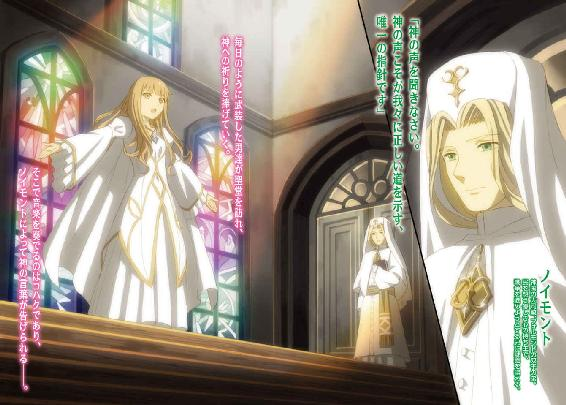
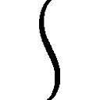
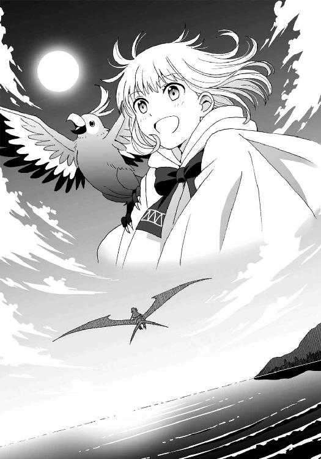

| アナザー・ビート 戦場の音語り (電撃文庫) | |
| 佐原 菜月 | |
| (2015) | |

本書（電子版）に掲載されているコンテンツ（ソフトウェア／プログラム／データ／情報を含む）の著作権およびその他の権利は、すべて株式会社ＫＡＤＯＫＡＷＡおよび正当な権利を有する第三者に帰属しています。
法律の定めがある場合または権利者の明示的な承諾がある場合を除き、これらのコンテンツを複製・転載、改変・編集、翻案・翻訳、放送・出版、公衆送信（送信可能化を含む）・再配信、販売・頒布、貸与等に使用することはできません。
そこに広がるのは、正に地獄絵図だった。
足場の悪い坂道を、その娘は時折足を踏み外しながらも必死に駆けあがっていた。
白い頰と金色の髪は煤に汚れ、柔らかな革の靴ではその悪路に耐え切れず、石を踏む足が血に染まる。
痛さを堪え、肩で息をしながら、それでも丘を登りきった娘の視界に、その光景はまるで異世界のように映った。
かつて緑を纏っていた草原は、血を吸って黒い台地へと変貌している。
目下の大気は真っ赤に染まり、倒れ重なり合うのはかつて人だったものの残骸。その上に立つ者達は、今にも尽きそうな己の命を削ってまで、相手の命を奪おうと無我夢中に剣を振るう。
足元から吹き上がる風に運ばれた鼻をつく悪臭が、死体の焼ける匂いだと気付いた時、娘は胃からせりあがってくるものを押さえることができなかった。
地獄のような光景。しかし娘は目を逸らさずに震える手を握りしめてその場を見つめ、祈るような気持ちでただ一人の男を探す。
そして、娘はその中に愛する者の姿を見つけた。
数少なくなった味方を指揮しながら、自らも率先して剣を振るう黒い甲冑。遠目にも分かるその強さは、しかしそれ故に相手の強豪をも惹きつける。
その男の姿を捉えた時、娘の中に燻っていた小さな迷いは消え失せた。
自らが裏切るのは、両親と、祖国と、そして、神だ。
娘の口から謝罪の言葉が発せられることはない。ただ、前を見据えて首に巻いていた布をゆっくりと外した。その下に現れたのは、首から鎖骨にかけて伸びる、蝶のような形の痣。
その痣をそっとなぞった娘は、陣頭指揮を執る男の横顔を思い浮かべる。果たして、自分に彼と同じことができるだろうか。
だが、この間にも男の命は削られていく。考えている時間はない。
覚悟を決めた娘は、煤けた髪を翻し、燃え上がる戦場へと飛び込んでいった。
戦士は皆戦火に倒れ、国力尽きしその時に
美しき悪魔の声に導かれ
我らは勝利の剣を突き上げたり
１
低い唸り声とともに、地上から伸びる草木が揺れる。
地面から数メートルの位置を滑空したライクフォーゲルはゆっくりと足を伸ばし、ゴツゴツとした岩場へと器用に降り立った。
「うはー、今年も賑やかだね」
風除けのゴーグルを額まで上げて、丘の上から町を見下ろした青年が感嘆の声を上げる。見た目に反して柔らかな黒髪が、吹き上げる風に煽られ無秩序に舞った。
端整だが精悍とは真逆の、人好きする温和な顔立ちをふわりと綻ばせて青年は笑う。その穏やかそうな目元と彼の内側から漏れる子どものような感情が実年齢よりやや幼く見せているが、そこもまた彼の魅力と言えた。
紫がかった瞳を輝かせ、町の活気を取り込むように大きく息を吸うと、微かに甘い春の匂いがする。
「やっぱり宿、先に予約しといてよかったなぁ。この調子じゃ、どこもいっぱいだろうし」
言いながら、着地と同時に畳んでいたライクフォーゲルの翼を撫でる。鳥とトカゲを混ぜたような姿の乗用家禽は、青年の意を汲んで再びばさりと薄い皮膜に覆われた羽を広げた。装甲の下からぐるぐると喉を鳴らすと、急かすように羽ばたきを繰り返す。ライクフォーゲルはホーク型が主流だが、小型で小回りの利くこのスワロウ型を、青年は非常に気に入っている。
「さて、もう少し頑張ってもらうよ、スワロウ」
愛鳥に話しかけつつ風を読む。山に沿ったこの地域では上昇気流を摑みやすい。気流にさえ乗れば、町まで一刻ほどで着くだろう。
青年は再びゴーグルで視界を覆うとスワロウの背に取り付けた操縦席に乗り込み、操縦桿を握った。心地よく身体に響くスワロウの心臓の鼓動に合わせて、操縦桿を握る青年の指先がテンポの良いリズムを刻む。頭に浮かぶのは何とは言えない青年オリジナルの独創的なリズム。
このリズムに〝メロディ〟が乗っかれば、どのような〝音楽〟が出来上がるのか──そんな好奇心が青年の頭を一瞬掠めたが、
「あ、そうだ。去年頼んでおいたリキュール、もう出来てるかなぁ」
僅かに掠っただけでその考えはすぐに食欲の中に搔き消える。
甘酸っぱい果実酒を思い浮かべて微笑むと、操縦桿をぐいと引く。くちばしを引かれたスワロウはそれを合図に大きく羽ばたき、地面を蹴って飛び上がった。青年はその穏やかな顔に似合わない乱暴な運転で身体を反転させると、気流に乗って一気に谷へ向かって滑空した。
かろうじて王都に含まれる都外れの区域、ヴィンタール。
高い山脈に囲まれたその地は、かつては都心へ赴く商人や傭兵の宿場として栄えたが、交通手段が増えた今では、その美しい山脈を目当てにした観光業を主な収入源としている。
最近では周りを囲む山々から一年を通して吹き下ろす風を利用した発電も行われており、石畳の道に並ぶレンガ造りの家屋に加えて、山際でゆったりと羽根を回す風車が新たな町の顔となっている。悩みの種は、冬場はその風が吹雪へと変わるため、途端に客足が途絶えてしまうことだろうか。
そんな谷底の町は、祭りを控えて大いに賑わっていた。近年富裕層での飼育が増えつつあるライクフォーゲルが町の上空を飛び交い、空路は普段では考えられないほどに混雑している。飛行を諦めて地上に降り立ったものの、道路も乗合馬車がひしめき合いながら駆け巡っているような状況だ。おかげでかなりの遠回りを強いられ、ようやく目的の宿に辿りついた時には、すっかり陽が傾いていた。
裏通りの止まり木にスワロウを留めてから店の前へと戻る。入れ違いに宿から残念そうに出てくる人々を見て、大通りから離れたこのあたりの宿ですら既に満室だと推測された。
あらためてノブを引くと、ガラガラとドアに下げられた木の板が賑やかに鳴り響いた。
「よう、ヂェス。今年も酒飲みに現れやがったな」
店内に入った青年を野太い声と厳つい笑顔が出迎えた。この宿の主、ブルースだ。
「やぁ、ご無沙汰。ブルースも元気そうだね。これからしばらく、どうぞよろしく」
言いながらヂェスはカウンター席に腰掛ける。宿屋と共に経営している一階の小さな酒場はブルースが趣味で手掛けているというだけあって、簡素な長椅子がいくつか並ぶカウンターのみの小さな店だ。しかし、棚に所狭しと並べられている酒の種類はその辺りの酒屋の数倍はあるだろう。
ブルースはさっそくジョッキに黒いビールを注ぎ、勢いよくヂェスの前に置く。もう片方の手には自分の分も持っているあたりが、なんとも彼らしい。
ジョッキを軽く掲げた後、ブルースはヂェスのジョッキにゴツンとそれをぶつけた。毎年恒例、再会の一杯だ。
「今年も盛大だね。去年よりも人が多いんじゃない？」
口元の泡を拭ったヂェスが窓の外を見遣りながら言う。
「多いも多い。なんと三割増しだ。何といっても今年は例年の選抜楽団に加えて某男爵様が、ご厚意で私設楽団を連れてきてくださるからな」
肩を竦めて言ったブルースが、その言葉とは裏腹に露骨に鼻で笑った。
「私設楽団？」
思わず顰めそうになった眉間を何とか緩め、ヂェスは片眉を上げるに留める。
かつて、この国における楽団とは、王が所有する国立楽団のみであった。しかし今から十五年前、戦後の貧困にあえいだ国は楽団の維持が困難となり、戦後復興に力を注いだ貴族へ楽団の運営権を〝貸与〟する形で、その保有を認めた。王のみが持っていたというブランド力も相まって、楽団を持つことは、今や貴族の権力の象徴となっている。
しかし、楽団による演奏は、この地、ヴィンタールで三百年前から続くとされる祭りの華であり、庶民が音楽に触れることのできる唯一の機会であった。そのため、王と貴族の取り決めにより、年に一度だけ各楽団から数名を選抜し、この町で演奏会を開くことが認められているのだ。
「選抜隊がいるってのに、何でわざわざ楽団を引き連れてくるのさ」
「別に、俺達だって出演を頼んじゃいねぇよ。こっちだって驚いてんだ」
苦笑しながらブルースがビールを一息に飲み干す。
「それがよ、貴族様が何を思ったか、この庶民の祭りを見てみたいとおっしゃられたそうで。ご丁寧にも権力の象徴、私設楽団五十人を引き連れて、選抜楽団と自分の持ち曲をセッションさせようとまで言い出してくれやがったわけだ。おかげで選抜隊は急遽追加分の練習を強いられるし、こっちは宿やら食事の手配でてんてこ舞いさ」
「ヴィンタールは庶民の町だの、祭りの盛り上がり方が野蛮だのと散々揶揄して嫌厭していたくせに。どういう風の吹き回しなんだかね」
「さぁな。貴族様のことなんぞ、俺達庶民が理解できるかってんだ」
まぁ、噂を聞きつけて観光客がわんさか来てるから、収益はうなぎのぼりなんだけどな、とブルースは苦笑しつつ付け足した。
「ふーん。ま、どうせ自分の楽団を周囲に見せつけたいだけでしょ。全く貴族って奴は面倒くさいよね」
「まあな。でもその貴族様のお陰で飯を食ってる奴には言われたくねえだろうよ」
意味深に笑うブルースに、ヂェスはわざとらしくため息をついてみせた。
「日々実感しているからこそ言うんだよ。ま、貴族音楽を奏るならオレの作ったやつもあるかもだから、気が向いたら聴いてみて。不眠症にはかなりおススメだよ」
冗談めかして肩を竦めたヂェスに、ブルースの豪快な笑い声が降ってくる。ヂェスもそれに合わせて笑いながら、残りのビールを一気に呷った。
部屋まで荷物を運ぶというブルースの申し出を断って、ヂェスはスワロウに積み込んでいたトランクを下ろすと自ら三階の部屋へと運ぶ。シューターを改造したという手荷物運搬機は故障中だが、昨年も同じことを聞かされたのでどうやら到底直すつもりはないらしい。
薄暗い廊下の突き当たり右手にある角部屋の扉を開けると一年ぶりの風景が飛び込んでくる。町のシンボルである時計塔が窓からすぐ正面に見えるこの部屋は、この時期のヂェスの住まいだ。
トランクを傍らに置くと、靴も脱がずにベッドへと倒れこむ。布団はよく干されており、顔を埋めた枕からは太陽の匂いがした。
「あーあ。せっかくのオフシーズンだってのに、こんなところでまで貴族の顔なんか見たくないなぁ......」
枕に顔をうずめたまま、もごもごと一人呟く。この祭りだけが、唯一貴族から離れられる場であるだけに、気分は深く沈む。
ヂェスは貴族の私設楽団のために曲を作る作曲家だ。数年前に突如として頭角を現した彼はたちまち貴族の間で評判となり、現在ではその名を知らない者は没落するとまでいわれるほどの人気を博している。
とはいっても、ヂェスは特定の楽団に帰属するのではなくフリーを貫いているので、曲を作っては求める貴族にこちらの言い値で買い取ってもらうといった形式で商売をしている。ヂェスの作る曲は今や高級ブランドと化しているので、ヂェス本人ですらボッタクリだろうと思うような値でも貴族達は競って手に入れようとするのだ。もちろん、遠慮するような精神は貴族相手に持ち合わせてはいないので、もらえるものはありがたくもらっておく。
「......確かに、そのお陰でこうして暮らしていけるんだけどねぇ」
寝返りを打って天井を見上げたヂェスは先ほどのブルースの言葉を思い出してため息をついた。
この仕事を続けている限り、金銭に困ることはない。しかし、貴族の求める音楽は壮大で、威厳があって、そしてどこか型に嵌っていた。全くもって面白みがないのだ。
しかも、そのつまらない曲を作っているのが、他でもない自分自身なのだということにヂェスはジレンマを感じていた。
「でも、昔はこんなことすら考えることもなかったんだよなぁ......」
ヂェスの脳裏に過去の記憶が蘇る。値踏みするようにこちらを見下ろすいくつもの目と、それを冷ややかに見上げる幼い自分。
「！」
ヂェスは、勢いよく顔を上げ、その幻影を振り払った。大きく息を吸うと、仰向けでゴロゴロとベッドの上を転げまわり、そして突如ピタリと止まる。
「......ま、考えてても仕方がないし、美味しいもの食べに行こっかなっと」
腹筋を使って一息にベッドから身を起こすと、すっかり機嫌を良くして上着を片手に部屋を出た。この切り替えの早さが、今まで貴族と渡り合ってこられた所以かもしれない。
ブルースに部屋の鍵を預けて宿を出たヂェスは、馴染みの酒場へと向かう。宿の酒場は酒の種類は多いが、食べ物は全く置かれていない。その様式は生粋の酒好きであるブルースらしいが、アルコールで空腹を満たすことができないヂェスは、食事は大抵外へ出るようにしていた。
裏の止まり木へと足を向けると、主に気付いたスワロウが嬉しげに羽ばたく。ヂェスはスワロウの騎乗用装甲を外してやると、水と穀物の入った樽を止まり木の下に置く。たまにはゆっくりと休ませてやるのもいいだろうと愛鳥の閉じた両翼を片手で撫でてから、自分の足で石畳の道を歩き出す。
「今の時期なら春ナスかなー。豚の燻製に川魚の香草焼きも外せない」
子どものように鼻歌交じりに口ずさみながら、人々で賑わう屋台の間をすり抜けて路地を突き抜ける。香ばしい屋台の煙や、活気のある呼び込みに時折足を止めて街の様子を楽しみながら、石畳の道をゆったりと歩いていく。
大通りに出ると、人々が空を指さし何やら騒いでいた。ヂェスもつられて天を仰ぐ。と、夕陽を背にした逆光の中で、巨大な何かが夕焼けに浮かんでいた。
「何だ？」
手を翳して目を凝らす。その先に浮かんでいるのは前後左右四本のプロペラを主力とした最新式の巨大飛空船。その舷側にでかでかと刻まれた文字を読み取ったヂェスは「げっ」と露骨に顔を顰めた。あれはヂェスが最も嫌う貴族のイニシャルだ。
「うわ、最悪。よりによってアイツ......」
自分の運の無さに肩を落としたヂェスだったが、その耳が、小さな声を拾った。
「......クソ貴族めが」
「え？」
思わず心の声が外に出たのかと口を押さえたヂェスだが、その声は明らかに自分のものではない。辺りを見回すと、興味深そうな表情で空を見上げる人々の中に、一人だけ険しい表情で飛空船を睨みつける者がいる。
小柄な身体を包む衣服はこの町のものだが、頭をすっぽりと覆うフード付きのマントはたっぷりとした裾が広がっており、旅商人が身に着けるものと似ていた。フードから僅かにはみ出た髪は、赤毛や茶髪が多いこの地域では珍しい、くすんだ金色をしている。
ヂェスの視線に気付いたのか、くるりとこちらを振り返った鋭い眼差しがヂェスを捉えた。
逸らすタイミングを失い、正面から目が合ってしまったヂェスは、とりあえず敵ではないと示すために微笑んでみせる。
相手は印象的な蜜色の瞳でヂェスを一瞥すると、表情を変えずにマントのフードを被り直し、あっという間に人ごみの中へと消えた。
ヂェスはその背を見送って、小さく首を傾げる。先ほどの言葉は明らかに悪意を含んでいた。この町の住人であれば、貴族を煩わしく感じることはあっても、嫌悪するには至らないだろう。それとも、実は農耕地域からの旅人で、貴族への納税のために過酷な労働を強いられているのだろうか。
様々な憶測を過らせたが、上空の飛空船が町外れの港へとゆっくりと下降してくるのを見たヂェスは、船の持ち主と鉢合わせしないよう足早にその場を去った。
２
大通りに面した一軒の店へと飛び込むと、威勢の良い声が出迎える。
「いらっしゃい！ あら、ヂェスじゃない。そろそろ来る頃じゃないかって話していたところよ」
扉に付けられているベルがカランカランと音を立てるのと同時に、カウンターから振り返った年齢不詳の美女が妖艶な笑みをこちらへと向けた。
「お久しぶりだね、ライカ姐さん。またキレイになったんじゃない？」
「いつもながらお上手なことだね。あんたが来るのを待っている娘達がこの町には何人いるのやら」
「待ってはくれていても誰もついて来てはくれないんだから、オレの魅力もまだまだってことなのかな」
軽口を叩きながら店奥のカウンター席に腰掛けて、ヂェスは次々と現れる従業員達に愛想よくひらひらと手を振る。顔なじみの連中からの挨拶に笑顔で応えていると、格別に甲高い声が奥から聞こえた。
「ライカ姐さん!? 今、ヂェスって言った!? ヂェスが来たの!?」
ヒールを高らかに鳴らしながら駆け出てきたのはこの店の踊り子、ジルだ。自慢のストレートヘアを高い位置でまとめ、裾の長い赤いドレスを纏っている姿は彼女の長身を魅力的に引き立てている。長すぎる付け睫毛が瞬き、その下の切れ長の瞳が店内をぐるりと見回して奥に座るヂェスを捉えた。
「ヂェス！ 待ってたのよ！」
声と頰を高揚させながら、ジルは猛然とヂェスに走り寄る。
ヂェスは微笑みを湛えたまま無言で椅子から立ち上がると両手を広げた。その腕にジルが飛び込んでいく。
そして一拍。
バンっと大きな音が店内に響き、赤いスカートが宙を舞う。
「ちょっとぉ！ いきなり投げ飛ばすなんて酷いじゃないの！」
見事な受け身を取って床を転がったジルが抗議の声を上げた。
「何度も言ってるケド、オレは男に抱きつかれて喜ぶ趣味はないんだよ、ジルバ」
穏やかな笑みの奥に冷ややかな色をチラつかせながら、女装男を見下ろしたヂェスが抑揚を最大限に抑えた声で言う。この歓迎さえなければこの酒場は最高なのに、と思うのも最早毎年のことなのだが。
ジルこと、ジルバは打たれ強くも自ら立ち上がるとスカートを払ってヂェスの隣にドカリと腰掛ける。
「もー、アタシだってやりたくてこんな恰好してるわけじゃないわよ。でもお店の利益と、何よりお客さんからの熱い要望があるんですもの」
ねー？ と小首を傾げて可愛らしく周りに問い掛けると、既に半分出来上がりつつある客達から野太い歓声が上がった。男だと知った上でのこの人気。全くもってヂェスには理解できない心情だ。
「今年も、ちゃんと帰ってきたわね」
「貴族サマのおかげで稼がせてもらってるからね」
ヂェスの軽口にジルバは苦笑気味に僅かに笑う。
「お帰り、ヂェス」
「うん。ただいま」
女装を除けば最高の友人であるジルバの言葉に、ヂェスはあらためてホームへ帰ってきたことを実感した。
「んで？ 今回はいつまでこっちにいるんだ？」
急に男言葉に戻ったジルバが、店員の娘に持ってこさせた酒瓶を掲げながら尋ねた。美味と評判の彼の手製の果実酒だ。
無理に高くしていた声も、やや高めではあるがちゃんと男と分かるものになっていた。一体どういった喉の構造をしているのかと疑念が湧くが、知ったところでヂェスに利は無いので敢えて聞く必要もない。
「あ、コレって去年頼んでた酒？ うわー、緑の果実だったのにお酒は黄色なんだね」
氷の入ったグラスにとろりと注がれた蜜色の液体を掲げて目を細めると、ヂェスは嬉しそうに口を付ける。
「おぉ、美味い！ あ、今回は夏までこっちにいる予定。って言ってもここを拠点に近くの町を回るつもりなんだけどね」
「いい曲を作るためのリフレッシュ休暇ってやつか？」
「嫌な曲を無理やりにでも作るためのストレス発散だよ」
べ、と舌を出したヂェスに、彼の貴族嫌いを知っているジルバは少女のような顔で苦笑する。
「しかし、お前が貴族音楽の作曲とはね──っと」
思わず、といった体で口にしてしまった台詞を誤魔化すようにジルバが口元を押さえた。
後悔の色を浮かべる友に、ヂェスは舌の先で酒を舐めつつ苦笑を漏らした。自分の過去を知られているということは、居心地の良さと同時に時にこのような場面をもたらすことがある。
相手に気遣わせてしまうことが心苦しくもあるが、しかし今も昔も変わらずに接してくれるこの町の人々にヂェスは言葉には出さずとも感謝していた。
おそらく失言を悔いているだろうジルバに、ヂェスはわざと大げさなため息をついてから肩を竦める。
「昔みたいな〝作曲〟をやるくらいなら、貴族サマのご機嫌をとっていたほうがいくらも楽だよ。それにほら、オレってモテるからさ。そのうちどこかのご令嬢に気に入られて一生遊んで暮らせる身分になっちゃうかもよ？」
軽口を叩くヂェスの真意を汲み取って、ジルバが口元に笑みを取り戻す。手を伸ばしてヂェスのグラスを奪うと抗議の声が上がる前に呷るようにして中身を飲み干し、してやったりと目を細めた。口元を指で拭うと赤々と差していた紅が流れ、一層色っぽい風情になる。
「ま、お前がどんな曲を作ってんのか、祭りの席でたっぷり聴かせてもらうことにするよ」
「ありがたく聴いてよね。一曲数百万リロの曲だってあるんだからさ」
飲み干されたグラスを恨めしげに見つめながらしれっと言い放った金額の大きさにジルバは元々大きな目を更に見開いた。そしてまじまじとヂェスを見つめる。
「......お前って、実は本当にすげぇ奴だったんだな」
「何を今更」
「アタシと結婚する気ない？」
「死んでもお断りだね」
踊り子スタイルでカワイ子ぶるジルバを笑顔でばっさりと切り捨てて、ヂェスは果実酒の入ったボトルを傾けグラスになみなみと注ぐ。まだ氷が溶けていないとろりとした甘酸っぱい酒は空っぽだった胃に熱く響く。
「ほら、くだらない話してないでジルはさっさと準備しなさい。もうすぐステージよ。ヂェスもせっかく来たんだから食べたら一曲やっていきなさいよ。ここでは誰の顔色もうかがう必要なんてないんだからさ」
言いながらライカが湯気を立てる大皿を机に並べる。予想通りの茄子料理に魚のパイ包みとヂェスの好物が食欲をそそる香りを振りまいている。目を輝かせるヂェスにジルバがにやりと笑みを向けた。
「ヂェス、今回も勝負といこうじゃねぇか。俺が勝ったら祭りは全部お前の奢りで」
「じゃ、オレが負けたらこのお酒はタダってことでいい？」
「おう......っていや、待て！ なんでお前が負けてタダなんだよ！」
「あ、気付いた？」
「当たり前だっ！ 俺が負けたらその時はその酒代を半額にしてやるよ」
「えぇー、それじゃオレのがハイリスクじゃない」
「半端ねぇくらいがっつり稼いでるだろーがお前は！」
スカートがまくれるのも構わず椅子に足を掛けて吼えるジルバを宥めるために、ヂェスは苦笑とともにその勝負を飲んだ。とは言ってもこれは最早恒例となっている二人の遊びだ。
美味しい料理を思う存分食べ、ヂェスの腹と心が十分に満たされた後でその勝負は始まった。
「さぁヂェス！ どっからでも掛かってきなさいよ！」
「オレの技についてこられると思ってるの？」
不敵な笑みを浮かべて互いを一瞥すると、二人は舞台へと上がる。
ジルバは舞台中央で背筋を伸ばして立つと顎を引いて視線は斜め下へ、右手を目に翳すように上げたポーズをとる。一方のヂェスは舞台に上げた酒樽の前に片膝を立てて座り、木製のスティックを両手に握った。
それまで好き勝手に飲んで騒いでいた客達が、その様子に気付いて舞台に注目し始める。常連で今から何が始まるのかを知る者も、全く知らない者も、興味津々で二人を見守った。
皆の視線が集まる中、ヂェスの右足がカウントをとるように床を鳴らす。それに合わせてジルバが伏せていた顔をぱっと上げた。
それを合図に、二人の勝負が始まる。
二本のスティックを巧みに操り、ヂェスは一つ打ちと二つ打ちを組み合わせた爽快なビートを酒樽へと打ち付ける。対するジルバは、ヂェスが刻むリズムを確実に捉え、軽やかなステップへと変える。酒樽とヒールが奏でる音はメロディこそないが、一つの音楽となって狭い酒場に響き渡った。
ヂェスが刻むビートを難なく乗りこなすジルバを見て、ヂェスは唐突にシンコペーションを入れて揺さぶりをかける。主軸としていた強拍がずれ、ステップは大きく乱れるはずだったが。
「──甘いわね」
僅か半拍で変動を読み取ったジルバは、一度宙に浮かせた右足を再度踏み込むことで見事にシンコペーションに対応してみせる。頭上のクラップで、観客の視線を上半身に引きつけることも忘れない。
観客から、わっと歓声が上がった。
声援に笑みを返しつつ、ヂェスはスティックを、ジルバは自らの足を巧みに操り高らかな音を響かせ続ける。
「なかなかしぶといね、そろそろ辛いんじゃないの？」
額に汗を滲ませながら、ヂェスが両手の動きを更にスピードアップする。たった二本のスティックで操っているとは思えないほど、複雑なリズムが跳ねる。最早、目視でスティックの動きを追うことすら難しい。
「それはこっちのセリフよ。まさかこれくらいで疲れちゃったのかしら？」
余裕を表すためか、ジルバが僅かな隙にターンを決めた。競り合いのような舞台に客からは更に盛大な歓声が上がる。それに合わせて二人の動きもヒートアップしていく。
「相変わらず負けず嫌いだねぇ」
ジルバのターンに対抗するように、ヂェスが左右交互にスティックを回しながら言った。思わぬパフォーマンスに、女性達から黄色い声が上がる。
「お前だけには言われたくねぇよ」
思わず男言葉に戻ったジルバが、ヂェスのリズムを追い越す勢いで身体を最大限に使ったダンスを繰り広げる。荒々しく、それでいて手先までに神経が行き届いた動きは、男女問わずその場の人々を魅了する。
「あークソ。腕を上げたな」
どんなスキルを用いても、ジルバは落ちることなく食らいついてくる。さすがのヂェスも表情から余裕が消える。腕はまだいいが、拍を取っている足の方がそろそろ限界だ。
「最後の手段、使おうかな」
ヂェスはそれまで速いペースを保っていた刻みの速度を急激に落とした。
「あら、ついに白旗かしら？」
「冗談。ここからが勝負だよ」
急な速度変化にも見事に対応してみせたジルバに、ヂェスはにこりと笑みを向けると大きくスティックを振りかぶった。
刻むのは足から半拍遅れただけの単調なリズム。それまで身を乗り出していた客達も、遅いリズムに合わせて身体を揺らせているジルバも、不思議そうな表情を浮かべてヂェスを見る。しかしヂェスは我関せずの表情でスティックを振るう。そして、突如言い放った。
「さぁ、お客の皆さん。見てるばかりも飽きたでしょ？ 一緒にやろうよ。そうだな、そこのお兄さん。カッコいいビートを刻んでみなよ。きっと隣のお姉さんから熱い視線を受けちゃうよ」
指名を受けた男の周りがやんややんやと囃し立てる。酒が入っていることもあり、周りに乗せられた男がライカから受け取ったスティック代わりの木杓子を手に舞台へと上がる。
「ど、どうすりゃいいんだ？ 俺には音楽なんて分かんねぇぞ」
「どうだっていいんだよ。お兄さんが思うままに叩いてくれれば」
人当たりの良い笑みを浮かべて顎で促すと、男は恐る恐る樽を叩きだす。
「もっともっと！ 楽しそうにさ！」
煽られて、男はがむしゃらに杓子を振るう。それは規則性などない無茶苦茶なリズムだった。
「なんだよ！ こんなの反則じゃねぇか！」
ヂェスの刻むビートだけを頼りに、かろうじて踊りを続けるジルバが抗議の声を上げた。それでもヂェスはこの奇妙なセッションを止めようとしない。そうなると負けず嫌いなジルバが自ら止まるはずがなかった。
そして暫し。
その変化に気付いたのは、やはり身体全体でリズムを感じているジルバだった。
「なんだ......コレ」
それまで成り行きを見守っていた客達からも次第に驚きと戸惑いの声が上がる。
「オレが作るのは、貴族向けのお上品な曲ばかりじゃないんだよ？」
穏やかな顔に似合わない不敵な笑みを浮かべたヂェスが、額に汗を光らせながら腕を振るう。
男の刻むリズムは依然として規則性がない。しかし、ヂェスが絶妙のタイミングで男に合わせて打ち付ける音がうまく混ざり合い、次第にそれらは一体化していく。
これは、何だ。
ジルバは縺れそうになる足を必死に操りながら今までにない衝撃を全身で受けていた。速度は決して速くはない。先ほどまでのが、余程だ。なのに、素人が適当に叩く規則性のないリズムが感覚を狂わせる。
いや、違う。ただ無茶苦茶なだけであれば、こうして踊り続けられるわけがない。いくら完璧な踊り手だといっても、リズムが無ければ踊れない。つまり、これはリズムのある〝音楽〟だということか。
いつの間にか、杓子を振るう男の顔には満面の笑みが浮かんでいた。打ち下ろす手にも、もう迷いは感じられない。
「さぁ、ここからは自由参加だよ！ 皆好きにやっちまってください！」
ヂェスの声が遠くから聞こえる。言われるまでもなく、堪えきれずに飛び入り参加した客達で舞台上はいつの間にか一杯になっていた。
皆が手を叩き、足を踏み鳴らし、グラスを鳴らした。ただの騒音になりかねないその状況で、しかしそれらは間違いなくヂェスが操る曲の一部だった。
そして、ジルバの思考が止まる。ただ、無意識に手足だけが止まらず、動き続ける。自分の意志ではない何かが身体を動かしているようだった。ジルバだけではない。その場にいる者全てが何かに憑かれたようにその空間に身を委ねていた。
とうとう体力に限界が訪れ、足が縺れたジルバが倒れるように床へ手を突く。この自分が踊り負けるなんて普段なら悔しくて堪らないはずなのだが、しかし今は乱れる息の中で何故か笑い出したい気分だった。
「オレの勝ちだね？」
いつの間にかジルバの前に立ったヂェスがにこやかに言う。
「あぁ、俺の負けだよ。さすがにこんなのに勝てる気がしねぇ！」
未だ騒ぎ立てる周りに負けないよう声を張り上げる。
「......と、言いたいところだけど、実はオレの負けだったりして」
「は？ 何でだよ」
ヂェスは苦笑しながら眼前で両手をブラブラと振ってみせる。
「途中で手が限界きちゃってさ。スティック落としちゃったんだ。ジルバが倒れる前にね。だから統制が利かなくなって君が踊れなくなったんだよ」
悔しそうに言うヂェスの手は肉刺が潰れて痛々しい。黙っていれば自分の勝ちだと言っても疑いはしないのに、とジルバもまた苦笑する。いつも飄々としていて分かりにくいが、実は結構真面目であるヂェスの性格は長年の付き合いで把握している。
「そんなら俺だってダメだな。途中でトリップしちまった。俺の意志で踊ってたのは最初の数分だけだ。悔しいことこの上ないが、完全に踊らされちまってた」
相変わらずスカートを気にもせずに、床に胡坐をかきながらジルバが諸手を上げて降参のポーズをとる。
「じゃ、今回は引き分けってことでさ。ジルバはオレへのお酒をタダにする。その代わりに祭りは全部オレ持ちってことでどう？」
いたずらっぽく笑いながらヂェスが拳を差し出す。
「のった！」
それに自分の拳をつき合わせ、ジルバもにやりと笑う。
「で、こっちはどう始末をつけてくれるんだい？」
突然割り込んだ声の主に二人は目を向けた。
「あ......」
「あたしはあんた達二人だけの勝負を求めたつもりだったんだけどねぇ？」
腕組みをして仁王立ちするライカが口元だけで笑いながら二人を見下ろしていた。
「ヂェ、ヂェスが皆を煽ったんだからお前がなんとかしろよ！」
「は？ 最初に勝負を仕掛けてきたのはジルバだろ!?」
子どものように小声で責任を押し付けあう二人を見て呆れたようにため息をついてから、ライカはにこりと笑みを作って顔を近づける。
「ま、いいさ。お客がこんなにも楽しそうなんだからね。ただし、後片付けはしっかりと二人に手伝ってもらうからね」
片目を瞑ってみせるライカにほっとしたように二人同時に肩の力を抜く。女手一つでこの店を切り盛りしているだけあって、ライカはそこらの男共よりもよっぽどたくましい。店で暴れた若者を片手で外へと投げやったという伝説すらある。味方であれば心強いが、絶対に敵には回したくない相手なのだ。
「それにしてもすごいね。あたしは音楽の価値ってのはからっきし分からないが、誰にでもできるものなんだね」
キセルから紫煙を燻らせながらライカが舞台へと目をやった。統率をなくし、限りなく騒音に近づきつつも、まだ皆は楽しげに思い思いのリズムを刻み続けている。
「もうそろそろ、ただの騒音だろコレ」
片耳に指を突っ込み、うるさげに顔を顰めるジルバに、ヂェスは珍しく真面目な面持ちで答える。
「いやいや、どんなものでも音があれば音楽に成り得るんだよ。異国の言葉では、『音』を『楽しむ』と書いて音楽と読むくらいだからね。ただ、それが心地が良いかどうかは聞く人によって異なるってだけさ。まぁ、さすがのオレも、貴族サマの前でこんなの聴かせたりはしないけどね」
からからと笑うヂェスだったが、こいつならやりかねないとジルバとライカは真顔で顔を見合わせた。
勝手に盛り上がり続ける客達から遠ざかり、カウンターへと移動した三人は酒盛りの続きをしようとグラスに手を付ける。
「......見つけた」
突如聞こえてきた耳慣れない声に、三人が一斉に振り返った。
年の頃は十五、六だろうか。店内だというのに白いフードを目深に被り、その下から突き刺すように睨む、その強い視線には覚えがあった。
「あれ？ 君、さっき大通りにいた子だよね？」
ヂェスの問いには答えず、相手は飛空船を睨みあげていた時と同じく、険しい表情でこちらを正面から見据える。
「あんたの曲ならば、奏でられるかもしれない」
小さく呟いた言葉は耳に届かず、だが更に一歩こちらへ詰め寄る相手から逃げるでもなくヂェスはその視線を受け止める。蜜色の瞳は真剣さを帯び、身体の脇で握られている手には力が入っていた。
「あんたにとって音楽って何だ？」
「うーん、誰もが楽しくなれる魔法かな？」
唐突な質問に、ヂェスは面白そうに眉を上げて答えた。
「真面目に答えろ！」
「ちょ、ちょっと待てよお前」
嚙み付かんばかりの相手の勢いに、見かねたジルバが間に割って入る。しかし絡まれる形になった当の本人は別段困惑した様子もなく小さく肩を竦めてみせた。
「真面目だよ。今この世における〝音楽〟は、嗜みの一つで、一部の上流階級だけの特権とされている。けど、かつてはどんな階層の庶民だって、それこそ子どもだって音楽を楽しんでいた時代があったんだ。さっきのオレ達みたいにね」
「そんなの子どもだましのおとぎ話だろ。旋律器官を持たない者が、どうして音楽を奏でられる？ さっきのだって、旋律がない。あの状態では、まだ音楽とは言えない。ただのリズムを刻む〝音〟だ」
旋律器官という言葉にヂェスが僅かに眉をひそめた。そしてフードの下を覗き見るように腰を屈めて視線を相手と合わせる。
「君、ひょっとして旋律士......？」
ヂェスの言葉に、ジルバとライカが短く驚きの声を上げる。
〝旋律士〟。それは貴族が持つ楽団の構成員であり、生まれながらにして旋律器官と呼ばれる特殊な器官を持つ者達。首から鎖骨にかけて広がる羽のような模様の痣が、旋律士の証だ。
その器官を用いて、彼らは声以外の〝音〟を出すことができる。音を自由に操り、互いに重ね合わせることで〝音楽〟を生み出すことができる唯一の存在。それがこの国の生きる宝と称される旋律士という職業だった。
旋律器官を持って生まれる者は非常に少ない。そのため、旋律士と成り得る者達は皆、八歳になる年から旋律士を養成する国立の音楽校に入り専門の教育を受け、同時に国からその身を保護される。通常十五歳で教育課程を修了し、試験に合格した上で貴族から採用されることで、晴れて正式に旋律士として各楽団へ所属することになる。
だが、その採用も学校から国を通じて行われるはずだ。旋律士を欲する貴族は、爵位や功績によって、レベルの高い旋律士を雇う権利を得るため、今では楽団自体が貴族達の権力の象徴となり、また旋律士自身も一般人とは縁遠い存在となっていた。
そんな希少な存在が、何故一人でこのような場所に居るのか。
ヂェスは相手の強い視線を全く意に介さず、その答えを無言で求める。
「......正式な〝旋律士〟じゃない」
ふい、と視線を逸らし、ふて腐れたように言う。
「え？ どういうこと？」
重ねて問うたヂェスをギッと睨みつけると、カウンターに置かれたヂェスのグラスを手に取り、中身を一気に飲み干す。
そして、吐き出すように叫んだ。
「試験に、落ちたんだよ!!」
大きな目を潤ませこちらを睨みつけた相手は、だが突如、ふっと目を閉じるとそのまま糸が切れたかのように膝を折った。ぐらりと身体が前のめりに倒れる。
「うわっと、危ない」
咄嗟に伸ばしたヂェスの腕の中に、華奢な体軀がすぽりと収まる。
「寝てる......」
突然の出来事に、思い当たる理由は一つだ。
「......ジルバ。このお酒、ひょっとしてアルコールきつい？」
「......あぁ。何せ、ヂェス用の特注品だからな」
苦い表情で答えたジルバに、ヂェスは小さく肩を竦めた。
ヂェスの腕の中で、白いフードがずれて、その下に隠れていた顔が露わになる。
白い肌と、今は閉じられている大きな瞳に見合った長い睫。目鼻のバランスが良い整った顔立ちではあるのだが、無防備な寝顔はあどけなく、美貌よりもまだ幼さの方が勝っている。
そっと肩を揺すってみるが、僅かに身じろぎしたものの、起きる様子はない。毛先だけに緩くくせのある、ややくすんだ金髪が、ランプに照らされ鈍く輝いた。
「あー、起きないねぇ」
大して困った様子もなく言う。
額に手を当てたライカがどうしたものか、と呟きながら水を取りに厨房へと向かった。
「おいヂェス、結局何者なんだよコイツ」
小柄な外見通りの軽い身体を抱えたまま、ヂェスは椅子に座って眉間に皺を刻むジルバに眉尻を下げた笑いを向けた。
「少なくとも、どこかの貴族楽団から逃げてきたってわけではなさそうだね」
貴族相手に策を講じる必要があるかどうかは、ヂェスにとって大きな問題だ。
「お前も、なんだかんだと厄介なことに巻き込まれる体質だよな」
呆れたように言うジルバだったが、彼自身もこのまま知らぬ存ぜぬと放置できるような性質でないことは、今のヂェスとの関係からもよく分かる。
「何にせよ、コイツが起きないと何も分からないか」
ため息をつく友人に、ヂェスは、
「ま、これも何かの縁かもだしね」
腕の中でついに寝息を立て始めた少女を見下ろし、小さく笑った。
３
ごーん、ごーん、と太い金属音が規則的に鳴り続けている。
それが時を告げる鐘の音だと気付いた少女は、暖かく柔らかい寝床に名残惜しさを感じつつもゆっくりと上半身を起こした。乱れた髪で視界が覆われ、薄く開けた眼を再び閉ざす。
「お腹、減った......」
まだ朝食に間に合うだろうか、と枕元の時計を手探りで引き寄せる。
「ん......？」
手は空を摑み、そこにあるべきはずの時計が存在していない。
ぼんやりとしていた頭が徐々に鮮明になってくると同時に、少女は辺りを見回し勢いよくベッドから飛び降りた。
「......どこだ？ ここ」
そこは見知らぬ場所で、最低限の家具しかない殺風景な部屋はどこかの宿のようだった。
立ち尽くす少女の背後で、ドアがゆっくりと開く。
「あ、起きたんだ？ ちょうど良かった。もう夕方だし、お腹すいたでしょ。パンとりんごがあるよ」
ガラスの水差しを片手に、腕には大きな籠を抱えた青年が少女を見下ろし微笑んだ。
咄嗟に腰の後ろへ手を回すが、そこにあるはずの武器が無い。はっとして首元を触ると、巻きつけている布はそのままになっていた。
「変な長さの棍なら、そこだけど？」
両手がふさがったままの青年が、顎で部屋の隅を示す。咄嗟にそれに飛びつこうとした少女に、
「危害を加える気があれば、もうとっくにしてるってば」
のんびりとした青年の声が被さる。
武器を摑んだ少女は、その言葉を受けて一瞬固まる。肩越しに見る青年の表情に敵意は一切見られない。
「......棍じゃない。トンファーだ」
言い訳のようにそう言うと、静かに腰元へとそれを収めた。
「ここ、どこ？」
武器は収めたものの、未だ野生動物のように警戒心を剝きだしにする少女に、青年──ヂェスは手にしたものを全て机に置いてから両手を上げて無害を示した。
「今のところ、オレの部屋。後数か月したらどこかの誰かが泊まる部屋になるんだけどね」
そして両手を上げたまま壁側に近づくと、時計塔を臨む窓を僅かに開く。途端に喧騒が部屋まで届き、此処が街中だと少女に知らしめた。
「誤解のないように言っておくけど、オレは勝手に絡んできて勝手に倒れた君をそのままにしておくことができずに仕方なくここまで連れてきただけの善良な一市民。お陰で昨夜はカウンターの長椅子で毛布に包まって眠ったよ」
〝勝手に〟と〝仕方なく〟のところを強調して言ったヂェスに、しばし視線を空中にさ迷わせた少女は、ようやく昨夜のことを思い出したらしく、ばつの悪そうな表情で顔を背けた。
「わ、悪かった、なっ」
ぞんざいな上、吐き捨てるような謝罪だったが、ヂェスは笑いながら少女に椅子を勧めた。
「どういたしまして。オレはヂェス。君、名前は？」
「......コハク」
ヂェスは、小刀で器用に皮を剝いたりんごを半分コハクに差し出しながら残りを自ら齧ってみせる。コハクはしばらく躊躇するようにりんごとヂェスの顔を見比べていたが、空腹には逆らえなかったのか両手ではっしと果実を握ると爽快な音を立ててかぶりついた。
気持ちの良い食べっぷりを面白そうに見つめ、ヂェスはパンを切り分けると壺に入った蜜をそれぞれに垂らして一つをコハクの前へ、そしてもう一つを自分の口へと運んだ。
時折水を飲みながら、犬のようにガツガツと食事を続けていたコハクがようやく人心地ついたのを見計らい、ヂェスが再び口を開く。
「で、コハク。君はどうしてこんなところに居るの？」
それが、この部屋に居るという意味でないことはコハクにも分かっているだろう。だからこそ、彼女は口へと運びかけたグラスを握りしめ、俯いた。
「こう見えてオレは貴族御用達の作曲家だから、旋律士の規律や制度には詳しいつもりだよ」
遠回しに噓を吐いても無駄だと伝え、正直な理由を聞いた上で今後の身のふり方を考えるつもりだった。ヂェスとて、何も聞かずに面倒を背負い込むほど聖人君子ではない。
コハクはヂェスの視線から逃れるように手の内で揺れる水面を見つめ、口を閉ざした。ヂェスは急かすでもなく、相変わらず穏やかな表情のままで食事を続ける。
沈黙が続く中、窓外の街のざわめきだけが騒がしく活気をみせている。ヂェスはパンを銜えたまま、窓枠から身を乗り出し祭りの準備に勤しむ街を見下ろした。街が混みだす前にスワロウの騎乗用装甲を整備に出しておいた方がよいだろうか、などと考えながら室内へと視線を戻すと、蜜のような色の瞳がこちらを見据えていた。
「あんた、すごい作曲家なんだろ？ 昨日酒場の奴等が、そう話してた」
少女らしからぬ乱暴な言葉遣いだが、何故かそれを不快だとは感じない。それは、彼女の少し掠れた、それでいて通りの良い独特の声のためかもしれない。
「君の言う〝すごい〟ってのが、どういう意味なのかは分からないけど、貴族の間である程度名前が売れてるってのは事実だね」
本当は〝ある程度〟どころではないのだが、ヂェスは他の作曲家のように売れることを目標にしたことがないので自分の認知度にもほとんど興味を持っていなかった。分かるのは、自分の曲がかなりの高額で取引されているという事実のみだ。
「なら、貴族にも顔が利くよな？ なぁ、あたしを雇ってくれる楽団を紹介してくれないか？」
コハクからの思いも寄らない言葉に、ヂェスは紫色の瞳を瞬いた。
「オレ、旋律士の制度も知ってるって言ったよね？ 旋律士の楽団への採用は音楽校を通じてしか行われてはならない、でしょ？」
それは希少な存在である旋律士を守るための規則であり、また平等を訴える貴族達のための規則でもあった。その規則の上に〝旋律士〟という立場が存在しているのであり、規則を無視することは即ちその立場を否定することと等しい。それを旋律士見習いである音学生のコハクが知らないわけがない。
「あいつらは、絶対あたしを採用なんてしない！」
言い放った彼女の瞳には怒りとも憎しみとも取れる色が浮かんでいる。感情が高ぶり制御が利かなかったのだろう、声とともに喉の奥からファンと音が漏れた。それは柔らかな色合いを含みつつも、はっきりと自己主張をする独特な音色。丸でもなく四角でもない、限りなく円に近い多角形。そんな全ての間をとるような音色をヂェスは初めて耳にした。
「なるほど。確かに難しい音色を持ってるみたいだね」
音楽校は貴族の希望に沿った音色を持つ者を国に代わって推薦し、試験を経ての採用となる。しかし彼女のような特殊な音色は、そもそもの需要が少ない。
最早隠す意味がないと思ったのか、コハクは首元に巻いていた細い布を解いた。その下から現れたのは、喉元から鎖骨に向かって蝶のように広がる特徴的な痣。その模様に、ヂェスは思わず身を乗り出す。
「すごい。こんな複雑な模様、見たことがない」
首元に現れる痣は旋律器官を持つ者の特徴だが、コハクの模様はとりわけ独特で、長く旋律士に接しているヂェスでも未だ目にしたことがない形状だった。旋律器官の形が変わっているため、そこから作られる音色もまた特徴的なのかもしれない。
「ちなみに、属性とクラスは？」
旋律士は、音学生時代からその音色と技術に合わせていくつかの属性とクラスに分類されている。
今、貴族に最も人気があるのはストラと呼ばれる属性だ。伸びやかな音から刻みまでを自由に奏で、その音色は軽く、やや尖った印象のものが多い。そして、技術の高さでＳ、Ａ、Ｂ、Ｃ、Ｄと五段階に分けられるクラスによって、旋律士としての価値も変わってくる。例えばストラのＳクラスであれば、かなりの権力と財力を持つ貴族でしか扱えないというわけだ。
先ほどの音からして、コハクはまずストラではなかろうと思いながら、ヂェスは尋ねる。
「ウィンド。クラスは......Ｄ」
口元に手を当てて、ヂェスはふむ、と頷く。
「ふーん。ウィンドなんだ。ブラスでもいけそうだけど」
ウィンドは柔らかで丸い音が特徴であり、硬質で勢いのある音が特徴なのがブラスと呼ばれる属性だ。コハクはその丁度中間ぐらいの音だとヂェスは感じていた。つまり、どちらとも取れないため、楽団でのポジショニングが難しいのかもしれない。しかし、その程度なら採用にそこまで響くとは考えにくい。貴族の中には風変わりな音色を好んで持ちたがる者だっているのだ。突出して団内の音色から浮き出ることがなければ、珍しいもの好きの貴族側から逆に求められる場合だってあるだろう。
そう言ったヂェスに、コハクは下唇を嚙んで俯いた。
「音色だけなら、うちの楽団に欲しいって言う貴族もいたんだ。......でも、ダメだった」
「ダメって？」
性格的な問題なのかと考えたヂェスの思いを察してか、コハクが憮然として言う。
「あたしは奏でられないんだ。貴族が求める音楽を！」
「......奏でられない？」
意味を理解できず、ヂェスが首を傾げると、コハクはヂェスの後ろにある机へと目をやり右手を差し出した。
「何でもいい。そこにある楽譜を一枚よこせ。口で説明するより聞いた方が早い」
可憐な容姿に似合わないぞんざいな物言いに苦笑しつつも、ヂェスは机上に散らばる楽譜から自らが作曲した中で最もポピュラーな一作を手渡した。曲を構成する音数が少ない、言わば初心者でも比較的簡単に演奏できるお手軽な曲だ。
「どうかした？」
楽譜に目を通し、眉間に皺を寄せたコハクにヂェスが尋ねる。
「これ、この前のテストであたしが学校史上、最低点を出した曲だ......あんたの曲だったのか」
「あー。そういえばコレ、元々は学生用に作った曲だっけ。だから簡単だったでしょ？」
悪びれず言うヂェスを軽く睨みつけてから、コハクは姿勢を正した。
目を瞑ったコハクは、意識を集中させるように深く息を吸う。首から鎖骨へと伸びる痣の下に、コハクの旋律器官がある。蝶のような形の痣を通り過ぎると同時に、吐き出した息が音色へと変わった。
コハクが奏でた音楽に、ヂェスは思わず目を見開いた。
「わぁーお......」
最初のワンフレーズは、何の問題もなく過ぎた。問題なのは、その後だ。本来ならこのパートが主旋律を奏でる、旋律士にとっては言わば最もオイシイ見せ場である。
変化はまず、テンポの揺れから生じた。多少の緩急なら指揮者によっても色づけとして用いられているが、これはない。色づけどころかキャンバスにペンキをぶちまけているようなものだ。更に、譜面にはない音を勝手に付け足している箇所も多々あった。最早、原曲は形を留めていないに等しい。
「これで、分かっただろ」
肩で息をしながら、コハクがヂェスへと目を向けた。
「言っておくけど、ワザとじゃないぞ。奏でてる間に自分自身で制御できなくなって、気付けばこんな風になっちゃうんだ」
ヂェスは啞然としながら、ゆっくりと頷く。
「いや、でも......確かにこの曲には合っていないし無茶苦茶だし、もう演奏とは呼べないものだけど」
「分かってるよ！ けど、あたしはっ......」
コハクの訴えを手で遮って、ヂェスは真剣な表情で大きく首を振った。
「でも、原曲の主となる音程はほぼ合ってるし、ピッチも許容範囲内だ。リズムや旋律のイントネーションが時々大きくズレるのは、曲のイメージに同調できてないからかな？ それに、自分の中でもはっきりしたイメージが持てていないのかも。けれど、不快感はないし、自分の中でイメージを作り上げることができれば、むしろ独創的で面白いかもしれない」
今度はコハクが呆然とヂェスを見る。すらすらと飛び出る言葉は、半分以上コハクには理解ができなかった。
「ちょっと、待ってて」
そう言うとヂェスは足で拍を取り始める。しばし、そのまま宙の一点を見つめていたかと思うと机に転がしてあったペンを握り、書きなぐるようにして方眼紙に線を引く。そして、その上に音符を刻み付けていった。
「これ、奏でてみてくれない？」
「これを？」
訝しがるのも無理はない。そこに書かれているのは拍の長さすら指示されていないシンプルすぎる音符の羅列。
「基本は四拍子。後は好きに奏でてくれればいいし、アレンジしてもらってもいい。ただし、リズムは極力オレの刻みに合わせてみて？」
言うと、ヂェスはスティックを取り出し机の角を叩き始めた。昨日のジルバとのダンス勝負でヂェスが使った独特のリズム。
楽譜を握ったまま戸惑うコハクに、ヂェスは目で促す。それを受けて、コハクは胸を張るようにして立つと、再び腹に息を吸い込んだ。
単純なリズムがコハクによって刻まれていく。はじめはゆっくりと探るように、そして次第にアレンジが加わり、独特の色づけがされてゆく。しかし今回は空中分解をすることなく曲として成り立っている。ヂェスの刻む、後ろに引っ掛けるようなアクセントが、コハクの奏と交じり合い、活動的ながらどこか艶めいた音楽を紡ぎだす。
空気が細かな粒となり、震えてぶつかり音となる。そこに貴族音楽のような壮大さはない。しかし、楽団では決して表現しきれない、人間が持つ熱い魂のようなビートが確かに刻まれていた。
おそらく彼女が出し得る最高音で曲を締めたコハクは、立ち尽くしたまま暫し呆然と宙を仰いだ。
「......何だ、コレ。すげー楽しい......！」
こちらを振り返ったコハクの表情は高揚している。
「ははっ。オレもこんな自由奔放な音楽、初めてだ」
ヂェスが笑いながらスティックを置いた。
「なぁ！ やっぱり、あたしはあんたが作るこういった曲なら問題なく奏でられるんだ！ 頼む、この曲と一緒に、あたしを楽団に売り込んで！」
意気込むコハクの顔は期待と興奮を隠せない。ヂェスもまた、満足そうな表情を浮かべていた。
しかし。
「残念だけど、君を貴族には紹介できないよ」
「どうして!?」
穏やかな表情を崩さないまま言ったヂェスに、コハクが食って掛かる。
「確かにオレが作るこういった曲なら君にも奏でられる。独創的な音楽だしオレも好きだよ」
言葉を切ったヂェスは、眉尻を下げて笑ってみせた。
「ただね、今みたいな音楽を受け入れてくれる貴族は今のところ、この国にはいないんだ」
それは現在のこの国の風潮。音楽は貴族の権威の象徴であり、規律的な楽団と、多くの音楽を持っていることがその貴族の権力の高さを表している。楽団を伴う音楽は権力者のためにあり、つまりは貴族に好まれる音楽しか此処には存在しない。
好まれるのは重々しく堅苦しくて壮大な、そして旋律士の息がぴったり合った緻密な計算の下に作られた芸術的な音楽だ。そこにアウトサイダーは一人もいない。いてはならないのだ。
貴族が求める以外の曲をいくら上手く奏でることができたとしても、それは楽団に採用されるポイントにはならない。
「......つまり、今のままじゃあたしは旋律士にはなれないってことか？」
ヂェスの言葉に、俯いたコハクの拳が固く握られる。
コハクとて、この国の音楽の有り様を知らないわけではないだろう。しかし、それでも諦めることができずに、単独学校を抜け出して自分が奏でられる場所を自力で探そうとしていたのだと想像できた。
「残念だけど、そういうことだね」
小さく頷いたヂェスは、敢えて淡々とした口調で肯定する。
「君の演奏は自身のクセも大きいみたいだし、ちゃんと制御して周囲に合わすことができれば旋律士として認められないわけじゃない。今回は諦めて学校に戻って、正しい演奏法を習得するんだね。どちらにせよ、学校からの推薦状がなければ正式な旋律士にはなれないんだからさ」
ヂェスは先ほど即興で作り上げた楽譜を捻るようにして丸めると、机の下の屑籠へと投げ入れる。その手元を目で追ったコハクは、他の紙くずと混ざってしまったそれを睨むようにして見つめ続けていた。
「......嫌いだ、あんなところ。体のいい監獄じゃないか」
ぽつりと、しかしそれでいて感情のこもった独白から、どうやら学校そのものにも居場所を見出せていないらしいと察せられた。
「監獄、ねぇ。確かに閉鎖的ではあるけど。でもね、いくらオレが有名でも、逃亡学生を匿えるほどの権力なんてないんだからね」
ヂェスは黙って立ち尽くすコハクに背を向けて立ち上がると、両開きの窓を全開にした。レースのカーテンがふわりと風に舞い、町の喧騒と様々な匂いが部屋を満たす。香ばしい香りはこの町の特産品であるナッツをバターで炒ったものだ。黒ビールとよく合う好物を思い浮かべると、食事を終えたばかりだというのに喉が鳴る。
しばらく窓下をぼんやりと見つめてから、ヂェスは背後を振り返った。依然として立ち尽くすコハクに、ヂェスは小さくため息をつく。それに反応して、コハクの肩が小さく動いた。
ゆっくりと顔を上げて子犬のように上目遣いでヂェスを見遣る。その目は、言葉以上に彼女の切願を訴えている。
ヂェスは窓から斜め下の通りに視線を逸らせ、そして深く息を吐いた。
「......まぁ、せっかく来たんだし、祭りくらいは楽しんでもいいか」
ヂェスの妥協案に、コハクがぱっと顔を上げた。
「居ていいのか？」
「その代わり期間限定だからね。今日を含めて三日間。祭りが終わったら、ちゃんと自分で帰るんだよ？」
特殊な能力を伴う旋律士という職業は、一つ間違えると金銭よりも価値のある存在と成り得る。我が身を守るために旋律士は武道に優れた者が多いが、それでも楽団に所属してからも単独行動が制限される場面は少なくない。同様に、旋律士の卵である音学生も保護的観点から、学校の外に出ることは殆どない。厳しい校則と、外遊にも制限があるのだ。
「町は小さいけど、此処のお祭りは盛大なんだよ」
櫓が組まれ前夜祭の準備が進められている広場を遠目に見遣り、ヂェスは身体を半歩分左にずらし窓前をコハクに譲った。窓から身を乗り出したコハクの瞳が大きく見開かれる。
「すげー......祭りなんて、何年ぶりだろう」
元来賑やかな場所が好きなのだろう。先ほどまでの悲壮感はどこへやら、夕暮れの中で彩り鮮やかに装飾されてゆく町を見下ろし、コハクは爛々と目を輝かせた。
しかし、本来の目的を思い出し、慌てて緩む口元を引き締めると隣で笑むヂェスを睨めあげる。
「祭りが終わるまでにお前を懐柔して、絶対貴族に紹介させてやるから覚悟しとけよ！」
諦めないコハクに苦笑しつつ、ヂェスは簡単に机の上を片付けると上着を羽織った。
「諦めが悪い子は嫌いじゃないよ。まぁ、やってみればいいんじゃない？ けど、オレはそれよりも前夜祭を最大限に楽しむ方が得策だと思うけどね」
片目を瞑ってみせると、こちらと窓下の町を交互に見遣る。答えは悩むまでもなかったようだ。
コハクは腕に巻いていた組紐で手早く髪を束ね、高揚を隠しきれていない顔をこちらへと向けた。
「仕方ないから、付き合ってやる！」
壁のフックに掛けられていたフード付きのマントを飛びつくようにして手に取ったコハクは、ヂェスを追い越すようにして部屋を出る。
無理やり作られた意地っ張りな態度に小さく笑みをこぼしてから、ヂェスは窓を閉め、その小さな背を追って部屋を後にした。
４
天窓から細い光が差し込む。白で統一された部屋に、外を羽ばたく小鳥の影が過った。
男は、硬く組んでいた両手を解き、立てた片膝に着けた額をゆっくりと上げる。緩く波打つ、透き通るようなプラチナブロンドが頰を滑るようにして肩へと落ちた。ゆるゆると上へと動かされた翡翠色の瞳が、大理石に刻まれた天使の姿を映しこむ。
それは女性と呼ぶには若干の幼さを残す面差しの少女の像。翼のように広がった衣から片手を天に差し出すように伸ばし、もう片方は胸部へ添えられている。大きく開かれた口と、対比するように固く閉じられた目が、物理的にはとろりと白いだけの単なる石であるにも関わらず、強い生命力を感じさせていた。
その独特なポーズは、神からの真言を受け取っている姿だとされているが、男の目には天使が天上へメッセージを告げているように映っていた。
──私が、ここに居る意味はあるのだろうか？
天使の横顔を見つめ、男は思う。ただ、毎日ここで祈りを捧げ、そして神託を待つ。そうすることが彼の仕事であり、存在意義である。彼からしても、心から信じる神よりロゴスを受け取る役目は誇りこそすれ、そこに憂う要素はないはずだった。
しかし、同時に男は考える。この隔離された空間から一歩外に出れば、そこには醜悪な現実が存在する。そのことに気付いていながら、ただひたすら祈り続けることは、現実から目を逸らすことと同義なのではないだろうか、と。
「ノイ」
背後から不意に掛かった呼びかけに、男はほんの僅かの間、逡巡するように瞳を閉じてから重々しく立ち上がり背後を振り返る。振り返らなくとも、そこに立つのが誰なのかは分かっていた。自分を〝ノイ〟と気軽に呼べる者は、現在のこの国では一人しか存在しない。
自分と同じ容姿を持つ男が、嘲るような笑みを浮かべて立っていた。
後ろで束ねられた髪は男と同じ白金の色をしており、翡翠のような瞳もまた同じだ。しかし、二人を決定的に隔てるのは、その内側に秘められた想いの強さだろう。
「フォルモンド」
そしてまた、彼をこのように呼べる者もこの国でただ一人、自分だけなのだという事実が、何とも言いようのない息苦しさを感じさせた。
男は小さく息を吸うと、努めて冷静さを装って口を開く。
「君が此処に足を運ぶなんて、珍しいじゃないか」
「それは嫌味か？ ノイモント」
歪めた口元で薄く笑う。純白の衣に似つかわしくない、含みのある笑み。
「君は、私に何をさせたいんだ？」
「何をさせる、だと？」
さも可笑しそうに声を上げて笑う相手を、男は黙したまま見据える。無邪気にすら見えるその様子だが、しかしそれでいて、決してその瞳が笑ってなどいないことを男は知っていた。
そして唐突にその笑いが消え去った後には、獰猛な獣のように鋭い双眼がこちらを捉える。
「私とお前は役割こそ違えど、常に共に在り、共にこの国を守ろうと誓った。その言葉に偽りがないのであれば、お前は自らの意思でこの国の繁栄に繫がる行動を取って然るべきだろう」
静かに、だがはっきりと告げるその言葉は、男の心臓を鷲摑み、身動きを封じる。たとえ、それが自らが望まない所作であったとしても、男にはそれを実行する以外に、端から選択肢などないのだと暗に告げる。
「......それでも、君の思い描くこの国の未来が、今の私には見えないんだよ」
呻くように吐き出した男の言葉は、夕刻を告げる鐘の音に搔き消される。
「この世界は、神の御創りになられた所有物である。それを守り統べるのが我ら神国の務めだ」
朗々と語る彼の口調は滑らかで、どこか人を惹きつける要素を持っていた。
「訪れるべきその時までに、小国群の結びつきを一層強化する必要がある。その要になるのは、ノイ、お前だ」
自分と同じ顔が、自分には到底作り得ない表情を浮かべて言う。
「忌まわしき悪魔を葬った時、我らは真に神の子となれるだろう」
まるで高温で燃え盛る蒼い焰のように、細められた瞳の奥がゆらゆらと揺れる。
男は、去っていく己と同じ姿の背を見つめたまま、心の中でただひたすらに祈りの言葉を唱えていた。
５
傾き始めた太陽が石畳の通りを赤く染める。二つ並んだ長く伸びる影を、少し離れたところから小さめの影が、時折道を外れながら追いかけていた。
「あ、コハク。前」
緊張感のないヂェスの声に、頭上の風船に見とれていたコハクは顔を正面に戻す。
「わっ！」
露店の屋根からぶら下がる黄金色の豚と目が合って、コハクが思わずといった体で声を上げる。不気味ではあるのだが、油と蜜によって光る皮の具合がなんとも美味しそうだと思えるから不思議だ。
そんな少女の様子を楽しげに眺め、ヂェスは隣を渋い顔で歩くジルバへと目を向けた。
普段、華麗な踊り子を装うことが多い彼だが、今日は長い髪をうなじで緩く束ね、襟元に毛皮の付いたハードなジャケットを自然に着こなしている。女は化けると言うが、ジルバ以上に化けられる女などいないのではないだろうか。
「いつまでそんな不景気な顔してるのさ」
「お前が俺のところに厄介事を持ち込まなくなるまでだ」
不満を前面に押し出して言う親友だが、冷たさからそう言っているのでないことはよく分かっている。持ち込んだ厄介事を捨て置けないことも分かっていながら敢えて持ち込むのだから、性格が悪いとすればヂェスの方だろう。
「毒を食らわばーって言うだろ。これも何かの縁だよ」
「お前が学校から連れ出したと疑われても、否定する材料は何もねぇんだぜ？」
ジルバが視線だけを動かして背後を見遣る。先ほど驚いた拍子に脱げてしまったフードを被り直すコハクは、自分が身を隠すべき存在である意識が薄い。
「まぁ三日間くらいだったら問題ないでしょ。首の痣さえ隠してれば見た目で分かるものでもないし、うっかり奏でなきゃ音学生だってバレないよ。堂々としてれば大丈夫だって」
あくまでもヂェスは気楽な発言をする。
「二人とも、何してんだよ？ 行かねーの？」
追いついたコハクが首を傾げて二人を見上げる。その手にはいつの間に買ったのか棒に刺さったソーセージが一口齧られた状態で握られていた。
「あれ、コハク自分で買ったの？」
たかられることを予想していたヂェスが意外そうにコハクを見遣る。
「美味そうな豚だなーって丸焼き見てたら、店のおっちゃんがくれたんだ」
言って、心底嬉しそうに顔を綻ばせる。黙ってさえいれば美少女の部類に入るコハクだ。その上、これほど純粋無垢な笑みを向けられれば、ソーセージの一本や二本くれてやろうという気にもなるだろう。
「そっかそっか、よかったねぇ。ね、ジルバ？」
ジルバは無邪気に笑うコハクと、明らかにある種の意を持ってこちらへと微笑むヂェスとを見比べて、大げさにため息をついた。こんな嬉しそうな表情を見せられては追い返すことができないだろう、とヂェスは無言でジルバの敗北を告げる。
「俺は何も知らない、誰が何だって気付いてはいない。これ以上は妥協しないぞ」
「充分」
ジルバの返答にニコリと笑んで、ヂェスは脇の露店で買ったばかりのキセルを銜える。吸い込まず、逆に息を吹き出すと本来煙が昇るはずの穴からはいくつものシャボン玉が浮かび上がった。くるくると虹色に光り空へ上がるそれを見上げた先で、建物の窓からこちらへと手を振る娘にヂェスは愛想よく手を振り返した。
それを見たジルバが口元を引きつらせる。
「お前の神経って、一般人の何十倍も太くできてんじゃないかと思うぜ」
「えー？ オレが太いんじゃなくて他の人が細すぎるだけでしょ」
さらりと責任転嫁し、肩を組むふりをしてシャボンキセルをジルバの襟元に差し込む。
「それにね、オレも嬉しかったんだよ。何の圧力も掛かっていない自由な音楽を聴けたことがさ」
ぽつりと言った言葉と、それと同時に一瞬曇ったヂェスの表情を、差し込まれたキセルを取ろうと顔を背けていたジルバが気付くことはなかった。
背中にまで落ちてしまっていたキセルをようやく引き上げ、ジルバが顔を上げた時にはヂェスはいつもの食えない笑顔で少し前を歩いていた。その更に前方で、興味を引かれるまま子犬のように飛び回っていたコハクがこちらを振り返り、叫んだ。
「あっちで花火が上がるんだってさ！ あたし、見たことないんだ。先行ってるな！」
どうやら神経が太いのはヂェスだけではないらしい。興奮した面持ちで町の中央通りへと駆け出すコハクに苦笑しながら、ヂェスはジルバを仰ぐように振り返る。
「花火見物にビールとナッツは欠かせないだろ？ 後は何がいいかな」
「三日間飲み続けるつもりかよ」
「ジルバが嫌だって言うなら、オレだけ楽しむからいいけど？」
コリコリと心地よい音を立ててナッツを頰張りながら、ヂェスは笑顔で首を傾げる。片手に持っているナッツの紙袋は先ほど通りかかった露店の売り子がウィンクと一緒にくれたものだ。
穏やかで端整な顔立ちは異性からの熱い視線には事欠かないが、一方で、その奥底に潜む腹の黒さを醸し出している顔だ、とは長年付き合っているジルバからよく聞かされる台詞だ。
「はっ、冗談！」
ジルバは追い抜きざまにヂェスの懐から小銭入れを奪うと、その足で瓶に入ったビールを二本買い、立て続けに栓を抜く。しゅぽん、と小気味いい音とともに瓶口から緩い泡が湧き上がり、ガラス瓶の表面を伝った。
「祭りに乾杯？」
「いや、俺のタダ酒に乾杯だ」
合わせた瓶の音が空に輝く大輪の花にかき消される。光に浮かび上がる遠くの風車と、すぐ目の前に浮かぶ花火の円が地面と空との距離感を狂わせる。
「今年は本当に盛大だね」
「貴族様が来るってのも今年が初めてだ」
店前に無造作に置かれているベンチ代わりの木箱に腰掛け、空を仰ぐジルバの横目がヂェスを捉える。
「貴族が来るから盛大なのか、盛大だから貴族が来るのか......俺ら町の者からすれば儲かればそれでいいんだけどな」
それでも訝しげな表情を隠そうとしないのは、ジルバもまた貴族を好ましく思っていない節があるからだ。
「何かキナ臭い話でも？」
花火を見上げながら世間話をするかのように聞く。花火から目を逸らさずに、ジルバが口を開いた。
「西のアーベントで小規模な内乱が起こったらしい。規模の割りにすぐには収まりが付かず、城の警備隊が出張ったって話だぜ」
アーベントと言えば農業を主な収入源とする田舎の小さな村だ。
「無理な増税？」
「理由はな。でも問題はそこじゃねぇ」
空からの光でジルバの横顔が色とりどりに照らされる。傾けられたビール瓶の中身は早くも僅かとなっていた。
「統率が取れすぎていたんだ。だから領主の私兵だけでは鎮圧できなかった」
ともすれば花火の爆発音にかき消されそうな声を、しかしヂェスは確かに拾った。
「......たまたま才ある奴がいたって可能性もあるよね？」
「盤戯も知らないような奴等がか？ 何より、駒は訓練を受けたことがない農夫だぜ。複雑な作戦に対応できると思うか」
「まぁ、難しいだろうね」
「誰かが指揮をしていたのだとすると、内よりも〝外〟だろ」
「あぁ、なるほど。それは確かにえらくキナ臭いね」
次々と色が変わる光の中で、ヂェスが小さく目を眇めた。そして、低い声音で小さく呟く。
「......そろそろ、気ままな生活も終わりかなぁ」
ジルバの視線がこちらへ向けられるのが分かった。それが、気遣わしげな色を湛えているだろうことも想像がついたが、敢えてそれに気付かないふりをしてヂェスは薄く笑む。
「貴族は気に食わないとはいえ、この仕事自体は嫌いじゃなかったんだけどね」
ため息とともに漏れたその言葉には、既に諦めの色が含まれていた。
逃れられない運命。恨む相手を己の才とするならば、それは皮肉以外の何物でもない。
ヂェスは小さく頭を振ると、いつもの穏やかな笑みを浮かべた。
「まぁ、今すぐどうこうなるわけじゃないしね。今は今を楽しむのが一番だ」
言うと、ヂェスはジルバの手から空になった瓶を取り、代わりに自分の財布を握らせる。
「オレが場所取りしといてあげる」
「それは、俺に買って来いと？」
ひくり、とジルバの頰が引きつる。
「だって、まだ飲み足りないでしょ」
微妙に話をずらして、ヂェスが当然とばかりに言う。反論を試みたジルバだが、しかし言っても無駄だと両手を上げて席を立った。その背に軽く手を振って、ヂェスはコハクを探し中央通りへと歩いていった。
通りから中央広場に向かうロータリーはシンボルの時計塔を囲むように人で溢れていた。
飛空船が着地している広場は、本日の花火に合わせて一定時間閉鎖されている。陸路も同様に車両規制がされているため、普段は公共の乗合馬車やライクフォーゲルで溢れる通りが今日は車道とは分からないほど人で埋め尽くされていた。
ヂェスは時計塔の上に撓垂れかかるような花火を尻目に、先に到着しているはずの小柄な少女の姿を探す。
辺りを見回していた時、ふとロータリーの東の一角に妙な空間が出来ているのに気付いた。
満員の音楽堂で演奏途中に人が席を立つと、舞台上からは妙にそこだけ浮いて見える、そんな感じだ。
「うわー、なんか......ヤバイ気がする」
場所が場所だけに危機感を覚え、ヂェスは逃げるようにそちらに背を向けた、その刹那。
「やぁや！ 偶然ですなぁ先生！」
「げっ......」
端整な顔を露骨に歪めたヂェスの肩を、でっぷりとした手がしっかりと摑んだ。
「先生も祭りを見にいらっしゃったのですか？ こいつは嬉しい遭遇だ」
「......シュヴァイン男爵、でしたか。やっぱり......」
飛空船を見た時から嫌な予感はしていたのだ、とヂェスはさりげなく半歩下がり肩から手を外した。
脂ぎった顔につぶらな瞳と上向いた丸鼻を持つ、冗談のような顔のこの中年男性が、ヂェスが最も苦手とする貴族、シュヴァイン・エーンリッヒ男爵だった。
元々は商人相手の金貸しを生業としていた家系だったが、シュヴァインの代からは行商も行い成功。戦後は復興に多額の金を融通、貢献したとして爵位を得た。詰まる所が戦後成金というやつであり、それ故に貴族としての権力掌握にやっきになっている。その結果として、権力の象徴であるヂェスの作る音楽をヂェスごと手に入れようと事あるごとに勧誘してくるのだった。
「まぁまぁ、ここで出会ったのも縁。こちらで一緒に飲みましょうや。特等席ですぞ」
男爵が示すのは、先ほどの空間。そこにはその場にそぐわない赤いビロードが敷かれ、どうやって此処まで持ち運んだのか疑問さえ感じる革張りのソファーが置かれた特設会場と化していた。
ヂェスの顔がよりいっそう引きつる。ここに足を踏み入れたら最後、専属にならないかと延々口説かれるに決まっているのだ。女の子を口説くのは嫌いじゃないが、中年男性に口説かれて喜ぶ趣味は到底持ち合わせていない。
「申し訳ありませんが、男爵。本日は友人たちと休暇で来ておりますので......」
「ほう、それではその方々もお招きしましょう。この辺りの下々の食べ物とは比べ物にならない料理を馳走しますぞ」
「......そんな下々の祭りに参加するなっての」
横を向いてぼそりと呟く。男爵のこういった発言の数々が普段冷静なヂェスをここまで苛立たせる要因であることに、この男はいつまでたっても気付かない。
さて、どう逃げようかと引きつり笑いを浮かべたヂェスが考えていた時、ふいに背後から服が引っ張られた。
「ヂェス、何してんだよこんなとこで。あっちで女の兄ちゃんが探してたぞ」
振り返ると、コハクがスティック状の焼き菓子を銜えつつ服を摑んでいた。またもやどこかの店でもらったらしい。人懐っこさもここまでくれば生きる術にもなるだろう。
もぐもぐと口を動かしながら、こちらを見上げるその無垢な表情に、ヂェスの引きつっていた口元が和らぐ。
「あはは、女の兄ちゃんはよかったな。──男爵、連れが待っておりますのでこちらで失礼いたします」
コハクの背を押すようにして方向転換させ、自分もそれに倣う。
「ま、待て待て。ほらほら、可愛らしいお嬢さん。あなたもこちらで一緒にいかがですかな？ 朝一で港から取り寄せた最高級の魚がありますぞ。新鮮だから生で食べられる」
なおもしつこく言い寄る男爵が、コハクに笑顔を向ける。もっとも、それを見て善人と思う者はいないだろう悪人笑いだが。
魚、という言葉にコハクの足が止まる。振り返ったコハクは、テーブルの上に置かれた皿へと目を向けた。まだ行動を共にして間もないが、それでもコハクの食への執着から、その先の行動を読んだヂェスは片手で目元を覆った。
しかし、意外にもコハクの返答は短かった。
「いらない」
ばっさり切り捨てられた男爵は若干引きつりつつも、なお食い下がる。
「お、おやおや。これは東部地方特産の滅多に手に入らない魚なんですぞ？ 君みたいな庶民の子どもには一生かかっても食べられる代物じゃあないんだよ？」
「ふーん。じゃあなおさらいらないや。いくら美味しくっても、どうせこの先二度と口にする機会なんてないだろうし、下手に口を肥えさせる必要なんてないもんな。それよりヂェス、あたし、さっきあっちで売ってた赤い飴が食べたい！」
ヂェスに向き直ったコハクが無邪気にねだる。その背後では置いてけぼりを食らった男爵が信じられないといった表情を浮かべていた。ヂェスはこみ上げる笑いを堪えつつ、困ったような表情を保つ。
「な、な、何なんだこの者は！」
真っ赤になった男爵に、ヂェスは申し訳なさそうな顔を作ってコハクを背後へ隠した。気分的にはざまぁみろだが、これ以上コハクと接触させて面倒を起こすわけにはいかない。
「申し訳ありません。友人の妹なんですが、なんせ田舎育ちなもので礼儀を知らず。失礼しました。あぁ、明日の演奏会には顔を出させていただきますよ。私の曲を演奏してくださることですしね」
「おぉ！ そうかそうか。ではまた明日あらためて話をしようじゃありませんか。ぜひ、吾輩の船で演奏を聴いてくだされ」
できることなら近づきたくなどなかったが、この際仕方がない。ヂェスは胸に手を当てる格式張った礼で承諾を示すと、コハクの背を押し足早にその場を去った。
ようやく喧騒の中へと戻ると、重いため息が湧き上がった。同時にコハクが舌打ちとともに憤然と言う。
「何なんだよあのブタ。あんたもよくよく男に気に入られる奴だな」
「全くもって不名誉きわまりない賛辞をありがとう。......でも助かったよコハク。あのオジサン、しつこくて。けど意外だったな、君が食事の誘いを断るなんてさ」
「あたし、貴族も生魚も大っ嫌いなんだよな。そもそもツラ見た瞬間からあの男は気に入らねぇ！」
何とも率直な理由に苦笑しつつ、しかしふとヂェスは疑問を持った。
「あれ、でも旋律士になったら毎日貴族と付き合うことになるけど？」
「あ、それはヘーキ。ただの金ヅルだと思うからな。割り切っちまえばどうってことないよ」
しれっと言ってのける少女に、思わずヂェスは吹き出した。見た目に反して大した性格だ。
「何だよ」
「いやいや。君はたくましい子だなぁと思ってさ」
不服そうに顔を背けたコハクの後ろで、二階建ての店に続く外階段の途中に座っていたジルバがこちらを認めて手を上げた。なかなか良い場所を確保している。
「ヂェス、お前何やってんだよ、花火終わるぞ」
「ごめんごめん。一寸とある貴族サマに口説かれてて」
「あぁー例のブタか。モテる男は辛いねぇ」
にやりと笑うジルバの横に腰掛けるとビールを受け取り、ヂェスは仰ぐようにして中身を流し込む。ぷはー、と息を吐くと同時に頭上で大きな花火が散った。その光を浴びるように上を向くと、どっと疲れが押し寄せた。顔を合わせていたのは短時間だというのに、ある意味で非常に影響力のある人物だと言えるのかもしれない。
隣で手摺りに身を乗り出し花火を見上げていたコハクが、ふと下方へと視線をずらし呟いた。
「なぁ、さっきのアイツ、屋台に行ったら気絶するんじゃねぇか？」
「ん？」
「お仲間が無残な姿だ」
ヂェスもコハクの目線の先を辿る。
そして、そこにあったソレを見て、堪えきれずに声を上げて笑った。
「あっははは！ 本当にどこまでも黄金が好きなんだねぇ、貴族ってやつはさ」
二人の視線の先には、男爵そっくりな豚が、蜜と油で黄金色に輝きながら、店の軒先で空虚な眼孔をこちらに向けていた。
６
祭りのメインとなる二日目は、前夜祭とは異なり午前中から開催される。昨日に続き気持ちのよい快晴の中、町のいたる所で大道芸や演劇が行われ、通りには大小ずらりと店が並ぶ。それぞれが盛り上がっているが、あちらでは道化師が火を吹いているかと思えば、こちらではパイの早食い競争が催されているなど、そこに一貫性はない。
「こら、あんまりチョロチョロすんなっての」
小さな子どものように四方へと興味を散らすコハクのフードを捕らえて、ジルバが疲れ顔でこぼした。
朝食を一緒に食べようなどとヂェスが言ってきた時にもっと疑うべきだった、と今更のようにため息をつく。少女を残してしれっと去った当の本人は、ジルバに子守りを押しつけて仕事に行ってしまった。この時期にヂェスが特別な仕事を行うことは知っているし、仕方がないこととはいえ、件の少女は子ども以上に手が掛かる。その上、本人には全くその自覚が見受けられないが、仮にも彼女はお忍びの立場である。
ヂェスが戻ったら文句の一つや二つは言ってやろうとジルバは心に誓う。
「あっ！ あそこ！ なんか人が集まってる！ 行ってみようぜ！」
そんな保護者の心境を気にも留めず、コハクはするりとジルバの手から逃れると、小広場へと駆けていく。
「あーもー......だから、ちょっと待てって」
束ねた髪を搔きながら、半ば諦めた口調で言うと、ジルバはその後を追った。
「おう、ジルバじゃねぇか。なんだ、一丁前に女連れか？」
人垣の中から茶化すように言ったのは、宿屋のブルースだ。早くも片手には酒瓶を持ち、すっかり出来上がっている。
「ただの子守りだっての」
「安心しろや、ヂェスには黙っててやるから」
豪快に笑うと、ため息をつくジルバの肩をばしばしと叩く。いくら気心知れた相手とはいえ、この場でコハクの正体を知られるわけにはいかない。
変に否定するのも面倒になり、コハクを人垣に紛れ込ませると、視界から隠すようにその背後に立った。ブルースは興味深そうにコハクを見たが、深く詮索する気はないようだ。ひょっとしたら彼なりに気を使っているつもりなのかもしれない。
「さぁさ、腕に自信のある奴はどんどん参加してくれ！ この町一番の強者はどいつだ!? この強靭な肉体の我が弟に一撃でも入れることができれば、賞金を贈呈だ！ 刃物でなけりゃ武器を使ってもいいぞ。ただし、攻撃のチャンスは三回。全て防がれたらここにある商品を一つ買ってってもらうんで、そのつもりでかかってくるように！」
樽の上に立った小柄な男が、声を張り上げ挑戦者を募る。人垣の中心で仁王立ちしている角刈りの男が、自信に満ちた表情で周囲を見回している。その足元には怪しげな商品が並んでおり、どうやら流れの露天商のようだが、客引きを兼ねたイベントらしい。
「すごいな、一発入れるだけで賞金だってさ」
人垣の中で背伸びをしながらコハクが楽しげに言う。
「ああやって勝負させて、負けたらバカ高い商品を買わせんだよ。しかも賞金がいくらか言ってないから、どうせたいした額じゃねぇんだろ」
言う傍から数人の男が名乗りを上げ、あっという間に敗者となる。角刈り男はその巨体からは想像がつかない素早さで繰り出された攻撃を受け止め、相手の隙を狙っては綺麗な一撃を与えていた。
「すごい、デカいのに速いな」
楽しげに言うコハクの眼の輝きを見たジルバは、嫌な予感しかしない。
「さぁ、ここまで勝者はいないが、次は誰だ!?」
小柄な男が声を張り上げる。その言葉に、やはりというタイミングでコハクが勢いよく手を挙げた。
「あたし、やりたい！」
「おい、馬鹿やめろって！」
ジルバが慌てて止めるのも聞かず、コハクはするすると人垣の間を抜け、円の中心へと立った。
「お前の彼女、なかなか勇敢じゃないか」
けらけらと笑いながら言うブルースの言葉にも、ジルバは顔を引きつらせ額を押さえることしかできない。
「おっと、勇気あるお嬢ちゃんが挑戦だ！ 女の子だからって手加減はないぞ？」
樽の上から、コハクに気付いた男が楽しげに言う。
「手加減なんかいらないよ。武器、使っていいんでしょ？」
言うと背中に手を回し、マントの裏から二本の棒を取り出す。手首から肘くらいの長さのそれには、片方の端から直角に短い棒がついている。コハクは両手にそれぞれその短い部分を握ると、身体の横でくるりと回した。棍にしては短いそれは、この辺りでは見たことがない得物だ。
「あとさ、賞金はいらないから、もしあたしが勝ったらアレが欲しいな」
コハクが指さしたのは並べられた商品の中の一つで、小さな紫の石がついたブローチだ。
「あぁいいとも。ただし、一撃も入れられなかったら君がアレをお買い上げだ」
勝てるわけがないと踏んだのだろう、男は迷う素振りもなくコハクの提案を受け入れた。無謀な挑戦者に、観客が沸く。
「嬢ちゃん、無茶だ。やめときな」
前列の老婆が声を掛けるが、コハクの目は、既に獲物を狙う猛禽類のように相手のみを見据えている。
「準備はいいかい？ それじゃあ、始め！」
樽の上で男が手を振り下ろす。同時に、コハクが地面を蹴って角刈り男の胸倉へと飛び込む。コハクが振り上げた拳を、男は軽々と摑んだ。続いて振るった左腕も、これまた難なく男の大きな手によって捉えられる。これでコハクは両手を奪われた形となった。大男がにぃと口元を釣り上げた。次の場面を予想して、観衆から小さく悲鳴が上がる。
勝負は、一瞬だった。
コンッ、と小さな音が広場に響く。
「あたしの勝ち、だな」
にっと笑ったコハクの右拳と左腕は角刈りにしっかりと捉えられたままだ。しかし、その左手に握られた棒が手の中でくるりと回って男の額を打ったのだ。
一瞬の静寂の後、広場に歓声が上がる。
「こいつはやられた。まさかの勝利！ 皆、この小さな勇者に拍手だ！」
小柄な男が大げさに仰け反りながら樽から下りてくると、コハクの手にブローチを乗せた。
その一瞬、ちらりと付けられた値札を確認し、大した額ではなかったことに露骨に安堵の表情を浮かべる。
「ありがと。楽しかった」
コハクはそれを受け取ると、喝采に送られるようにして人垣から抜け出る。少し離れたところから成り行きを見守っていたジルバの元まで来ると、満足げな笑みを向ける。
「お前な、自分がお尋ね者だって忘れてんだろ？」
隣に立つブルースに聞こえないように小声で叱るが、本人はいたって平然としている。
「大丈夫だいじょーぶ。音楽校の関係者でもない限り、首元さえ隠してればバレないって」
そして、ヂェスと同じようなことを言う。どうにも自分はこの二人とは思考回路が異なるようだとジルバは小さく息を吐いた。
「それよりさ、この近くに宝石商ってない？」
「......宝石商？」
怪訝な表情のジルバに、コハクは無邪気な笑みを浮かべて答える。
「コレ、枠は安物のオモチャだけど中身は本物の宝石。アメテュストの原石だよ。このデカさだと、価値を知ってる奴に持っていけばかなり良い値段が付くぜ。アイツ等は気付いてなかったみたいだけどな」
しれっと言うコハクにジルバは言葉をなくす。勝負を挑むあの一瞬で、それを見破ったというのか。
先ほどの見慣れぬ戦い方といい、品質を見極める力といい、一体この少女はどういった生い立ちなのだろうか。
思わず尋ねたくなったジルバだったが、しかし彼女が本来であればこの場にいるはずのない音学生だということを思い出し、言いとどまる。
「おい、ジルバ。あの娘、本当に何なんだ......？」
「情報は取捨選択が必須。必要のない情報には無闇に手を出すな、ってことだよ、ブルース」
呟いたブルースに向かって自らの矜持を告げると、再びあっという間に興味の対象を他へと向けた少女の後を追って、ジルバは石畳の道を歩きだした。
後には、呆然としたブルースだけが残された。
７
午前中いっぱい町中を歩き回って祭りを満喫したコハクと、それに付き合っていたジルバは昼過ぎに酒場へと戻ってきていた。普段は夜しか営業していない酒場だが、祭りの間は昼から店を開けており、酒はもちろん、ちょっとした料理を食べられるようになっている。
「いろいろあって面白かったけど、なんかごちゃごちゃした祭りだな」
酒場前の石段に行儀悪く座り込んで揚げパンを齧りながら、コハクが辺りを見回し呟く。甘辛く煮たひき肉がパンからこぼれそうになるのを口で受け止めつつも未だ視線は落ち着かない。
「そりゃ、この大陸にある国は皆、数百年前にこの大陸に渡ってきた多民族が集まってできたものだもの。この国だって多様な民族の末裔によってできているのよ。地域ごとに多様な文化を持っている上に、ここは王都の出入り口にある宿場町だからね。あっちからもこっちからも国中の人が訪れては自分達の祭り文化を刻んでいくものだから、お陰で楽しけりゃ何でも有りになっちゃったってわけ」
長い髪を頭上で団子に纏め、高襟のシャツに黒いサロンエプロンを締めたジルバが笑顔で客に手を振りながら答えた。ライカ特製の揚げパンを店頭で売る彼は、店に戻るや否や〝ジル〟へと姿を変えた。恰好はユニセックスだが、化粧と仕草が完璧なだけに他の地域から来た者はそれが男だとは到底気付かないだろう。そして、その笑顔は確実に売り上げに結びついている。
「アタシのジルバって名前も、このあたりじゃ珍しいのよ？ アンタのコハクって名前も相当珍しいけどね」
言われてみれば、コハクの周囲に同じ発音の名前を持つ者はいないが、コハクが育った環境下では名前は〝あれば便利〟程度のものだった。だから、珍しかろうがコハク自身、大して興味もなかった。
「ふーん。んじゃ、あの行列は？」
コハクが指さす先には、剣を携え古めかしい甲冑に身を包んだ男達が大通りを賑やかに行進していた。前方は槍を持った歩兵、その後ろに騎兵隊が続き、それに取り囲まれる形で紅い馬鎧に身を包んだ漆黒の馬が堂々と中央をゆく。黒馬に乗るのは同じく漆黒の甲冑を身に纏い、高らかと剣を掲げた騎士姿の男。
「あれは、三百年前の大陸戦争で勝利を収めた我が国の騎士団。出陣時にも凱旋時も彼らはヴィンタールの門をくぐったとされているの。それを誇って毎年騎士行進が行われているのよ」
「あの全身黒い奴が騎士団長？ なんか、ヒーローってより悪者って感じだな」
ジルバの説明にコハクが大した興味もなさそうに言う。
「まぁ、少なくとも聖なる白騎士ではないわね。アンタだって知ってるでしょ、この国は〝悪魔に守られている国〟なんだから」
「あぁ。〝戦士は皆戦火に倒れ、国力尽きしその時に、突如現れし悪魔の声に導かれ、我らは勝利の剣を突き上げたり〟ってやつだろ」
それはこの国の子どもなら必ず一度は聞かされるおとぎ話で、もちろんコハクも知っている。要は、三百年前の大陸戦争において窮地から奇跡の勝利をもたらした王国騎士団の活躍を語ったものだが、敵国が神国であったため、自らの命を懸けて戦った騎士団長、ハロルド・ガスリーを神の対極にある悪魔と表現したのだろう。
「その悪魔だとされているのがあの騎士様ってわけ。白馬に白騎士姿だったら敵国みたいでしょ。だからあえてアンタが言うところの〝悪者っぽい恰好〟をしてるのよ」
ふーん、と鼻を鳴らしたコハクに、ジルバが僅かに眉根を寄せて言い添える。
「......というかアンタ、さっきの間違って覚えてるわよ？ 国力尽きしその時に、〝突如現れし〟なんて句は無いわよ。それだと、窮地に陥って初めて悪魔が出てきたことになるじゃない。じゃあ騎士団長はそれまでどこに居たんだって話になるでしょ」
「えぇー!? でも、あたしは確かにじいちゃんにそう教わったよ！」
口をすぼめて反論するコハクに、ジルバは辟易した表情で嘆息した。コハクに言い伝えを教えた者か、もしくは本人が間違って覚えていたというだけなのだろうが、仮にも王国に住まう者が、今の今までその間違いに気が付かないとは。
「ひょっとしたら、騎士の元へと本物の悪魔が現れたのかもね」
頭上から加わった第三者の言葉に、コハクは揚げパンの最後の一口を飲み込みながら顔を上げた。青い空に重なって、黒髪の男が緩めの表情で行進へと目を向けていた。
「ヂェス！ 今までどこ行ってたんだよ」
「んーと。オレを待っていてくれる女の子達に会いに、かな？」
「ふーん。男にだけじゃなくて、ちゃんと女にもモテるんだな」
「......男モテをオレのデフォルトにするの止めてくれる？」
コハクとしては率直な意見を言ったつもりだったが、何故かヂェスは苦い笑みを浮かべてそう言った。
ザッ、ザッ、と規律的な足並みで、騎士団の一行が目の前を通過してゆく。近くで見ると、馬上の騎士は自分が思っていた以上に高い位置に居た。
いくら閉鎖的な環境に居たとはいえ、馬は多頭引きの乗合馬車などで何度も目にしている。
しかし、今目の前を通り過ぎた馬は、馬車を引くがっしりとした体格のものではなく、おそらくスピードを重視した細身で大柄な馬だった。真っ黒な軀体はしなやかで美しく、その上で胸を張る黒い甲冑の騎士団長の威厳をも高めているようだ。
その姿は、先ほどまでコハクが持っていた悪役イメージを払拭した。
「かっこいー......」
呆けたように口を開けて馬上を見上げたコハクが、思わずといった体で呟く。
「あたしさ、悪魔が守る国っていうから、小さい頃はこの国の王様が悪魔なんだと思ってたんだ」
ぽつりと言った言葉に、横に立つヂェスがぶはっと盛大に吹き出した。ジルバまでもが口元に拳を当てて笑いを堪えている。
「な、何だよ。だって悪魔が守る国なんだから、そのトップが悪魔なんだって思うだろ!?」
「いやいや、ゴメン。あまりに言い得て妙だったもんでつい。確かに王様は騎士団長なんかよりもずーっと悪魔っぽいと思うね、オレは」
ケラケラと笑いながら、まるで王様を知っているかのような口ぶりで話すヂェスに、疑問を感じないでもなかったが、貴族間でも名の知れた作曲家だというヂェスは、ひょっとするとこれまでに王と謁見する機会があったのかもしれない。
「ねぇ、そろそろ演奏会が始まる時間よ。広場に向かいましょう。ヂェスの熱烈なファンがお待ちなんでしょ？」
ようやく笑いを収めたヂェスに、ジルバが言う。
「あー......そうだった。やっぱ行かないとまずいよねぇ、一応お得意様だし。けど、行きたくないなぁ......」
豚のような顔を思い浮かべてだろう、心底嫌そうな顔で呟くヂェスと並んで、ジルバとコハクも中央広場へと向かう。
「コハク？ どうかした？」
無意識に足が鈍っていたコハクを振り返って問うたヂェスに、コハクは無言で首を振る。演奏会が純粋に楽しみである気持ちと、自分が求めながらもなかなか手に入れることができない世界への嫉妬心が入り混じった今の心境は、とても言葉では言い表せない。それでも、演奏を聴かないという選択肢はあり得ないのだから、どうしようもない。
ぐっと奥歯を嚙みしめたコハクは、勢いよく地面を蹴って一息にヂェスを追い抜かす。
「ちんたら歩いてたら置いていくぞ！」
じっと考えるのはコハクの性分ではない。とにかく今は、選りすぐりの旋律士による音楽を聴けるこのチャンスを無駄にしないように盗める技術は盗んでやろう。そう意気込んだコハクの表情は、もう曇ってはいなかった。
８
開始時間にはまだ余裕があるにも関わらず、中央広場は既に人で溢れていた。谷を抜けた先にある広場は中央に向かってなだらかな傾斜になっており、そこへ続く通りからの階段にも人々が腰掛けていた。隙間を縫って通るのがやっとの状況だ。
祭りのために訪れた観光客はもちろんだが、中にはエプロン姿のままの者もおり、町人の誰もが一時商いの手を休めてこの場に集まっていることが窺えた。広場の周りの建物の屋根に登っている者までいる。皆の視線が集まる先には設置された舞台と、その背後に聳えるように鎮座する巨大な船。
甲板には、舳先を中心に弧を描くように椅子が並べられ、バルコニー席が作られている。
「観客席まで自前でご用意くださったのか。何を考えてのことだか知らないけど、大層なことだね」
全く感動の色を見せずに、冷めた口調でヂェスが言う。
「成金趣味もあるんだろうが、それにしてもデカい船だな」
思わずだろう、素の口調になりながらジルバが飛空船を見上げる。
「いくら金が有り余っているとはいえ、あんな巨大な船、長旅でもしない限り必要ないだろ」
「神国との交易に今まで以上に力を入れているというのは本当らしいね」
十五年前の戦争を最後に、神国と王国は講和条約を結び、勃発と収束を繰り返してきた戦争に終止符を打った。その際、自国に兵を持たない神国と平等であるためという名目で三百年以上の歴史を持つ王国の騎士団は解散させられ、今では先ほどのパレードのように過去の産物として語られるに過ぎないものとなっていた。
だが実際のところ、神国は確かに自国での軍隊を持ってはいなかったが、神国に忠誠を誓う、同教の連合小国がそれと同様の立場となっているという裏がある。従って、これは王国が一方的に武力を奪われる形の不平等な条約だった。
それを分かっていながら、王国がこの条約を飲んだのは戦争末期の状況にあった。神国には王国を完全に支配下に置くまでの兵力はなく、仮にそれを成し得た場合は自らも相当の深手を負うことは明白であり、逆に王国は戦争によって削り取られる国力に限界がきており、王国という国を守る方法が他になかったという理由からだった。
戦争が収束してからというもの、やがて二国間での交流も生まれ、たくましい商人達は新たな市場の拡大にこぞって神国への貿易体制を整えた。そこで生まれたのが、シュヴァイン男爵のような戦後成金の貴族達であった。
「あのブタ男爵、金策だけは得意なようだけど、どうにも判断能力が劣ってるというか、かつての敵国を相手にしているっていう危機感がないからなぁ......。まぁ、何より余計な厄介事を増やさないでくれることが、オレにとっては重要なんだけど」
ヂェスのついたため息は大きい。厄介事、とはこの場合、強引な勧誘も含まれているのだろう。
なにやら小難しい話をしている二人を尻目に、コハクは舞台上へと姿を現した旋律士達に目を凝らしていた。学校で見知った顔がいないかと心配だったが、この楽団は年配者が多く、その中に知人の姿を見つけることがなくほっとする。
舞台の下には、揃いの濃紺色のスーツを纏う旋律士達が左右に分かれて並んでいた。彼らの胸元には、飛空船の腹に描かれたものと同じ紋章が入っていることから、あの一団がシュヴァイン男爵の連れてきた楽団なのだろうと見当がついた。さすがの男爵も、選抜隊を押しのけてまで舞台へ上がらせる厚かましさはなかったようだ。それでも巨大な船と旋律士の相乗効果でエーンリッヒ家の宣伝効果は高いだろう。
「あー、やっぱり待ってくれちゃってるよ」
シュヴァイン男爵の姿を認めたヂェスがため息をつき、そしてふと思い出したようにコハクへと向き直った。
「そうだ。コハク、この演奏会には毎年学校からも偉いヒトが来てるんだ。嬉しいからってはしゃぎ過ぎちゃダメだよ？ 目立っちゃうからね」
言って、小さな子に言い聞かせるようにコハクの頭に手を置いた。
「分かってるよ！ 子ども扱いすんなよ！」
ヂェスの手を振り払ったコハクは頰を膨らまして反論するが、その様子が子どもじみていることに、本人だけが気付いていない。
「あはは。それならいいけど。さてと、それじゃあオレは貴族サマのご機嫌取りに行ってくるよ」
観念したような顔で言うと、ヂェスが飛空船に向かう。その行き先を目で追っていくと、船の下で町長と話をしていたシュヴァイン男爵がヂェスの姿を認めて歓喜する様が見て取れた。
こちらからヂェスの表情は窺えないが、きっと引きつりそうな顔を制して必死に笑顔を取り繕っているのだろう。
「コハク、アタシ達も行くわよ。前で見たいんでしょ？」
「あ、うん」
ジルバに促されて、コハクは再び人垣を縫うようにして中央へと進む。
簡易な舞台の上には、中央に指揮台が据えられ、それを中心にして扇形に譜面台が並んでいた。椅子は用意されていない。演奏は座っても行うことができるが、今回は立奏形式らしい。
学校でも、授業の一環として演奏会を開くことは多々あるし、旋律士が訪れて演奏を聴くこともなかったわけではない。しかし、学校以外でプロの演奏を聴くのは、コハクにとってこれが初めての経験だった。
「演奏会って、外でやるんだな」
聞くともなしに呟いたコハクの言葉に、ジルバが律儀に返答する。
「元来、騎士団が戦場から帰還したことを伝えるために奏でられたものだからね。ご立派な音楽堂なんて無く、戦火に瓦解した町の中で、それでも旋律士達が人々に勝利の喜びを伝えたのが、この演奏会の始まりとされているわ」
ふーんと呟き、再び前へと目を向けると、丁度指揮者が舞台へ上がるところだった。
所定位置に立った旋律士達と視線を交わしながら、中央の台へと指揮者が歩み寄る。騒がしかった広場が、途端に静寂に包まれる。コハクも無言で舞台へと身体を向けた。
舞台中央まで進み出た指揮者は、こちらを向いて一礼すると、ゆっくりと壇上へと上がる。そして、白いタクトをさっと振り上げた。
「──っ！」
コハクは息を飲んだ。
パンと勢いよく弾けるようなブラスの音色。そして腹の底に響くような重低音のストラ隊がその後に続く。重たい空気を塗りつけるようなストラの上に、細かく軽やかなウィンドがステップを刻む。精練された音色はどれも安定感があり、細部にも一切の抜かりはない。それは、今までコハクが学校で聞いてきたどの音楽よりもずっと高い技術を伴う音楽だということが、見習いの立場からでも明白だった。
──すごい。
そこにあるのは自分との圧倒的な差。細かな音にまで神経を使った丁寧な演奏の中では、小手先の誤魔化しなど一切通用しないだろう。
──けど、やっぱり面白くは、ない。
繰り広げられる音楽の中で、しかしコハクは思う。
負け惜しみではないし、見習いである自分が評価すること自体、おこがましいことも分かっている。それでも、コハクにはそれが最高の音楽だとはどうしても思えなかった。
コハクは舞台から目を逸らし、船上の客席に座るヂェスを見上げる。彼もまた、どこか冷めた表情で前方の光景を眺めていた。
「これってもしかして、ヂェスの曲？」
隣に立つジルバに、そっと尋ねる。彼は綺麗な眉を片方だけ動かして、ため息とともに答えた。
「一曲、数百万リロらしいわよ」
その額に一瞬眩暈を感じつつ、今度は睨めあげるようにして頭上に浮かぶヂェスを見上げる。
視線を感じたわけではないだろうが、ヂェスがこちらを認めると緩い笑みを浮かべて小さく手を振った。それに対して、イーっと歯を見せてやる。こんなつまらない曲に金を積む貴族も馬鹿だが、それを作ったヂェスだって馬鹿だ。
「......本当は、もっと好きな曲作りたいクセに」
呟いたコハクの声は、ストラの鋭い音の中へと搔き消える。その音を最後に、雄大でつまらない音楽が途絶えた。
再び前を見ると、きびきびとした動きで濃紺色の制服集団が退場していく。どうやら、最初の一曲だけが合同演奏だったらしい。前方に残るのは黒い礼服に身を包んだ正規の選抜隊。
「さぁ、ここからが本番よ」
にやりと笑んだジルバが告げたのと同時に、突如、天を劈く勢いで高音のブラスが鳴り響く。先ほどまでの重厚な音楽から一変、そこにあるのは士気を鼓舞するような軽快なリズムだ。
「なんか、曲調が変わってるね」
今までに聞いたことがないような独特の音楽に、コハクが嬉しげに言う。こちらも規律的ではあるが、貴族音楽とは明らかに異なりどこか勇ましい。
「よく見てなさいよ。ここでしか見られない音楽だから」
「〝見られない〟？」
ジルバの不可思議な発言に首を傾げる間もなく、目の前でその意味が明らかとなる。
「な......」
コハクは口を開けたままその光景を見つめる。
舞台上に並ぶ旋律士達が構えるように手にしているのは、先ほど見た騎士団が持っていたのと同じような剣や槍。そして、後方両端には王国旗を掲げた者もいる。それだけでも十分奇異な光景だが、さらに驚くべきは、旋律士達がそのまま舞台上を移動し始めたことだった。もちろん、その間も音楽は続いている。
「何だよ、これ......」
通常、演奏は起立、着席の差はあっても静止した状態で奏でるのが常だ。旋律器官を用いて発する音を安定させることはなかなか難しく技術を要する。音程のコントロールだけではなく、安定した音を保つこともまた、旋律士として欠かせない技術だった。しかし、身体を動かすと、どうしてもそれにつられて音も揺れる。だから、練習であっても、旋律士は身体を固定する意識で演奏するのだが。
「すごい......あんなに動いているのに音は安定してる」
「この祭りでしか見られない動奏よ」
舞台から目を逸らさないままにジルバが言う。それが、どれほどの技術を要することか、コハクにはもはや想像すらつかなかった。この祭りで旋律士の選抜が行われる理由、それはつまり、この演奏ができる技術力が必要とされるためなのだろう。
槍を掲げる一団が左右から舞台の中央へと移動し、互いがぶつかる寸前に直角に折れ、正面へと進む。そして舞台の端ぎりぎりに横一列に並んだ。
その後に続くように左右の後方から国旗を掲げた二人の旋律士が中央へと進んだ。周囲の音量が下がり、その二人が中心となりメロディラインが奏でられる。貴族音楽には滅多にない、重低音ブラスによるソリだ。地に響く深い二つの音色が、絡まり合って一つになる。
途端に、何故か一部の観客に小さなざわめきが起こる。
「なんだ？」
思わず振り返ると、妙な反応をしているのはこの町の住人達のようだ。
「あの馬鹿......」
拳で口元を押さえたジルバも何故か苦笑いで呟く。
コハクが理由を尋ねようとしたその時、再びパンと高音のブラスが弾けた。コハクの視線が再度舞台へと引き戻される。
その音を合図に、ソリの二人がバトンのように旗棒を操ると、真紅の国旗がまるで炎のように頭上で揺らめいた。
ストラとウィンドの繊細な音色が滑らかなビロードのように広がった後、今度はブラスが前面に出てきて音楽を構成する。
心臓に直接響くような深い音。あまりの衝撃に、コハクは咄嗟に胸を押さえた。
その曲は、風変わりな音楽と一言で片付けられるものではなかった。言葉以外の何かが、直接頭の中に語りかけてくるような感覚とともに、血液が沸騰したかのように身体中を駆け巡る。叫び、走り出したくなるのを必死に抑え、コハクは舞台上で繰り広げられる動作に意識を集中させた。
二つの国旗が中央で交差するのと同時に、再び全体の音量が盛り上がり、そして曲は終焉を迎えた。時間にして僅か数分の短い曲。しかし、音楽が途絶えてからもしばらくは動けないほどに、コハクはその曲に飲まれていた。
「コハク、どうしたの？」
ジルバの声で、我に返ったコハクは、強張った両手を何度か開閉させてからようやく手足に感覚を取り戻す。
周囲を見渡すが、観光客は純粋に舞台上の演目を楽しんでいたようだ。しかし、一部の人々の表情はそれだけではない何かを含んでいるように見えるのは、コハクの気のせいだろうか。
「......これ、何て曲なの？」
胸元の服を握りしめたまま、息を整えたコハクが問う。ジルバが、目だけをこちらに向けて、口を開く。
「Untitled」
そして、口元を僅かに上げた。
「題名なんて無いわ。これはたった一度、先ほどあの場所で奏でられるためだけに存在した曲だから」
視線を前へと戻したジルバが、旋律士達を見据えながら答えた。
「この曲のベースが作られたのは三百年以上も前。騎士団をイメージした曲だと言われているけど、作者は不明だし楽譜の原本も発見されていない。それなのに、今日まで途絶えることなく奏でられているのよ。それがどういうことか分かる？」
こちらを見下ろして、試すようにジルバが言う。
「......つまり、旋律士達が耳で覚えて伝えてきたってこと？」
「あら、よく分かったわね」
遠回しに馬鹿にされた気もしなくはないが、それよりも曲のことが気になった。
「旋律士達の覚え方が曖昧だから、一度しか演奏できない曲ってこと？」
「いいえ。そもそも、ベースの曲はもっと単調だったと考えられているわ。けれど、そのベースの曲に、毎回その時代の代表的な作曲家がアレンジを加えているのよ。さっき奏でられたのも、去年のものから更に上書きされた曲。アンタも音学生なら、作曲家が旋律士に演奏する旋律を伝える方法として、書記伝承と口頭伝承があるってことは知ってるでしょ？」
試験前に無理やり叩き込んだ座学の内容をなんとか思い出し、コハクは自信なさげに頷く。
現在は楽譜による書記伝承が一般的であり大半だが、古い曲の中には奏法の情報も含め、旋律を数値・文字化し、それを口頭で伝える方法もある。コハクも授業の一環で何度か体験していたが、朗々と読み上げられる旋律を漏らさず聞き取るだけで精一杯だった。
他の旋律士が演奏した曲を耳で覚えるのは得意だが、自力で数字を音に変換するのは楽譜通りに演奏することすら困難なコハクにとっては苦手な作業だ。その授業の試験が散々な結果だったことは言うまでもない。
コハクの苦い表情を気にも留めず、ジルバは続ける。
「毎年、作曲家から選抜隊の各パートへ、旋律が口頭で伝えられるのが習わしなの。だから、この曲の総譜なんて残ってないし、本当の原曲も、今となっては誰にも分からないのよ」
題名すらない曲。三百年以上もの昔に作られたそれは姿形を変えながら今も生き続けている。
「......すごい」
その深く長い歴史と比べて、自分の感想のなんと薄っぺらいことか。しかし、それ以外に言いようがないのだから仕方がない。
コハクの率直な感想に、特に触れることなくジルバが続ける。
「形こそないけれど、この曲自体が国宝なのよね。だから、国立楽団が解散した後も、年に一度だけ、こうやって旋律士を集めて演奏してもらえるってわけ」
「何でこんな辺鄙な町の祭りに旋律士が集まるんだろうって思ってたんだ」
「辺鄙で悪かったわね。これでも一応王都に含まれて──」
コハクの発言に反論するジルバの言葉がその場に広がる大きな拍手によってかき消される。
「な、何だコレ!?」
ともすれば拍手によってかき消される言葉を怒鳴るようにして告げると、ジルバもまた怒鳴り返すように答える。
「追加演奏の要求よ！ ア、ン、コール！」
「すげー！ アンコールって本当にあるんだ！」
重ねての驚きに、コハクが素直な感嘆の声を上げる。一応知識としてはあったのだが、音楽を権力の象徴としている貴族にとって、アンコールは権威を下げる行為とされている。そのため、嫌厭こそすれ、このように会場全体が一体となって追加要求をする場面など、他では決して見ることはできないものだ。
「アンコールが卑しいですって？ 上等よ！ 澄まして着飾って拝聴しなきゃならない音楽と一緒になんてしないでほしいわね！」
口元を歪めて笑うジルバの言葉から、彼もまた貴族音楽を好んではいないことが窺えた。
「さぁ、今度は目を閉じてよく聴きなさい。三百年の歴史を持つ音楽そのものをね！」
ジルバの言葉に重なって、再び空を劈く高音のブラスが鳴り響く。観客が歓喜に沸く。コハクは、周囲の熱気に包まれ自らの血液もがふつふつと沸き上がっていくのを感じ、それを発散するように力いっぱいに両手を叩いた。
９
船の甲板は、俄かにコンサートホールのバルコニーと化していた。
足元に聴衆を見下ろし、高見から権威の象徴である音楽を聴く。どこからどう見ても成金貴族が好みそうなシチュエーションで、ヂェスは湧き上がるため息を押さえこむのに必死だった。
「先生、どうですかなこの景色。ここから聴く音楽は、地上よりも一層深みを増すとは思いませんか！」
諸手を広げて男爵が大仰に言う。
「ウィンドとストラの違いすら聴き分けられないくせに、よく言うよ」
横を向いてぼそりと独り言つと、気力で笑顔を保って振り返る。
「あぁ、素晴らしいですね男爵。貴殿の旋律士達は選抜隊に引けをとらない演奏力をお持ちだ」
さりげなく褒める対象を旋律士へと向けたが、男爵はそれはそれで満足げな笑みを浮かべ、さもあらんと頷いた。つまりは、自分の所有物が褒められれば何でもいいらしい。
「いやはや、さすが先生は良く分かってらっしゃる。吾輩の旋律士達は全員が選抜メンバーに選ばれてもおかしくはない実力者達だ。どうして各楽団から数名ずつなどという決まりがあるのやら。そんなものがなければ、あそこにいるのは全て吾輩の楽団員で占めておったかもしれませんぞ」
快活に笑う男爵に、ヂェスは乾いた笑いを返すにとどめる。選抜隊によるこの演奏会の意味は、こんな輩に知られていい類のものではない。知るべき人間が知って初めて意味を成すのだ。
「そもそも、演奏中に話しかけてくる時点で観客として失格なんだけどね」
自らの楽団の素晴らしさを滔々と語る男爵を尻目に、ヂェスは心の中だけでウンザリして、下方へと目を向ける。そろそろ余興が終わって本番にさしかかる頃合いだ。
下界の観客達は、夢中で演奏を聴いている。観光客の中には、初めて音楽を聴く者も多いだろう。たとえ、ヂェスがつまらないと一蹴する貴族音楽であっても、音楽に触れることがない一般人にとってはありがたさも相まって素晴らしい作品に聴こえるのかもしれない。
一方、貴族ではないが、毎年この祭りで演奏を聴くことができるヴィンタールの町人達は、楽しげな中にもどこか真剣な表情で耳を傾けている者が多い。それは、本番になればもっと顕著になるだろうとヂェスは見知った顔々を遠目に捉えて思う。
ふと、誰かに見られているような感覚があり、ヂェスはそちらへと顔を向ける。だが、そこには町のシンボルである時計塔があるだけだ。そういえばここは船上だったのだとあらためて認識したヂェスだったが、そこから少し視線を下げた時、今では見慣れた蜜色の瞳と目が合った。何やら言いたげな表情を浮かべているので、取りあえず笑って小さく手などを振ってみる。
すると、子どものようにイーっと歯を出してから、ぷいとそっぽを向いてしまった。その様子が何だか可笑しくて、ヂェスは口の中でくつくつと笑う。
「先生？ どうかされましたか？」
一人でご高説を垂れていた男爵が目ざとくそれに気付き、問うてくる。
「いいえ、素晴らしい演奏に口元が緩んだだけです。私の曲をこのような音楽として演奏していただき、恐悦至極に存じます」
他の者が聞けば嫌味に捉えられるくらい馬鹿丁寧に言ったヂェスの言葉だったが、ポジティブの権化である男爵は文字通りの賛辞と捉えて満足そうに何度も頷いた。
そんなやり取りをしているうちに、下では男爵の楽団員は退場し、選抜隊による演奏が高らかなブラスとともに始まった。
「なんだ、これは。全くもって優美さに欠けるではないか」
曲が始まるや否や、鼻に皺を寄せて不満げに言った男爵に、ヂェスは愛想で上塗りした苦笑を向ける。
「何しろ、下々の手によって守られてきた音楽ですので、男爵のお耳には合わないかもしれませんね。けれどこれは、三百年以上前から存在するこの国の宝なんですよ」
「ただ古いというだけでそれをありがたがるのは、人間の悪いところだ。古い慣習を捨てて、新しい利益を生み出すことを考える、それが吾輩の商いに対するスタンスなものでしてな。こういった古いだけの文化は好かんのですよ」
持論の絶対性を信じ切った男爵の言葉には偏りがあるものの、全てが間違いだと言い切れるものではない。しかし、この曲に関しては、お世辞でも男爵の意見に賛同することはヂェスにはできなかった。
気が付くと、早くも曲はヂェスが練りに練った会心のソリパートへと入っていた。地を揺らすような低音のブラスが上空の空気をも震わせる。
一方の地上では、ジルバを含めたヴィンタールの町人達があからさまな苦笑を浮かべてその音楽を聴いている。どうやら、ヂェスのメッセージは無事に届いたようだ。
「古いものを守るのは、そこに意味があるからなんですよ」
小さく言ったヂェスの言葉は、曲の最後を締める高音の中に搔き消える。同時に、今年もヂェスの仕事は無事に終わったようだと僅かに安堵する。
その後に生じるアンコール行為に、これまた不服の色を隠さない男爵だったが、あと数分でここから解放されると思えば、見るも不快な男爵の表情くらい、目を瞑ってやろう。そうヂェスが考えていた、その時だった。
ピンと張りつめた空気が矢のようにヂェスの頰を掠った。先ほど気のせいだと思ったのは、現実だったらしい。どこからか、隠すことのない露骨な殺意がこちらへと向けられている。ヂェスはその出所を探る。素早く視線を廻らせると、それは時計塔の上にいた。陽を受けて鈍く光るのは、銃口か。
「男爵こちらへ！」
咄嗟に腕を引き、座席の陰に引きずり下ろす。その刹那、男爵が座っていた座席には鉛の弾がめり込んでいた。
「ひゃあぁ！」
座席の無残な姿に、男爵が身体に似合わない細い声を上げた。
発砲音は演奏にかき消され、ヂェスが気が付かなければ今頃男爵は昨日見た豚と同じ運命をたどっていたことだろう。
「賊だ！ 二時の方向に数名、時計塔にも二人潜んでる！」
ヂェスの声に、ようやく敵の存在に気付いた私兵二人が剣を構えたが、時既に遅く、時計塔からマストに張った綱に滑車を掛けて甲板へと飛び降りてきていた敵の踏み台となりその場に倒れる。仮にも貴族の私兵であるにも関わらず、あまりのお粗末さにヂェスは心の中で戦力外通告を言い渡す。全くもって使えない。
演奏会中ということもあって、元より甲板に出ている私兵は少ない。ヂェス一人であれば何とかこの場から逃げ出す方法もあるのだが、残念ながら、こちらにはお荷物が一匹。そして、先ほどの狙撃からすると、ターゲットはこのお荷物らしいと踏む。
本音を言えば、この豚がどうなろうと心底どうでもいいのだが、仮にも貴族である男爵を見殺しにしては今後の商売に障りがあるし、きっと多少は寝覚めも悪いだろう。
武器を手に、口元と頭を布で覆った男が四人、二人の前に立つ。
「貴殿のその命、我らが祈願達成の礎とさせてもらう」
滑らかに言った中心の男は、男爵へ剣の切っ先を突き付けたままもう一人に顎で指示をし、二人を立たせると背中で手首を縛り、船首へと転がした。
「き、貴様、吾輩を誰か知っての狼藉か！」
丸い顔を真っ赤に上気させ、男爵が叫ぶ。
「知っているからこその所業なんでね」
さらりと返した男のイントネーションにはクセが全くない。この大陸で使われている言語は単語には独自性が見られるものの、基本的には統一言語だ。だが、大きく異なるのは、地域によって少しずつ異なるイントネーションで、それが各々の国の特徴になっていた。王国の者であれば、僅かに語尾が下がるのが特徴だ。
たとえ出自を隠すために意図してイントネーションを消したとしても、一般人より音程を聞き取るに長けているヂェスの耳は誤魔化されない。
この男の言葉は、どう聞いても全く特徴が聞き取れなかった。しかし、それが答えを告げている。ヂェスは、過去に一度だけこのようなクセが皆無の言葉を聞いたことがあった。
「誰の差し金だ!? 吾輩の金が目当てか!?」
「男爵、落ち着いてください。逆らう場面ではない」
なおも癇癪を起こした子どものごとく吠える男爵を宥め、ヂェスは手摺りの隙間からさりげなく下方を見遣った。察しのいい者達は、敵襲に気付き始めていることだろう。だが、ここで下の者達に動かれてはまずい。ヂェスの予想が当たっていれば、ここに居る男達は、最も性質の悪い連中だ。
ヂェスは、男爵の身体を肩で支えるふりをして手摺りの隙間から縛られた腕を外へと出す。気付いてくれと願いながら、タクトを振るように手首から先を音楽に合わせて振るった。すると、アンコール中だった曲の流れに僅かな変化が生じる。幸いなことに、こちらから舞台がよく見えるように、舞台上からも甲板の様子は見えていたようだ。どうやら旋律士達も船上で何かが起こっていることに気が付いていたようだが、異変に気付いて尚、演奏を止めなかったのは、さすがの判断だ。
ヂェスは指を三本立てて、手首を大きく回した。それが示すのは、小節番号「30」をリピート。即ち、低音ソリの部分を繰り返すことだった。
楽団は、ヂェスの意図を読んで、終焉に差し掛かっていた曲を再びソリの部分へと戻した。
一般客には、単なる繰り返しに聴こえるだろうが、その意味を把握しているものにとっては大きな効果がある。
ヂェスの狙い通り、今にも動き出しそうだった者達が気配を潜めたのが背で感じられた。
最悪の事態は回避されたことに安堵し、
「後は、どうやってここの始末をつけるかだなぁー」
他人事のように小さく呟く。
「そこのお前！ 動くな」
身じろいだヂェスに、数歩先から銃口が向けられる。
「あーっと。スミマセン」
諸手を上げたいところだが、あいにく両手は縛られている。ヂェスは肩を竦めて無抵抗を示した。
「お前も貴族か？」
覆面の男が、ようやくその存在に気が付いたようにヂェスに問うた。
「とんでもない。私は男爵の善意で演奏会にお招きいただいた、ただのフリーランサーですよ」
素直に答えると、探るように男は目を細めたが、ヂェスの服装などから庶民であると判断したのだろう。それ以上の追及はなかった。
「逃げ場は無いし武器も無い。なのにお荷物はあるんだから、嫌なシチュエーションだよねぇ」
愚痴をため息の中に潜めてヂェスは考える。いっそ、男爵と共にこの船から下に飛び降りてやろうか。この高さであれば、うまく噴水に飛び込めば、骨は折れても死ぬことはないだろう。
僅かに腰を浮かし、相手の隙を見計らう。覆面の男達は、こちらに銃を突き付けながらもまるで何かに備えるかのように周囲を警戒していた。
彼らの目的は、男爵ではない。その様子からヂェスは確信する。
「反応はあったか？」
「いえ。ここの様子は間違いなく監視されているはずなのですが、どこからも反応はありません」
ヂェスの性能の良い耳が、音楽に紛れる微かな囁きを拾う。
「ふーん。国が、この祭りを監視していることも知っているのか。こりゃ益々、黒だねぇ」
この程度で動くほど、この国のトップは馬鹿ではない。だが、それを知っているのは一部の者だけだろう。
これ以上の情報は得られなさそうだと判断し、徐々に緩めておいた縄から手首を抜くと、いよいよ男爵を伴い下方に飛び込もうとした、その時。
ヂェスの視界にマストの上から落ちてくる何かが映った。と同時にこちらへ剣を突き付けていた男がどさりと前のめりに倒れる。
男が立っていた場所には、くすんだ金色の髪を靡かせた少女が一人。
「こ、子ども!?」
「喋ってたら舌嚙むぜ？」
にっと笑った少女は、振り返りざま、呆然と声を上げた男のこめかみに一撃を食らわした。男が声を上げる間もなく倒れる。少女の両手に握られた棒が手の中でくるりと回った。
「このっ......」
男爵に銃を突き付けていた男が、形勢逆転に持ち込んだ少女へと怒りの矛先を向ける。戦い慣れてはいるようだが、彼女の武器は接近戦向きで、正面から銃を突き付けられて対処できる代物ではない。
「くたばれ！ クソガキ」
男の指が引き金にかかる。ヂェスは咄嗟に腕を縛られていた縄を男の顔へと投げつける。反射的に目を庇った男の一瞬の隙を突き、懐に飛び込むや鳩尾に一撃、続いて顎へともう一撃を食らわせた。男は喘ぐように口を開き、その場に崩れるように倒れ込む。
「子どもとはいえ、女の子に手を上げるのはどうかと思うよ？」
残る一人に向かって冷ややかに言いながら、ヂェスは何気ない所作で足元に転がった剣を拾う。そして、握り具合を確かめるようにくるりと手の中で回した──と、覆面の男がその動作を認識した時には既に、ヂェスの握る剣の切っ先は男の首元すれすれに突き付けられていた。
剣筋のあまりの速さに、信じられない気持ちで男はすぐ目の前に立つ青年を見遣る。
「さて、形勢逆転だ。どうする？ まだやる？」
嘲るように言う。男は怒りに身を震わせながら、咆哮とともに引き金を引いた。ヂェスは刃の腹で弾を受け、そのまま大きく一歩踏み出すと手首を返し、こちらへと向けられている銃を一太刀で薙ぎ払う。銃を弾かれた男はバランスを崩しよろめいた。
「コハク！」
「任せろ！」
男が体勢を立て直す間もなく、その視界には金色の風が横切った。そう認識した時には既に、少女の膝が目の前にあった。
コハクは、手にしたトンファーを男の後ろ首に引っ掛けると同時に、突き上げた膝で顎を蹴り上げる。急所に打撃を食らった男の脳が揺れ、痛みを感じるよりも早くその動きを止める。
男の身体を避けるようにひらりと手摺りの上に飛び乗ったコハクは、膝を折った男を見下ろし、そして一喝。
「せっかくの祭りを邪魔すんな！」
怒りの原因はそこか、と傍らのヂェスは思わず吹き出す。素直な理由はなんとも彼女らしい。
腹を抱えて笑っていると、不機嫌そうに細められた蜜色の瞳がこちらを向いた。
「お前も！ そんなに強いんだったら簡単に捕まんじゃねーよ！ ......心配して損した」
横を向いてぽつりと言う。
「あ、一応心配してくれたんだ？ 優しいねぇ、君は」
にこりと笑って言うと、コハクの頰がカッと上気する。同時にトンファーがヂェスの鼻先を横切った。笑顔で難なく躱しながら、ヂェスは上目遣いにこちらを睨む少女に肩を竦めてみせる。
「別にオレは強くないよ。単独で乗り込んでくる君の方が、よっぽどすごい」
「......警備隊が来るのが遅すぎるんだよ」
フンと鼻を鳴らして言うと、トンファーを握ったまま前方を指さす。少し離れた建物の屋上で銃を構えていた数名が、町の警備隊によって取り押さえられていた。おそらく、ジルバあたりが、自ら動きたいのを堪えて通報にとどめたのだろう。
「とにかく助かったよ、コハク。けど、どうやらやっかいなヒトにバレちゃったみたいだね？」
「やっかいなヒト？」
ヂェスが肩を竦めて親指を背後に向ける。その先を目で追ったコハクが、げっと顔を引きつらせた。
「コ......コハク・ランジュ!! 今すぐそこから降りてらっしゃい!!」
地上で目を吊り上げているのは、白い髪を隙なく纏め上げた老年の女性。怒りに震えるその人は、コハクが所属する音楽校の校長、ハーディガーディだった。
「うあー最悪......」
よりにもよって校長に見つかるとは。
「ヂェスー......」
仮初の保護者へと、精一杯の上目遣いで訴えてみるが、
「ここまではっきりバレちゃ仕方がないね。オレも一緒に行くからさ」
だが、あっさりと白旗を上げたヂェスの言葉に、コハクは肩と首をがっくり落とし項垂れた。
10
毛足の長い絨毯の敷き詰められた部屋に、その男はいた。立派な椅子があるにも関わらず、石造りの窓辺に無造作に腰を下ろし、月明かりをその身に受けつつ剣の手入れにいそしむ。開いた窓から入り込む春先の甘い風が、男の赤い髪を緩く揺らしていた。
「来たか。入れ」
こちらに気付いた男が、短く言う。
「失礼します」
儀式張った礼をして、ジルバは男の前に立った。
「相変わらず生真面目だな、お前は」
礼を受けた男は、呆れたように言う。
「仕事ですからね、一応」
そう返すと、どこかの誰かとは大違いだと笑って、男は顎で椅子を示した。
「まぁ座れ。早かったじゃねぇか。奴はどうした？」
「あいにく、我が友には今、目を離せない娘がおりますので」
男の座る窓辺から一番近い椅子に腰を下ろしたジルバが冗談めかして言うと、男は片目を細める独特の笑みを浮かべた。
「良い口実を作ったものだな。その娘を俺に会わせるという選択肢はなかったのか？」
「あなたが気に入りそうな娘なので、会わせたくないのでは？」
「確かに、単独で悪漢を伸すほどの戦闘力は得難いものだからな。旋律士にするのはもったいない」
そう言って、男は快活に笑う。
「それで、賊の正体は分かったのか？」
唐突に笑みを消し、窓辺の男が低く問う。手にした重々しい長剣を羊毛で拭い、目の前に掲げると、月の光を浴びて、刃が青く光った。刃に反して、男の長い髪は燃えるように赤い。髪と同じく赤味の強い紅色の瞳が、ジルバへと向けられた。
「エーンリッヒ家に不満を持つ領民による暴挙ではないか、と周囲は噂しているようです」
「だが、お前の考えは別にあると。何か身元の分かるものが？」
ジルバの言葉を正確に読み取って、男は先を促す。
「いいえ。その上、残念ながら取り押さえた六人は全て護送中の馬車の中で死亡しました」
「ほう、自害か？」
大した驚きもなく、あっさりと男は問い返す。
「いえ。現場の様子から、隠し持っていたこの小型銃で互いを撃ち合ったのだと思われます」
ジルバは立ち上がり、男の前に銃を差し出す。手のひらにすっぽり収まる程度の小型単発銃には、グリップ部分に向かい合って立ち上がる二頭の馬の紋章が刻まれている。
男はその銃を受け取ると、指先でくるくると回してから、銃と同じデザインが刻まれた壁のモチーフへと銃口を向けて引き金を引く。唯一の弾を既に撃ちきった単発銃は、男の指先で小さな金属音を鳴らした。
「我らが祖国は、いつから一般国民が銃を保有できるほど鋼に富むようになったんだ？」
「デザインが微妙に異なっていました。おそらく、最悪の事態を想定し、このためだけに作られたものかと」
ジルバの言葉に、男は挑発的な笑みを浮かべる。
「はっ。下らねぇ小細工をしたところで、自害ではなく殺し合った時点でお里は明白なんだがな」
横なぎに払われた剣が、窓枠を越えて夜の帳を切り裂く。
「ふざけた真似をしてくれる」
両の口角を釣り上げて、男は地を這うような声で呟く。男の炎のような髪が温度を上げたように思え、ジルバは小さく息を飲みその姿をただ見つめる。
しばし、睨むように剣の切っ先を見つめていた男は、やがて小さく息を吐くと剣を鞘へと納めた。鍔と鞘がぶつかり、微かな金属音が響く。
「だが、あの場で誰も動かなかったことは最善の判断だった」
ようやく窓辺から地に足をつけた男が、ジルバの前を通り過ぎながら言った。
「祭り中だったのが幸いでした」
ジルバの応えに、男は意味深に笑む。
「今年のテーマは何だったんだ？」
「......簡単に言うと〝休むことを厭うな、盛大に休め〟ですかね」
苦い笑みを浮かべてジルバが答える。
意味の込められた楽句。それがリピートされたからこそ、ジルバ達はその場から動かなかったのだ。
「下らんが、全く奴らしいメッセージだ」
苦笑を浮かべた男は、口元を怪しく歪めたまま僅かに身を乗り出した。そして、低く囁く。
「今回の件で、一つだけ有益なことがあったとすれば、奴の〝音語り〟の精度の高さが実証され、加えて誰ひとり腕と耳が鈍っていないことが証明されたという事実だ」
「それは......」
男の言葉で浮かんだのは、飄々としている友が時折見せる陰りのある笑み。だが、それが彼に与えられた定めであるならば、ジルバにはどうすることもできない。
「おそらく、〝悪魔〟の出番はそう遠くない。奴にもそう伝えておけ」
友が最も聞きたくないであろう言葉を、無情にも自らの口で伝えなければならない。その事実に生じた一瞬の戸惑いをジルバは瞬き一つで打ち消す。
「......御意の通りに」
その場に跪いたジルバは、己の主へと頭を垂れて、ただ一言、そう答えた。
11
ハーディガーディから二時間ぶっ通しの説教をくらったコハクは、憔悴した面持ちで酒場のカウンターに突っ伏していた。
「よかったじゃない。今すぐに強制送還されずに済んでさ」
隣で酒を舐めながら、ヂェスが言う。コハクと同様、二時間拘束されていたにも関わらず、相変わらず飄々とした態度のままだ。それでも、ヂェスがあらかじめハーディガーディに話を付けてくれたおかげで、説教程度で済んだのだろう。本来であれば強制送還の後に一か月の謹慎くらいの罰を受けてもおかしくない。どういう話をしたのかコハクは知らないが、校長にまでその名を知られているヂェスは、本当に有名な作曲家なのだろう。
コハクは突っ伏したまま顔を横向けると、その整った横顔を見上げる。少し下がり気味の目尻と、緩く笑う表情が彼を穏やかな人柄に見せているが、それは彼の一面でしかない。
先ほど悪漢に対峙した時、その紫の瞳がぞっとするほど鋭い光を宿していたことに、コハクは気が付いていた。
コハクの視線に気付いたのか、ヂェスがこちらを振り返った。視線が合い、思わずどきりとする。
「憂いたところで、状況は変わらないよ？」
そして、いつもの緩い笑みで言う。今の瞳は穏やかで、どこか優しい。
「分かってるよ、そんなこと」
ふくれっ面でコハクは返す。なんとなくヂェスの視線を避けてしまったのは、瞳が宿す光の差異に戸惑ったからかもしれない。
「......分かってるけど、明日先生と一緒に帰らなきゃだめだと思うと......辛いよー」
コハクの口から本音が飛び出る。ここから学校までは馬車と旅客飛空船を乗り継いで約三時間。その間、あの堅苦しい校長と行動を共にしなくてはいけないと思うと、それだけで息が詰まってしまう。
「どちらにしても、明日には帰らなきゃいけなかったんだ。保護者がついてる方がオレも安心だしね」
「だから、子ども扱いするなって！」
相変わらずの扱いをするヂェスに、コハクは口を尖らして睨めあげた。どうにもヂェスは自分を小さな子どもと同等の扱い方をするきらいがあり、それが妙に癪に障る。だが、瞬時に嚙みついてしまう様こそが、その理由なのだということに、残念ながらコハクは気が付いていなかった。
「まぁまぁ、とにかく今日は自由なんだろ？ せっかくなんだ、最後まで楽しんでいきなよ」
カウンターの中から、ライカが大皿を差し出した。食欲をそそる香りがふわりと広がる。
「何コレ!? 美味そう！」
「ライカ特製、豚のトマトソース煮込みさ。ほら、冷めないうちに食べちまいな」
コハクの腹がぐぅと空腹を主張する。そういえば、昼に揚げパンを食べてから何も口にしていなかった。
「いただきます！」
途端に満面の笑みになり、フォークとナイフを握ったコハクを見て、ヂェスが小さく吹き出した。
「何？」
「いやいや。美味しそうに食べる子って、お兄さん好きだなぁ」
くつくつと笑いながらヂェスが言う。なんとなく馬鹿にされているような気がしたが、それすら気にならなくなるくらいの料理の美味さに、コハクは口いっぱいに頰張っては夢中で咀嚼する。
「そほいへは、ひふはは？」
料理を堪能しながらもう一人の姿が見えないことに気付き、ヂェスに問う。ついでに酒の入ったグラスを奪おうとしたが、こちらはあっさり阻止される。
「お酒は止めときなね。またベッドを占領されちゃ困るから」
先日の失態を思い出し、口を尖らせつつもしぶしぶその手を引っ込める。酒の代わりに炭酸水を注文したヂェスが、自分も料理を口に運びながら重ねて言った。
「ジルバなら、一寸お友達に会いに行ってるよ」
「友達？ ヂェスは行かなくてよかったのか？」
ジルバの友達なら、ヂェスの友達でもあるだろうと思いそう聞くと、ヂェスは小さく肩を竦めて嫌そうに舌を出す。
「できることなら、オレは一生会いたくない相手だね」
友達の友達に対する言葉とは思えなかったが、それ以上興味もなかったコハクは、ふーんと小さく呟くと、再び料理を腹の中へと詰め込む作業に没頭した。
暫しの後、店の奥にある扉が開き、料理を手にしたジルバがカウンターへと訪れた。化粧を施し、足首まで隠れるフレアスカートを身に着けた彼は、すでに踊り子スタイルになっている。
「あ、おかえり」
ジルバに気が付いたコハクが言うが、その目は彼の手に乗る新たな料理へと向いている。ジルバは期待に満ちた眼差しを向けるコハクの前に小ぶりなキッシュと炭酸水を置いてやりながら小さくため息をついた。
「せっかくの祭りだってのに、昼の騒ぎで町中が嫌ーな空気になってるわよ。お店だって、いつもならテラスまで満席なのに」
見回す店内はところどころに空席が見られる。
「貴族サマが気まぐれを起こすと、本当にろくなことがないね」
諦めたように応えたヂェスが、視線を店内に向けたコハクの隙を突いて皿へと手を伸ばし、キッシュに添えられたチーズを抓んで口へと運んだ。振り返ったコハクが気付き、声を上げる。
「あぁあ！ あたしのチーズ！」
「酒のツマミには、やっぱりチーズだよね」
コハクの抗議をさらりと躱し、ヂェスはぺろりと指を舐める。
「熱々のキッシュにチーズを乗せて食うのが美味いのに！」
「大丈夫。ライカ姐さんのキッシュはそのままでも十分に美味しいから」
コハクの拳を躱しつつ、ヂェスはしれっと返す。
「アンタ達、子どもみたいなことしてるんじゃないわよ」
腰に手を当て呆れたようにジルバが言う。そのまま厨房からチーズの盛り合わせを持ってくると、半分をコハクの皿へと移し、残りをヂェスの前に置いた。
「けどねぇ、このまま祭りが終わるってのも後味が悪いわよね」
ジルバの隣でキセルを燻らせていたライカが顔を顰めて言った。
「あたしらは一年で一番この祭りでの儲けを期待してるっていうのに、とんだとばっちりさ」
「まぁ、遅かれ早かれ、こういったことが起きていただろうとは思うけど」
舌先でグラスに浮かぶ氷を沈めながら、ぽつりとヂェスが言う。聞きとがめたライカが僅かに目を見張った。そして、視線でジルバに真偽を問う。
「......やっぱり、お前も気付いてたのか」
素に戻ったジルバの言葉が、それを確定づける。
「領主に対する不満が原因なら、もっと派手に立ち回るだろ？ それくらいやらなきゃ、敢えて危険を冒して王都で暴挙に出る意味がない」
だが、今回の襲撃は音楽に紛れてひそやかに実行され、周囲へも自らの正当性を訴えることはなかった。
彼らの本当の目的は、祭りを監視しているだろう特定の者達を表舞台へと引きずり出すことだったのだろう。
シュヴァイン男爵を狙ったためにこの町で暴動が起きたのではない。この町に来たために、男爵が狙われたのだ。
「それに何より、あの抑揚のない平坦な話し方は、十五年前によく耳にしたものと同じだった」
決定打を告げたヂェスの言葉に、ジルバとライカが同時に息を飲んだ。
「間違いないのかい？」
ライカの問いに、ヂェスは肩を竦めて肯定を示す。
「オレの耳に狂いがなけりゃね。──奴等は、どうにかしてきっかけが欲しいらしい」
「お前、どうしてそれをすぐに言わねぇんだよ！」
堪りかねたように、ジルバが叫ぶ。周囲の客が驚いたようにこちらに視線を向ける。ジルバはすぐにジルの表情になって、口元を押さえて微笑み誤魔化す。その変わり身の早さにはプロ根性が感じられる。
「えー、だってすぐに言ったらアイツに報告するでしょ？ そしたら必然的にオレを連れてこいってなるじゃない」
「だからって、こんな重要なこと......」
「ジルバ。本当に重要なことは、そこじゃないだろ？」
話を遮ったヂェスの目元には、普段の彼には見られない鋭さが宿る。それでも口元だけは上向きに保ったまま、一人我関せずと食欲を満たしていたコハクの頭をぽんと撫でた。
「ん？」
キッシュを頰張ったコハクが何事かと顔を上げる。
「ほんと、君の食欲は見てて気持ちがいいね」
「何だよ、食べたいのか？」
警戒するように言ってから、だが元々はヂェスが注文したものだと気が付いて、そろそろと皿をこちらへと押しやる。
「あはは。いいよ、全部食べて」
許可を得たコハクはぱっと満面の笑みを浮かべ、機嫌よく食事を再開する。
その素直な姿にヂェスの双眸から剣吞さが消える。そして、ふっと口元を緩めたヂェスだが、顔を上げた次の瞬間、その僅かな笑みは消え失せた。
「──子どもの笑顔は、大人が守らなきゃだよね」
言ったヂェスの瞳が、遠くを見つめる。
「ヂェス......」
ジルバの呼びかけに、ヂェスはいつも通りの摑みどころがない表情でにこりと笑む。
「分かってるよ。この国の〝悪魔〟は全国民の希望を担う存在だ。オレの個人的な感情を挟む余地は、そこにはない。来たるべきその時には、オレも覚悟を決めるよ」
「......すまん」
「何でジルバが謝るのさ。仮に謝ってもらうとしたら、あの赤髪でしょ」
「あの方が言えないから、代わりに俺が言うんだ」
「それこそ、詭弁だよ」
軽く笑うと、これでこの話は終わったとばかりに二つのグラスへと酒を注ぎ、一つを友人の前へと置いて掲げてみせる。促されたジルバは、グラスを手に取りヂェスのグラスとぶつける。顔を見合わせた二人は、何かをふっきるようにして一息でそれを飲み干した。
ライカはそんな弟分達を見つめ、困ったように小さく笑むと、厨房へと戻っていった。
「それにしても、何だかしけた祭りになっちゃったねぇ」
チーズを銜えながら、ヂェスが背後を振り返り言う。通りに並ぶ露店にも客足は少なく、早々に店仕舞いをしているところすらある。
店内は店内で、酔った客が口にするのは貴族への愚痴ばかりだ。
「死人が出たってことも、早くも噂になってるみたいだしな。いくら襲撃犯とはいえ、気分がいいもんじゃねぇだろ」
「性質が悪いったらないね」
舌を出して言ったヂェスの袖が、くいと引かれた。見ると、皿をすっかり空にしたコハクがヂェスの袖を摑んでいた。
「なぁ、ヂェス。一昨日のアレ、やったらいいんじゃない？」
「アレって......アレ？」
「うん。だって、皆すごく盛り上がってただろ？」
こくりと小首を傾げてコハクがヂェスを見上げる。
「あの晩、散々貶してたのは誰だったかしら」
「け、貶してはないだろ！ ......ただ、あたしもヂェスの曲を奏でてみて、すげー楽しかったんだよ！ だから、アレをやればこの嫌な雰囲気も消えるかもしれねぇだろ!?」
頰杖をついて呆れたように言ったジルバに、コハクは必死になって反論する。今思えば、あれは音楽を奏でることのできない自分への苛立ちが、場の勢いに押されて初対面の者に絡むといった醜態へと繫がったのだろう。
だが、あの後、宿の部屋で奏でた時の高揚は、まだコハクの記憶に新しい。たとえ〝音楽〟として成立していなくても、ヂェスの作るリズムには人の心をはずませる力があるとコハクは感じていた。それにジルバのダンスが合わされば、この重々しい空気はきっと一掃されるだろう。いくら料理が美味しくても、暗い祭りなんて楽しいはずがない。
「......ダメ、かな？」
探るようにヂェスへ視線を送る。ヂェスは、何かを考えるように天井あたりを眺めている。
「──うん。いいね、やろうか」
唐突に、ヂェスが言った。コハクがぱっと顔を上げる。
「ヂェス？」
「いいじゃない。ジルバだって店の客引きをするつもりでその恰好なんだろ？」
言って、ジルバが身に纏う濃紺のドレスを示す。
「......まぁ、そうだけど」
「なら決まり。ライカ姐さんも、いいでしょ？」
香ばしいナッツとバターの香りとともに戻ってきたライカが、にんまりと笑む。
「客が来るイベントなら大歓迎さ。ただし、羽目だけは外さないでおくれよ？」
「同じ轍は踏まないよ。今日は特別ゲストにご登場願おうと思って」
ライカと同じような表情を浮かべたヂェスが、言葉とともに手のひらを差し出した。その先に居るのは、コハクだ。
「......へ!? あ、あたし!? 無理だよ！ そんなことしたら、音学生だってバレちゃうだろ!?」
「もう校長先生にバレてるんだから、今更周囲に知れたってどうってことないでしょ。それに、今日であれば、この場所に旋律士がいてもおかしくないしね？」
言って、軽く片目を瞑ってみせる。戸惑う気持ちとは反対に、コハクの口元は自然と上がっていた。あの高揚を、もう一度体験できる。それも、大勢の観衆の前でだ。
「どうしても嫌だって言うなら、諦めるけど？」
「──しょうがねぇ！ やってやるよ！」
にんまりと笑んだコハクが、勢いよく立ち上がる。
「オーケィ。じゃあ、コハク、ジルバ、行こうか」
即席のステージに上がった三人に、常連客がいち早く気が付く。
「お、何だい。今日もやってくれるのか？ お二人さん！」
「今日はとんだ邪魔が入って祭りが台無しだったからね。特別ステージを披露するよ！」
高らかに言い放ったヂェスの言葉に、背を丸めていた客達が一斉に舞台へと身体を向けた。一気に集まった視線に、コハクが身を硬くする。
「へぇ、君でも緊張するんだ？」
わざとからかうようにヂェスが問う。
「だ、誰が！」
裏返った声がその内心を如実に語り、ますます身体の自由が利かなくなる。
「大丈夫。緊張なんてすぐに吹き飛ぶからさ。基本は、この前の練習曲だからね」
緩く笑って、ヂェスがスティックを振りかぶる。それに合わせて、ジルバがヒールを高らかに鳴らした。
ヂェスが等間隔でスティックを振るう後に、ジルバの両足が引っ張るように二拍を刻む独特のビート。
「まずはジル！ 初っ端からコケないでよ？」
ヂェスの刻みが突如細かくなる。
「誰に言ってるのかしら!?」
ジルバのステップがそれに応える。二本の脚は、見えない糸で操られているかのように滑らかに動く。それはまるで、ヂェスの刻んだ無数の音が足元に散らばり、ジルバはそれを飛び越えているようだとコハクは思う。
踊り子の巧みなステップに、観客達から早くも喝采が上がる。視覚でも十分に楽しませている上に、そのヒールの鳴らす音が、ヂェスのビートに乗りかかりリズムを重ねる。
「さぁ、ここからが本日限定、特別仕様！」
再び声を上げたヂェスが、コハクに向かって目配せした。コハクは最初の音を思い浮かべ、そして大きく息を吸う。
「音楽会の始まりだ！」
ヂェスの声と入れ替わりに、コハクの喉から金属質な音が飛び出る。緊張のあまり、音が硬くなってしまった。もう一度、息を吸う。そして、再び旋律器官を震わせると、硬くて甘い、コハクが持つ本来の音が酒場に響いた。
「いいよ。そのまま行こう！」
ヂェスの声に励まされ、コハクは昨日の演奏を思い出す。
ここは、学校ではない。何の縛りもない。ただ、自らの中に湧き上がるものを、思うがままに表現すればいいだけだ。
酒場に驚きと感嘆の声が上がる。
「あの嬢ちゃん、旋律士なのか!?」
「あんな無茶苦茶な音楽、聞いたことないぞ!?」
確かに、コハクの奏でているものは、譜面に記された曲からは程遠い。音の長さを無視し、勝手に間を取り音符を付け足す。
しかし、どれほどコハクが無茶をしても、その後ろではヂェスがビートを刻み、ジルバがそれに合わせたリズムを作ってくれる。
そこにあるのは、まぎれもない〝音楽〟だった。
「あぁ、確かに無茶苦茶だ。だけど、何でだろうな。今日聴いた音楽よりずっと楽しいじゃないか！」
観客達に、次第に笑みが広がる。
「さぁさ、そこのお兄さんお姉さん！ ただ座って聴いてるだけなんてもったいないよ！ 何たって、今日は年に一度のお祭りだ！ 皆で踊って楽しもうよ！」
ヂェスの煽りに乗せられた数人が、立ち上がって見よう見まねのステップを刻む。
「後ろのお母さん達も、まだまだアタシ達には負けてられないでしょ？」
ジルバまでもが、ヂェスに便乗して盛大に煽る。それを受け、顔を見合わせにやりと笑んだ中年女性達が、スカートの裾を持ち上げて舞台へと飛び乗ってくる。
コハクが奏でる音楽に、人々が新たなリズムを刻みつける。そのリズムに乗って、更に音楽は前へと進む。
「ヂェス！ ジルバ！」
息継ぎの合間に呼びかける。二人が手足を止めることなくこちらを振り返る。きっと、今の自分は二人と同じ顔をしているのだろう。
そして、コハクは叫んだ。
「やっぱ、すげー楽しいな！」
それは、心の底からのコハクの気持ちだった。
「当たり前でしょ、だって」
「アタシ達が前に出て、盛り上がらないわけないじゃない？」
ヂェスとジルバが示し合わせたように台詞を繫いだ。その尊大な物言いに、思わず声を上げて笑ってしまい、笑い声の後ろで吐き出した空気が歪んだ音を出した。だが、もはや音楽無しでも十分なくらいの盛り上がりとなった今、そんなことは些末でしかない。
人々の笑顔と、打ち鳴らす手と踏み鳴らす足。それは粗雑で乱暴で、そこに芸術的な価値などあろうはずがない。だから、この音楽が今の貴族達に受け入れられないことはある意味道理なのだ。そんなこと、コハクにだって分かっている。
──だからこそ。
旋律器官を最大限に震わせたコハクの音が、店を飛び出し通りまで響き、音につられて店を覗いた客が、先客達によって輪の中に引きずり込まれていく。やがて、新参者の戸惑いは輪の中で笑顔へと変わっていった。
燻る感情を叫ぶように高音を響かせ、コハクは思う。
だからこそ、この楽しい時間が一分一秒でも長く続くよう、今は思い切り奏でていたい。
口元を釣り上げたコハクは、大きく息を吸って自らの中で生まれる音楽を外へと出し続けた。
12
長くて短い祭りを終えた町が、どこか名残惜しそうにゆっくりと夜空を薄い光で染めていく。
空の変化に合わせたように緩やかで微かな音が風に舞い、そして消えていく。
酒場の二階から突き出たバルコニーの手摺りに腰掛け、コハクは呼吸をするように旋律器官を小さく鳴らしていた。
春先のまだ温まりきらない風が、火照った頰に心地好い。
先ほどまで賑やかだった一階も、今は、ようやく力尽きた客達が思い思いの体勢でいびきをかいている。盛り上げ役のジルバとヂェスも、最後は客達に捕まって文字通り酒を浴びせられていた。いくら酒に強いとはいえ、あれではさすがに落ちているだろう。
数刻前の様子を思い出し、ふふ、とコハクは笑みをこぼす。
足をぶらつかせながら、またふわりと音を響かせる。
湧き上がる感情が音に変わっていくように、コハクは奏でることなく旋律器官をただ鳴らす。それは到底メロディと言えるものではないが、今の心境を言葉よりも明確に表現していた。
「──あれ、先客がいた」
突然の声に、コハクは驚き振り返る。その拍子に勢い余って身体がバランスを失った。
「うあっ!?」
手摺りから転げ落ちそうになった身体を、背後から伸びた腕が素早く捉えた。間一髪で地上への落下を免れたコハクは、安堵とともに息を吐く。
「身軽なのは知ってるけど、そんなところに座るのはどうかと思うなぁ。猫じゃないんだから」
腕の主が呆れたように言う。
「......起きてたのかよ」
気恥ずかしさから責めるような口調で言うと、ヂェスは相変わらず緩めの笑みを浮かべながら、コハクが手摺りから降りるのに手を貸した。
「あれくらいじゃ、オレは潰れないよ」
そして、軽く言う。とてもじゃないが、「あれくらい」と言い表せる量ではなかったと思うのだが、ヂェスの身体におけるアルコール分解酵素は素晴らしい働きをするらしい。
手摺りに凭れるように座りこんだコハクの隣へ、ヂェスもまた同じように腰を下ろす。
「さっきの音、あれが君の〝素〟の音色なんだ？」
何の前置きもなく、ヂェスがさらりと問うた。
その問い掛けに、コハクは自分の顔が上気するのを自覚した。まさか、聞かれていたとは。
あれは、音楽でもなければ、ロングトーンですらない。旋律士にとって、奏でることなく発した音色というのは、言うならば、人には聞かれたくない類の独り言だ。
「か、勝手に聞いてんじゃねーよ！」
恥ずかしさから理不尽な嚙みつき方をしてしまったコハクに、だが、ヂェスは珍しく茶化すことなく言う。
「感情をそのまま音にしたみたいだった。言葉よりもずっと素直で、君らしい音色だ」
「......どうせ、あたしはフクザツな演奏なんてできないよ」
拗ねたように言ったコハクに、しかしヂェスは思いも寄らない一言を口にした。
「確かに複雑とは程遠いね。けど、不思議と心地がよくて──」
緩やかな風がヂェスの黒髪を揺らすのを見つめながら、コハクはその言葉を聞いた。
「好きだよ、オレは」
言って、こちらを向いたヂェスは今までに見たことがないほど柔らかな笑みを浮かべていた。
「なっ──......」
発せられた台詞を脳が認識した瞬間、コハクの身体中の血液が猛スピードで逆流を始めた。
ストレートな賛辞に慣れていないコハクには、面映ゆいどころの騒ぎではない。ここからダッシュで走り去ってしまいたい衝動に駆られるが、それに反して身体は金縛りにあったように動かない。
口を半開きのまま硬直していたコハクの肩に、横からトンとヂェスの額が載った。
「うああっ！ ヂェ、ヂェ......ス──？」
思いきり声を裏返しながら恐る恐るヂェスの顔を覗き込んだコハクだったが、その事実に気が付き、途端にどっと肩から力が抜ける。
「......何だ。やっぱり酔ってたんじゃないか」
肩の上で小さく寝息を立てる青年に、コハクは呆れたように呟き、ほぅと息を吐く。どうしてか、ほんの少しだけそれを残念に思ったのは、きっと気のせいだ。
白々と明けていく空を見るともなしに見つめ、コハクは小さく笑みを浮かべる。
「けどさ、本当に楽しかったよ。また絶対、一緒にやろうな」
珍しく素直に告げたコハクの言葉は、相手に届くことなく空へと消える。だが、それでもコハクは満ち足りた気持ちだった。
空の色が裾の方からゆっくりと変わっていく。
オレンジ色の光に促されるように、ヂェスがゆっくりと頭を起こして目を開いた。そして、驚いたようにこちらを見る。
「──あれ？ コハク？ 何でここに居るの？」
どうやら先刻のことは全く覚えていないらしい。
「......あたしが居たところに、後からヂェスが来たんだろ」
半目で見返すと、ヂェスにしては珍しく困惑した表情で首を傾げたが、すぐに考えるのを放棄したようで、いつもの緩い表情へと切り替わった。
「まぁいいや。コハク、ほら見ててごらん」
立ち上がり、そして東の空を指さす。
「祭りの最後の締めくくりだ」
ヂェスの指先を辿ると、色づき始めた空に向かって、白い箱のようなものが無数に浮かんでいる。
「何、アレ？」
「紙風船だよ。中に温めた空気が入っているから、ああやって浮かんでいくんだよ」
よく見ると、町の人々が二階の窓や屋上からそれらを飛ばしていた。
「戦で死んだ人々の魂が、空へ帰れるようにと祈って飛ばすんだ」
「こんな明け方に？」
「丁度今ぐらいに闇が溶けて光に変わるからね。悪魔が光をもたらしたように、夜から朝へ移り変わる明け方に飛ばすんだよ」
三百年前のおとぎ話は、こんなところにも根を張っている。それは、この国の人々が過去の戦を忘れていない証拠でもあった。
ふわふわと浮き上がる紙風船を見上げていたコハクの隣で、ヂェスが蠟燭に火を灯す。
「ヂェスも、飛ばすのか」
「一応、ね」
答えとは裏腹に、ヂェスは丁寧な手つきでそっと紙風船を蠟燭にかざした。コハクは、どこか意外な気持ちで、その作業を見守る。
「コハクの家族は？」
蠟燭の熱を集めながら、ヂェスが唐突に問うた。
「いない。気付いた時にはもういなかった」
王国の外れ、スラム特別区と呼ばれる場所でコハクは育った。
両親が戦争で死んだのか、それとも戦争が終わってから死んだのか、それすらコハクには分からなかったが、それを悲しいと思ったことは一度もない。記憶に欠片もないのであれば、それは元から存在していないのと同じであり、悲しむ要素がそもそも無いからだ。
「けど、親のいないガキどもをまとめて一緒に面倒を見ていた変わり者のじいさんがいてさ。おかげで血の繫がらない兄弟はわんさかいたんだ」
その後、旋律器官を持っていたコハクは音楽校へと入れられ、それ以来他の子ども達とは会っていない。育てられた子ども達が一人で生きていける年齢になるのを見計らったように、育て親は昨年亡くなった。しかし、各地から時折思い出したように届く便りから、そこで生じた兄弟の絆は今もあり続けているとコハクは信じている。
「だから、同情してくれる必要はないぜ？」
言って、鼻で笑いながらヂェスを見上げる。
「そっか。なら、オレと同じだ」
そう言って、ヂェスは微かに笑った。
「周りが何と言おうが、オレ達は、その過去を大切にして生きなきゃね」
「それって──」
聞き返す間もなく、ヂェスが立ち上がった。
「じゃ、飛ばすよ」
そして、バルコニーの手摺りから身を乗り出し、紙風船をそっと手放す。それは、頼りなげに風に揺られながら、しかし確実に空へと上昇していく。
浮かぶ紙風船を見上げるヂェスの表情を見た時、この紙風船に乗っているのが彼の家族なのだろうとコハクは唐突に思い当たった。だが、薄い光の中で深みを帯びた紫の瞳は、その真意を汲み取らせない。
「見えなくなっちゃった」
真意を問う代わりに、コハクはただ、そう呟く。
「あぁ、消えたね」
二人は口を閉ざし、ゆっくりと青くなっていく空を並んで見上げる。
ヂェスの横顔を見るともなしに見上げたコハクは、その紫の瞳に、またも初めて見る光が宿っていることに気が付いた。その光は柔らかく、だが、どこか寂しげに見えるのは、そこに映しているのが、目前の空ではなく記憶の中のそれであるからなのかもしれない。
「......なぁ、ヂェス」
考えるよりも早く、コハクの言葉は口をついて出ていた。
「あたしが、一緒に行ってやってもいいぜ？」
「一緒に行くって、どこへ？」
こちらへと視線を向けたヂェスは、もういつもの緩々とした表情を浮かべている。そんなヂェスに向かって、コハクは意気揚々と口を開いた。
「祭りの前日、酒場でライカ姐さんに言ってたことだよ。誰も一緒について来てくれないって」
「あぁー。そう言えばそんなこと、言ったっけ」
ようやく発言を思い出したらしいヂェスだが、まだこちらの意図は汲めずに首を傾げる。
「だから、あたしがヂェスについて行ってやるって言ったの！ 二人で旅してさ、それで、色んなところでヂェスの曲をあたしが奏でるんだ！ な、いい考えだろ？」
目を輝かしたコハクが両拳を握りしめて言う。
そんなコハクを、ヂェスは虚を突かれたようにぽかんと見つめた。
そして、一拍。素晴らしいと思ったコハクのアイデアは、盛大に吹き出したヂェスの笑い声の中に搔き消える。
「──って、何で笑うんだよ!?」
予想外の反応に思わず嚙みつくと、腹を抱えたままのヂェスが苦しげに言った。
「いやいや。嬉しいことを言ってくれるねぇ、君は。だけど、その意味がちゃんと分かるようになってから、もう一度言ってくれるかな？」
「そっちこそ！ 言ってる意味が分かんねぇよ！」
何故だか、また馬鹿にされたような気がする。コハクはやさぐれた表情でそっぽを向いた。
「あーもういい。将来、あたしがすげー有名な旋律士になった時に、オレの曲を演奏してくださいって泣いて頼んだって、絶対お前の曲なんて奏でてやらねーから！」
思いっきり頰を膨らまし、コハクは拗ねたように言い捨てる。
ヂェスは、存分に笑った後で、笑顔を残したまま涙を拭った。
「あぁ。オレも、そうなることを期待してるよ」
そう言ったヂェスの瞳は、何かを吹っ切ったような力強さを湛えていたが、顔を背けていたコハクがその変化に気付くことはなかった。
三日間続いた祭りは、透き通るような晴天の下、こうして幕を閉じた。
１
祭りから三か月が過ぎた初夏の頃、学校では二度目の採用試験の時期を迎えていた。
旋律士になるためには、まず年に二回行われるこの試験に合格しなくてはならない。音楽を奏でるための技術や音楽性はもちろん、自らの身を守るための武術および学力の総合点で合否が決まる。合格者達は、自分が所属するクラスごとに貴族達の前で演奏を行い、双方の合意を得た者が、晴れて〝旋律士〟として楽団の一員となれる。だが、貴族の中には自身の見栄を満たすために旋律士のクラスや容姿などを極端に気にする者もおり、数少ない旋律士の中でも貴族達による取捨選択がなされているのが現実だ。
つまり、いくら演奏が上手くとも、自分を欲しがる楽団がなければ旋律士にはなれず、比較的数が多いブラスやストラ属性の低ランククラスでは入団先が見つからずに次の採用期間を待つことも稀にあった。加えて、中にはそもそもの試験に落第して留年を余儀なくされる場合もある。学校にとっては頭痛の種だが、特に今年の〝種〟は筋金入りだと有名だった。
「......だから、何故あなたは楽譜通りに演奏しないのですか」
もはや諦めたような口調で言ったハーディガーディが、深いため息をついて目の前の音学生を見据える。件の種は、肩を落としてはいるものの、反省ではなく不満の色が前面に押し出されている。
「あたしだって、別に外そうと思って外してるわけじゃないってば」
斜め下へ顔を向けて口を尖らせた学生に、ハーディガーディが眉根を極限まで寄せる。
「コハク・ランジュ。あなたには、今回の受験資格を与えるわけにはいきません」
今度はコハクの眉間に深い皺が刻まれる。
「なんで！ だって、十五歳以上の音学生は必ず受験することって規則になってるだろ!?」
「確かに、あなたはもう十六歳ですし、受験年齢には十分達しています。ただ、その規則には〝学校が認めた〟という制限が付いていることをお忘れなく」
ハーディガーディの冷静な反論に、コハクはぐぅと喉を鳴らすしかない。
泣きそうな目でこちらを睨む学生に、ハーディガーディは僅かに表情を緩めて口を開く。
「旋律士となるに必要な武術と、そして音楽を心で感じる音楽性に関しては、あなたは他の者からも飛びぬけて素晴らしい素質を持っています。だから、それを生かすための努力をなさい。できないからしないのではなく、できるようになるにはどうすればいいのか、それを考えることが、今のあなたには必要です」
才能を認めたハーディガーディの言葉に噓はない。それは、あの若き天才作曲家もが認めたことだ。彼女が単独でヴィンタールの町を訪れた際に、どういう経緯があったのか、彼の世話になっていたらしいのだが、彼が認めたとなれば、その素質は間違いなく本物だ。
静かに告げられた校長の言葉にも、コハクは視線を逸らさない。しかし、それは人前では決して涙をこぼさないでいようとする彼女の意地だ。それほどに、彼女にとって試験が重大な位置にあることはハーディガーディとて理解している。
だが、今のままでは彼女が持つ自身の素質を生かしきれないことは明白だ。今回の判断は、ハーディガーディにとっても苦渋の選択ではあった。
「......先生、一つだけ聞いてもいい？」
コハクがようやく口を開く。
「その判断は、あたしがスラム育ちだってこととは関係ないと思っていいんだよね？」
ハーディガーディはその言葉を意外な思いで聞いた。この天真爛漫な少女から、そんな言葉が出ようとは。
確かに、一部の貴族は旋律士を必要以上に飾り立て、ブランド化する愚か者もいる。そういった者からすれば、彼女の生い立ちは減点要素に成り得るだろう。しかし、多くの貴族は楽団の質を上げることを目指している。上辺だけがいくら立派な楽団であろうと、技術が伴わなければ演奏できる曲に限りがあるためだ。例えば件の作曲家の曲を演奏するには高いスキルが必要であるということは、貴族の間でも周知の事実となっている。
ハーディガーディは、身を屈めてコハクと視線を合わせるとはっきりと言い切る。
「当たり前です。周りには、あなたの生い立ちをとやかく言う者がいるかもしれません。けれど、そんな器の小さい相手は実力で黙らせればいいだけの話でしょ？」
意味深に笑んだハーディガーディに、コハクはようやく微かな笑みを見せた。そして、勢いよく頭を下げると唐突に問う。
「先生、初級用の楽譜、借りてもいい？ もう一回、最初から練習したいんだ」
「えぇ、もちろんです」
答えを聞くが早いか、もうコハクは扉に向かって駆けだしていた。馬の尻尾のような髪の毛が嬉しげに跳ねる。
バタンと勢いよく扉が閉められると同時に、奥の間から一人の男が姿を現した。
「お待たせして、申し訳ありません」
ハーディガーディの謝罪に、男は赤髪を揺らしてくったくなく笑う。
「何、大した時間ではない。それに、例の少女を見ることができたからな。なかなか芯の強そうな娘じゃないか。奴が気に入るわけだ」
「先日の祭りで、何かしらの良い影響を受けたようです。まぁ、欲を言えば、もう少し落ち着いてくれるといいのですが」
ハーディガーディは肩を竦めて苦笑する。目の前の男はその言葉を聞いて快活に笑った。
「どうやらうちの問題児も、彼女と出会って覚悟を決めたらしい」
「と、言うことは......」
男の言葉に、ハーディガーディは僅かに表情を硬くする。
「今すぐというわけではないだろう。だが、確実にその時は近づいている」
自分の息子くらいの年齢の男だが、その言葉には威厳と重みを伴っており、ハーディガーディは自然に背筋が伸びるのを感じた。
「各団長には、私から連絡を入れておきます」
「あぁ、有事の際には速やかに行動に移れるよう、編成はそちらに任せると伝えておいてくれ」
「承知しました」
深々と頭を垂れるハーディガーディの前を、男が大股で通り過ぎてゆく。この後もまだ多くの仕事が控えているのだろう。目が回るほどに多忙の中、こうして自ら指示を出しにくるあたりが、歴代の者達とは異なる点だ。それをどう捉えるかは人次第だが、少なくともハーディガーディはそういった姿勢からもこの男を信用していた。
「あぁ、そうだ。もう一つ」
「はい？」
立ち止まった男がこちらへと顔を向ける。
「例のブタ男爵が、彼女を探しているらしい。ただ先日の礼を告げたいだけなら良いのだが......金策にしか能がない小物だが、それ故こちらが考え付かないような行動に出るようだ。もし、何かあれば一報してくれ」
「かしこまりました」
男は僅かに頷くと、窓を開いて一つ階下にあるテラスへと飛び降りた。建物の陰になる位置で、手摺りに留まっていた猛禽類のようなライクフォーゲルが主に気付き黒い翼をばさりと広げる。
「まさか、それでいらっしゃっていたのですか!? いくらお忍びとはいえ、そんな剝き身の乗り物で......」
呆れたように言うと、ハーディガーディの元まで鳥を浮上させた男が楽しげに笑う。
「そう硬いことを言うな。こいつとの外出が私の唯一の楽しみなんだから」
そう言って片手を上げた男は、勢いよく鷹を旋回させて空高く舞い上がる。主の希望に応えるように、ライクフォーゲルはグルグルと喉を鳴らして風を捉える。
そういえば、以前同じように無防備な飛行を諫めた相手は、件の作曲家ではなかっただろうかとハーディガーディは苦笑する。
「全く、我が国の高貴な方々は揃いも揃ってやんちゃが過ぎますね」
小さく呟いたハーディガーディは、空高く飛び上がった鷹を見上げて、そのまぶしさに目を細めた。
２
誰もいない丘の上で、風音に混じって一つの音色が音楽を紡ぐ。硬質でありながら、どこか甘さを含んだ独特の音色。時折リズムを狂わせながらも、それは朗々と空気を震わしている。
「──っあぁ！ ダメだ！ ズレた！」
音が途切れると同時に、肩で息をしながらコハクが叫ぶ。木陰とはいえ、容赦なく照りつける太陽で大気の温度は息苦しいほどに上昇している。
受験資格を剝奪されてから、早二か月。コハクはあらためて己の技術不足を感じていた。
「ヂェスの奴、どうしてこう小難しい表現ばっかするんだよ」
木の幹に張り付けた楽譜を睨みながら、この場にいない相手へと文句を言う。それは、技術力、表現力ともにかなり難易度の高い曲ではあったが、それでもこの曲を選んで練習をしているのは、ひとえにその作者を知っている方がコハク自身が奏でやすいためであった。
コハクは他の音学生よりもかなり耳がいい。そのため、今までは耳で聴いて曲を覚えることが多く、楽譜をしっかりと読んではいなかった。だが、楽譜にはリズムや音程だけではなく、もっと細かな指示が記されている。その場面場面での音の強さ、拍の感じ方、音質の変化。それらは、曲を作る上で必要な要素であり、いくら音を操る技術を持っていても、それらを表現できなければ旋律士として役に立たないのだと、ようやくコハクは理解しつつあった。
「こんなことなら祭りのつまらねぇ貴族音楽でも、もっとしっかり聴いておけばよかった」
そういうところに気を付けて聴いていれば、それを耳で拾って体現することはさほど難しくはなかったかもしれない。つまり、コハクは楽譜を読むことが苦手なのだ。
だが、苦手だと言っても旋律士になる以上、それができることは最低条件だ。そう思い直したコハクは、再度、楽譜を前に息を吸い込む。
四拍子のゆったりとした曲。深く沈みこむような暗い音色。これが表現するのは、おそらく大海だ。数えるほどしか目にしたことがない海を思い浮かべ、同時に作者であるヂェスがどのようにそれを表現したかったのかを考える。
むずむずと湧き上がる独創的なイメージを何とか内に堪え、あくまでもこの譜面上で作られた風景を表現することだけに意識を集中させる。
ヴィンタールから帰ったコハクは変わった。自分でもそう思うのだが、周囲はそれ以上にコハクの変化に驚いているようだ。何せ、今までは爆睡していた講義を必ず最前列で受け、苦手な教本を読み直し、時間があればこうして自主練をしているのだから、自分でも信じられない。
悪い物でも食べたのではないかと陰口を叩く者もいたが、コハクは一向に気にはならなかった。
簡単な曲を最後まで演奏できるようになると、コハクは次第に曲のレベルを上げていった。
追いかけるのはヂェスの作った貴族音楽。それはやはりつまらなくて無駄に雄大だったが、その中にも時折見え隠れするヂェスの意思のようなものに気が付いた時、コハクはそれらを探すことに夢中になっていた。
「音楽の中に〝言葉〟みたいなのが混ざってる。これって何なんだろうな」
つっかえつつも何とか最後まで演奏しきったコハクは、額の汗を拭いながら譜面を前にぽつりと呟く。それはいささか稚拙すぎて、言葉と表現するには適さないかもしれない。だが、そこには相手を意識した意思が確実に存在し、相互がこれを用いれば、簡単なコミュニケーションが成り立つのではないだろうかと思わせた。
それが一体何であるのか、本人に直接尋ねてみたいのだが、仮にも相手は王国全土を股に掛ける貴族御用達の作曲家様だ。三日間を共に過ごしたとはいえ、今では彼がどこにいるのかすら、コハクには知る術がなかった。
「祭り、楽しかったなぁ」
ぽつりと呟いた言葉には僅かな寂しさが含まれる。ヴィンタールでの三日間は、コハクにとって学校に入って以来、最も楽しいひと時だった。祭りの雰囲気と、そして何より心の底から楽しんで奏でた音楽。ジルバのダンスと、全てをまとめ上げるヂェスが刻むビート。
「ヂェス、今頃どこにいるんだろ」
こちらに柔らかな笑みを向ける青年の姿を思い出し、同時に明け方のひと時が脳裏を過る。途端に落ち着かない気持ちになり、コハクは慌ててその記憶を意識の外へと追いやった。
「あたしは、あの音楽を奏でたいだけで、別に、ヂェスに会いたいってわけじゃない」
誰に聞かれているでもないのに、言い訳するように独り言つ。
言ってまた、ため息が漏れた。学校に戻ってきてからは、ただただ厳しい現実に直面するばかりだ。ふさぎこみそうになる気分を頭を振って切り替える。
今まで、コハクは単に旋律士という職につくことだけを考えていた。だが、今は違う。ヂェスと出会って、初めて曲を奏でるのが楽しいと感じることができた。そして、数百年もの間生き続けた曲を耳にした。それらは全て同じ〝音楽〟で、それを奏でることができるのは、旋律士だけなのだ。その素質がせっかく自分にあるのなら、使いこなしてみたいとコハクは思うようになっていた。そして、いつか再びヂェスと共に、誰もが楽しめる曲を奏でるのだ。あの時の高揚を思い出し、コハクの顔に自然と笑みが浮かぶ。
コハクはその場に仰向けに寝転がり、枝の間から澄んだ空を見上げた。青い草の匂いが夏を感じさせる。暑さにはまいるが、夏独特の空気がコハクは嫌いではなかった。
「それにしても、もう少し陰ってくれれば涼しくなっていいのに──って、あれ......？」
突如、コハクが希望した通りに視界が暗くなる。雲が出たのかと仰ぎ見るが、どうやら何かが空を覆って日光を遮っているようだ。
勢いよく身体を起こしたコハクは、木陰から飛び出て空を仰ぐ。
「あれって、確か......」
コハクの目に飛び込んできたのは、巨大な飛空船。その腹と帆に示された紋章は見覚えがあるものだった。
こちらへと近づいてきた船は、そのまま学校の敷地内へとゆっくり下降する。プロペラで砂塵が舞い、煙を吐いたようにその周囲の視界が悪くなる。
「何でこんな時期に貴族が......？」
旋律士採用の頃ならまだしも、こんな時期に貴族が学校を訪れることなど滅多にない。それもあんな大型船で仰々しく乗り込んでくるなど、何かあったのだろうか。
学校を見下ろしたコハクは、暫し呆然とその様子を眺め、そして我に返る。木の幹から楽譜をはがすと、転げるような勢いで丘を下った。あのブタ貴族は好きにはなれないが、あれだけヂェスに入れ込んでいたのだ。ひょっとすると、ヂェスも一緒かもしれない。そんな淡い期待を抱いて、コハクは学校内へと駆け戻る。
だが、その期待はあっさりと裏切られた。
「探しましたぞ、お嬢さん！」
校舎に戻ったコハクを出迎えたのは、数か月前と変わらず、でっぷりと太ったシュヴァイン男爵と、困惑した表情で額を押さえるハーディガーディだった。
「な、何？」
僅かに後ずさるも、相手は無遠慮にずかずかと間合いへと入ってくる。
「いやぁ、まさか音学生とは思いも寄らなかった。ようやく再会できて嬉しい限りだ。しかし、まだ試験に通っていなくてよかった。その方が、こちらとしても頼みやすいというものだ」
何気に失礼な物言いを連ね、こちらの戸惑いなどお構いなく一方的に話を進める男爵に、コハクは思わずハーディガーディの背後へと逃げ隠れた。
「一体何だってんだよ！」
猫のように相手を威嚇しながら、コハクはハーディガーディに説明を求める。
「シュヴァイン男爵、取りあえずお座りになってください。コハクも。男爵は、あなたに御用があって、いらっしゃったのよ」
ハーディガーディは小さなため息をついて男爵へ椅子を勧め、コハクにもまた座るよう命じた。そして、控えていた秘書へお茶を用意させる。コハクはいつでも逃げ出せるように扉から一番近い椅子に腰掛け、油断なく男爵の動きを見守っていた。
「いや、突然押しかけてしまって。あの時のお嬢さんが音学生だと分かったら、居ても立ってもいられませんでな」
丸々と太った指で華奢なカップを抓む姿はあまりに似合わないが、本人は一向に気にせず、気取った所作で茶をすすると豪快に笑った。
「何せ、あの時は命を狙われておりましたからな。助けてもらった礼もそこそこに去ってしまって申し訳なく思っておったのですよ」
「いや、別にあんたを助けたかったわけじゃねーし」
素直に言ったコハクの膝を、ハーディガーディがペシリと叩いた。だが、何故かその言葉を受けた男爵は益々目を輝かせる。
「いやはや、なんて謙虚なお嬢さんだ。それに、吾輩のような貴族を前にしてのその落ち着きっぷり。何とも素晴らしいじゃないか」
「......恐ろしいまでのポジティブ思考だな、コイツ」
苦々しく呟いたコハクの言葉に、今度はハーディガーディも小さく咳払いをするにとどめる。
「では、今回こちらへいらっしゃったのはわざわざお礼を言いにきてくださったのですね？」
念を押すように、ハーディガーディが言った。表情にこそ出さないが、ハーディガーディもまた、男爵の突然の訪問を訝しんでいるようだ。
しかし、当の本人はこちらの思惑など察する気配もなく、大きく手と首を振った。
「いえいえ、もちろんそれもありますがね。もう一つ大事な用件があって参った次第で」
「はぁ......大事な用件、ですか」
意図が見えず、ハーディガーディの相槌にも困惑の色が混ざる。男爵は芝居めいた大がかりな所作で両手を広げると、高らかに言い放った。
「今日参ったのは、他でもない。この勇敢なお嬢さんを、我が楽団へスカウトしに参ったのですよ！」
「......は？」
コハクとハーディガーディが同時に短く声を上げる。
「ス、スカウトと言っても男爵、この子はまだ採用試験に合格しておりません。旋律士として楽団に入ることはできないのですよ!?」
何を血迷ったのか、楽団を抱える貴族であれば、それは知って然るべき基本的な規則だ。だが、それを知った上でのこの台詞。男爵の真意が読めず、コハクはただただ戸惑うことしかできない。
だが、その真意はあっさりと本人の口から発せられた。
「旋律士として、とは申しておりませんぞ」
楽しげな笑みを浮かべた男爵が、したり顔で続ける。
「吾輩も、最初は旋律士としてお嬢さんを迎えようと思っておったのです。だが、調べたところ、珍しい音を持ってはいるものの、ウィンド属性の中でも成績は入学当時から常に最下位。その上、二年連続で試験に落ちているというじゃないか。ということは、どうにも旋律士としてはあまり期待できそうにない」
どこで調べたのか知らないが、随分と立ち入った情報をも入手している。しかも自分がその調査の対象だったということに、コハクの腕が粟立った。
「わ、悪かったな！ どうせ落ちこぼれだよ！」
それでも、弱みを見せたくないコハクは必死に相手に嚙みつく。
「何、だからこそ吾輩の話を聞いていただきたいのですよ」
言って、男爵がずいと身を乗り出した。それに反してコハクの身体は後ろへと仰け反るが、やはり相手は全く気にしないらしい。
「吾輩も幸か不幸か、どうやら賊に狙われる立場になったらしくですな。先日のようにいつ何時襲われるか分からないのです。このままじゃ外出するのも不安だと考えた時に、先日勇敢に吾輩を救ったお嬢さん、つまり君の姿が浮かんだのですよ」
何を言い出すのかと固唾をのんだコハクに、男爵はさらりと本題を言ってのけた。
「つまり、お嬢さんには、我が楽団の用心棒になっていただきたいのです」
「よ、よーじんぼう？」
咄嗟にその単語の意味を摑みかねて、コハクの動きが止まる。
「お待ちください！ いくらこの子が強いからといって、音学生を用心棒にするだなんて常識から逸脱しております！」
理解が追いつかずに硬直しているコハクに代わって、ハーディガーディが声を上げた。
「それに、今はまだ試験に通ってはおりませんが、次年度は分かりません。もし受かれば、この子だって正式な旋律士になれるんです。それを、用心棒だなんて......」
客人に対する最後の一線を残したギリギリのところで怒りを抑えたハーディガーディが、それでも声を僅かに荒らげて抗議する。確かに、由緒正しい学校の校長にしてみれば、今の男爵の言葉は侮辱に値するものだ。
だが、男爵は相変わらず厚い面の皮を保ったまま、悠々と話を続ける。
「落ち着いてくだされ。吾輩は何も『旋律士になるな』と言っておるのではありません。調べたところ、旋律士の採用規則には、音学生の立場でなければ試験を受けられないというような記述はどこにもありませんでしたぞ？ ならば、用心棒として仕事をしつつ、来年の試験に臨めばいいのです」
普通の貴族であれば到底思いつかないような話を、男爵はさらりと言ってのける。こういう場でのやり取りの上手さは、さすがは一代で巨額の富を得た商人だと認めざるを得ない。
突拍子もない話に、ハーディガーディが口を戦慄かせるその隣で、渦中のコハクはようやく冷静に男爵の話を聞くまでに思考を回復させていた。
その上で、男爵へと問う。
「けど、それってあんたの都合だろ？ あたしにとっての利点は何だよ？」
「もちろん、お嬢さんにもメリットはありますぞ。相手のニーズを探るのもまた商売の基本ですからな」
その質問を待っていたかのように、男爵が満面の笑みを浮かべて再びコハクへと顔を向ける。
「まずは、収入を得ることができる。額は後程交渉させていただくが、そこらの酒場で働くよりかはずっと裕福な暮らしができる額をお約束しますぞ」
「金を稼ぐ方法なら他にいくらでもあるよ。それくらいじゃ、あたしをあんたの用心棒にするなんて無理な話だぜ？」
男爵の言葉を一蹴したコハクが鼻で笑う。コハクとて、自分の人生を安売りする気は更々ない。それに、音学生としてこの学校にいる限りは取りあえず衣食住には困らないのだから、旋律士として雇われるのでなければ、いけ好かない相手を我慢してまで貴族の側で働く気はコハクにはなかった。
だが、男爵はコハクの拒絶に顔色を変えることなく言葉を続ける。
「では、更にもう一つ。お嬢さんは旋律士ではないから、旋律士の仕事の一環である合奏練習や演奏会には参加することはもちろんできないでしょうな。だが、個人の練習であればその範疇ではない。なので、仮にそこへ旋律士ではない君が入ったところで、果たして問題になりますかな？」
「......つまり、用心棒の合間にプロの練習に参加させてもらえるってこと？」
「ほう、飲み込みが早い。君なら商人としても成功できるかもしれませんな」
男爵が感心したように言う。確かに、男爵の持ち出した提案はコハクの心を動かすに値するものであった。
「君は、規則を破ってまで祭りの演奏を聴きに来たというじゃないか。プロの演奏を日々目の当たりにできて、その上共に練習ができるとなれば、これは金銭に代えがたい利ではないですかな？」
「......もし、来年試験に受かったらどうなるんだ？」
コハクの言葉に、ハーディガーディが咎めるような視線を送ってくる。
「ならば、取りあえず採用期間は一年間といたしましょう。そして、もし来年試験に合格した暁には、そのまま今度は我が楽団の旋律士として正式に採用させていただくということでいかがですかな？」
その最後の一言が、コハクを決断させた。
「分かった。その話、受けてやるよ」
「コハク！」
ハーディガーディが叫ぶ。
「ごめん、先生。でも、あたしはやっぱり音楽書や楽譜を睨んでるよりも、耳で聴いて身体で感じる方が得意みたいなんだ」
「だからって、用心棒だなんて......」
「大丈夫。あたし、強いし」
「そういう問題じゃありません！ あなたは国に守られた音学生という立場なのですよ!?」
眩暈を堪えるように額を押さえたハーディガーディは、怒りの矛先を男爵へと向ける。
「第一、旋律士の採用は国を通じてしか行えません。もし本気でこの子を採用する気であれば、国へ話を通す必要があります」
だが、相手はハーディガーディよりも一枚上手だった。
「先生、それはあくまでも旋律士を採用する際の規則でありましょう？ 先ほど申しましたように、今回のお話は旋律士ではなく用心棒としての採用だ。音学生が旋律士以外の職についてはならないという規則はないでしょう？ ならば、そこに学校や国が入り込む余地はありませんぞ」
男爵の言葉は、見事に規則の隙を突いていた。音学生が旋律士以外の職につくことなど前例がなく、それ故、規則にもそのような記載がされてはいないのだ。
ハーディガーディがぐっと言葉と怒りを飲み込むのが傍からも見て取れた。
「......コハク・ランジュ。あなたは、本当にそれで良いのですか？」
こちらへ向けられた目は真剣だ。コハクもまた、その視線をしっかりと受け止める。
「うん。あたしは、絶対旋律士になりたいんだ。そのためにも、身近で生の演奏を聴ける環境ってのはあたしにとっては絶対有利になる」
耳で音楽を聴き取る能力が高いコハクにとって、その環境は書物で勉強をするよりも数倍の実力を身に付けることができるだろう。
「お願い、先生。来年、絶対試験を受けにくるから。だから、一年間あたしを男爵の下で働かせて！」
縋るようにして言ったコハクを、ハーディガーディは険しい表情を崩さずに見つめた。コハクもまた、ハーディガーディを見上げて視線を逸らさない。暫くの間、二人は無言で己の主張を相手にぶつけていた。
いつまで続くのかと思われたその均衡状態を先に破ったのは、ハーディガーディだった。
「......分かりました。では、就業体験に出るという名目の下に、あなたを一年間の休学扱いといたします。その間に、何らかの労働をすることも認めます」
ハーディガーディの言葉に、コハクがぱっと表情を明るくする。
「やった！ ありがとう先生！」
「ただし、決して練習を欠かさないこと。今音を出さなくなれば、ようやく身に付き始めている技術はあっという間になくなってしまうんですからね」
「分かってるって！ きっちり技術盗んで、来年には正式に旋律士になるからさ」
飛び跳ねんばかりの勢いで言うコハクを心配そうに見つめた後、ハーディガーディは男爵へと頭を下げる。
「この子を、どうぞよろしくお願いいたします」
「こちらこそ。こんなに強いお嬢さんに来ていただけるとは、何とも心強いですからな」
豪快に笑う男爵は、さっそくコハクと給与の交渉を始める。金銭に関しては、ハーディガーディよりもスラムで育ったコハクの方がよほど詳しい。本人同士の話し合いに任せて身を引いたハーディガーディだったが、先日此処を訪れた赤髪の男の言葉を思い出し、一抹の不安に駆られる。想像のつかないことを仕出かす男爵と、枠からはみ出た音学生であるコハク。果たして、この二人を繫げてしまってもよかったのか。そんな思いが過るが、男爵の理論にはハーディガーディが口を挟む余地はない。
やがて、交渉の末に思いのほか高賃金の約束を取り付けたコハクが嬉しそうにこちらを振り仰ぐ。その無邪気な笑顔に、ハーディガーディの不安はじわじわと増してくる。
ハーディガーディは、内心の不安を二人に気取らせないように注意しながら、その一方で男へ至急の報告を取り付ける段取りを必死に考えていた。
翌日、コハクは男爵と共に飛空船に乗り込み、音楽校を後にした。
３
白で統一された広間は、重苦しい空気に包まれていた。
大きな円卓を囲む十数名の男達が緊張した面持ちで上座に座る二人の男を見つめている。卓上に並ぶ豪華な料理に手を付ける者はおらず、冷めてしまったスープには膜ができていた。
円卓は、本来席順による序列なく対等になるよう円状になっている。だが、そこには見えない順列が、確実に存在していた。
上座の男は双方三十前後と、円卓を囲む中では最も若齢ではあったが、その二人がこの会議の事実上の主催者であり、トップであった。
年齢こそ近い二人だが、その容姿は全くの対極にある。一方は流れるプラチナブロンドに翡翠色の瞳を持つ眉目秀麗な風貌。もう一方は炎のような赤髪を持つ豪傑。互いに笑みを浮かべてはいるが、どちらの目も油断なく相手を見据えている。
「では、貴国は連合に入る気はないと？」
翡翠の眼を持つ男が、静かに言った。
「貴殿もくどい男だな。何度も申している通り、我が国は複数民族の統合体だ。貴殿らのように、単独民族で構成されている国々とは毛色が異なり思想も様々だ。加えて、現状国営に困窮もしていない。貴国らと共に歩く理由がどこにある？」
良く通る声が、それに答える。外交とはいえ、言わば敵陣のど真ん中であるにも関わらず、その男に臆する様子は見られない。むしろ、その場にいる誰よりも尊大な態度とすら言えた。
「我々としては、最も平和的な解決策を申しておるのだが？」
組んだ手を円卓に乗せ、翡翠の男がにこやかに笑む。
「それは、宣戦布告にも聞こえるな」
赤髪の男もまた、口元を大きく釣り上げた。
「おや、提案としては受け取ってもらえまいか」
「提案というには、いささか尊大すぎやしないか？」
笑い合う二人の姿に、円卓を取り囲む者々が息を飲む。
「話は終わった。私はこれで失礼させていただく」
赤髪は立ち上がると、踵を鳴らして出口へと向かう。そのまま、控えの者を制して自ら扉の取っ手を摑んだが、そのままはたと足を止め、室内を振り返った。そして言う。
「そう言えば、先日の礼がまだだったな。祭りの当日に珍しい贈り物を賜り、痛み入る」
髪と同じく赤味の強い瞳が、円卓に座る男へと向けられる。
「さて、何のことをおっしゃっておるのか？」
笑顔を絶やさない相手を正面から見据え、赤髪は嫌味ともとれる不敵な笑みを浮かべたまま部屋の外へと出て行った。
「フォルモンド、先ほどの言葉はどういうことだ？」
男が出て行った広間に、咎めるような声が響く。
「大司教。公式の場だぞ、口を慎め」
フォルモンドと呼ばれた男は、低い声で自分と同じ翡翠色の眼を持つ男を諫めた。
「向こうが何らかの勘違いをしている。それだけだ」
淡い笑みを浮かべてそう言うと、大司教は疑るような目を向けたもののそれ以上の追及を諦めた。
「法王様、やはり相手は一筋縄ではいかないようですな」
円卓の一人が、フォルモンドの顔色を窺うように尋ねる。
「あの男が、こちらの思い通りに動かないことなど、最初から分かっていたことだろう」
男は組んだ両手を口元にあてがい、口角を釣り上げる。そして、長い礼服の裾を翻し、椅子から立ち上がった。
「我が国は、連合諸国の統括者となり久しいが、未だ各国のまとまりが取れてはいないように思うのは、私の思い過ごしではあるまい。そこで、貴公らに問いたい。連合諸国の中で最も小さな我が国が、他を差し置いて統括者として振る舞っている理由は何か？」
男の声が広間に響く。その場に居る者全てに問い掛けているように見えるが、しかしその視線の先に居るのはただ一人だ。
「その理由は、何だ？」
答えは問うまでもない。だが、男は敢えて繰り返し尋ねる。視線の先で、自らと同じ顔を持つ大司教が、苦しげな表情でこちらを見つめていた。それは物言いたげにも見えるが、しかしこの双子の弟がこういった場で意見を言う器量のないこともまた、フォルモンドには分かっていた。
フォルモンドはわざとらしく大きなため息をつくと、浮かべていた一切の笑みを表情から消し去った。
「──役者がお前では、力不足か」
小さく吐き出した言葉が、ため息の中へと消える。それとともに、もう一人の自分の表情が強張るのが見て取れた。言葉を聞き取ったわけではないだろう。だが、仮にも血肉を分けた片割れであれば、心中を察することは容易い。また、それはこちら側にも言えることであり、それ故、弟の愚鈍さに苛立ちが募る。
「続きは次回だ。本日はこれで閉会とする」
心中とは裏腹の笑みを再び張り付けそう告げると、フォルモンドは円卓に背を向けて歩き出す。背後では、弟が息を殺してこちらを見つめているだろう。だが、最早フォルモンドには言葉を交わす気はなかった。
「ノイ、お前にその気がないのなら、代わりの役者を探すまでだ」
そう呟いた男の表情は、悪魔のように歪んだ笑みを湛えていた。
４
シュヴァイン男爵の用心棒となってから二週間。コハクは早くも現場に慣れ親しんでいた。
元来、あらゆる意味で周囲への適応能力が高いコハクだが、エーンリッヒ家が成り上がり貴族であったことも幸いした。堅苦しい儀礼をせずとも、咎めるものがいないことは、コハクにとってありがたいことだった。
男爵が外出の際には同行し、それ以外では午前中に武術の鍛錬、午後からは楽団の練習を見学して日々を過ごす。雇い主はともかく、旋律士の質はかなり上級だった。
今日も外出の予定はない。コハクは朝の日課を終わらせ、ウィンドの練習場所へと走った。
「お、今日も来たなベルンシュタイン」
書庫の扉を開けると、小さな机に向かっていた旋律士長のバッソンが笑顔でコハクを出迎えた。
「やめてよ、その変な呼び名」
クレームをつけるコハクに、バッソンは分かった分かったと、信用に値しない口調で軽く応じる。橙に近い黄金色の宝石を指すその単語をバッソンがあだ名とするのは、コハクという名が、異国でその宝石を示す単語と同じ発音を持つためらしい。だが、どことなく重々しいそのあだ名をコハクが気に入ることはなかった。
そもそも、自分の名前に意味があることすら初耳だったが、バッソン曰く、音学生時代に読んだ古い書籍の中に〝コハク色〟は幸運をもたらす色だというような記載があったらしい。遠い過去の話で細部が曖昧だと言っているあたり、信憑性は薄いとコハクは睨んでいるのだが。
「今日はどの曲をやるの？」
コハクの問いに、バッソンがにんまりと笑む。
「お前さんがお待ちかねのやつだ」
その言葉にコハクがパッと顔を輝かせる。
「楽譜取ってくる！」
「待て待て、もうここにあるんだ。ほら、出来立ての新作だぞ？」
楽譜を収納している保管庫へと走ろうとするコハクを、バッソンが止めた。振り返ったコハクは、バッソンの腕に飛びつくようにして手中の楽譜を受け取る。薄い冊子状の表紙に滑らかな筆跡で書かれたヂェスのサイン。
「新作ってことは、ヂェスは此処に来たの!?」
「いや、奴はうちのボスが苦手だからな。足を運ぶのは曲を作る際の打ち合わせの時だけさ」
バッソンの言葉に、コハクは僅かに肩を落とす。だが、すぐに浮上して楽譜を広げた。
「うっわ......やっぱ難しい」
びっしりと書き込まれた楽譜にコハクが思わず目を瞬くと、バッソンが豪快に笑った。
「奴の曲は貴族受けするんだが、小難しくてな。俺達の間じゃ旋律士泣かせだと有名なんだよ。お前さんには難しくて当然さ」
「うぅー」
それでも何とか読み込もうと眉間に皺を刻んで楽譜を睨んでいたコハクが、ふと顔を上げてバッソンを見上げた。
「バッソンはさ、ヂェスの曲に〝言葉〟が混ざってる理由を知ってる？」
コハクの言葉に、僅かにバッソンが目を見開く。
「......コハク。そのことはヂェスから聞いたのか？」
「ううん。学校にあった楽譜を練習してた時に気付いたんだ。言葉っていうか、〝言葉みたいな何か〟って感じだけど」
ゆるゆると首を横に振るコハクに、バッソンの目が今度はあからさまに見開かれる。
「つまり、感覚的に捉えたってことか？」
バッソンが呟くように言った。
「......こいつは驚いた」
顎に蓄えた髭を何度もさすりながら、バッソンがまじまじとコハクを見つめる。
「ど、どうしたんだよ？」
「コハク。そのことは誰かに話したか？」
「い、いや。今初めて言ったんだけど......」
バッソンの気迫めいた様子に、コハクは僅かに後ずさる。バッソンは一歩で間合いを詰めるとコハクの肩を摑み、身を屈めて視線を合わせる。その灰色の瞳から、気の良い旋律士長とは異なる鋭さを感じたコハクは咄嗟に身構える。
「それはな、〝音語り〟っていうもんだ」
「お、おとがたり？」
「あぁ。音楽の中に言葉と同じように意味を持たせたものだ」
「ふーん。でも、そんなの聞いたことなかったよ」
学校でも習ったことがない言葉に、コハクは首を傾げる。それとも、上級クラスにのみ教えられるものなのだろうか。
僅かに目元を和らげたバッソンが、再びコハクと視線を合わせた。
「いいかコハク。俺が見てやるから、これからはヂェスの曲を中心に練習をするんだ」
「え？ 本当!? やった！」
思いも寄らない提案に、コハクは素直に喜びを表す。
「あぁ。それで、来年は必ず試験に合格するんだ」
「うん。あたしも来年こそは絶対受かりたいんだ！」
拳を固め、強い意志を笑顔で語ったコハクだが、バッソンは真剣な表情のままで話を続けた。
「だがな、音語りのことも、それを聞き取れることも、今は他の誰にも絶対に話すんじゃない。いいか？」
「え？ う、うん。けど、何で？」
「......それは、試験に合格すれば分かるさ」
肝心なところを言わないバッソンに疑問を感じないでもなかったが、個人レッスンをしてもらえることはありがたい。バッソンはコハクと同じくウィンド属性で、奏で方も感情移入をしやすい。師とするには最適の人物であると言えた。
頷いたコハクに、バッソンの目元がようやく緩む。そして、時計を見上げてあっと声を上げた。
「いかん、皆が待ってるな。ベルンシュタイン。先に行って楽譜を配っておいてくれないか？」
「だから、その呼び名やめろって言ってるだろ！」
文句を言いながらも、コハクは大量の楽譜を抱えて足早に音楽堂へと向かった。
楽譜を抱えて走り去る少女の後ろ姿を見送ったバッソンは、額に手を当てて天井を仰ぐ。
「全く、とんでもない音学生がいたもんだ」
音楽の中に紛れこませた言葉、〝音語り〟を瞬時に理解するには、熟練の旋律士達ですら努力を必要とするものだ。それを何も知らない音学生の立場で、しかも感覚で読み取ってしまうとは。
基礎ができないことで落ちこぼれというレッテルを貼られてしまったため、今まで見過ごされていたのだろう。だが、うまく育てばＳクラスにも値する逸材だ。とにかく、気が付いたのが自分でよかったとバッソンは胸をなでおろす。
「なんせ、最重要の国家機密だからな」
コハクのあの様子では、それがどれほどの意味を持つのか全く理解していないだろう。おいそれと口に出していたらと思うと、バッソンは身が竦む思いだった。
「ともかく、夜にでもハーディガーディ先生とジルバに連絡を取らんとな」
そう呟くと、バッソンは頰を二、三度叩いてから、コハクの後を追って書庫を後にした。
５
バッソンとの練習に意気込んでいたコハクだったが、コハクの個人練習は数日で途絶えることになった。何故なら、その数日後、男爵の出張にコハクが伴うことになったからだ。それも、ただの出張ではない。かつての戦争相手である神国へ赴くというのだ。
「いいのかよ。相手は十五年前まで敵だったんだろ？」
分厚いガラスの張られた窓枠に腰掛けたコハクが、優雅にワインを傾ける男爵へと問うた。ほんのり火照った頰が、ますます豚のようだが、その豚が今現在自分の雇い主であることに、コハクは心の中で嘆息した。
王国から神国までは飛空船で約三日。初日は高い山脈の間を縫うように進んでいたため、時折山風に煽られ機体が揺れはしたが、それでも飛空船の中とは思えないほどに華美な装いの船内は地上と比べても劣らない快適な空間であった。三日目の今日などは、穏やかな大気の上で滑るように進み、ともすればここが空中であることすら忘れてしまいそうだ。
「最大の貿易相手に何を言っておるのだ」
コハクの問いに、ソファーに腰掛けたシュヴァインが片方の眉を持ち上げて答えた。
「終戦から十年近くかけてようやく交易が再開したのだぞ。我がエーンリッヒ家がここまで大きくなり得たのも、この貿易によるところが大きいのだ。これも、吾輩が地道に人脈を築いた結果であろうよ」
「ふーん」
あからさまに気のない返事をするコハクだったが、シュヴァインは自画自賛を続ける。
「しかも、今日お会いするのは先方の事実上のトップ、法王様だぞ。吾輩の事業の更なる拡大のチャンスなのだよ」
「法王が一番偉いのか？ あたし、神国は大司教と法王の双権制だって学校で習ったぞ」
ほとんど寝ていたとはいえ、一通りの歴史は学校で習っている。全国民が一つの神を信仰している神国では、神と最も近しい存在であり、また人々に神の教えを広げる司教という立場の人間がいる。宗教国である神国にとって、それは王と同等の権力を持つのだと教科書には記載があったと記憶しているのだが。
「確かに神国には大司教という役職があるのだが、王と同等の権力を持っていたのは昔の話だ。吾輩の見立てでは、今は政治にほとんど関わってはいないようだったな。まぁ、金にならなそうな相手であることは確かだ」
シュヴァインが答える。どこまでも儲けにしか視点を置いていないが、それ故表に出ていない情報も得ているようだ。
「代わりに政権を握っているのが、今の法王なのだ。若いのに、なかなかの御仁でな。以前は歯牙にもかけてもらえなかったのが、彼に代替わりしてからは積極的に機械化を検討してくれる。現状、最も仲良くしておきたい相手ということですな」
下心が丸見えの発言だが、この男がそう言うからには、相手は相当のやり手なのだろう。何せ、金儲けと権力誇示に関しては想像もつかないような力を発揮する男なのだ。商売相手にも鼻が利くとみて間違いない。
鼻の穴を膨らませる男爵から視線を逸らしたコハクは、ふと根本的な疑問を口にする。
「ところでさ、うちって何売ってるの？」
今更なコハクの言葉だったが、シュヴァインは気にした様子もなくワインで口を湿らせてから生き生きと語る。こういうポジティブさがシュヴァインを成金たらしめている所以なのだろう。
「簡単に言えば各種の機械ですな。我らが王国は都を中心として戦後、急激に機械化が進んでいるが、神国は未だ機械に対する技術を持っておらんのだよ」
「あぁ、だからうちの機械が高く売れるってわけか」
商売の話が存外嫌いではないコハクは、男爵の話に納得する。だが、話はそこで終わらず、シュヴァインはにやりと笑んで更に続けた。
「金儲けのネタはそれだけじゃないですぞ。神国は我が国よりも大きな鉱山を持っておってな。鉄や銅が豊富で王国より安価なのだ。十五年前の戦争で我が国が狙ったのも、それですな」
コハクはシュヴァインの言葉の意味を考える。
「ってことは、こっちからは機械を売って、向こうからは金属を買って帰ればいいわけだ」
コハクの言葉に、シュヴァインは満足げに頷く。
「素晴らしい！ やはり、君は旋律士にするのはもったいないくらいの商人気質ですな」
「別に、生きるために効率よく稼ぐ方法を覚えただけだよ」
それは、コハクにとって褒め言葉にはならない。コハクの中で、金を稼ぐことは、即ち生きることと直結している。それを楽しみにしているシュヴァインとはその考え方が根本から異なるのだ。
貧しいスラムで生きる方法は二つに一つしかない。それは、他人の物を奪うか、もしくは僅かなチャンスを金に換える術を身に付けるかだ。コハクの育ての親は、子ども達に後者を教え込んだ。
そのおかげで、今でも胸を張って太陽の下を歩ける身分なのだが、そこに根付いた〝稼ぐ理由〟は、きっと一生変わらないのだろうとコハクは思う。
「いっそ旋律士なんぞ目指すのを止めて、商売を始めやしないかい？ よっぽど君に向いていると思うがなぁ。何なら吾輩の経営学を直々に伝授して差し上げてもかまいませんぞ」
冗談か本気か測りかねるシュヴァインの言葉に苛立ちつつも、コハクは鼻先で笑うに留める。この男の言うことをいちいち真に受けていたら、堪忍袋がいくらあっても足りないということをコハクはこの数週間で学んでいた。これをクライアントとしなければならないヂェスの心中を思うと、同情を禁じ得ない。
勝手に話し続けるシュヴァインを放置して、窓外へ目を向ける。そして、思わず声を上げた。
「うわ......すげー」
目下に広がるのは、見たこともないような白い大地。
「この雪原を越えればすぐに神国だ。そろそろ君も着替えて準備をしておくようにな」
グラスに入ったワインを飲み干すと、シュヴァインは立ち上がり自室へと向かっていった。神国のトップに会うために、似合いもしない煌びやかな衣装を身に着けるのだろう。
「あたしも着替えなきゃ......」
用心棒とはいえ、薄汚れたマントと飾り気のない普段着では失礼だと、この日のために用意された服が、コハクの部屋に吊るされていた。無駄に飾り布の多い煌びやかな服を着せたがるシュヴァインと何度も攻防を重ねた結果、質のよい生地でつくられたシンプルなズボンと、裾幅が広く動きやすいチュニックに落ち着いたのだが、それでもコハクにとっては随分と妥協したと言える。
一張羅の上から薄手のコートを羽織り、トンファーを腰に携えたコハクが甲板へ出ると、神国を真上に捉えた飛空船が下降を始めるところだった。
容赦なく吹き付ける冷たい風に、一つに纏めた髪が頭上で四方に躍る。その上、風には細かな氷が混じり、呼吸すら儘ならない。それでもコハクは腕で鼻を押さえて舳先へと進んだ。
手摺りから下を覗き見る。緑が多い王国の山脈とは異なり、神国の山々はゴツゴツした岩場が多く、雪の隙間に地肌が露出しているところも多く見られた。
「......なんか、あんまり綺麗なとこじゃないんだな」
正直な感想を口にする。
それは、王国を懐かしむ響きを帯びていたが、コハク自身がそのことに気が付くことはなかった。
灰色の空に対比して、一つの情景が思い浮かぶ。
無数の紙風船が浮かぶ明け方の空と、それを見上げて何かを想う、青年の横顔。
「コハク」
背後から呼ばれた声に、はっとして振り返る。
「おぉ、ここにおったか。さぁ、参ろう。しっかり吾輩を守ってくれよ」
そこに立つのは、彼であるはずがない。コハクは自嘲気味に笑うと、手を上げて男爵に応じる。
着ぶくれて一回り大きくなった男爵が、短い脚をちょこちょこと動かして小走りに去る。そんなシュヴァインの背中を見送ったコハクは、小さく頭を振って気持ちを切り替えた。
「そういえば、神国には旋律士っていないんだっけ......」
もし旋律士がいたならば、そこからも学べる技術があったかもしれないのに、と思うと残念だ。だが、それが何であれ、新しいものに触れることは、表現力を高める術になるだろう。
「うん。せっかくの機会だし、できることをやっていこう」
そう小さく呟くと、コハクは男爵の後を追って甲板を後にした。
◇
誰かが、自分を呼んでいる。
どうしてそう思ったのかは分からない。だが、直感的に目の前に振り下ろされた剣を薙ぎ払い、男は周囲を見渡した。
赤黒い煙が立ち上り、敵味方すら分からない、かつてヒトだった塊が足元を覆っているが、それを気に掛けることもできない最悪の状況。
男は兜の中でほんの僅か目を閉じる。これは、きっと自分の願望が作り上げた幻聴だ。こんな場所で、あの〝音色〟が聞こえるはずがない。
男は手の中の剣を握り直す。
果たして、今この場で何人が動けるのだろうか。味方が奏でていた音楽は、いつの間にか途絶えてしまった。まるで巨大な一人の人間のように連携して動いていたはずの仲間達が、いつの間にか四方へ散り、各人が目の前の敵を倒すことだけに意識を集中している。自身の発する叫び声すら、当人の耳に届いていないかもしれない。
目の前で、仲間が首を落とされ屍へと変わる。だが、その死を悲しむ暇すらない。
敵が迫りくる。切っても切っても、湧き出てくるように現れる敵。死を恐れないその姿は、まるで白い悪魔のようだった。
指揮系統が崩れた今、無秩序に戦うしかないこちらに最早、応戦できる術はない。
敗北の二文字が男の脳裏を過った、その時だった。
澄んだ水の如く透き通った音色が、光の筋のように戦場へと降り注いだ。
男の顔に生気が戻る。自分が、あの音色を聞き間違うはずがない。これは、まぎれもなく彼女の音だ。
天を仰ぐようにその音色の元を探る。彼女は、地面から突き出すようにそびえる岩の上に立っていた。長く美しい髪は煤汚れ、しかしその凜とした顔に曇りはない。
戦場に流れる音楽。無秩序なようで、しかし独自の規則を持つ、複雑で繊細な音運び。
アナザー・ビートと自分が呼んだそのリズムに、彼女は音楽を乗せて演奏する。誰も聞いたことのない、彼女が独自に作り上げた世界でただ一つの曲。
それを耳にした男は、彼女がそこに現れた意味を知った。そして、彼女が何を犠牲にしてそこに立っているのかも。
男の脚に力が戻る。朦朧としていた意識がはっきりと輪郭を持つ。周囲を見渡すと、自分と同様に立ち上がる味方達の姿が見て取れた。彼らもまた、彼女の音楽から、各々がすべきことを見出していた。
男は自らを奮い立たせて声を上げた。それは周囲へと伝染し、やがて男達の上げる声が音楽に重なる。
それはまるで、巨大な魔物の咆哮のようであった。
６
天井まで続く螺旋階段の途中に一人の女が腰掛けていた。
丸レンズの眼鏡に二つに粗く編んだ赤髪。その毛先は四方にはねており、どことなく野暮ったい印象を与える。年頃の女にしては随分と容姿に無頓着だと言えるが、彼女にとって重要視すべきは外見ではない。ただ、まるで飢えを満たすが如く知識を貪ることだけが、彼女の意識の向く先だった。今もまた、分厚い丸レンズの奥で真紅の瞳がせわしなく左右に動き、手元の書物の文字を追う。
彼女が日々の大半を過ごす円筒状の塔は、壁一面が本棚になっており、他に部屋はない。螺旋階段はそれらの本を取るためだけに設置されているものだ。
本だけが詰め込まれた塔の中に、規則的な靴音が響く。ゆっくりと上昇した足音は、やがて女の前でぴたりと止まった。
「何か、面白い記述でもあった？」
頭上からの声と、突如手元に落ちた影に、女が露骨に不快な表情で顔を上げた。
「やぁ、久しぶり。エマ」
覗き込むように背を屈めた男が、女へと緩い笑顔を向ける。だが、女は目が合うなり表情筋が動き得る極限まで顔を顰めて舌打ちした。
「女の子が舌打ちとか。行儀悪いよ？」
「貴様に言われる筋合いはない、ヂェス」
再びチッと舌打ちしたエマは、ヂェスを眼鏡の下から睨めあげる。その視線を受けたヂェスは、町の女達から黄色い声を上げられる爽やかな笑みでそれを受け流した。
「久々に従弟と会ったってのに、つれないなぁ」
ヂェスの軽口に眉ひとつ動かさず、エマは手元の本をぱたりと閉じた。そして、鋭い視線をヂェスへと向ける。
「貴様、また常識を逸した行いを仕出かしたそうだな」
「んー、どれのことだろう？ 心当たりが多すぎて」
「誤魔化すな。誰よりも規律を守らせなくてはいけない立場の貴様が、違反音学生を匿うとはどういう了見かと聞いている」
わざと冗談めかして言うヂェスに、口調を強めたエマの言葉が被さる。
「匿ったわけじゃないよ。三日間、帰りを延ばしただけでしょ」
「旋律器官を隠し、目立つ行動を避け、護衛を付ける。これが匿う以外に何だと言うんだ？」
「護衛とは重々しい言いようだね。ジルバにはただ黙認してもらってただけだよ」
「だから、そういうことにジルバを巻き込むなと言ってるんだ！」
突如エマが口調を荒らげた。髪と同じく赤い瞳が怒りに揺れる。だが、今の発言で彼女の怒りの原因を摑んだヂェスは、相手に気付かれない程度に口元を釣り上げた。
つまり、彼女はヂェスが仕出かした事云々ではなく、ジルバに迷惑をかけた事実に対して怒っているのだ。
「あ、ひょっとしてオレとジルバが仲良しなのに妬いてる？ 大丈夫だよ、ちゃんとエマのことも好きだから」
「──殺すぞ」
眼鏡の下の双眸に剣吞な色が浮かんだのを認めて、ヂェスはゴメンゴメンと雲よりも軽い謝罪の言葉を口にした。怒りを買うのを分かっていながらからかうヂェスの神経は、ジルバが言うようにとんでもなく太いのかもしれない。
軽薄ではあるが、一応の謝罪を受けたエマは、収まりきらない怒りを端々に見せながらも大きく息を吐いてから口を閉ざした。ヂェスを相手にこれ以上言っても意味がないと追撃を諦めただけかもしれないが。
「それで、今年は何か良い話は聞けそう？」
エマが落ち着いた頃合いを見て、階段の手摺りに寄りかかりつつヂェスが尋ねた。
「残念ながら貴様の期待しているようなネタはない。だが、興味を持ちそうな文献なら、一つ見つかった」
エマは、立ち上がると階段を少し登って一冊の本を壁の棚から引き抜く。角を金属で補強した、立派な装丁の分厚いそれを、ヂェスへと渡した。もしこの高さから階下へ落としたら、当たった人はもれなく死ぬだろう重たさだ。革張りの表紙はそこに書かれていたのだろう題名が全く見えないほどに傷んでいるが、中の紙は表紙ほどの損傷は見られない。
「これは？」
表紙を撫でながらヂェスが問うた。
「三百年前に書かれた歴史書の原書だ。北の遺跡から見つけた」
この大陸の地下深くには多くの遺跡が眠っている。考古学者であるエマは、単独遺跡を発掘しては資料の読解に力を注いでいた。
「記載されている地域や文字から見て、この国に住まう者達とは別の、単一民族による小国が書いたと推測される」
「小国というと、神国の手下ってこと？」
「それが、そうとも言い切れないんだ。栞を挟んでいる箇所を見てみろ」
手のひらで扱うには重たすぎる本を片腕に乗せ、ヂェスは指示されたとおりに本を開く。そこに並ぶのは、今ではほとんど使われていない古代語だ。指で文字をなぞるようにして意味を追ったヂェスが僅かに眉をひそめる。
「どうやらこの国は、信じる神は神国と同じであっても、神国の下に付くことを了承しなかったようだね。そのことで神国やその取り巻きから反感を買っていたのか」
おそらく、この民族は既に滅ぼされているだろうとヂェスは推測する。当時の神国は、自らの意思を神の意思だとし、それに従わないものはたとえ同じ神を信仰する国であっても、神への反逆と称して徹底的に弾圧していた。
歴史上、神国に従わなかった国はなく、それら全てが今の連合国群だとされているが、おそらく従わなかった小国は歴史の裏で存在を抹消されている可能性が高い。
「ここに神国から使者が何度か来ているとあるのは、時期的に見てきっと三百年前の大陸戦争の直前だね。戦力が欲しい神国は、小国を口説き落とそうとして──」
文字をなぞるヂェスの手が止まる。
「......いや、それだとおかしいのか」
自らの言葉を否定したヂェスの呟きに、エマが頷く。
「資料から推測するに、この小国に住まう民族は数百人程度だ。そんな小人口国に、神国の使者が何度も訪れるのは、普通に考えておかしいだろう」
「確かに、その程度じゃ戦力にもならない。住まう土地に有益な資源があったのなら、それこそ力で奪えばいいはずだ」
だが、神国はそうしなかった。つまり、その国に住まう国民自体を必要としていたということになる。
「もう一つ、気になる記述がある」
そう言って、エマはもう一つの栞が挟まれている箇所を開いた。そこに記されているのは文章ではなく、紙いっぱいにちりばめられた無数の文字と数字、そして特殊な記号。
「これに関しては貴様の方が詳しいだろう？」
意味深に言ったエマから奪うように本を手に取ると、ヂェスは食い入るようにそのページを見つめ、やがてゆっくりと口を開いた。
「......これが楽譜だとすれば、オレは、こんな音律を今まで聞いたことがない」
それは、音律を数字と文字、記号で表した初期の楽譜だった。
作曲には音を数字として捉える数学的な思考をも必要とする。無限に高低がある音を数字に置き換え、紙に記したものが楽譜だ。
そして、旋律器官こそないが、ヂェスはそれぞれが表す音の高さを正確に認識しており、音を当てはめ組み合わせることで、実際の演奏と寸分の狂いなく、音楽を脳内再生することができる。これが天才作曲家と言われる所以なのだが、しかし、そんなヂェスにも、この楽譜に記された音楽を想像することができなかった。
今目にしているこの楽譜は、整数ではなく小数を当たり前のように使用していた。通常の耳ではその高低差を理解できないレベルの緻密な、つまり音楽として到底認知することができないものなのだ。
ヂェスの記憶にある限り、ここに刻まれた音を正確に発することができる旋律士は思い当たらなかった。
「音の分割が細かすぎて、どんなにレベルが高い旋律士でも安定した演奏は不可能だ」
「では、これは楽譜ではないのか？」
「そうだね、暇な数学者が机上の空論として作り上げたっていう可能性も──」
言いかけたヂェスの言葉がふいに途絶えた。
掠めるように脳裏を過ったのは、無邪気な笑顔と甘い音色。
独特な感性と複雑なビートを操る彼女であれば、あるいは──
「ヂェス、どうかしたのか？」
「──いや、この場でこれを音楽じゃないと断定するのは早急すぎるかもね」
果たして、この曲が書かれた当時には、これを奏でることができる者がいたのだろうか。
楽譜から視線を外さないヂェスに、エマが新たな情報を告げる。
「あぁ、その意見には私も同意だ。その根拠なのだが、この民族は〝歌姫の一族〟と呼ばれていたらしい」
「歌姫？ 姫ってくらいだから、何らかの役目を担っていた女がいたってことかな」
「分からない。だが、古い言語では奏でることを〝歌う〟と表現されていることがある」
エマの言葉に、ヂェスは僅かに目を見開く。エマはヂェスの意を読んだように頷くと言う。
「それが、旋律器官を持つ民族であった可能性は高い」
ヂェスは口元に親指を当てたまま考え込む。
「神国は、かつて何らかの理由で旋律士が必要だった」
王国が旋律士を保護することには表向きとは別の理由が存在する。それは王国の重要機密であり、一部の者だけが認識している事実だ。だが、その理由が神国に当てはまるとは思えない。
「さらに、その旋律士は今よりももっと高度な演奏技術を持っていた可能性がある」
もし、この楽譜が実際に演奏されていたものだとすれば。
「一体、何のために......？」
ヂェスがぽつりと呟いたのと同時に、ぎぃと重たい扉が開く音が響いた。手摺りから身を乗り出し、階下へと顔を向ける。そこに立つのは、長いスカートを両手で持ち上げ、息を切らす踊り子。
「ヂェス！ いるか!?」
上階を見上げる友人に向かってヂェスがゆるゆると手を振ると、こちらの居場所を確認した踊り子は高いヒールをものともせずに、螺旋階段を駆け上がってくる。
「ジルバ!? ......そんな恰好のままでどうした？」
数十秒後、踊り子スタイルのまま、肩で息するジルバを前に、エマが怪訝そうに問うた。
「ご歓談中に失礼します。ヂェスに至急で伝えたいことが」
「別に、コイツと歓談などしていない」
不機嫌そうにエマが言う。彼女の不機嫌の理由が分からず、ジルバは困惑気味にヂェスを窺う。
ヂェスは小さく笑うと、エマの肩を肘で軽くついた。エマは、やや決まり悪そうに二人から顔を背ける。
「私のことは良い。早く用件を伝えろ」
ぞんざいな口調で言うエマに、「素直じゃないねぇ」と呟いたヂェスは、先ほどと同じ体勢のまま腕を組み、視線だけを友人に向ける。
「で、着替える暇もないほどの一大事ってことだよね？」
一大事という単語が似合わないほど緩い口調で言うヂェスに、ジルバが苦い表情を浮かべた。
「あの馬鹿貴族が、とんでもねぇことを仕出かした」
「馬鹿貴族？ 八割方馬鹿でしょ、貴族なんて」
鼻で笑うヂェスに、ジルバはため息とともに言い放つ。
「その中でも群を抜いてる、あのブタ男爵だよ」
ヂェスが僅かに眉を上げた。そして嘆息する。
「どうにも彼とは縁があるね。どうせなら、もっと素敵な縁が欲しいよ」
「今回は更にもう一つ縁が絡んできてるんだ。さっき、ハーディガーディ校長とシュヴァイン私設楽団の旋律士長、バッソンからほぼ同時に知らせが届いた」
ジルバの言葉に、初めてヂェスの顔色が変わる。
「あの子に、何かあったの」
それらの情報源から浮かび上がる対象は、一人しかいない。
「二つの報告内容を繫げると、『落ちこぼれの音学生が一人、ブタ男爵に用心棒として雇われた上、貿易相手の神国に連れて行かれた』っつーことらしい」
あえて平坦な口調で言ってのけたジルバからの報告に、ヂェスは片手で目を覆った。
「......何をどうしたらそんな事態になるわけ？」
「音学生に関する規則のグレーゾーンを突かれたんだ。旋律士としての採用ではなく、用心棒としての採用なので、国が口を挟むことができない。同様に、旋律士を国外に連れ出すのは違法だが、まだ正式な旋律士でない音学生にその規則は該当しないってのが、奴の解釈らしい」
ジルバの説明を聞いたヂェスは、彼にしては珍しく露骨な舌打ちをした。
「あのブタ......救いようのない馬鹿だね」
「全く同感だ。──さらに悪いことに、その音学生は現時点で〝音語り〟を聞き取ることができるらしい」
「音学生が、か？」
声を上げたのは、ヂェスの隣で同じように手摺りに体重を預けていたエマだ。
「えぇ。バッソンからの報告です。彼の見立てなら間違いはないでしょう」
「貴様は知っていたのか？ ヂェス」
驚いた様子のないヂェスに、エマが探るような視線を向けた。
「確信していたわけじゃないけど。でも、何となくあの子ならそれも納得かなーって思ってさ」
彼女が奏でる音楽は無茶苦茶だったが、彼女の感情そのものだと言えた。
言葉を知らない赤ん坊が泣き声でその感情を伝えるように、彼女は〝音語り〟を知らないながらも音楽でその胸の内を語ってみせたのだ。その素質は、おそらく天性のものだろう。
「現在の神国に旋律士は存在しない。だが、先ほど私が話した内容が事実だったなら──」
エマの言葉に、ヂェスの双眸が剣吞に光る。
「楽観視できない事態に成り得る可能性が高いってことだね」
そしてその場合、事態の中心に据えられるのは、間違いなく件の少女だ。
「上に報告は？」
「今からです。ヂェスには先に知らせておこうと思って」
エマにそう言って、ジルバは僅かに笑む。
「今回は俺が動くよりヂェスの方が適役だ。お前なら、男爵家を正面から訪ねる理由はいくらでも作れる。どうせ報告に立ち会う気なんてないんだろうしな」
視線でこちらに問うジルバに、ヂェスはにやりと笑って頷いてみせた。
「さすが親友。よく分かっていらっしゃる」
「お前と長く付き合うコツは、色々と諦めることだと悟ったんだよ」
大げさにため息をつくジルバに、ヂェスはあははと軽く笑う。
「──ならば、コイツの代わりに私が行こう」
眼鏡を外したエマが徐にそう言った。毛先を縛っていた細紐を解き、広がった赤髪の中で彼女の顔が引き締まる。
「良いのですか......？」
戸惑いつつ、ジルバが尋ねる。今から報告に行こうとする相手を彼女が敬遠していることは誰の目にも明らかだ。だが、髪を搔き上げたエマの表情は既に意志を固めていた。
「認めたくはないが、血を分けた実の兄だからな。奴の腹黒さは私が一番よく知っている。こちらが知らない情報を握っているか否かくらいは私にも見抜けるだろう」
兄と同じ真紅の瞳を怪しく光らせ口元を上げたエマに、ヂェスとジルバは顔を見合わせ苦笑を浮かべた。この兄妹だけは決して敵に回したくない相手だとつくづく思う。
「頼もしいね。けど、その場で兄妹喧嘩しないでよ？」
凜々しい横顔に苦笑を向けてヂェスが言う。
「努力だけはしてみるさ」
好戦的な双眸を細め、エマは言った。
そんな従姉にヂェスはジルバと顔を見合わせ小さく肩を竦める。そして、低く言った。
「それじゃあ、行こうか」
渦巻く感情と似た形状の階段を、三人は足早に下っていった。
７
神国の首都、ケントロンの宿屋にコハクはいた。
氷の中のような場所。それが、コハクの抱いた神国の印象だった。
赤っぽいレンガの建築物が多い王国と比べて、神国の建物は木造で複雑な形状をしているが皆白っぽく塗装されており、雪が降ると町そのものが吹雪と同化すると聞く。それが閉鎖的な環境に輪をかけて氷のような印象を与えるのだろう。
「何だか、つまんねー国だな」
部屋の出窓に頰杖をつき、コハクが呟く。
神国に到着して早三日。男爵が心待ちにしている法王への謁見は未だなされていない。直々に招かれたのだと男爵は豪語していたが、この三日間の様子を見ているとその真偽も怪しい。おそらく、男爵の方からゴリ押しして取り付けたアポイントメントなのだろう。それでも、どんな形であれ一国のトップと謁見の機会を作り上げた男爵の商売魂は認めざるを得ないが。
当の本人はと言えば、腰を据えて待つつもりらしく、ケントロンでも屈指の高級宿で部屋を半月もの期間押さえてしまった。そのボディーガードであるコハクも必然的にその場で足止めをくらっている。
「なぁ、あたし外に出てきてもいいか？」
昨日までは男爵について買付に回っていたが、今日はそれも落ち着き、コハクは部屋で暇を持て余していた。
「焦ったところで法王様が来てくださるわけでもない。のんびり待つのが得策ですぞ。ほら、この国のワインは甘口で非常に美味だ。君も一緒にどうだい？」
野菜と肉を煮込んだスープをすすりながら、男爵がワイングラスを掲げて見せる。
「そうじゃなくて、退屈なんだよ！」
男爵が取り寄せる、高そうな料理は三日で飽きてしまった。ワインと料理があれば一日を過ごせる男爵とは違って、室内でじっとしていることはコハクにとって苦痛でしかない。
たまりかねてそう言ったコハクに、男爵は思わせぶりに腕を組んでから、まぁいいだろう、と許可を出した。
「今日、吾輩は終日この部屋におることだしな。別段危険はないだろう」
あくまでも自分本位な判断だが、男爵を守るのが今のコハクの仕事なのだから仕方がない。
何にせよ許可を得たコハクは、いつものフード付きマントを被ると、男爵の気が変わらないうちにと外へ駆けだしていった。
殺風景で寒々とした町並みに合わせるように、夏だというのに風が冷たい。夜は冷え込み、マント無しでは辛いが、太陽の出ている昼間であれば寒いと身を竦めるほどではなかった。
コハクは思い切り伸びをして、久々の自由を嚙みしめる。
男爵について買付に飛び回ったおかげで、ケントロンの地図はほとんど頭に入っている。というのも、ここは国の中心地でありながら、一日で一周できてしまうほどに小さい。
国自体も王都と同規模くらいしかないのだから、各町は必然的に小さくはあるのだろうが、この小ささでどうして王国と同等に戦うことができたのか。学校で習った歴史を思い出そうと試みたが、コハクの記憶は残念ながら霞のかなたに散ってしまったようだ。
「......ま、別にいいや。今は戦争もしてないわけだし」
楽観的に呟くと、特に目的も決めずに町をぶらつく。
通りを歩けば飲食店に出くわすヴィンタールとは異なり、ケントロンの大通りにはほとんど飲食店が無い。そこで、大通りから外れた中道に入り店を探す。
まるで迷路のように細い道が入り組んでいるが、もし道が分からなくなれば、街の中央に建ち、他の建物より頭一つ飛び出ている巨大な白い建物──大聖堂を目指して歩けば迷うことはなかった。
大通りから数本東に入ったところでコハクは小さな店へと入った。宿屋のようだが、一階は酒場のようになっている。中を覗くと、どうやら食事もできそうだ。昼を少し過ぎているためか人影はまばらだった。
「いらっしゃい」
扉を開くと、控えめな声が出迎える。
「この町の名物を食べたいんだけど」
カウンターに座って、この店のマスターと思わしき長身の男に声を掛ける。白い眉毛の下で灰色の瞳が探るようにこちらを眺め、頷いた。どこか厳格さを帯びた目が、片方だけ僅かに歪む。その所作に何となく怯んでしまったコハクへと、マスターの抑揚のない言葉が頭上から低く降る。
「アンバーとは縁起がいい。ゆっくりしていってくれ」
どうやら、歓迎されていないわけではないようだ。
「アンバー？」
聞き覚えのない単語に首を傾げるコハクに、マスターはカップに入った温かい飲み物を手渡す。カップからふわりと香るのは蜂蜜と、ハーブだろうか。
「蜜湯だ。酒はまだ飲めないだろう」
ありがたく口を付けると、ハーブの香りと共に温かみのある甘さが広がる。
「美味しい！」
顔を綻ばせるコハクに、マスターはまた僅かに目を眇めた。どうやらこれがこの男の笑みらしいとようやく気付く。
「ね、アンバーって何？」
「その瞳の色だ」
「コレ？ 蜂蜜みたいだとは言われるけど......」
自分の瞳を指さしたコハクに、マスターは僅かに頷いた。
「アンバーの瞳を持つ者は、神に近しい者だと言われている。......知らないのか？」
この国では当たり前のことなのだろう、マスターはコハクへと問うように視線を向ける。
「あたし、王国から来たんだ。このあたりの国の人じゃないよ」
言うと、途端にマスターの表情が険しいものへと変わった。
「あんた、悪魔の国の者なのか」
その表情で、コハクは自らの失言に気付く。表面上は国交回復しているとはいえ、神国と王国の怨恨は根深い。若い世代はともかく、高齢者の中には未だ王国を敵とし、嫌悪する者も少なくないのだ。
いわば今は仮初の平和期間であり、だがその仮初の間にどれだけ儲けるかが商人の腕の見せ所なのだと男爵がしたり顔で語っていたことを、こんな場面で思い出す。
だが、今更思い出したところで発してしまった言葉はもう撤回できない。考えるのが面倒になったコハクは、念のため腰に携えた得物を確認してから、攻撃されたらその時だと、いつもの通り楽観的に話を続けることにする。
「じいちゃん、それはちょっと違うぜ。悪魔の国じゃなくて、かつて悪魔に守られた国だよ。だけど、そんなのおとぎ話だ。イマドキ誰も信じちゃいないって」
露骨な敵意を受け流し、コハクは明るく笑ってみせる。
それが意外な反応だったのか、マスターの双眸に浮かんだ剣吞な色が消える。
「儂は長らくこの国から出ていない。この脚だから、礼拝以外には滅多に外にも出なくてな。だが、そんな儂でも分かるくらいに、未だ王国に対して敵意を抱くものは多い」
そう言って下方を示したマスターに従ってカウンターの下を覗いたコハクは、小さく息を飲む。ズボンから僅かに見えた男の右脚は、木でできていた。
「戦場でやられたんだ」
「......王国が撃ったの？」
「流れ弾に運悪く当たったのさ。今となってはそれが王国軍のものか、はっきり分からんよ。周囲の連中は皆、王国の仕業だと信じているようだが......戦場では目の前に立つのが敵か味方かも分からんような場面も多くあったからな」
寡黙そうな男が語る言葉には、恨みも憤りも見えない。ただ、当時の様子を客観的に語っているようだった。
黙ってしまったコハクに、マスターは目を眇めた。
「侵略と違って、戦争はどちらか一方が悪いわけじゃない。あんたの国が剣を振るったのと同じだけ、うちの国もあんたの国の兵士達を切り刻んだ。そこに差はない」
ふっと息を吐いて、マスターはコハクに背を向ける。寸胴鍋の蓋を取ると、中の料理を皿へとよそった。
「だから、別にあんたを責める気はなかったんだ。ただ、どうしても悪魔の国と聞くと反応しちまってな。他にも儂のような反応をする奴は多い。あんたも、この国では迂闊に王国の者だと名乗らない方がいいだろう」
マスターの言葉に、コハクはこくりと頷く。
「まぁ、黙ってさえいりゃあんたはアンバーだ。どこへ行っても歓迎されるだろうさ」
そう言ったマスターがコハクの前にごとりと置いたのは、キャベツがふんだんに入ったシチューだ。
「これを食ったら、大聖堂に行ってみるといい。祈りの間にアンバーの由来が刻まれている」
「うん、そうする。ありがと」
コハクは、マスターの厚意に感謝しつつ笑顔でスプーンを握る。サワークリームの酸味が効いたスープは、空の胃に優しく染み込んだ。
料理を堪能したコハクは、寡黙なマスターに別れを告げ店を出た。目指すのは、屋根の間から覗く大聖堂の白く丸い屋根。
「そういや、大聖堂にはまだ行ったことなかったな」
呟き、コハクは町の中央へと足を向ける。
通りを行き交う人々は、皆白っぽい衣装を身に纏い、女性は顔こそ隠していないものの、白い布を頭から被っている。マントのフードがなければコハクは完全に浮いて目立っていただろう。
やがて、大通りの正面に堂々とそびえたつ大聖堂が現れる。
「うあー、間近で見るとすげーデカいな」
口を開けて見上げるコハクを、周囲の人々が怪訝そうな面持ちで窺いながら通り過ぎる。先ほどの失態を思い出し、コハクはフードを被り直して大聖堂に向かう人波に紛れる。ただでさえ神聖な場所として警備が厳しい中、目立った行動は極力避けるべきだろう。ここで問題を起こせば、ヴィンタールの時のように学校へ強制送還どころの話ではない。それに、此処には自分の味方になってくれる人もいないのだから、さすがのコハクも慎重にならざるを得なかった。
さりげなく周囲の会話に耳をそばだてながら、コハクはこの場所の情報を拾っていく。この国特有だと思われるクセも抑揚もない話し方は、聞き取りやすい反面、感情が分かりにくくてどこか疎外感を感じる。
「まぁ、よそ者であることは間違いないんだけど」
自嘲気味に言って、コハクは礼拝者に続いて大聖堂の中へと入った。
聖堂の中は、外部ほどに凝ったつくりにはなっておらず、一見、質素なイメージを与える。神の名の下に質素倹約を掲げているからだろうが、ところどころに施された細工や装飾は、見るものが見れば金をかけていることが分かる。
人の流れに沿って奥へ進むと、やがて開けた場所へと出た。
天窓から差し込む光が、白で統一された広間を淡く照らす。広間の中央では、俯き跪いた人々が両手を組んでいた。その先にあるものは、とろりと白い大理石で刻まれた女性の像。
コハクは思わず足を止め、その神々しい姿に魅入られる。
羽のように広がった着衣と、天へと差し伸ばされた細い腕。若干の幼さを残す面持ちは、今にもその閉じた目を開きそうだ。足元の台座に刻まれる模様は金の象嵌細工で、不均一に金の点が並べられている様子は星空のようにも見える。
「これを見るのは、初めてかい？」
身動きせず像に見入るコハクに、背後から静かに声が掛かった。気配を察せないほどに魅入られていたコハクは、反射的に腰元へと手を当て身構える。
「あぁ、すみません。驚かせてしまったかな」
振り返った先にいたのは、見るからに穏やかそうな若い男だった。色素が薄い人が多い神国でも珍しいだろう、プラチナブロンドの髪に翡翠色の瞳。一目で人を魅了する要素を多く持ち合わせたその男は、コハクに向かってにこりと笑んだ。
「誰？」
素っ気なく言うコハクを押しのけるように、こちらに気付いた周囲の信者達が一斉に青年を取り囲んだ。あっという間に押し出されたコハクは輪の外から呆然とその様子を見遣る。
「どうか祈りの言葉をこちらへ」
「今年生まれた我が子です。どうか、祝福を」
様々な言葉を向けられる青年は、どうやら神の下に勤める司教らしい。それにしても、これほどまでに人を集めるのは、やはりこの見た目が大きいのだろうか。その証拠に、取り巻く信者達は圧倒的に女性が多い。
「誰かとは大違いだな」
様子を見守っていたコハクがポツリと呟く。件の作曲家とて女性に人気はあるらしいが、コハクが見る限りは面倒な男に言い寄られている印象の方が強い。その内の一人が今は自らの雇用主であるのだが。
青年は信者達一人一人に丁寧な言葉を返していく。言葉を受けた者は歓喜の表情で祈りの言葉を口にする。それは、神への信仰を持たないコハクにとっては不思議な光景であり、同時に理解し難いものだった。
「──だってさ、実在しないものを崇めるとか、訳分かんねーよ」
開口一番、あまりに率直な感想を言ってのけたコハクに、正面に座る青年司教は驚いたように目を見開いた。
木製のベッドと古そうな書物が無造作に積まれた机。家具らしい家具もないこの簡素な部屋が、司教の自室なのだという。
聖堂で、自分を取り囲む信者達一人一人に丁寧な対応をしていた司教だが、その間にも彼はこちらを気にして何度も振り返っていた。それに気付いたコハクは無下に去ることもできず、結局、彼が最後の一人を捌くまでその場にとどまってしまったのだが、その結果、聖堂から逃げ込むように案内されたこの部屋で、何故か二人は向かい合って甘い紅茶を飲んでいる。
この展開に疑問を感じないでもないが、香りの良い紅茶をすっかり気に入ってしまったコハクは、司教自ら注いでくれた二杯目のカップに木苺のジャムを入れつつ目の前の青年を見遣った。
先の言葉を受けた司教は、カップを片手に困ったような笑みを浮かべている。その表情に、コハクは自らがまた失言してしまったことに気付いて心の中で頭を抱えた。これでは神を信じていないどころか、否定だ。どう考えてもコハクが他国の者であるとバレてしまう。
「......まぁ、神を信仰していない人から見れば、そういった反応が普通なのかもしれないね」
苦悶しているコハクを余所に、司教は紅茶を優雅な所作で口へ運ぶと、思いのほか寛大にその言葉を認めた。
「では逆に尋ねるけど、神を信じない君は一体何を信じているの？」
穏やかに問う司教の言葉は、詰問ではない。純粋に興味があるのだろうことは、その表情が如実に語っていた。
「別に、特段何も信じちゃいないよ。強いて言うなら、自分自身。それが一番手っ取り早いし、後腐れがなくていい」
この状況に、もはや開き直ってばっさりと言ってのけると、青年は興味深そうに頷いた。
「なるほどね。でも、それは一番難しいことだね」
「......どこが？ 自分を信じて思った通りに動く。それだけだろ」
「そう。たったそれだけのことだが、実際にできる人間はきっと少ない」
司教の言葉が理解できず眉をひそめたコハクに、彼はほんの僅か、目を伏せた。その表情に既視感を覚えたが、その理由に思い至る前に、憂いは笑顔の中へと消える。
「君の素直さがうらやましいよ」
明るい声で言ってはいるが、その本心はきっと真逆だ。そこでようやくコハクは先ほどのデジャヴの正体に思い当たる。
「あぁ、そっか。あんた、ヂェスに似てるんだ」
コハクの口から思わず言葉がこぼれ落ちた。件の男は、見た目にも真面目そうな司教とは似ても似つかぬ性格で、もっとのらりくらりとしていた。
だが、時折彼が見せた何かを諦めたような表情が似通っていたのだ。
「ヂェス？」
「うん。あたしの友達。貴族に人気のすげー作曲家なんだ」
満面の笑みで言うコハクに、司教は微笑みかける。
「君にとって、大切な友人なのかな？」
「うーん。大切っていうか、見返したい相手だな。あたしはヂェスがびっくりするくらいの旋律士になって見返してやるんだ」
それでも尚、嬉しそうに言ったコハクに、司教は思わずと言った体で笑う。
「なるほど、その友達のことが大好きなんだね」
ちぐはぐな答えを返す司教に、コハクは話を聞いていなかったのかと言いかけて、だがその言葉を飲み込む。司教の双眸が、まるで何かを探るようにこちらへと向けられていたからだ。
その視線に萎縮しそうになる自分を叱咤して、コハクが問う。
「......なぁ、あんたは何であたしをここに連れてきたんだ？ 普通の参拝者はこんなところにまで来られないんだろ？」
司教は、小さく笑ってコハクの瞳を指した。それだけで、コハクにも理由が思い当たった。
「〝アンバー〟だから？」
「そう。君のその瞳に魅入られてね。本当に、綺麗な色だ」
「さっき、アンバーは神に近い存在だって教わった。その理由が祈りの間に書いてあるって聞いて、ここに来たんだけど──」
当初の目的を思い出したコハクは、その理由を問うように相手を見つめた。小さく頷いた司教はカップを置くと、コハクを促して立ち上がった。慌ててコハクもその後を追う。
先ほどの広間へと戻った司教は、天を仰ぐ女性の像の前で立ち止まった。礼拝の時間が終わった広間には、信者達の人影はもうない。
「これはね、天使様の像なんだ。この国が出来た頃は、天使が度々神の声を告げていたとされている。今では、その役目を〝司教〟が行っているんだけどね。そして、この天使の瞳が、アンバーだったと言われている」
「あのさ、てんし......って何？」
司教は一寸驚いたようにコハクを見下ろし、そして僅かに笑った。
「あぁそうか、神を知らないのであれば天使も知らないよね」
そして、天使の像の足元に埋め込まれた石版へとコハクを誘う。
「この少女の像は、神からの真言を受け取っている姿だとされている。神と、私達ヒトを繫ぐ存在、それが天使なんだ」
「ふーん。じゃあこの子は人間じゃないのか？」
「人間でありながら、神と対話ができる者が天使になれるんだよ」
分かったような分からないような表情で司教の話を聞いたコハクは、像を見上げながら台座の周りを一周する。煌めく星空の台座に立つ像は、細部まで繊細なタッチで刻まれ、胸元に落ちる髪の毛の一本一本が風に靡きそうなほどにリアルだ。
「......あれ？」
不意にコハクの足が止まり、視線が一点に釘づけになった。胸へと流れる長い髪の毛によって、少女の首元は隠れている。だが、その僅かな隙間に、コハクには見慣れた模様が刻まれていた。それは、髪で半分以上が隠れている上、天窓から差し込む光の陰になり目につきにくい。
隅々まで目に焼き付けるように像を見上げていたからこそ見つけられたそれは、おそらく信者ですら存在に気が付いてはいない可能性が高い。仮に気が付いたとしても、別段気に留めることがないのかもしれない。
何故なら、それ自体がこの国には存在しないものだから。
そして、もう一つの可能性に気が付いたコハクは、腰を落として台座をなぞるように目で追った。先ほどまではただの星だった模様が、今のコハクには意味を持つものへと変わる。それは、旋律士にとって文字よりも見慣れた表記。
コハクは、そこから視線を外せないままに、ゆっくりと口を開いた。
「なぁ、司教サマ。この子──天使は......旋律士だったんじゃないかな？」
「旋律士？」
呟くように言ったコハクの言葉を、司教が口の中で転がすように繰り返す。
「さっきも聞いた単語だけど、その〝旋律士〟というのは何のことだい？」
司教は薄い笑みを浮かべたまま、質問を返す。振り返ったコハクは、僅かの間逡巡し、そして思い切ったように首元に巻いていた布を取り去った。
「それはね、あたしみたいな奴ってこと」
そして、息を吸い込むと数日ぶりの音色を響かせた。視界の端に映すのは、天使の台座に刻まれた楽譜。だが、所詮は初見。そもそも熟読しても楽譜通りに奏でることができないコハクが、初めて出会った異国の音楽を奏でられるはずがなかった。
リズムがぶれ、まるで躓いて踏鞴を踏むように音楽が乱れる。音楽を知らないだろう者が聞いても不自然なその流れに、コハクは慌ててロングトーンへと切り替えた。
ドーム状の天井は、コハクの奏でる音を拾っては何度も響きを繰り返し、たった一人の十秒程の音色が、広間の残響によって盛大な音楽のように耳へと伝わる。
最後まで息を出しきったコハクは、酸素を吸い込んでから、ふぅと大きく深呼吸した。
「すげーなこの建物。まるでコンサートホールだ」
貴族が力を入れているコンサートホールよりも精度が良いかもしれない反響に、コハクはぐるりと天井を仰いだ。偶然なのだろうが、なんともコンサートに適した造りになっている。
そして、司教へと顔を向けると、彼は目を見開いたままこちらを見つめていた。きっと初めての体験なのだろう。音楽も旋律士も知らない彼にとっては、目の前の光景は理解不能な出来事だったに違いない。
コハクは、微動だにしない司教を見つめて、僅かに肩を竦めてみせた。
「これが、旋律士。まぁ、あたしはまだ見習いなんだけど」
「......すごいね。まだ鼓膜が震えているみたいだ。声とは全く別の音だった。まさか人間がこんな音を出せるなんて」
呆然とした面持ちで司教が言う。やがて小さく首を振り、こちらへ向き直った。
「けれど、どうしてこの天使がその〝旋律士〟だったと分かるんだい？」
「ほら、この子も此処に同じ模様があるだろ？」
像の左側に回ったコハクは、天使の首元を指さす。髪が覆う僅かな隙間に刻まれているのは蝶の羽のような模様。
それは、コハクの首元に浮かぶ旋律器官の痣と同じ形をしていた。ヂェスにも珍しいと言われた形だが、まさか他国で自分と同じ形の者に出会うとは。不思議な気持ちでコハクは天使と言われる少女の像を見つめる。彼女の音色は、果たして自分と同じだったのだろうかと考えるが、今やその真偽を確かめる術はない。
「コハク、君は王国からの商人に付き添ってこの国に来たんだよね？」
突然、司教が脈絡なくそう問うた。
「え？ う、うん」
意識の全てを像へと向けていたコハクは、反射的に肯定する。そのため、どうして相手がその事実を知っていたのかに気を留めることができなかった。
司教はうっすらと笑みを浮かべると、膝を折りコハクと視線を合わせる。何故だか、その笑みが先ほどまでとは異なるような気がして、コハクは僅かに身を硬くする。司教は、そんなコハクの心境を知ってか知らずでか、子どもに言い聞かせるようにゆっくりと言葉を連ねた。
「君は、もうすぐこの国の法王と会うだろう。そうしたら、その場でさっきの音楽をもう一度奏でてはくれないかい？」
「あ、あたしは別にいいけど......それっていいのか？」
仮にも一国のトップの前で、自分のような見習いが未熟な音楽を奏でてもいいのだろうか。この国のことはよく分からないが、不敬罪などと言われたら面倒だ。そう懸念するコハクに、司教はにこりと笑んで、コハクの心配が杞憂だと告げる。
「法王はね、私の双子の兄なんだ。だから、大丈夫。兄にも君のその音色を聴かせたいと思ってね。だから、頼むよ」
「へぇ、あんた双子なんだな。そっか、うん。分かった」
きっと仲の良い兄弟なのだろう。自分と共にスラムで育った兄弟達を思い浮かべ、コハクは司教の頼みを頷き一つで承諾した。先ほど司教から感じた言葉にし難い鋭い雰囲気は、きっとコハクの思い過ごしだ。
「それと、もう一つお願いがある」
「へ？ 何？」
「天使が君と同じ旋律士であることを、君の雇い主には言わないでいてほしい」
訝しげな顔をしていたのだろう、コハクがその理由を問う前に、司教は小さく肩を竦めて片目を瞑る。
「商魂たくましい御仁だと噂は聞いている。我々にとって旋律士が天使という特別な存在なのだと知れば、君の奏でる音楽にも高い金を要求しかねないだろう？」
司教の見解はおそらく正しい。その場面を容易に想像できてしまったコハクは、苦笑とともに頷いた。
「そうだね。あたしとしても、見習いなのにお金を取って演奏をしたら違反になっちゃうだろうから避けたいことだしな」
コハクが司教へと笑みを返したのと同時に、夕刻を告げる鐘が鳴り響いた。空はまだ昼間のように明るいが、この国は王国に比べて夜が短い。陽が高く昇ってはいても、時計の上ではもう夜と言っていい時間となる。
「あー、そろそろ戻らねぇと男爵がうるさそうだな。それじゃー司教サマ、またな」
「あぁ、また会えるのを楽しみにしているよ」
パタパタと走り去る少女の後ろ姿を見送って、司教は薄い笑みを口元に浮かべる。
「──いつまでそこに隠れているつもりだ？」
そして、完全に少女の姿が消えた広間で、司教が静かに口を開いた。その声に応じるように、奥の廊下から司教と同じ容姿を持つ男が姿を現した。
「君こそ、これは一体どういうつもりだ？」
憂いを帯びた翡翠色の瞳が、責めるように司教へと向けられる。
「どういうつもりだ、とは？」
司教はやはりうっすらと口元を上げたまま、正面に立つ自分と同じ姿の男に問い返す。
「私の衣装を身に纏い、まるで自分が司教のように振る舞っていた理由は何だと聞いているんだ、フォルモンド」
大司教であるノイモントと同じ格好をした法王・フォルモンドは、口元を怪しく歪めて先ほどまで浮かべていたものとは真逆の笑みを湛え、弟を見遣った。
「何、少々お前の真似事をしてみただけさ、ノイ。表情や態度まで完璧な模写だ。誰ひとり私が法王だと気付いてはいなかったよ」
二人の容姿は同じであるが、今やその表情は全く異なっている。
「おかげで面白いものが見つかった」
「先ほどの少女が、何か？」
怪訝そうな弟に、フォルモンドは答えず小さく笑うに留める。更に口を開きかけたノイモントを遮るように、小走りに足音が近づき、フォルモンドの側近が顔を出す。
「法王様、こちらにいらっしゃいましたか。もうすぐ会議が始まります。お早めにお戻りください」
フォルモンドは、足元まで覆う司教の衣装をはぎ取るように脱ぐと、通り過ぎざまノイモントへと手渡す。そして、小さな声で囁くように言った。
「ノイ、やはり神は我々の後押しをしてくださるようだ。情に厚く素直な人間は扱いやすい。良い役者になるとは思わぬか？」
「フォルモンド、それは一体......」
「疲弊した我が国に、救世主が現れたということだ」
弟の不安げな言葉を背で聞きながら、本来の法王の顔に切り替えたフォルモンドは側近と並んで足早に神殿へと向かう。
「先日謁見を申し込んできた商人がいたな。明日の連合国首相の晩餐会にその者も招待する、神殿に来るよう伝えておけ」
法王の指示に、側近は一寸驚いたように顔を見返した。
「一介の商人相手に、そこまでしなくてもよろしいのでは？」
「その商人は非常に有益なものを連れてくる大切な客人だ。せいぜいもてなして、それを手に入れなければならぬからな」
「......かしこまりました。すぐに手配いたします」
側近はそれ以上問うことはせず、こちらへ一礼するとさっそく準備のために執務室へと足を向けた。無駄な詮索はせず、仕事が早いこの側近はこういった場面で重宝している。数刻後には立派な招待状が商人の下へ届くだろう。
フォルモンドは、くっと口元を上げて小さく呟く。
「アンバーだけでも有益だと思ったが、まさか本物の天使が舞い降りてくるとは」
自らの運と、神の采配に感謝しつつ、フォルモンドは窓から空を見上げる。
まだ十分に明るい夜空には、白い三日月がうっすらと浮かび上がっていた。
８
招待状を受け取った男爵は、見ているこちらが気恥ずかしくなるほどに歓喜していた。
「見たまえコハク。夕餉に招待と書いてありますぞ！」
「あー、はいはい。良かったな」
露骨におざなりな返事を返すコハクを咎めることもなく、男爵は文字通り小躍りして喜びを表す。
「ここで法王の心を摑めば、吾輩の商売は安泰だ。素晴らしい流れが来てますな」
ほくほくと言う男爵の頭の中では、早くも算盤がはじかれているようだ。
取らぬ狸のなんとやら。大言壮語を吐くことはシュヴァインにとって息をするのと同義なのだろう。
「あぁ、コハク。君にもお声が掛かっているのだよ。君と会うのを楽しみにしていると書いてある。一体これはどういうことだ？」
笑顔にたるんだ頰を震わせながら、男爵が顔を近づける。極力顔を遠ざけようと身体を引きながら、コハクは何てことのないように今日の出来事をかいつまんで話した。
「なんたる偶然、なんたる運命！ 君が出会ったそのお方は、大司教のノイモント様ですぞ！」
「大司教？ あいつが？」
穏やかそうな面持ちを思い出し、コハクは眉を寄せる。
「それほど偉そうには見えなかったけど」
呟くコハクの言葉など耳に入らないかのように、シュヴァインは感極まった表情でコハクの両手を取ると上下に振った。思わず振り払いたくなるが、これは金ヅルだと自分に言い聞かせて何とか我慢する。
「あぁ！ 君が来てからというもの、吾輩に大きな運が向いてきている気がしますな。さすが、黄金色の瞳の持ち主だ」
「あんたもアンバーの伝説を知ってたのか？」
驚いて問うたコハクに、男爵はぽかんとした顔でこちらを見つめた。
「アンバー、とは何だい？ 吾輩はただ、黄金色が仲間を呼んでいるのではないかと思っているのだが」
「......聞いたあたしがバカだった」
何の根拠もない理由に、コハクは自分の口元が引きつりそうになるのを必死に堪えた。
こちらはとんだ理由であったが、そういえばコハクのことをベルンシュタインと呼ぶ旋律士長もまた、それが幸福の石を指すのだとか言っていた気がする。
「なんだか、急にカミサマにでもなった気分だな」
ため息とともにコハクは呟く。
しかし、その言葉が後に冗談だと笑えなくなることに、この時コハクが気付ける要素はどこにもなかった。
翌日、目一杯着飾ったシュヴァイン男爵は、同じく正装させられたコハクを伴って神殿へと向かった。昨日は入ることができなかった、法王の執務室兼住居である神殿は、大聖堂に隣接している。聖堂と同じく白を基調とした室内だが、聖堂と異なるのは、豪奢な装飾を全く隠していないところだろう。
「質素倹約じゃないのかよ」
用意が整うまでと通された客間で、コハクが呆れた口調で言った。
「分かっておりませんなぁ、君は。一国の主が住まう場所を質素にしては、他国に軽んじられてしまうだろう。金をかけるべきところはしっかりと押さえている。益々吾輩と話が合いそうですな」
男爵が浮足立った口調で応じる。確かに、そういった見解もできるが、それにしても少々金を掛け過ぎではないだろうか。そもそも、こんな小さな国のどこにこれほどの財源があるのか。いくら鉱山を持っていても、所詮は原料。ここまで潤うほどの財源にはならないだろう。
そう尋ねたコハクに、シュヴァインはあっさりと答える。
「あぁ、それらのほとんどが連合国から寄せられた神への供物でしょうな」
「連合国の奴って、皆同じ神様ってのを信じてるのか!?」
何を今更、といった表情でシュヴァインがコハクを見遣る。
「他に一体何があると言うのだ。神に祈りを捧げる聖堂を持ち、神の言葉を伝える司教がいること、それがこの国を強国たらしめている所以ですな」
「ふーん。要は、神を盾に偉ぶって貢物で食ってる国ってことか」
「確かにその通りだが......仮にも法王の御前ですぞ。口を慎みなされ」
身も蓋もない言いように、シュヴァインが珍しく真っ当な言葉でコハクを窘めた。こちらとしても厄介事は避けたいので、余所様の国営に口を出すつもりは毛頭ないが、それでもコハクにとって、この国のあり方は随所で理解し難いものだと改めて認識する。
数刻の後、従者に付き添われて通された部屋は、巨大な円卓が中央に鎮座する広間だった。円卓の上には様々な料理が並び、湯気と共に香りを上らせている。
円卓に鎮座するのは数名の男達。彼らは、神国を中心とする連合に加盟している小国の首相達だ。容姿や体格に統一感はないが、全体的に色のない装いだけは皆同じだった。
そして、ほとんどの者が四十を越えているだろうその中に、一人だけ突出して若い者がいる。扉の正面、角のあるテーブルならば上座に当たるだろう位置に、その男は座っていた。
身に着けているものこそ違えど、翡翠色の瞳とプラチナブロンドの髪は昨日コハクが出会った大司教と寸分の狂いもなく同じだ。つまり、この場で最も若い男こそが、この国と連合国のトップである神国法王ということだ。大司教の言ったとおり、本当に二人は双子らしいとコハクは不躾にならない程度に男を観察する。
「遠路遥々ご苦労であったな、シュヴァイン卿」
顔を上げた法王がにこやかな笑みを浮かべて男爵を歓待する。それを受けた男爵は、喜びに頰を震わせながら片膝をついて法王の手を取る。
「このたびはこのような席にお招きいただき、身に余る光栄でございます」
「貴殿が我が国にもたらした掘削機のおかげで、鉱山での作業が楽になったと聞いている。他の加盟国でも導入を検討している国があるのでな。話を聞かせてもらえればありがたい」
法王の言葉に、周囲の首相達が控えめな笑みを浮かべて頷いた。
「も、もちろんでございます！ 新作の機械もございますし、必ずや皆々様のご要望に沿える機器をご紹介いたしますので、是非にもご検討くださいませ」
降ってわいたような大きな商売のチャンスに、男爵の小さな瞳が燦然と輝く。そんな男爵に笑いかけながら、法王が儀式めいた礼を捧げた。
「今宵はその礼も兼ねての宴だ。存分に楽しんでいってくれ。そちらのお嬢さんもな」
「え、うん、あっ、いや、ハイ......」
急に自分へ話を振られ、情けないほどしどろもどろな返事になってしまったコハクに、法王は小さく微笑みかけると二人に椅子を勧めた。
「遠慮はいらぬ。我が国の料理を堪能してくれ」
言うと、法王は率先して料理に手を付け始める。それが合図だったかのように、首脳陣も一斉にフォークを手に取った。こちらが料理に手を付けやすくするための気遣いなのだろうが、テーブルには用途の分からない多数の食器類が並び、そこに座る者へ格式めいたマナーを無言で強要する。
それだけですっかり嫌気がさしてしまったコハクだが、ここまで来て帰るわけにもいかない。横目でシュヴァインの動向をさぐりながら、何とかそれらしい行動を取り繕うことで精一杯、もはや味など分かったものではない。やはり、自分には酒場で食べるような庶民料理の方が口に合うらしいとヴィンタールの酒場を懐かしみながらコハクは心中で嘆息する。
一方の男爵は、食通だと豪語するだけあって、マナーに戸惑った様子もなく料理を堪能しては大げさなほどに褒めちぎっていた。これだけ多くの一国の主達を前にして、萎縮することもなくここまでくつろげるのは、ある意味一種の才能なのかもしれない。
おかげでコハクに会話を振られることはなく、これ幸いとその場を男爵に任せたコハクは、ひたすら目の前の料理を食べることだけに意識を向けることにする。
「──時に、コハク殿は変わった特技をお持ちだとか」
難関だったメインディッシュの肉料理を何とか攻略したコハクが、ようやく食べやすいパンを口へと運んでいた最中、法王がふいに思い出したようにコハクへ言葉を向けた。
完全に想定外のふりに、コハクはパンを喉に詰まらせる寸前で何とか水で流し込み、涙目で口を開く。
「いや、特技っていうか......」
「この者は、〝音楽〟を演奏できる我が国の生きる宝〝旋律士〟なのですよ」
コハクが答える前に、男爵が横から言葉を遮って自ら説明をする。自分のことではないのに、何故か誇らしげなのが鼻につく。
「だから、まだあたしは旋律士じゃないっての。その見習い！」
「はは、なんとも元気なお嬢さんだ」
コハクとしては男爵に注意したつもりだったが、コハクの言葉に法王が笑い声を上げた。そして、立ち上がると小国の首脳陣の注意を集めて高らかに言い放つ。
「皆よ、天使と同じアンバーの瞳を持つこの少女だ。その音楽とやらを聴けば幸福が訪れるかもしれないな。あぁ、ひょっとすると、天使の生まれ変わりかもしれない」
冗談めかした法王の言葉に、周囲からどっと驚きと感嘆の声が上がった。
「テンシ？ アンバー？ はて、一体何のことをおっしゃっておるのだ？」
「昔、神の言葉を伝えたとされた女の子が天使って呼ばれていて、あたしと同じ色の瞳をしてたらしいんだよ」
一人状況についていけていない男爵に、コハクは簡単に事情を説明する。生まれ変わりだのという言葉が出たのは、天使が旋律士であったことに由来するのだろうが、どうやら男爵の前でその話を出さないことは兄弟間でも一致した見解らしい。
「我が弟が言うには、それはまるで人ではない、何か神秘的な声のようだったとか。我々にも是非その音楽とやらを聴かせてはくれないか？ シュヴァイン殿も、構わないだろうか？」
「えぇ、もちろん光栄なことでございます。ほらコハク、皆様方をお待たせするでない」
快諾したシュヴァインに、法王が期待に満ちた瞳でコハクを見つめる。周囲の者もまた、興味深そうにこちらへ視線を集めていた。他国の、しかもこんなにも大勢の前で自分の拙い音楽を奏でることは若干気が引けたが、ここまで期待されて無下に断ることなどできはしない。
「......まぁ、元々司教サマにも頼まれてたことだしな。うん、いいよ」
ため息一つで了承したコハクは、首元に巻いていた布を取り、重い椅子を引いて立ち上がる。正直なところ、無言で肩の凝る食事を続けるくらいなら、音楽を奏でる方がよほど良いと思ったのも事実だ。
姿勢を正したコハクは、ぐるりと周囲を見回す。期待に満ちた首脳陣の眼差しと、心配そうな視線を向ける男爵。コハクの演奏次第では連合諸国全ての機嫌を損ねることもありうるこの状況が不安なのだろう。学校でのコハクの成績を知っているのでは尚更だ。
コハクは最後までなんとか通すことのできる数少ないレパートリーを頭の中で並べてみる。だが、楽曲は基本的に一人で奏でるようには作られていない。単独演奏かつ、コハクが演奏可能な曲となると、ロングトーンを基調とした音学生向けの練習曲くらいしか奏でられるものはなかった。
そういえば、と法王を前にしてコハクは思い至る。天使の台座に刻まれた楽譜のことを尋ねる機会なく大司教と別れてしまっていた。次に会った時に尋ねてみようと考える。
薄く微笑んだ法王の姿に、コハクは我に返る。今は何より、この場を乗り切ることが先決だ。
こちらに向けられる視線を気にしないよう目を閉じたコハクは、大きく息を吸って、まずは最初の一音を発した。
音を拾った耳が、それに続く残響をも捉える。大聖堂には劣るが、この場所もやはりコンサートホールに負けない響きが得られる。
コハクは再び息を吸うと、反響する音色に被せるようにして、次々と一音ずつ丁寧に音を重ねていく。響きが相互に混ざり合い、音が音楽を形成していく。単調なリズムをつい乱したくなる悪い癖がコハクを誘惑するが、この場でアレはさすがにない。自らを律し、なんとか最後まで奏でることができたコハクは盛大に安堵の息を吐いた。
そして、ゆっくりと目を開く。
その場の誰もが呆然とこちらを見つめていた。昨日と同じだが、今回はそれ以上に皆言葉を失っているようだった。ただ、法王だけは薄い笑みを浮かべて軽く両手を打ち鳴らしてみせた。
「本当に素晴らしかった。なんとも言葉にし難い、心に直接語りかけるような声だ。あぁ。まるで、神の御言葉のようだとは思わぬか？」
同意を求められたのは、法王の隣に座る首相の一人だ。大げさなほどに何度も頷いた男は、震える両手を握りしめる。他の者たちも同様に、感激した面持ちで祈りの言葉を口にしていた。
「あぁ、何という奇跡。まさかこの目で天使様のお声を聴くことができるとは」
目元には涙さえ浮かべて歓喜する男達に、コハクは戸惑いつつも喜びが湧きあがってくるのを感じていた。音楽を初めて聴いたことによる過大評価は否定できないが、それでも自らの演奏をこうも喜んでもらえると、慣れない場所でも演奏した甲斐があるというものだ。
「コハク殿。そなたの音楽とやら、素晴らしかったぞ。皆を代表して礼を言う」
「あぁ法王様、そんなもったいないお言葉を賜り、なんと申してよいか......感極まり言葉になりません」
コハクを押しのける勢いで、それまで完全に蚊帳の外に置かれていた男爵が法王の前にしゃしゃり出た。
「だから、何でお前が感極まるんだよ」
男爵の厚かましさに、コハクは口の中だけでぼそりと突っ込む。だが、それでもまぁいいと思えるほどに、今のコハクは満ち足りた思いだった。
「シュヴァイン殿も、素晴らしい人材を持っておられる。うらやましい限りだ」
「いやいや、この者は国の定めた試験になかなか合格できなかったのですが、吾輩はその才能を見抜いておりましたのでな、特別に吾輩の側近として引き抜いたのです」
単なる用心棒としてコハクを雇った事実は都合よく伏せ、男爵はさも自らの功績であるかのように嬉々として語る。
「ほう、貴国には心眼を持つ者が少ないのか。私ならば、すぐにでも此の者に位を与え大聖堂に遣わすものを」
「吾輩も、常々そう感じておりましてな。我が国には真の価値を見抜けぬ輩が多すぎるのがもっぱらの悩みでございます」
積み重なる男爵の厚顔な言葉の数々に、もはや言い返す気にもなれないコハクは冷めた面持ちでその意味のない言葉の応酬を見守ることしかできずにいた。
「どうやらシュヴァイン殿は何事にも柔軟な考えを持ち、そしてそれを実行できる御仁だとお見受けする」
「まぁ、そうですな。僭越ながら、それが吾輩の長所であると自負しております」
得意げに鼻をひくつかせ、またもや恥ずかしげもなく言ってのけた男爵に対し、法王は薄い笑みを浮かべて僅かに身を乗り出した。
「──では、貴殿を見込んで、一つ私の頼みを聞いてはくれまいか？」
「えぇ、何なりと」
褒めそやされ、もはや茹で豚のごとく蒸気を上げる男爵に、法王は静かに告げた。
「暫しの間、コハク殿を我が国にお貸し願えないだろうか」
男爵へと言葉を向けながらも、法王の視線は、真っ直ぐにコハクへと注がれている。
言葉の意味が一瞬理解できずにいた当のコハクは、呆けたように法王の視線を見つめ返し、数秒の後、ようやく理解に達した。
そして、更に一拍後。
「うえぇっ!?」
盛大に声を上げたコハクを、男爵がはしたないですぞ、と小声で窘める。
「だ、だって！ それってつまり、あたしにこの国に残れってことだろ!? 嫌だよそんなの!!」
「これ、コハク！ これがどれほど名誉なことか分からぬのか？ 法王様自らお声掛けいただいたのだぞ!?」
「んなの知らねーよ！ あたしは来年には試験を受けなきゃいけないんだ。旋律士のいないこの国に居たら、何の技術も身に付かないだろ！」
承諾する気が満々の男爵に、コハクは思わず声を荒らげた。当初の目的が達成できないのであれば、気に食わない男爵の用心棒など端から了承していない。
「あぁ、そなたの都合も考えずに、私が無茶を申した。気にしないでくれ」
猛然と抗議をするコハクに、法王がそっと目を伏して呟いた。その言葉に、コハクはここが法王の御前だということを思い出し、慌てて法王に向き直る。
「あ......その、この国が嫌とかじゃなくて、あたしには正式な旋律士になるっていう目標があるんだ。だから、悪いけどここに残ることはできない」
「いや、こちらこそすまなかった。ただ、翌週からは我らの信仰上、暦が年に一度の礼拝期間に入るのだ。連合各国から人が集まる儀式があってな。そこでそなたの素晴らしい音楽を国民に聴かせることができればどれほど良いかと思ったのでな」
憂いを帯びた笑みとともに、法王が言う。
「儀式......？」
「あぁ。来週から月が満ちるまでの十日間は夜も大聖堂を開放して、亡くなった人々が無事に神の御許へと辿りつけるようにと連日祈りを捧げる儀式なのだが......戦争で家族を亡くした者の中には、未だ悲しみに打ちひしがれている者も多い。そなたの持つその力で、彼らの痛みを少しでも和らげることができれば、と考えたのだよ」
法王の言葉に、コハクはヴィンタールでのことを思い出す。明け方の空に無数に浮かぶ紙風船。戦で家族を亡くした人が王国にたくさんいたのなら、その相手国だったこの国だって同様だ。酒場のマスターが、戦場では敵味方が分からないほどだったと言っていたことも思い出される。祈りに込められた人々の願いは、きっと王国でも神国でも共通することだろう。
思わず口を噤んだコハクにとって代わるように、男爵が口を開いた。
「先ほど皆々様からご注文賜った品がご用意できるのが、丁度今から一か月後だ。ならば、次回吾輩が品をお届けするまでこの国に滞在し、皆の心をお慰めしてはどうかな？ コハク」
コハクの心が揺れる。一か月は短いようで長い。だが、自分の拙い音楽でも人々を喜ばせることができるのであれば......
「──分かった。一か月だけ、ここに残る」
「本当か!? あぁ、感謝するぞ」
心底嬉しげに言った法王は、コハクの手を取りしっかりと握った。首脳陣もまた、口ぐちに神へ感謝の言葉を呟いている。
「それでこそ、吾輩が見込んだ者であるな」
誇らしげに言う男爵を睨みつけてから、コハクは小さく嘆息した。これで男爵の株も上がり、貿易はうまくいくのだろう。どうにも男爵に都合よく使われているとしか思えないのが腹立たしい。小さく舌打ちして、コハクは男爵から視線を背けた。
背けた視線の先に、法王が居た。首脳陣一人ずつに挨拶をして回る男爵を見つめるその横顔は大司教と同じく慈しみに溢れ、そして人を引き付ける魅力を持っている。
だが、何故かその横顔を見た途端、コハクは何かに萎縮したように、どくんと大きく心臓が波打ったのを感じた。同時に両腕がざわりと粟立つ。咄嗟に身体を抱えるように両腕を押さえたコハクだったが、その理由を考えるより前に、法王がこちらに気が付き視線を向ける。
「滞在中は我が国の主賓として、精一杯のもてなしをさせてもらう。どうか、よろしく頼むぞ、コハク殿」
こちらへと向けられる笑みは、欠点がないほどに綺麗で完璧だ。だが、その笑みを向ける直前の刹那、法王の双眸が鋭く光り、それが無意識下で恐怖に結びついていたことを、コハクの意識は気が付くことができなかった。
９
上昇気流を避けたヂェスはスワロウの翼を畳ませ、目的地に向かって一気に下降する。
ヴィンタールから西へ半日、目的の屋敷は工業地帯の外れにあった。
「相変わらず趣味の悪い家だなぁ」
ゴーグルを額まで上げ、ヂェスはげんなりした面持ちで屋敷を見上げた。目につくいたる所に黄金があしらわれ、屋根に鎮座する獅子を象ったガーゴイルすら黄金細工で造られているそこには、シュヴァインの趣味が如実に表れている。
乱れた髪を手櫛で軽く整えたヂェスは、鉄門を開いて中へと足を踏み入れる。既に顔なじみになっている門番がすぐに気が付き屋敷内に続く連絡管を叩いた。耳に響く金属質な音が管を伝わり室内へ来客を知らせる。
ほどなく屋敷の扉が開き、壮年の男が一人こちらへ足早に向かってきた。
「ヂェス！ 早かったな」
「連絡ありがとう、バッソン」
その雇い主とは違って信頼のおける旋律士長の出迎えに、ヂェスの表情も自然と緩む。
「男爵とコハクは戻ってきたんだよね？」
神国に滞在していたシュヴァインから帰国の連絡を受けてから三日。手紙が届くまでの期間を合わせるともう帰国している頃合いだ。
ヂェスがここへ足を運んだのには理由があった。神国へと連れて行かれたコハクが旋律士として紹介されていたとすれば、向こうに何らかの反応があった可能性が高い。その様子を探るために、最も苦手とする貴族の元へとこうして自ら出向いたのだった。
だが、ヂェスの問いにバッソンの表情が曇る。
「昨朝、帰ってはきたんだ。ただし、男爵だけがな」
「......どういうこと？ コハクは？」
嫌な予感が過り、ヂェスの口調が僅かに強くなる。
「彼女は、まだ神国にいる」
苦渋の表情を浮かべたバッソンに、ヂェスの表情から笑みが消えた。
「あの子一人が？」
「......あぁ。一か月後に品を届けるまでという期限つきで、向こうに残らせたらしい」
「理由は？」
「詳しい事情は俺も聞かされていないが、彼女の音楽を法王がいたく気に入ったらしい。国民にも音楽を聴かせたがっていたとか」
バッソンの言葉にヂェスは眉間に皺が寄るのを自覚する。旋律士であることを知られずにすんだのではないかとの甘い願望は早くも断たれてしまった。
「主の話ではコハクが自ら志願してのことらしいが......それも怪しいもんだな。デカい仕事を摑んできたようだし、先方のご機嫌取りにあの子を利用したんじゃねぇかと俺は思うんだが」
「......言葉もないっていうのは、こういう時に使うんだね」
怒りを通り越し、ヂェスはもはや僅かに鼻で笑うことしかできない。男爵の軽率な行動のせいであることはもちろんだが、あの少女もまた深く考えずに感覚で動いてしまうタイプだ。加えて向こうの法王は切れ者ときている。おそらく上手く言いくるめられ、その場の判断で残留を決めてしまったのだろう。
「何にせよ、先方は、単に彼女の容姿をお気に召したというわけではなさそうだね」
「しかし、神国にはいない旋律士が珍しかったからということも考えられるだろ」
バッソンは希望的な言葉を口にしたが、それが本心からのものでないことは、彼の表情からも明らかだった。
「限りなく願望に近い可能性だね」
ため息交じりのヂェスの言葉に応じようと口を開きかけたバッソンだが、すぐにヂェスの背にそっと手を当て、注意を前方へと促した。
「主役のお出ましだ。後は頼む」
耳元で小さくそう告げたバッソンは、ヂェスから身を引いて前方へと頭を垂れる。ヂェスが顔を上げたその先には、満面の笑みを浮かべたシュヴァイン男爵が待ち構えていた。
「これはこれは、先生自らおいでくださるとは！」
「......これはこれは。男爵自らお出迎えくださるとは」
「先生がいらっしゃったと聞いて待ちきれませんでなぁ。この吾輩自ら出迎えに向かうなど、先生くらいのものですぞ」
皮肉めいた口調で返したヂェスの真意に気付こうともせず、シュヴァインは矢継ぎ早に言葉を連ね、笑いに腹を震わせた。
男爵の後に続き豪華なシャンデリアの下がる客間に通されたヂェスは、営業用の笑みを張り付け、男爵の薄っぺらな賛辞を聞き流しつつ話を切り出すチャンスを窺う。
「あぁ、そういえば先日の新しい曲。あれもまた素晴らしかった！」
「お気に召していただけたようで、何よりです」
あくまでも表向きの表情と口調で答えるヂェスに満足したようにシュヴァインは頷き、ようやく欲しい言葉を口にした。
「しかし、先生。今日は突然どうなさったのです？」
「えぇ、本日参ったのは、男爵に一言お礼をと思いまして」
「ほう、吾輩にお礼とは？」
はち切れそうな頰をてからせる男爵にニコリと笑むと、ゆっくりとヂェスは言う。
「何でも、我が友人に研修の場を設けていただいたとか」
男爵は大仰に驚いた動作でソファーに身を預けた。
「なんともいやはや、お耳が早い。そういえば彼女は先生のご友人でしたな」
「えぇ。ハーディガーディ校長からその話を伺いまして。これは男爵に一言お礼を申さねばと思い立ち寄らせていただいた次第です。あぁ、それでコハクは今どこに？」
笑みこそ絶やしていないが、ヂェスの言葉にはどこか凄みがある。男爵は僅かに身じろぎすると、ちらりと明後日の方向を見遣ってから、何かを期待するように再びヂェスへと視線を戻した。だが、ヂェスの眼は男爵を捉えて微動だにしない。
「──じ、実はですな、彼女は今神国におるのですよ」
「神国に？ えぇ!? 何故ですか？」
まるで今初めて聞いたかのように大げさな驚きの声を上げたヂェスに、男爵の後ろに控えるバッソンが苦い笑みとともに目を伏せる。少々わざとらしすぎたようだ。
だが、男爵は露骨に視線を彷徨わせてしどろもどろな回答を口にした。
「い、いや。実は神国の法王や連合諸国の首脳陣との謁見を許されましてな。その場で演奏した音楽を気に入られた法王が、礼拝期間中に国を訪れた信者へも彼女の音楽を聴かせたいとおっしゃられたのだ」
「コハクが、それを了承したのですか？」
「最初は渋っていたのだが、その儀式というのが慰霊を目的にしたものでしてな。国民の心を癒したいとおっしゃった法王の言葉に彼女も感銘を受けたようで残留を決めたのですよ。さすがは先生のご友人、何とも慈悲深い娘ですなぁ」
話すうちに男爵の言葉が次第にいつもの調子に戻っていく。どんな時にも胡麻をすることを忘れない男爵に、心中で苛立ちながらも、ヂェスは表情に出さずに神妙に頷いた。つまりは、法王があの子の良心につけこんだのだろう。
だがそれが、本当に国民を想う気持ちからの依頼だったと思えるほど、ヂェスは神国を信用していない。エマが見つけた歌姫の記述のこともあるが、相手は何らかの利用価値をコハクに見出したとみて間違いないだろう。果たして、何を企んでいるのか。
再び微笑を浮かべたヂェスは、その時の状況を漏れなく聞き出すべく会話を続けた。
「なるほど、理由は分かりました。それにしても、かつての敵国の者をよく礼拝期間に滞在させましたね。確か、その間は連合加盟国以外の者は神国内への立ち入りを禁じられているはずですが」
「それがですな、なんと彼女はアンバーでテンシの生まれ変わりだとして大司教様にも認められたらしいのですよ。いやぁ、ただ者ではないと見抜いた吾輩の心眼に狂いはありませんでしたな」
「アンバーで、テンシの生まれ変わり？」
「えぇとですな。確か彼らが崇めているテンシがコハクと同じくアンバーだったとか......」
男爵自身もよく理解していないのだろう、先ほどまでの饒舌さが噓のように歯切れの悪い説明だったが、少なくとも奴等がコハクを何等かの形で特別な存在に仕立て上げようとしていることは間違いない。そう考えたヂェスはバッソンと視線を合わせた。バッソンは小さく頷くとさりげなく客間から退室する。今聞いた情報を早急にジルバに伝えるべく、鷹を飛ばすつもりだ。ジルバに伝われば、もれなくエマにもその情報が伝わる。考古学者であり他国の歴史にも詳しい彼女ならば、アンバーやテンシの意味が分かるかもしれない。
ともかく、このまま何事もなくコハクが帰国できるとは到底思えない。そして、何より悪いのは、彼女自身にその危機感が全くないということだ。
「男爵、失礼を承知でご進言差し上げたいことがございます」
一拍の後、ヂェスは男爵を正面から見つめて切り出す。
「なんですかな。先生のお言葉なら、吾輩に価値あることに決まっておりますからな」
豊満な胸を反らして愉快げに笑う男爵に、ヂェスは柔らかな笑みの中にも真面目な表情を湛えて告げる。
「先ほどのお話を聞いて思ったのですが、神国に荷を届けるのを少し早めることはできませんか？」
ヂェスからの依頼に、男爵は首を傾げる。
「早く、ですか？」
「えぇ。注文の品を用意するのに時間がかかることは分かっております。しかし、男爵の手際の良さと普段の仕事ぶりから考えれば、そう何日もかからないのではないですか？」
露骨におだてると、男爵は鼻をひくつかせて胸を張る。
「そりゃあ、吾輩は普段から在庫管理は徹底するよう言い聞かせておりますからな。届ける荷は来週早々には揃えられます。だが、神国の礼拝期間が終わるまでは入国ができませんぞ？」
「終わると同時に荷を届け、そして早急にコハクを王国へ連れて帰ってきていただきたく」
「し、しかし何もそんなに急がなくても。法王様も彼女のことを非常に気に入っておられた。約束よりも早く連れ帰るというのは......」
男爵が良い顔をしない理由は、ここで相手の機嫌を損ねて商売に響くようなことを避けたいからだろう。渋る男爵に困ったように肩を竦めて見せたヂェスは、とどめの一言を付け加えた。
「実は、不確かな情報ではあるんですが」
含みを持たせた口調でヂェスが言う。
「礼拝期間が終わった神国に、我が国の国王が参る予定があるらしいのです」
「国王様が？」
「年に何度か神国の要人と我が国の国王が会談を行っていることは、男爵もご存じでしょう？ それが、このすぐ後に行われるとの話がありまして。それを聞いて、男爵が取られた行為が発覚するのは、まずいのではないかと思ったのですよ」
目を瞬いた男爵は、短い首を傾げてこちらを見上げる。事の重要性を理解していないようだ。
「コハクを神国へ連れて行ったのは、旋律士としてではなく、あくまでも用心棒として。だから、規則に反してはいないということでしたよね？」
「そ、そうです。学校規則にも、楽団規則にも、旋律器官を持つ者を国外へ連れ出すことが違反だという記述はありませんからな」
必死に言い募る男爵に、ヂェスは微苦笑を浮かべ、平坦な声で言う。
「しかし、彼女はあなたの指示の下、法王の前で演奏している。それにより、男爵の行為は私設楽団運営法に違反していることになります」
思惑通りに男爵のつぶらな瞳が不安げに左右に揺れる。
「な、何故ですか!?」
「お忘れですか？ 旋律士は本来、国に所属している存在であり、楽団は全て国王のものだ。だから現在も名目上、旋律士や音学生の長である楽団長は国王ですよね」
今貴族が保有している楽団も、あくまでも国からその運営権を貸与されているだけであり、全ての旋律士のトップは現在も国王であることに変わりはない。
「確かに、私設楽団の運営者には旋律士への演奏指示が認められている。しかし、その指示権が有効なのは楽団員として自らが雇用している旋律士に対してのみです。それ以外の者に演奏指示を行ったとすれば、それは王に対する反逆罪であると同時に、運営法が定める範囲を超えた、違法行為になります」
畳み掛けるように言ったヂェスの言葉に、今度こそ男爵が顔色を失う。
「演奏をしなければ、用心棒だと言い張ることもできたでしょう。しかし、演奏指示をしてしまったからには、言い逃れはできません。もし国王が神国へ赴き、そこで演奏しているコハクを目にしてしまった場合......」
シュヴァインの顔からサッと血の気が引いた。
この国の貴族は皆、現国王を恐れている節がある。数代前までは国王に取り入り、媚を売っていればよかった貴族達だが、今の国王が求めるのは、真っ当な領土の統治と納税という貴族本来に課せられた領主としての仕事ぶりだ。それらを怠り、結果を出せなかったものは容赦なく領土と私財を奪われ、そして楽団をも解散させられる。権力の象徴ともいえる私財と楽団を奪われることは、貴族には何よりも辛い罰となる。いわんや金策と見栄を生きがいとしているシュヴァインにとっては、死にも等しい罰だろう。
「せ、先生！ まさかこのことを国王様はご存じで......？」
「さぁ？ 少なくとも、私の口から国王に告げていないことは確かですが」
しれっと言うヂェスの言葉には、確かに噓はない。
「とにかく、一刻も早く神国からコハクを連れ戻すが得策かと思い、出過ぎた真似かとは思いましたがこうして進言差し上げたのですよ」
「あぁ、さすがは先生だ！ 分かりました。すぐに荷の手配を完了し、礼拝期間が終わったと同時に入国できるよう出発いたします！」
「それが良いと思います。では男爵、我が友人をどうぞよろしくお願いいたします」
拳を固めて言い放つ男爵に、ヂェスは胸に手をあて仰々しく頭を下げる。果たして、神国が素直に男爵の入国を許可するかは怪しいが、打てる策は多いに越したことはない。
これ以上男爵から聞き出せることはないと踏んだヂェスは、営業スマイルを携えて、面倒な話が出ないうちにと早々に屋敷を後にする。
外まで見送ろうと言う男爵の申し出をやんわりと断り、ヂェスは門外へと足早に向かう。鉄門に凭れかかるようにして、その場にバッソンが待っていた。
視線を上げたバッソンは、大きな手でヂェスの背を叩く。息が止まるような衝撃に、初めて自分の身体が強張っていたことに気付かされる。だが、その原因には心当たりが多すぎて特定できない。
「落ち着け、ヂェス。何を企んでいるにせよ、奴等が仕掛けてくるとしたら礼拝期間が終わってからだろう。それまでにこちらで選定しておく」
「うん。頼りにしてるよ」
言葉少なく告げたバッソンに、ヂェスは肩の力を抜くといつも通りの緩い笑みで答える。バッソンはそんなヂェスの頭を大きな手で摑むと、子どもにするように乱暴にかき混ぜた。
「......お前には、また辛い思いをさせちまうな」
バッソンの手の下で、ヂェスの笑みが一瞬搔き消える。だが、すぐにそれは元へと戻り、顔を上げたヂェスは緩々と笑った。
「それは、お互い様でしょ。オレだけの負担じゃない。それに、あれから十五年。オレももう自分の立場が分からない子どもじゃないんだからさ」
かつては戦友とも呼べない年齢だった。しかし、今の自分はその言葉に違和感がない年齢となっている。それでも、親ほどに年齢の離れたバッソンにとってはまだまだ子どものように映るらしい。
「あぁ。けど、今のお前はまだ、ただの〝作曲家〟だ。もう少し力を抜け」
バッソンの言葉に、ヂェスは真剣な表情でバッソンを見上げた。
「それは、ちょっと違うなぁ」
「違う？」
眉根を寄せてバッソンが問い返す。
「オレはただの作曲家じゃなくって、貴族御用達の超人気作曲家ってこと」
意味深に笑って見せたヂェスに、バッソンはようやく表情を緩めると、ヂェスの頭から手を離した。
「......あぁ、そうだな」
呟いたバッソンにくるりと背を向けたヂェスは、そのまま庭の隅で大人しく主人を待つスワロウへと駆け寄る。相棒の低い鳴き声が、ヂェスの心を落ち着かせる。
長年対立していただけに、神国については未だ不明な部分が多い。戦になるにせよ、まずは相手を知るために情報の整理が最優先事項だ。
僅かに傾き始めた太陽に向かって、翼を広げたスワロウは軽やかに飛び立った。
10
ケントロンの町の中央を走る大通りは、俄かに色めき立っていた。
「掏摸だ！ その男を捕まえてくれ！」
人と人の間をすり抜けるようにして走る男を複数の町人が追いかける。だが、男は器用に人々の手から逃れて裏路地へと駆け込んだ。
裏道は細く入り組んでいる。ここに逃げ込めば追っ手を撒くのは掏摸を生業としている男にとって難しいことではなかった。
「ちょろいもんだぜ」
そう男が口元を上げた時、角を曲がった正面に小柄な人影が映りこんだ。子どもらしいその人影は、表通りの喧騒に気が付いていないのか、こちらを見つめたまま道の真ん中で立ち尽くしている。
「退いてろガキ！」
男は正面に立つ子どもを怒鳴って牽制すると、そのまま横を通り過ぎようと足を踏み出した。子どもはその場を離れようとしない。突き飛ばす勢いで子どもの前に突っ込んだ男は、次の瞬間、その場に膝をついていた。
「なっ......」
声を上げようとするが、鳩尾に激痛が走り息が詰まった。何が起こったのか分からず、呆然と上を仰ぎ見る。
「誰がガキだ!!」
「......は？」
男の口からは思わず疑問符が漏れる。的外れの抗議を口にして憤然とこちらを見下ろすのは、深いアンバーの瞳と、風に靡く、くすんだ金髪を持つ少女。両手に握られている中途半端な長さの二本の棒が、その手の中でくるりと回った。どうやら、自分はあの棒で鳩尾を突かれたらしいとようやく理解する。
「......お前、ひょっとして天使か？」
鳩尾を押さえて立ち上がった男は、少女を見下ろし呟いた。こちらを睨みあげるその瞳は、男が今まで見た中で最も綺麗なアンバーだ。
噂に聞く、法王直々の客人だという少女がどうしてこんな下町にいるのか。その疑問の答えよりも早く、男の思考は算盤をはじき始める。アンバーを売りにして小国の金持ちに売り込むか。だが、国を相手取るほど男の肝は太くない。それよりも町で保護した体で法王の元に連れて行けば、褒美くらい出るかもしれない。
安全第一に後者を選んだ男は、視線を少女に合わせて猫なで声で語りかける。
「なぁお嬢ちゃん。こんなところで迷子かい？ よかったら、おじさんが神殿まで送ってあげようか？」
「だから、子ども扱いすんじゃねぇ！」
再び憤怒した少女が叫ぶと同時に男の視界に何かが過った。途端に顎に激痛が走る。頭を過るのは、自らの過ちと神への贖罪。あぁ、神様。ろくに祈りもせずに悪さばかりしていた自分を許してください──
そして、男の世界は闇へと転じた。
「せこいことしてんじゃねーっての」
吐き捨てるように言うと、コハクは男の懐を探り掏った財布を奪還する。ついでに所持品を漁ってやろうかとコハクが考えていた折に、背後から複数の足音が近づいてきた。
「おぉ、アンバーの嬢ちゃん！ さすがだな、助かったよ」
「あーあー、完全に目ぇ回してら。こりゃしばらく起きないぞ。ほんと、天使様とは思えない所業だな」
「自業自得だっての」
呆れたように言う町人に、コハクはフンと鼻を鳴らした。
「以前は治安がよくて平和な町だったんだがなぁ、ここは」
深いため息とともに、露天商の男がこぼす。
「そう言えば、この前も空き巣が出たとかって言ってたよね？」
「あぁ。戦争からこっち、神国で最も安全だと言われたケントロンがこの様さ」
「農耕地が少ないから元々作物が安くない国ではあったんだが......最近は野菜や果物の価格高騰が激しい。罪人を庇うわけじゃねぇが、庶民にゃちと厳しいよな」
「地方に行くほど、窃盗やら強盗やらの犯罪が多発してるって話だしな」
ウンザリした表情で気絶した男を見下ろす町人達の目に浮かぶのは、憐れみにも似た諦めの色だ。この国へ来て数日であるコハクでも、王国に比べて神国の国力が疲弊していることが察せられた。
「天使様！ ご無事ですか!?」
振り返ると、ようやく現場へ駆けつけた警備隊が、コハクを見て悲鳴に似た声を上げる。だが、その足元に転がる掏摸の姿を見て、現状把握ができないように視線を町人達へと彷徨わせた。軍を持たない神国では、近隣の連合国から警備隊が配置されているが、どうやらにわか天使の腕っぷしの強さまでは知らされていなかったらしい。
コハクは警備隊の言及から逃れるように、後から追いかけてきた持ち主に財布を手渡してやる。感謝の言葉に合わせて神への祈りの言葉が付いてきたが、長々と続くそれを苦笑しつつ片手で遮ると、コハクはその場の人々に掏摸男を任せて大通りへと足を向けた。このままでは道のど真ん中で集会が始まってしまう可能性が無きにしも非ずだ。
それほど、この国の人にとって神が重要な位置を占めていることを、天使と崇められるコハクは身を以て学んでいた。礼拝期間が始まって早五日。礼拝初日、法王は大司教を伴ってコハクを天使の生まれ変わりだと大々的に告知をしたらしい。その際に、天使の像に刻まれた旋律器官の痣を聖痕などと称したものだから、うっかり首元を隠さず外出しようものならその聖痕を一目見ようと群衆が押し寄せることも、初日の失敗から学んでいた。
演奏に関しては、初めは多くの人の目に晒されることと、慣れない聖堂での演奏に戸惑いを隠せなかったコハクだが、今では日々の基礎練習と同じ感覚で演奏できるまでになっていた。一日に五回も行われる礼拝の度に奏でていれば、緊張も解けるというものだ。
「やぁ天使様。大活躍だったみたいじゃないか」
乗合馬車を待つ人の列から、見知った男がこちらに気付き声を上げた。
「神殿に戻るのなら、一緒に乗っていくかい？」
「まだ時間あるし、マスターんとこで休憩してくる。疲れちゃった」
「天使様はすっかりあの店の常連だな。たまにはウチにも寄ってくれよ」
苦笑とともに、男は言う。だが、コハクは盛大に眉根を寄せると大きく首を横に振った。
「嫌だよ。ウチって、先生医者だろ？ あたし、病院は嫌いなんだよ」
「おや、それじゃあ天使様が風邪を引くのを待つしかないねぇ」
ふくれるコハクを尻目に、周囲は笑いながら軽口を叩く。
「無駄だよ！ あたし、元気だけが取り柄だから！」
コハクはべっと舌を出すと、そのまま笑みに変えて町人達へと手を振り先を急ぐ。彼らもまた、手を振り返して到着した馬車へと乗り込んでいった。
神殿での生活が肌に合わず、毎日のように町へと下っているためか、今では町中にコハクの顔は知られており、気さくに声を掛けてくる者も増えている。この国では決して安いものではないのに、通りすがりに果物などを手渡してくれる露天商も多かった。
細道を駆け抜けたコハクは、目的地である小さな宿の前で足を止めた。
木の扉を開けると、いつものように長身のマスターが無表情にコハクを出迎える。
「マスター、蜜湯ちょうだい」
すっかり常連になった宿の一階の酒場で、お気に入りの飲み物を注文する。マスターは、僅かに目を眇めてから無言でカップを温めはじめた。
まだ他の客はおらず、シュンシュンと湯を沸かす音だけが静かに響く。コハクはカウンター席に座り、足をぶらつかせながらマスターの背を見るともなしに眺め待つ。
「お。なんだぁ、アンバー娘がまた来てやがるぜ」
声に振り返ると、仕事終わりらしき鉱夫が数人、からかうような表情を浮かべて店に入ってきていた。
「表で聞いたぞ。掏摸を伸しちまったんだってな？ 聖なるお方が、こんな下町で傭兵みたいなことをしてていいのかぁ？」
「おっちゃん達こそ真っ直ぐ帰らなくていいのかよ。また奥さんに怒られるんじゃないの？」
コハクを法王直々の客人と知り、最初は遠巻きにしていた酒場の客達だが、ここでもやはり、今やすっかり軽口を叩き合う間柄となっていた。
「なぁに、天使様とお会いしていたと言やぁ、ウチの奴もうるさく言えねぇよ」
「そうそう、嬢ちゃんと話すのは神様と会話するようなもんだからな」
冗談めかした物言いでからからと笑いながら、男達は担いだ荷物を床に下ろし後ろのテーブル席に着く。汗と土の混ざった匂いが鼻を突いたが、それは労働の証であり、嫌な気はしない。
「だから、あたしは神様なんか知らないって」
本日何度目になるか分からない反論にため息をつきつつ、コハクは僅かに口を尖らせた。何度否定しても皆は揃ってコハクを天使だと言う。だが、あいにく本人には全くその自覚はないのだ。天使と呼ばれた旋律士が過去に実在したことは事実だろうが、だからと言ってコハクが天使であるという理由にはならない。神をも信じぬ他国民に変な期待をされても困るというものだ。
ふて腐れているコハクの前に、すっとカップが差し出される。湯気が立ち上るそれからは、ほっとするような甘い香りが漂っている。
「酒を飲む理由がありゃ何だっていいんだよ。こいつらは」
淡々と言うマスターに、男達が違いねぇ、と笑う。コハクは受け取ったカップに口を付けてその味に思わず口元を綻ばせた。やはり、神殿で出される高級そうなワインより、こちらの方が断然美味しい。
「そういや、どうして礼拝期間なのに皆は普通に働いてるの？」
一息ついたコハクは、さっそくジョッキを呷っている男達をちらりと振り返ってマスターに問う。
「礼拝期間中は、一般国民は聖堂に入れないからな」
抑揚のない声で、マスターが言う。えっ、とコハクは目を丸くした。
「じゃあ、毎日あたしの演奏を聴きに来てる人達って国民じゃないの？」
「なんだ、知らなかったのか？ ありゃ連合国群を含めた各国の要人どもさ。普段の礼拝には全く来ないくせに、この期間の十日間だけ来て俺達を締め出すんだから、ひでぇ話だよ」
「要人が来るってんで警備も全て神殿付近に集中しちまうからな。逆に町の警備は手薄になって、今日みたいに掏摸やら何やらが頻発するってわけだ」
早くも二杯目のジョッキを空けた男達が、不満もあらわに口を挟む。おかわりを注文しながら、一人の男が諦めたように続けた。
「仕方ないさ。礼拝期間ってのは、一年で唯一神様が地上に降りていらっしゃる時だ。そんな時にお偉方が礼拝に訪れなけりゃ、さすがに面目が立たねぇだろ」
「だからって、俺達を締め出すことはないだろう。昔はそんなことなかったじゃねぇか。こんな体制になったのは、今の法王様になってから──」
「あぁ、そうだ。連合国との結びつきを強化するためだと言うが、結局しわ寄せはいつだって我々一般人に来ちまうんだよ」
「まぁまぁ、だからわざわざ早朝に大司教様が門を開いてくださってるんじゃないか」
とりなすように一人が言い、ぼやいていた男達もようやく口を噤む。お国は変われど、庶民が上流階級に不満を持つのは共通のことらしい。
「まぁ、ノイモント様の顔に免じて許してやらぁな」
ふんと鼻を鳴らした男に、お前は何様だと周囲が野太い笑いを浴びせる。
「大司教......あの人って、何か前に会った時とイメージが違うんだよなぁ......」
男達の笑い声を聞きながら、コハクはそれまで感じていた疑問をぽつりと口にする。
「イメージが違うって、どう違うんだよ？」
「あ、ヴァルト。夕飯を買いにきたのか？」
コハクと酒場で顔を合わせる機会が多い四十がらみの男、ヴァルトが手袋を外しながらコハクの隣に腰掛けた。
「今日は仕事が早く終わったからな。カイムと一緒に飯が食える」
嬉しげに言うのは、十二歳になる息子のことだ。母親のいないカイムは、学校が終わってからヴァルトが仕事から戻るまでの時間を家事をこなしつつ一人で留守番しているらしい。仕事が早く終わった日には、こうして夕飯を持ち帰って息子と一緒に食べるのがヴァルトにとって何よりも楽しみだという。
「それで、どうイメージが違うって？」
マスターに持ち帰り用の料理を注文しながら、あらためて向き直ったヴァルトがコハクに問うた。
「うーん。初めて出会った時はなんかこう、一見優しいけど抗えないような強い雰囲気があったんだ。けど、今のあの人は儚いというか......振り返ったら、ふっと消えちゃいそうっていうかさ」
「あの方は、誰よりも神に近しく、心がお優しいのさ。儚げに映るのはそのせいじゃないか？」
「けどさ、最初に会った時は、どちらかというと生命力に満ちてたような......」
「お前そりゃ、フォルモンド様と勘違いしたんじゃないか？ あの方はノイモント様とは逆に、その......相手を取り込むような強さを持っておられるからなぁ」
僅かに言葉を選んでヴァルトが言う。
「違うよ！ だってあたし、その後に法王とも会ったけど、法王はあたしのことを弟から聞いたって言ってたんだから」
口を尖らせて反論したコハクに、ヴァルトは驚いたように大げさに肩を竦めた。
「大層なことを軽々と言ってくれるね。こんな子どもが法王様に謁見とはな。本当に天使の生まれ変わりなんだなぁ、コハクは」
「結局天使の話になっちゃうから嫌なんだよ。ただ偶然が重なったってだけなのにさ」
盛大に頰を膨らませたコハクを見ながら面白そうに笑ったヴァルトは、あやすようにコハクの頭を数回叩く。これでは完全に子ども扱いだ。ともすれば、十二歳の息子と同等の扱いをされているかもしれないとコハクは心中で完全に拗ねていたが、ヴァルトはそんなコハクを全く気にした様子もなく、言葉を続けた。
「まぁフォルモンド様も国を統治する立派な方なのだが......俺達のような庶民に目を向けてはくださらない。だがな、ノイモント様は本当ならば我々庶民ではお目通りできないほどの立場にあられながら、ためらいもなく我々の場所に降りてきてくださる。全く、尊いお方だよ」
熱く語るヴァルトに、話を聞いていたらしい周囲も、また深く頷いた。どうやら、彼らの中の大司教は寸分の狂いなく同じイメージであるらしい。
「......まぁ、あたしもあれ以来、ちゃんと話をしたわけじゃないけどさ」
あの時以降、コハクが直接ノイモントと話をする機会はない。毎日聖堂で音楽を奏でているコハクだが、演奏が終わった後は早々に退場するよう法王から指示されている。そのため、コハクが去った後の聖堂で大司教がどのような話をしているのかをコハクは知らない。ただ、入れ替わりに聖堂に入ってくるノイモントの姿にはいつも深い陰があった。
「なら、朝の鐘が鳴る前に聖堂に行ってみるといい」
突如、こちらに背を向けたままマスターが言った。
「え？」
首を傾げるコハクに、ヴァルトが横から補足する。
「今の時期、我々庶民のためにノイモント様が早朝聖堂の門を開けてくださっているんだよ。そこでなら話ができるかもしれないってことだ」
マスターのさりげない助言に感謝しつつ、コハクは頷く。
「お、天使様も来てくださるのかい？ なら、神の言葉ってぇのも聞かせてくれや」
椅子の背に凭れかかりながらこちらを向いた男達が言う。
「あ、そっか。おっちゃん達は聞いたことないんだもんね」
先ほどの話では、町人達は聖堂に入ることが許されていない。コハクの演奏を聴いているのは限られた人のみということだ。
その事実に、コハクはふと疑問を感じる。フォルモンドは、国民の心を癒してほしいとコハクに残留を申し込んだ。だが、実際は一般国民にコハクの音楽は届いていない。それでは、意味がないではないか。
「どうかしたか、コハク？」
突然動きを止めたコハクにヴァルトが不思議そうな視線を向ける。皆、こうして陽気に笑ってはいるが、この中に傷を持たない者はない。ある者は親を亡くし、ある者は息子を亡くし、そしてマスターのように自身が身体の一部を失った者もいる。
ヴァルトもまた、最愛の妻が戦後の流行病を患い、十年前に亡くなったと聞く。息子のカイムも、ほとんど母の記憶を持たずに育っているのだ。戦後復興は国の中心から離れれば離れるほど時間を要する。彼らにとってその傷はまだ深く、昔のことだと言い切れるほどに戦争が遠い記憶とはなっていない。
コハクがこの国に残ったのはそれを癒すためではなかったのか。本来であれば、あの場にいるのは彼らのような一般庶民であるべきなのに。
何故か、コハクに法王への演奏を頼んだ大司教の、薄い笑みが思い浮かんだ。目を見張るほどに綺麗で、だが全く感情の読めない表情。
無意識にコハクは自らの胸元を摑んでいた。ざわざわと総毛立つような嫌な感覚。何かがおかしい気がするのだが、その正体が分からない。正体不明の不安がコハクを襲う。
「おい、コハク？ お前、本当にどうしたんだ？」
はっとして顔を上げる。そこにいるのは、大司教とは正反対に雄々しく、薄く顎髭を生やした男の姿。肩を摑んだヴァルトが、心配そうにコハクの顔を覗き込んでいた。
「ごめん、ちょっと考え事してた」
小さく息を吐いて、コハクは言う。ヴァルトはほっとしたように笑うと力強い手でコハクの肩を叩いた。
法王と大司教が何を考えているのかは分からない。だが、自分は当初の目的を果たすべきだろう。そう考えたコハクは手の中のカップをぐっと握りしめる。
「なぁ、ヴァルトもおっちゃん達も、明日も朝に礼拝へ行くの？」
「あぁ、もちろん行くともさ。神様に挨拶無しじゃぁ、怖くて鉱山なんぞに潜れやしねぇ」
快活に笑う男達に、コハクは小さく笑ってみせる。
「じゃあ、明日の朝を楽しみにしておいて。ヴァルトはカイムと一緒に来るんでしょ？」
「え？ まぁ毎朝、息子も一緒に礼拝へ行くが......けど、何をするつもりなんだ？」
揃って怪訝な表情を浮かべる男達に、コハクは意味深な笑みを向けた。
「おっちゃん達が言う、〝神の言葉〟ってのを聞かせてあげるよ」
11
翌日、陽もまだ昇らないうちに寝床を抜け出したコハクは、大聖堂へと走った。雪こそ降ってはいないが、神国の早朝は寒い。マントを纏い、底冷えする石造りの宿舎の廊下を大聖堂のある区画へと急ぐ。
廊下の突き当たりにある鉄扉を開けると、聖堂へと続く回廊へと出た。普段参拝者が通ることのない回廊だが、今日は人々が列を成している。不思議に思って外門へと目をやると、既に開門はされていたが、聖堂の正面扉が閉まっているため、人々は中庭を囲む回廊を通って裏口へ向かう必要があるようだった。コハクは列の切れ目を見計らいそっと回廊へと出た。
朝も早いというのに、聖堂へと向かう人々は皆、仕事着姿だ。早朝に礼拝を行い、そのまま仕事へ向かうのだろう。
「コハク！」
声を掛けられ振り返ると、中庭を挟んだ向かい側からいつも酒場にいる客達と、ヴァルトがこちらに向かって手を振っていた。
「ヴァルト！ 皆！ おはよ！」
コハクもまた笑顔で手を振り返す。中庭を突っ切り小走りに近づくと、何故か男達は苦笑しながらそれを出迎えた。
「本当に来るとは思わなかったぜ」
「あー見るからに朝弱そうだもんなぁ、嬢ちゃん」
「そ、そんなこと──」
否定しようと口を開いたコハクに、ヴァルトが苦笑しながらコハクの頭を指さす。
「寝癖。すごいことになってるぞ」
慌てて両手で頭を押さえる。布団の誘惑を気力で振り切って、ろくに鏡を見る暇もなく飛び出してきたのだが、ヴァルトの指摘どおり、前髪が重力に逆らって立ち上がっていた。その上、ここまで勢いよく走ったせいで完全に逆立ってしまっている。
「だ、だって約束しただろ？ 言ったあたしが遅刻するわけにはいかないからさ」
フードを目深に被り直し、誤魔化すように笑うと、つられたように男達も笑った。
「父ちゃん。この姉ちゃんが天使様？」
突如混ざった高い声に、隣へ視線を向けると、ヴァルトの陰から少年がこちらを見上げていた。ヴァルトとよく似た眼差しを真っ直ぐにこちらへ向けてくる。
「あぁそうだ。アンバーの瞳を持つ天使様だぞ、挨拶しな」
ヴァルトが頷きながら少年を前へと押し出す。
「おはよ。君がカイム？ あたしはコハク。天使様ではないけどね」
身を屈めて視線を合わせると、食いつきそうな勢いでコハクをじっと見つめたカイムは拳を固めて父親を振り返った。
「すっげー！ こんなに綺麗なアンバー、初めて見た！ オレ、天使様に会ったって学校で自慢しよ！」
「まずは挨拶、だろ？」
興奮気味に語る少年に苦笑しながら、ヴァルトが無理やりカイムの頭を下げさせる。
「お、おはようございますコハク様」
力強い父親の腕には抗えないのだろう、頭を下げつつ、だがカイムは興味津々に上目遣いでこちらを窺う。
「コハクでいーよ。様って柄じゃねーし」
ようやくヴァルトの腕から解放され、犬のようにぷるぷると首を振るカイムに、コハクは苦笑とともに言う。カイムは途端にぱっと顔を上げた。
「よろしく、コハク」
にっと笑うと、やんちゃそうな顔にえくぼが浮かぶ。コハクもまた笑い返すと、聖堂へと向き直る。
「司教サマは中にいるの？」
「いや。ノイモント様は門を開けるとそのまま神殿へ戻られてしまった。残念だったな」
「......まぁ、今は居ない方が都合がいいかも」
ぼそりと言うと、コハクは踵を返して中庭の中央にある井戸の前へ立った。フードを取ると、束ねてこなかった髪が風に広がった。
回廊に並ぶ人々の視線が、興味深げにこちらへと向けられる。
「おい、あそこに居るの、天使様じゃないか？」
「本当だ。アンバーの嬢ちゃんじゃないか。どうしてこんなところに？」
「俺達に、神の声を聞かせてくださるそうだ」
「おぉ、そいつぁありがたい話じゃねぇか！」
口ぐちに言う人々の声と、したり顔で説明する男達に向かって、コハクはにっと笑みを向けた。周囲の目が、一同にコハクへと注がれる。その視線を感じながらコハクは徐に首元の布を外す。おぉ、と小さな感嘆の声があちらこちらから聞こえた。
コハクは目を閉じる。心の中でカウントし、そして、鋭く短く息を吸い込んだ。
次の瞬間、ふわり、と中庭の空気が揺れた。同時に、周囲の人々が一斉に息を飲んだのが分かった。
これは、毎日聖堂で奏で続けている、単調な練習曲ではない。
神国に留まると決まった日から、密かに練習を続けていた、天使の台座に刻まれた音楽。
天使の像に旋律器官の痣を見つけたコハクは、台座の模様が楽譜であることに気が付いていた。あれを楽譜だと気付けたのは、コハクだからこその理由があった。
あの楽譜には音程の指示のみが記されており、通常楽譜には必ずあるべき、リズムの指示がなかった。まともな旋律士であれば、逆にそれが楽譜だと気付くことができなかったかもしれない。
だが、コハクは普通の旋律士とは色んな意味で一線を画している。以前、ヂェスの部屋で奏でた、音程のみが記されたコハクのために作られた楽譜。それを知っていたからこそ、この事実に気が付くことができたのかもしれない。加えて、曲の運びがコハクの性に合っているのか、初めて見た楽譜にも関わらず、不思議と戸惑うことなく音楽としてそれを再現することができた。
そんな、真の〝神の言葉〟を奏でるならば、今日ほどふさわしい日はないだろう。
──だが、そんなコハクの想いは突如上がった叫び声によって断ち切られる。
「や......やめてくれ！」
「──え？」
困惑の色を含んだ言葉とともに、音楽がふつりと途切れた。コハクは状況が把握できないままその言葉が投げられた方を見遣った。そして、息を飲む。
視線の先には、耳を押さえてうずくまっている男の姿。しかも、一人や二人ではない。主に中年以上の男性、そのほとんどが何かに怯えるようにして身を震わせていた。
「な、何で......？」
コハクの呟きに答えられる者はいない。突然の事態に、居合わせた子どもや女性は戸惑いを隠しきれない表情でただただその場に立ち尽くしていた。
「なぁ、おい、ヴァルト！ どうしたんだよ！」
男達の中に、ヴァルトの姿をも捉えたコハクは、胸を押さえるようにして膝をつくヴァルトへと駆け寄った。その隣で、カイムが泣きそうな表情でコハクを見上げた。
「おい、ヴァルト！」
前屈みに覗き込んだコハクの腕を、俯いたままのヴァルトが摑んだ。その力の強さに、思わず顔を顰める。
「......コハク、今のは、何なんだ？」
「今のって......」
コハクが口を開く前に、ゆっくりと顔を上げたヴァルトが、苦しげな視線をこちらへと向けた。そして、震える唇を僅かに動かし、呻くように言った。
「あれは、かつて戦場で耳にしたことがある」
「......え？」
言葉の意味が分からず、コハクは小さく聞き返す。
「戦場で、王国軍がこちらの軍に攻め入る時に、声とは違う、あれに似た〝音〟が必ず聞こえてきていたんだ」
切れ切れに発せられるヴァルトの言葉に、コハクは息を飲んだ。
「戦場に、音楽が流れていたってこと......？」
自身が発した言葉なのに、耳に入ったそれを俄かには信じられない。
大陸戦争と呼ばれた神国との戦争は、コハクが物心ついた時には既に終わっていた。そのため、コハクは戦争そのものを見たわけではない。
実際に戦場へと赴いたのは騎士団を中心とした成人男性だが、騎士団が解散した今となっては、そこでどのような戦いが繰り広げられていたのかを知る機会は失われていた。
だが、ヴァルトの言葉が本当なら、戦場で音楽を奏でた旋律士がいたということだ。旋律士であろうと、成人男性であれば戦場へ赴いた可能性は高い。しかし、何故進撃に音楽を奏でる必要があったのか。そして、どうして王国旋律士の奏でた音楽が天使の台座に刻まれていたのか。その理由をコハクが知り得る術はない。
「思い出しちまったんだよ。ここにいる男達は皆、十五年前の戦を経験してる。さっきの音を聴いて、俺達の中で、あの時の惨状が蘇ったんだ」
ようやく落ち着いたらしいヴァルトが、息を整えるようにゆっくりと言った。他の者達もまた、次第に冷静さを取り戻しつつあるようだが、皆の表情には未だ陰りがある。
自分の思いつきが、これほどまでに人々に悪影響を及ぼすとは考えていなかったコハクは、軽率な行動に自責の念が湧く。
「あたし、偉い人達だけじゃなく皆にも音楽を聴いてほしくて......だけど、こんな風になるなんて、思いもしなかったんだ。本当に、ごめん」
頭を下げたコハクに、馴染の男達が苦笑いで応じた。
「いや、まさか神の御言葉が悪魔の声に酷似しているとは思わなかったぜ」
「なぁに、天使様の声は、俺達には刺激が強すぎたってことさね」
「他の連中も、お前が司教様達に認められた天使だってことは承知している。耳にできたことは光栄ですらあるんだよ」
だから、気にするなと鷹揚に笑う男達を前に、だが、コハクの視線はどんどん下がっていく。
言葉をなくし、ついに完全に項垂れたコハクの頭に、ぽん、とヴァルトの手が載せられた。
「聖堂でいつも同じことをやってるんだろ？ だったら、それは司教様が認めていらっしゃる、れっきとした神の御言葉ってことだ。お前が謝る必要はねぇさ」
「オレは好きだぜ？ さっきのコハクの声！」
フォローするように、カイムが父の台詞に言葉を重ねた。
「頭の中に音が直接響いてきて、神様が声を掛けてくれてるのかと思ったもの」
拳を固め、力を込めて言うカイムに、コハクはようやく小さく笑んだ。
「ありがと。カイム」
へへ、と笑い合っていると、完全に元の調子を取り戻した男達が、首を傾げながら互いの顔を見合う。
「確かに、俺達もあの音自体が嫌いってわけじゃないんだよな」
「あぁ。ただ、あの次第に迫ってくるような音の感じが、どうしてもあの時を思い出して拒否反応が出ちまって......」
そうだな、と男達は互いに頷き同意を求める。
「......それってつまり、〝音〟じゃなくて、この〝曲調〟が苦手ってこと？」
音楽という存在を知らない彼らには、曲という概念がないのだろう。コハクの問いに、皆は何とも言い難い表情で首を傾げる。皆が迫るようだと感じたのは、コードの並びがなんとなく似ていたために、コハクが知らず知らずに祭りで聴いた国宝の曲をイメージして奏でたからかもしれない。
人々が口ぐちに言う言葉を聞き集めていたコハクの中で、小さな感情がふつふつと湧き上がる。
自分の音自体がダメではないのなら、まだコハクにも彼らを笑顔にすることができるかもしれない。
顔を上げたコハクは周囲を見回し、そして言った。
「なぁ、皆。もう一度だけ、あたしにチャンスをくれないか？」
「チャンス？」
コハクの言葉に、ヴァルトが怪訝そうに問い返す。
「うん。気分が悪くなったらすぐにやめる。だから、もう一度だけ、奏でさせてほしいんだ」
驚いたように、男達は顔を見合わせた。
「あたしがここにいるのは、皆を音楽で元気づけるためなんだ。音楽は、人を楽しませるものなんだよ！」
そう言い切ると、それがずっと昔からの常識だったようにストンとコハクの胸に落ちる。何故自分は貴族音楽が嫌いなのか、自分が目指していた音楽は何なのか、その答えは今自身が発した言葉の中にあった。
コハクの意志が、強い視線となって男達へと突き刺さる。
「嬢ちゃんの気持ちはありがたいが......しかしなぁ......」
明らかに怯んだ様子の男達に、周囲の女達が勢いのある言葉を重ねる。
「何だい、あんた達！ せっかく天使様がお声を聴かせてくれると言ってるんだよ!?」
「そうさ、普通ならあたしら庶民なんかが聴かせていただけるようなもんじゃないんだよ？ 少しくらい我慢してごらんよ！」
どうやら、戦場に出ていない女達は天使の声が聴けないことに不満すら持っているようだ。
女達に叱咤され、コハクから縋るような視線を受けた男達は、互いに顔を見合わせると、やがて覚悟を決めたように各々頷く。
「あぁー分かった！ 俺達も男だ！」
一人が叫ぶように言うと、他からも一斉に声が上がった。
「天使様、あんたを信じるよ！」
「コハクの腕前、見せてもらおうじゃねぇか」
ぱっと笑顔になったコハクに、隣に立つカイムも嬉しそうに父親を見上げる。
「うん、期待しててよヴァルト！」
にっと笑んだコハクは、再び中庭の中心へと戻った。井戸の前に立つと、足元を確かめるようにつま先をトントンと上下させ、靴音で独特のビートを刻みだす。
規則性がないように刻まれるそれは、しかし耳に馴染むと何とも心地のよいリズムへと変わっていく。
ここにいるのは皆、一般庶民だ。生きるために働いて、酒を飲んで笑い、家族での食事を楽しみに思う。そんな彼らの暮らしは、国は違えどライカの酒場にいた人々と何ら変わりはない。
ならば、コハクがつまらないと感じる形式ばった音楽よりも、自由で無秩序な音楽を気に入ってもらえるのではないだろうか。そう考えたコハクは、ヴィンタールで生まれた酒場音楽を、天使の台座に刻まれた〝神の言葉〟で再現しようと試みたのだ。
その演奏の価値は、曲に付けられた値段で決まるものではない。どれだけ周囲を楽しませることができるのか。それだけがここでコハクが演奏する意義となる。
すぅと息を吸い、両目を閉じる。
花火の煌めき、美味しい料理、祭り特有の匂い、そして皆の笑顔。
楽しかったあの夜を思い出し、ヂェスとジルバが刻んだリズムを頭の中で繰り返す。あの音楽を奏でるコツは、もう摑んでいる。要は、自分自身が目いっぱい楽しめればいいのだ。
「さぁ、音楽会の始まりだ！」
ヂェスを真似て声高らかに叫ぶと同時に、コハクは盛大に旋律器官を震わせた。静粛な空間に、突如弾けるような音色が広がる。
「な、何だ!?」
回廊から人々の驚きが口ぐちに発せられる。
先ほどと同じ音程。だが、全く異なるビートに乗って〝神の言葉〟が回廊を飛び回る。
「何だコレ......さっきの音と全く雰囲気が違う」
人々の戸惑いが、回廊を取り巻いていく。
「テンポを上げるよ！」
踵だけでは追いつかず、膝を持ち上げ足を踏み鳴らす。
昇り始めた朝陽が、一筋の光を中庭へと差し込ませる。
──もし本当に、この国の神様とやらがいたとして。
音楽に飲み込まれそうになる意識の狭間で、コハクは思う。
神が曲にのせて人々に大層な訓示を与えようとしていたのだとしても、残念ながら演奏者であるコハクがその言葉を理解していない。
伝えたいのは神ではなくコハク自身が抱くこの感情。それを曲に上塗りすることで、この音楽は成り立っている。不遜上等。姿も見えない神とやらの代弁者になってやる気はさらさらない。
「気分はどう!?」
息継ぎの合間に叫んだコハクに、大人達は声を張って返答する。
「無茶苦茶すぎだ！ これじゃあ理解できるもんもできねぇよ！」
だが、そう言う男達の表情は、さっきとは打って変わって明るく笑んでいる。
その回答に、にっと笑んだコハクは、更に調子を上げて身体全体でリズムを取りつつ音を重ねてゆく。細かく刻みながらスライドするように最高音へと上り詰めると、そのまま絞り出すように息を吐ききった。そしてすぐさま次の音をはじき出す。
「はは、すげーじゃないか。コハク」
呆けた笑みを浮かべつつ、思わずといった体でヴァルトが呟いた。
コハクもまた、自らの演奏に驚いていた。数か月前にはできなかった表現を、今は思い浮かべるままに奏でることができる。思わぬところで、基礎練習を続けた成果が出たことに、コハクは心中で苦笑する。ハーディガーディがこの場に居れば、また眉間の皺を深めてしまっていたことだろう。だが、自分が思い浮かべた通りの演奏ができることは、何とも言い難い心地よさがあった。
気分の上昇に伴って、無意識のうちにリズムはテンポを上げていく。ジルバのようにステップを踏めればいいのだが、あいにくコハクにはダンスのセンスはないようで、次第に疲れてきた踵が音楽に遅れをとり始めた。それでも、コハクの顔に浮かぶのは満面の笑み。そろそろ、周囲もこの音楽に慣れてきたようで、中には身体を揺らしている者もいる。
「なぁ皆、そろそろ聴いてるだけじゃつまらなくなってきただろ？ それじゃあ、ほら手伝って！ あたしと一緒に、リズムを刻んで！」
コハクの言葉に、最初に反応したのは、カイムをはじめとする子ども達だった。勢いよく列から駆けだすとコハクの周りに集まってきた。
「コハク、どうしたらいいの？」
カイムが目を輝かせながら尋ねる。彼らは手ぶらで、スティック替わりになるものはない。だが、これに関してもコハクはあることを試みるつもりだった。そのヒントは、ヴィンタールの祭りで強烈な印象に残った、あのアンコール。
足でリズムを刻みながら、コハクは両手を頭の上へ掲げる。そして、足の刻みから半拍ずらして両手を打ち鳴らした。そのリズムは複雑で、気を抜くとコハク自身でも踏み外してしまいそうだ。しかし、ヂェスとジルバならば、きっと互いに競り合いながらこなしてしまうのだろう。
旋律器官を持つ持たないは関係ない。悔しいが、今のコハクでは彼らに遠く及ばないと認めざるを得なかった。だが、自分とて日々成長しているのだ。悔しさの交じった複雑な笑みを口元ににじませたコハクは、期待に満ちた視線を向けてくる子ども達へと指示を出した。
「簡単だよ！ 皆も、一緒に手を叩いて！」
「えぇ！ む、無理だよ！ オレ達が神様の言葉に乗っかるなんて！」
「大丈夫！ もし神サマが怒ったら、あたしが代わりに怒られてやるから！」
どこか面白そうに言うコハクに、子ども達は困惑しながらも見よう見まねで両手を叩き始める。
「もっと、もっと！ 楽しんで！」
煽るコハクに乗せられて、次第に子ども達の両手に力が込められていく。それを見て、コハクは再び旋律器官を震わせた。
ジルバのステップと、花のように広がった濃紺のスカート。軽やかな手さばきで振るわれる、ヂェスのスティック。今のコハクには、楽しい曲を奏でるためのイメージに事欠かない。
いつの間にか、子どもに交じって大人達もが両手を打ち鳴らしていた。互いに顔を見合わせ、競うように独自のリズムを刻む。刻まれたリズムはコハクの奏でる音へと溶け入って、誰も演奏したことがない彩色に満ちた音楽へと形を変えていった。
そんな、歓喜に満ちた一体感を打ち破ったのは、突如鳴り響いた教会の鐘の音だった。
鈍い金属音によって遮られた音楽は、唐突に終焉を迎えるが、その場の誰もが、呆けたようにただただ立ち尽くす。
「すごい......」
初めにポツリと呟いたのは、誰だったのか。やがて、波紋が広がるように同意の声が回廊中に響き渡る。それに付随して湧き上がったのは、拍手と、歓声、そして笑顔。
「コハク、すごいよ！ オレ、すげー楽しかった！」
興奮冷めやらぬカイムに、周囲の子ども達も頰を赤くして叫ぶ。それは、数か月前の自分と同じ表情だ。
「あたしもだよ、カイム」
笑い返すと、カイムは跳ねるようにその場で足を踏み鳴らした。コハクが苦労して習得したリズムを、ものの数分であっさりと表現してみせたカイムに、コハクは目を見張った。何とも吸収が早い。ここがヴィンタールの酒場であれば、新たなメンバーで勝負が行われたかもしれない。果たしてそうなった時、ヂェスとジルバはカイムに手加減をするだろうか。いや、きっと彼らであれば子ども相手にでも大人気なく本気で勝負に出るのだろう。そんなことを考えて、コハクは一人湧き上がる笑いに頰を緩めた。
やがて、興奮が収まってきた大人達が、現実に気付き声を上げた。
「あぁ！ もうこんな時間じゃねぇか！ 仕事に行かねぇと！」
「本当だ！ おい、子ども達も早く学校に行け！」
俄かに回廊が慌ただしくなり、神への祈りもそこそこに町民達が門から駆け出ていく。中には門へと走りながら祈りの言葉を口にする者までいる始末。神様も、まさかニセモノ天使のせいで国民からこれほどぞんざいな扱いを受けることになるなんて、思いも寄らないことだろう。とりあえず、機嫌を損ねていたらごめんなさい、とコハクは心の中で小さく詫びる。
コハクを取り囲んでいた子ども達も、親達に急かされるようにしておざなりな礼拝を済ませると、名残惜しそうな表情をこちらへ向けつつ学校へと向かっていった。
一人、急ぐ必要のないコハクは、井戸から釣瓶を引き上げると冷えた水で喉を潤した。渇いた喉に冷たい水がしみこみ、ようやく人心地つく。
「コハク！」
振り返ると、引きずられるようにヴァルトに連れられたカイムが、門の前からこちらに向かって叫んでいた。
「なぁ、明日も来る？」
その答えに期待をしているのは、どうやらカイムだけではない。聞き分けのよい顔をしている他の子ども達もまた、窺うようにこちらを見遣っていた。
コハクは小さく笑むと、力強く頷く。
「うん。明日も、この時間に」
途端に、ぱっと顔を輝かせたカイムは、ヴァルトの腕を振り切ってこちらへと駆けてくる。
「絶対だぞ！ 約束だからな！」
「そっちこそ、寝坊すんじゃねーぞ」
手を摑んで言うカイムに、コハクもにっと笑みを返す。
「コラ！ カイム！ いい加減にしねぇと本当に遅刻すんぞ！」
苦笑しながら声を上げたヴァルトは、コハクに向かって大きく手を振ると、先に門をくぐって外へと出て行った。
「またな、コハク！」
その背を見送りながら、コハクは小さく笑い声を漏らす。
「へへ。〝アンコール〟だ」
口ぐちに別れの言葉を告げながら去っていく町人達の姿を見送りながら、コハクもまた気持ちが浮き上がるのを抑えることができなかった。
１
経典を読んでいるうちに、いつの間にかまどろんでいたらしい。
ノイモントは、目頭を押さえてため息をついた。ふと視線を上げると、窓の外から気鬱を絵に描いたような男がこちらを見つめていた。ノイモントは小さな声を飲み込むと、相手を見つめ、今度は自嘲めいたため息をつく。
何のことはない、それは窓に映った自分の姿だった。
「......あぁ、聖堂へ行かないと」
机に置いた懐中時計は、説教の時間が近づいていることを示していた。
礼拝期間が始まってから早五日。ようやく折り返しに来たという僅かな安堵はあるものの、一日に五回も行われる大聖堂での説教は確実に体力を奪う。
加えて、この期間に聖堂を訪れる者は各国の有力者であり、一般国民は立ち入りを制限されている。常に張りつめた緊張感を伴う日々に、ノイモントの疲労は蓄積されていた。
正装時にのみ使用するベールのついた白い円帽子を被り、同じく白い手袋をはめる。神に近づくためには、下界の色を極力排する必要があるとされている。そのための白ずくめなのだが、これでは建物と同化してしまいそうだ。そう思うと三度目のため息が漏れた。
だが、ため息の本当の理由はそんなことではないことをノイモントは自覚していた。僅かに引いた扉の隙間から聴こえてくる音。神秘的で、耳の奥を揺さぶるような音色はその場の人々を容易に魅了する。だが、それこそがこの気鬱の根本的な原因であった。
意を決して講堂へ足を踏み入れると、聖堂の奥に天使が立っていた。
蜜のようなアンバーの瞳と、陶器のように白い肌。くすんだ長い金髪が華奢な首元を隠しているが、その下にある不思議な痣こそ、彼女が天使である証拠だという。
──ノイ、天使が告げる神の言葉を皆に訳して聞かせるのはお前の役目だろう？
自分と全く同じ容姿の、だが全く真逆の表情を持つ男はそう言って翡翠の瞳を細めた。彼が何を言いたいのか、そして自分に何をさせたいのか。それが手に取るように分かってしまうのは、果たして血のなせる業だろうか。
やがて、天使の歌声はふつりと途絶える。一瞬の静寂の後、人々の口から溢れんばかりに神への祝福の言葉が発せられた。天使は聴衆を見回すと、一言も発することなくそのまま背後の至聖所へと姿を隠す。背を向ける直前の一瞬、天使の視線がノイモントを捉えた。曇ることのない真っ直ぐな瞳が、今の自分には眩しすぎる。
光の残像を振り切るように目を閉じたノイモントは、天使の去ったその場へと進み出る。聴衆が静かに膝を折り、組み合わせた両手を額へ当てた。大きく息を吸う。
「古の聖者は経典にこう記している。〝天の使いは神の意思を伝える。神の意思とは既ち我ら、神の子の指標である〟と」
言葉に続けて祈りの一説を唱えると、聴衆がその後を追うように復唱する。
ノイモントは項垂れる聴衆を見渡す。此処に集うのは連合国の人々だ。異なる国の者達を繫ぐのは、目に見えぬ神。その繫がりを強めるには、実体の無い神に形を与えてやる必要がある。
「今日、我らの元へ神の使いが舞い降りた。そしてこう告げられた。神は嘆いていらっしゃるのだと。我らのすぐ近くに、この平穏を打ち砕く悪魔が住まっていることを。その場所に我々、神の子が居ることを」
もう何度目かになる台詞を口にする。
──要は、神が王国を糾弾している体を示すのだ。
悪びれた様子もなく、フォルモンドはそう言った。神の口を偽り語るなどできないと反論したノイモントに、兄は心底楽しそうに笑い声を上げる。
──偽ってなどいないだろう。悪魔を近づけてはならない。悪魔は排除すべき存在だ。そんな言葉は経典の中に無数にあるではないか。それとも、お前が神の言葉を信じないとでも言うつもりか？
あろうことか、法王である兄は神を盾に隣国への侵略を示唆しようとしている。その事実に血の気が引いた。同時に、不遜に微笑む兄の表情に、ノイモントは逆らうことなど端からできないのだと悟った。
祈りの言葉を切ったノイモントは、もう一度聴衆を見渡した。ゆっくりと顔を上げた人々は、何かに憑かれたように恍惚とした表情で、ノイモントの背後に立つ天使の像を見上げている。その目に宿るのは、神から任務を与えられたとする使命感であり、そこに悪意は微塵もない。だが、間違いなく人々の心が戦いを挑む方向へと傾いていることは明白だった。
人々のそんな様子から、あらためてその事実を目の当たりにしたノイモントはぞっとした。
これは説教などではない。──ただの洗脳だ。
それでも、その方針を決めた兄を非難することはできない。重責に耐えられず、国政から逃げ出した自分には、それに対し反論する権利すらもたないのだから。
「......天使の声は我らに届いた。神が示す道に光あらんことを」
聴衆の復唱する声が、まるでノイモントを嘲笑うかのように聖堂内に大きく響いた。
ノイモントは人々の目から逃げるように、至聖所へと移動する。耳鳴りのように、人々の喝采が背後から追い縋る。途端に視界が歪み、胸元にせりあがった吐き気に、ノイモントは思わず柱に寄りかかって窓下へと嘔吐した。そのまま、床へと崩れるようにうずくまり、膝に顔を埋める。胃が疼くように痛み、呼吸が乱れる。
「おい、大丈夫か？」
誰もいないはずの至聖所内で、突如頭上から掛かった声にノイモントはゆるゆると顔を上げる。にじむ涙で焦点が合わない視界の中、こちらを覗き込む人影。
ランプの光に照らされる鈍く光る金の髪と、アンバーの瞳。
──あぁ、天使様だ。
差し伸ばされた白い手を取れば、そのまま神の元へと導いてくれるのではないだろうか。そんな魅力的な錯覚に、ノイモントは重たい手を縋るようにそちらへと伸ばす。
「立てるか？」
ノイモントの手をしっかりと摑んだ天使は、予想以上の力でその手を引き、ぐいと身体を持ち上げる。
「わ、顔真っ青だよ。町の先生を呼んでやろうか？」
天使とは、これほどぞんざいな物言いをするのだろうか。そう思ってから、ようやくノイモントは自分の間違いに気が付いた。
「コハク......様」
目の前に立つのは天使ではあるが、信仰上の幻想的な存在ではない。先ほどまで神の言葉を伝えていた、生身の天使だ。
「お手を煩わせてしまい、申し訳ありません」
慌てて摑んでいた手を離し、頭を下げようとしたノイモントを、コハクは両肩を摑んでとどめた。
「そんなのいいから。取りあえず部屋まで行こう。廊下の奥だったよな？」
何故、コハクが自分の部屋を知っているのかと疑問が湧いたが、以前兄が自分に成り代わっていたことを思い出す。あの兄のことだ。この少女を此処に留まらせるための口実を部屋で茶でも飲みながら語ったのだろう。
情けないとは思いつつ、少女に支えられながら、ノイモントは冷たい廊下を身体を引きずるようにして部屋へと戻った。自室のベッドに腰を下ろし、深呼吸を繰り返すとようやく呼吸が整った。
「ほら、水」
声に顔を上げると、窓の外から水の入ったグラスが差し出されていた。驚きつつそれを受け取ると、続いてコハクの身体が窓枠に上ってくる。どうやら窓から飛び降りて裏の井戸から水を汲んできてくれたらしい。自分の背丈ほどもある窓枠を身軽に越えて部屋の中へと飛び降りたコハクは、そのまま両手で裾を払った。法王に用意された純白の天使の衣装だが、飛び降りた際に汚したのだろう、裾は土で汚れて黒くなっていた。
グラスの水で喉を潤すと、ノイモントはあらためてコハクへと目を向ける。
「どうして、あそこに？」
演奏が終われば、天使は即刻退場すべしと法王から指示がなされているはずだ。それは、神の声を聴き、一体感と高揚を得た聴衆に洗脳めいた説教を聞かせるためであり、また人々の視線に長く晒さないことで天使を神秘的な存在とするための演出だ。そのため礼拝以外の時間は彼女が聖堂内を歩きまわることもなく、ノイモントが説教を終えて聖堂を後にした際にこうして彼女と行き会うことなど今まで一度もなかったのだが。
「あんたを待ってたんだよ。大司教サマ」
くったくなく笑うと、コハクは行儀悪く窓際のデスクへ深々と腰を下ろした。
「......私を？ 何故？」
「んー。ちょっと、確かめたいことがあってさ」
言うと、デスクに座ったまま上半身を乗り出して、大きなアンバーの瞳をこちらへと近づけた。黄金のような、蜜のような深い色味の中に、己の翡翠の瞳が映りこむが、彼女とは真逆にその色に生気はなかった。
「前にさ、あたしはあんたと話をしたよな？」
瞬きするほどの時差を伴って、だがノイモントは頷くことでそれを肯定する。自分は兄のように人を意のままに動かしたり、利用する術を持たない。フォルモンドはそれを分かっていて、自らノイモントに成り代わることによってコハクに〝本来あるべき大司教の姿〟を演じて見せたのだろう。ここでそれがフォルモンドであったとばれることは、兄の緻密な計画に破綻を来すことにもなりかねない。
だが、コハクはそんなノイモントの心中を読んだかのように、更に問いを重ねた。
「その時、神を信じてないって言ったあたしに、あんたは何て返したっけ？」
「......あなたが神を信じない、その理由をお伺いしたかと──」
コハクの問いに、ノイモントは動揺を隠して最も可能性の高そうな答えを口にする。
だが、少女は何故か大きなため息をつくと、後ろ手に体重をかけて天井を仰ぎ見、嘆くように言った。
「うあー、クソ。ヴァルトの言うとおりだ」
そして、目だけを動かしてこちらを見た。
「やっぱり、あの時あたしが会っていたのはあんたじゃなくて、法王サマの方だったんだな」
コハクの言葉に、ノイモントは動きを止める。
何故、と問いたくなるのを息を飲むことでかろうじてとどめた。だが、表情までは誤魔化せなかったらしい。コハクは僅かに肩を竦めると、立てた膝に頰杖をつく。
「あの時のあんたは、あたしに『じゃあ、一体何を信じているの？』って聞いたんだよ」
ノイモントは、コハクの言葉に思わず目を見開く。言われてみれば確かに疑問に感じることではあるが、自分では咄嗟に浮かべることができないだろう問いだった。
「ここ数日、近くであんたを見ていたら、どうにもあの時の言葉が引っかかってきてさ。だって、あんたは〝神を信じない〟っていう考えそのものがないだろう？ 神は存在して当然、信じることが当たり前。そう思ってるんだからさ」
すらすらと言葉を並べるコハクの意図が摑めず、得体の知れない不安がノイモントを襲う。だが、目の前の少女は世間話でもしているかのような気軽さがあった。
息を詰めるノイモントを、アンバーの瞳が捉える。
「そんなあんたにとって、あたしの言葉はそれ自体が不思議なセリフだったはずだ。どうして神を信じられないの？──ってね」
それは、先ほどノイモントが口にした答えそのものだ。神国の大司教として、最も適切であろう発言を選んだつもりだったが、確かにその根底には今少女が言った意識が働いていたのかもしれない。
ノイモントは、驚きとともに、目の前の少女への認識を改めた。フォルモンドはこの少女のことを、素直で扱いやすい人物だと称していた。だが、彼女はただ素直で情に厚いだけの子どもではなかった。鋭い観察眼を持ち、ロジカルに物事を捉えることもできる。
もし今、彼女がフォルモンドに少しでも疑惑を持てば、必ずその真意に辿りつくだろう。
「......コハク様、謀るような真似をして申し訳ありませんでした」
「うん。すっきりしたからもういいよ」
非礼を詫びたノイモントに、だがコハクはあっさりとそれを許す。拍子抜けして呆然とコハクを見遣ると、少女らしい無垢な笑みが返ってきた。その表情の意味するところが分からないノイモントは、ただただ心中の焦りが外に出ないよう必死に冷静を装うことしかできない。
「あんたのことを悪く言う町人は誰ひとりいないんだ。ここしばらく観察していたあたしも、あんたが真面目でいい奴なんだろうってのは分かった。だけど、あたしが最初に出会ったあんたは、自分に自信があって、だけど本心を見せてないように感じた時があったからさ。それだけが気になって、どうもすっきりしなかったんだよね」
そして、満足げに笑う。まさか、本当にそれを確かめることだけが目的だったというのか。それ以上に追及してくる気配がないことに、ノイモントは先ほどの見解を撤回すべきか暫し心の中で葛藤した。
そんなノイモントを尻目に、よっと小さな掛け声を上げたコハクは、腰掛けていた机から勢いをつけて窓枠へと飛び移った。肩越しに振り返りこちらを見つめると、僅かに小首を傾げ、そして言う。
「大司教サマ。もし元気になりたいならさ、明日の朝、回廊の中庭で待ってなよ」
「え？」
「あ、バレると面倒くさいことになりそうだから、一応法王サマにはナイショにしておいてくれると助かるな」
にっと笑ってそれだけ言うと、コハクは窓枠を蹴って身軽に窓外へと飛び降りた。軽やかな足音が遠ざかるのを聞きながら、ノイモントは頭の整理がつかないままに呆然と少女が消えた窓を見つめていた。
結局、コハクの真意は全く読めなかった。本当であれば、過去の入れ替わりが露見したことを含めてフォルモンドに報告すべきなのだろうが、それを躊躇う自分にノイモントは気が付いていた。
コハクの言葉が頭を過る。真に神を信じていれば咄嗟に出ないだろう発言。つまり、それは言いかえれば、発した者は神を信じてはいないという事実に辿りつく。
フォルモンドが礼拝堂で祈りを捧げている姿を最後に見たのは、果たしていつの頃であっただろうか。
目を背けていた事実を突き付けられ、治まっていたノイモントの胃が再び鈍く軋みだす。
その痛みを自分への口実にして、ノイモントは兄の元を訪ねることなくベッドへとその身を深く沈めた。
２
バルコニーにスワロウを着陸させ、エマと共に窓から部屋へと入ると、校長の秘書が何故か苦笑を伴ってそれを出迎えた。
「どうかしましたか？」
「いえいえ。校長がおっしゃる通りのご到着だったもので、つい」
答えになっていない回答を口にすると、秘書は一つ上階の校長室へと二人を案内する。室内に入ると、そこには学校長のハーディガーディと、シュヴァイン男爵私設楽団のバッソンが既に談義を始めていた。近づくと、二人揃ってこちらへと顔を向ける。
「お待たせしました」
「やぁ久しいなエマ。また遺跡に籠っていたのか？」
気難しげな表情を崩さないエマに、バッソンが気さくに声を掛ける。
「えぇ、半年ほど。おかげでこれを見つけたのですが」
エマの視線を受けたヂェスは、腕に抱えた本をテーブルの上へと広げ置き、二人を左右に据える位置に腰を下ろした。黙礼したエマもまた、その隣へと座る。
「とりあえず、先にこちらの話からでもいいですか？」
今日集まった理由はこれがメインではないが、本題は時間を要しそうだと判断し、ヂェスはもう一方の話題を挙げた。
「これが、例の楽譜ですか」
首からチェーンで下げていた眼鏡を掛け、ハーディガーディが食い入るように古びたページを見つめる。
そして、眉根を寄せた。
「こんなの、曲に成り得ません」
「これは......聞きしに勝るイカレっぷりだな」
ページに指を這わせて楽譜を読解しながら、バッソンもまた呆れたように言った。
「仮に、もしオレがこの曲を作ってきて、バッソンに演奏してほしいって頼んだとしたら？」
「気でも狂れたかと、まずは疑うだろうな」
予想通りの答えに、ヂェスは小さく肩を竦める。王国内で最も音楽的知識を持っているだろうハーディガーディと、演奏経験が豊富なバッソンの両名が諸手を上げたとなれば、この国にこの曲を演奏できる旋律士はいないとみて間違いない。
「技術の問題だけじゃない。仮にこの音律をコントロールできる奴がいたとして、奏でた音楽は人の耳にはただのピッチが不安定な同音の羅列だ。不快感こそ煽れても、これなら基礎練習のロングトーンでも奏でていた方がまだ音楽性があるってもんだろ」
「じゃあ、やっぱり数学者の気まぐれ作曲って線もあるかな？」
ヂェスの言葉に、正面のハーディガーディがはっきりと首を横に振る。
「いえ、それにしては表現に関した指示が細かくされています。無作為ではなく、何らかの意図を持って作られた曲だということは間違いないかと」
「だよね。オレもそう思う」
かつて存在した民族が、一体何を目的としてこの曲を作ったのか。神国が何度も使者をよこしてまで手に入れたかったものは、この音楽だったのではないか。だが、推測は想像の域を出ない。
「ヂェス、こちらは引き続き私が調べる。話を先に進めろ」
お目付け役でもあるエマが、憮然とした表情でヂェスの思考を遮った。楽譜の謎が気になることは確かだが、これ以上の成果はここでは得られそうにない。ヂェスはため息とともに本を戻すと、あらためて本題へと話を移した。
「じゃあ、ここから今日のメインの話をしようか」
いつも通りに浮かべていた緩い笑みが、次の言葉を発すると同時にヂェスの表情から消え去った。
「現在、神国に滞在している音学生について」
組んだ両手を顎に当て、静かな口調で言葉を紡ぐと二人の旋律士が僅かに背を伸ばしたのが見て取れた。
ここからは、作曲家と旋律士の会話ではない。上官と部下とのやり取りとなる。
ヂェスは語気を強めると、二人を見据えて言った。
「先に言っておく。この件において、ここに居る両名に咎はない。よって、謝罪や後悔の言葉を発することは今後一切認めない。これは、命令だ」
左右に座る二人が、同時に目を見開いた。
「この令は、この男の一存ではありません。上層部の見解でもあります」
静かに重ねたエマの言葉が、二人にそれ以上の反論を許さない。
表情にこそ出さずとも、ハーディガーディは学生の休学を認めたことを、バッソンは主人の愚行を阻止できなかったことをそれぞれ悔いていることは明らかだ。だが、悔やんでいても過去に立ち返ることはできない。
交互に両側の部下を見遣り、そしてヂェスはふっと表情を緩めた。
「ま、とにかく建設的な話をしようってことさ」
そして、ジルバから預かっていた資料を取り出すとテーブルへと並べる。
「現在、神国では礼拝期間の五日目に入っているはずだ。丁度折り返し地点だね。バッソン、男爵は参拝者に音楽を聴かせるためにコハクを留まらせたと言っているよね？」
「あぁ。法王直々の依頼だったそうだ。戦争での傷を音楽で癒してもらいたいなどと言っていたらしい」
「ですが、それもよく考えればおかしな話ですね」
資料に目を通しながら、ハーディガーディが首を傾げた。
「仮にも我が国は、戦争をしていたその相手国です。年配の者には王国の者だというだけで不快感を持つものも少なくないはずでは」
それにあの子がまともに演奏できる曲など限られていますし、とハーディガーディは小さな声で付け加える。これにはヂェスもバッソンも苦笑するしかない。
「ハーディガーディ校長の言うとおり、王国は神国の敵だった。オレもそこが引っかかってさ。かつての敵だった国の民を、神国にとって特別な時期である礼拝期間に立ち入らせるなんて、普通では考えられない」
「戦争は過去の話だと全て水に流して笑い合う間柄でないことだけは確かだな」
終戦にあたり条約を結んだとはいえ、友好な関係が築けているかと言えば、答えは否だ。
「兄上に探りを入れたんだが......奴の腹の奥は深すぎる。私達が知らない何らかの情報を持っていることは確かなんだが、口を割らせることはできなかった」
舌打ちしたエマが心底悔しげに言う。それでもあの男を相手に腹に抱える何かを察することができたということは、それ相応の心理戦を繰り広げたのだと想像できる。その場に同席したジルバにとってはさぞかし恐ろしかったことだろう。
「まぁ、何か裏があるのは間違いないだろうね。だから、男爵が言っていた〝アンバー〟と〝テンシ〟についてエマに調べてもらったんだ」
ヂェスの視線を受け、エマがテーブルに並ぶ資料から、一枚の古い絵を取り上げて見せた。
「これが、その〝天使〟です」
二人が同時にエマの手元を覗き込む。そこには少女と思わしき人物が、天に向かって片腕を伸ばしている姿が描かれている。
「〝アンバー〟は色を示す言葉で、黄金のような、蜜のような色だとここに記されています」
エマはびっしりと記号が書かれた手帳を開きながら絵の下方に記された文字を指す。どうやらその手帳は自作の単語対比表らしい。
「そして、その色の瞳を持つものは天使と呼ばれ、特別な存在だと言われているらしいんだよ。その詳細は不明だけどね。ほら、この子もコハクと同じ蜜色をしてるでしょ」
ヂェスの言葉に、二人は再びエマの手元へと顔を近づけた。
「つまり、音楽を聴かせたいというのは口実で、天使の瞳を持っていたから引き留められたということですか？」
「うーん、それだけの理由じゃ弱すぎる気がするんだけどさ。幸運を呼ぶんだとも言われていたらしいから、礼拝期間に箔をつけたかったって可能性もあるけど......」
「あぁ、〝ベルンシュタイン〟か」
バッソンが、我が意を得たりというように声を上げた。
「ベルンシュタインって、宝石の？」
突如宝石の名前を挙げたバッソンに、ヂェスは首を傾げる。
「そう、あの子の名前だ。〝コハク〟ってのは異国の言葉で幸運をもたらす宝石、ベルンシュタインを指す単語と同じ発音なんだ」
「耳にした時、珍しい名前だとは思いましたが......」
珍しく驚きを表情に出してエマが言う。
「おそらくあの瞳の色から付けたんだろうな。だから俺はあの子のことをベルンシュタインと呼んでたんだよ」
「......コハク、それ嫌がってたでしょ」
「露骨に口を尖らせてたな。それがまた面白くて懲りずに呼び続けてやったが」
頰を膨らまして抗議するその表情が目に浮かぶようで、こんな場面ではあるが何となく彼女を知る者の顔には苦笑が浮かぶ。
「バッソン、けれどあなた、よくそんな異国の言葉を知っていましたね」
ハーディガーディの言葉に、かつての教え子は小さく頭を搔く。
「いや、本で目にしたのをたまたま覚えていただけですよ。ほら先生、学生時代に旧書庫の掃除を手伝ったことがあったでしょう。あの時に見つけた古い異国の本を、興味本位で眺めていたんです。あぁ、そうだ。確か最も美しいとされる言葉で──」
「東の島国の言葉ですか？」
食いつくようにエマが尋ねる。
「そうそう、それだ。そこにコハク色の瞳を持つ者は特別な存在だとか書かれていて──」
「バッソン......ちょっと待って。何かそれって、今話したばかりの内容と同じに聞こえるんだけど......？」
ヂェスの言葉に、バッソンとハーディガーディがはっと動きを止めた。
「けど、確かに神国の本ではなかったぞ......？」
「しかし、類似しているってことは、関連する可能性が高いと思います」
丸いレンズの奥で、エマの赤い瞳がギラリと光る。彼女の知識的欲求は、今にも舌なめずりをしそうな勢いだ。
食いつくようなエマを押さえ、代わりにヂェスがバッソンへと問うた。
「その本はどこにあるの？ タイトルとかは？」
「学校の旧書庫にあったってことしか......なんせ三十年近く昔の話だ。表題なんか覚えちゃいないさ」
そのまま、ヂェスの視線はハーディガーディへと向けられる。
「わ、私も全ての書籍を把握しているわけではありません。なんせ、ここの書庫には音楽や旋律士にまつわる全ての本が百万冊以上所蔵されているのですよ」
「今から探すってのは？」
「とんでもない！ 旧書庫は特に、建国以前の書物を含め、普段利用しない古い書物ばかりが詰め込まれています。その上、戦時中の混乱で目録も無くなっていますし、そんな中でタイトルも分からない一冊の本を探し出すなんて、無作為に地面を掘り起こして化石を発掘するようなものですよ。一体何日かかるやら」
悲鳴を上げるハーディガーディに、ヂェスは肩を竦めて自らの提案を取り下げる。
「それなら、オレ達が探すよりも専門家に頼った方が早そうだね。東の島国の言葉で絞れば、範囲はぐんと狭まるでしょ」
ちらりと隣を見遣ると、ヂェスが口にするよりも早くエマがハーディガーディへと向き直る。
「ハーディガーディ校長。お手数ですが書庫への立ち入り許可と、宿泊許可を出していただけますか。五日もあれば探し出して読解してみせます」
「えぇ、許可します」
心底ほっとしたようにハーディガーディが了承する。
「では、さっそくですが私は旧書庫へ参ります」
立ち上がったエマはブーツの踵を鳴らして、扉へと向かう。
「待ってエマ。三日で解読までできないかな？」
肩越しに彼女を見遣ってそう問うたヂェスをじっと見つめてから、エマは顔を顰めて小さく舌打ちした。
「貴様は、誰にものを言っているか分かってるのか？」
「それはつまり、エマだったら余裕ってことでしょ？」
にこりと笑んで見せたヂェスに、エマは奥歯を嚙んだ。このように挑戦的な言い方をすれば、勝負を受けない選択肢など彼女にはなく、そして負けず嫌いの彼女は徹夜をしてでも完遂するのだと分かるくらいにはヂェスはエマの腕を信用していた。
「──これは貸しだからな」
再び舌打ちしてからそう言い放ったエマに、ヂェスは小さく苦笑を浮かべた。彼女の性格を分かっていてこのような依頼をするあたりが、彼女から露骨に嫌われる所以かもしれないが、効率重視で考えれば、たとえその感情に拍車をかけてでも彼女に依頼するのが妥当だろう。異国語にも古代語にも詳しいエマならば、本命だけではなく関連した書物を見つけることもできる。露骨な舌打ちと毒を含ませた台詞くらいは甘んじて受ける覚悟だ。
「さてと。書物の件はエマに任せるとして、オレ達も考えるべきことはあるね」
紅い髪の一房がドアの奥に消えるのを見送ってから、ヂェスは二人に向かって仕切り直す。
「先刻シュヴァイン男爵から連絡があった。三日後の朝、神国へ出発できる算段が整ったとのことだ。上手くいけば、礼拝期間が終了次第入国できるはずだよ」
「自らの立場がかかっているからな、何としてでも入国してコハクを連れ帰ろうと画策するだろうよ、我が雇用主サマは」
皮肉でもなく言ったバッソンとは逆に、ハーディガーディは嫌悪も露わに鼻を鳴らす。
「金策をするのは結構ですが、他者を巻き込むやり方はご遠慮いただきたいですわね」
「まぁまぁ、奴がその性格だからこそ今回は利用できるんだからさ」
とりなすヂェスに、ハーディガーディは不服を眉間ににじませながらも口を閉ざした。それを見計らってから、再びヂェスは話し出す。
「神国への到着は五日後の未明。その翌日、礼拝期間が終了次第、押し入る形で入国することになっている。法王への謁見は早くても当日の午後以降だろうね」
「荷を渡して、そのままコハクを引き取り帰国できればいいんだが......」
「それが最善だけど......十中八九、無理だろうね。彼らは敵国の人間であるにも関わらず手元に置くほどの価値をコハクに見出している。そしてその価値は時期から考えて、我が国との戦を仕掛ける布石になるものだ。そう易々と返すはずがない」
「入国できないように何らかの手を打ってくるかもしれないってことか」
難しい顔でバッソンが腕を組む。だが、ヂェスは小さく首を振った。
「入国拒否よりも、もっと悪いことがあるんだ」
バッソンの見解も可能性としては高い。だが、神国からシュヴァインが機械の注文を受けたことに、ヂェスは引っかかりを覚えていた。神国が王国との戦争を企てているならば、シュヴァインがもたらす王国製の掘削機や工作機械は、手に入れたい物品のはずだ。
「シュヴァインを入国させ、商品も手に入れ、だけどコハクだけは帰国させない。それにはどうすればいいと思う？」
ヂェスの問いに、ハーディガーディとバッソンが顔を見合わせる。
「男爵を脅す、とか？」
探るように言ったバッソンに、再びヂェスは首を振った。
「いや、そうなればコハク自身が黙ってないよ。あの子は感情と行動が直結している。無理に留めようとすれば、法王を殴ってでも逃げ出すさ」
その様子を想像したらしく、思わず微笑を浮かべたバッソンが、だが次の瞬間、凍りつくように笑みを消した。
「まさか......」
「けど、あの子に限ってそんな......」
ハーディガーディもまた、その結論に辿りついたらしい。強張った顔を無理に緩めようとして口元が歪んでいる。
「相手の意思とは関係なく、そうせざるを得ない状況に持っていく。奴はそういう男だ」
ヂェスの表情に変化はなく、淡々と話す口調はいつもと変わらない。だが、その声は重く低い。
「奴......」
二人が声を揃える。ハーディガーディは、不思議そうに、そしてバッソンは心得たように。一度目を伏せた紫の瞳が、鋭く細められる。
「神国の現法王、フォルモンド」
ヂェスの脳裏に、忘れたくても忘れられない冷たいグリーンアイが浮かぶ。悲惨な戦場に似つかわしくない、ぞっとするほどに綺麗な笑顔。
まだ十五、六の少年でありながら、彼は小隊を任され指揮を執り、神の威厳を上手く利用できるだけのカリスマ性を見せつけた。
だが、同時に味方さえも捨駒のように扱い、かつての戦争において見せた残虐性は、今もヂェスの記憶に深く刻まれている。
当時、王国の捕虜を辺境にある連合国の一つへと連れ帰ったフォルモンドは、あろうことか町に火をつけ、連合国の民もろとも焼き払った。当時の戦争における規定で、終戦のその時まで、敵国の捕虜を直接手に掛けることはできなかったのだが、神国側にも犠牲者を出したことで、結局事故ということで戦後もその行為を罰することはできていない。
そして、その殺された捕虜の中には王家の遠縁──ヂェスの母や姉もが含まれていた。
その男が、神国のトップに立っている。彼の捨駒は、今や連合国を含めた国民全てに相当する。
「オレ達の敵は、実質上、奴一人だと言ってもいい」
そう言ったヂェスは、まるでそこに相手がいるかのように鋭い視線で宙を睨みつけていた。
３
最後の音と共に目を開くと、回廊の片隅で呆然と立ち尽くす男と目が合った。確かに目の位置は合っているのだが、男がこちらの視線に気が付いているかといえば、それについては少々怪しい。現に、周囲の喝采にびくりと肩を震わせている。どうやら意識は完全に彼方へ流れていたらしい。
「コハク！ ぼく、今日は最後までできたよ！」
「わたしも！」
音が途切れると同時に、常連の幼い子ども達がじゃれつくようにしてコハクの周囲を取り囲んだ。
「だから、ごほうびにお首をさわらせて！」
「てんしさまのしょうこをさわらせて！」
わらわらとコハクの喉元へと手を伸ばす子ども達の首根っこを、背後から伸びた手が摑んで引き離す。
「コラ。お前ら、噓つくなっての」
呆れたように言ったカイムが、両手にぶら下げた子ども達を睨む。
「最後の方は手も叩けてなかったろ？ 噓つく子は、神様から罰が下されるんだぞ！」
「うー。何だよ！ 兄ちゃんだってさわってみたいって言ってただろー！」
「ばっ、馬鹿！ 何言ってんだ！」
真っ赤になったカイムが慌てふためいて両手を離し、足元に転げた子ども達が一斉に不満の声を上げる。
その様子を笑いながら見ていたコハクは、カイムも含めた子ども達へと顔を近づけ、にやりと笑んだ。
「いいかお前達。こいつは、あたしにとって命と同じくらい大切なモンだ。そう易々と他人には触れさせねぇんだよ」
えぇー、と子ども達がブーイングする。
「じゃあ、どうしたら触らせてくれるんだよー!?」
地団駄踏む子ども達の頭を順に撫でて軽くいなすと、鼻に皺を寄せて挑発的に笑ってみせる。
「だから触らせねぇっての。あんた達だけじゃない、法王サマにだって触らせやしねぇさ」
コハクの応えに、一瞬きょとんとした子ども達だが、この国のトップですら不可能だと言われ、不承不承ではあるがようやく反論を諦める。
「じゃあまた明日な。ほら、カイムも早く学校行かないと、またヴァルトにどやされるぞ」
「うわ、ホントだ！ ほら、行くぞチビども。またな、コハク！」
「引っ張らないでよ兄ちゃん！ ばいばい、コハク！」
カイムに引きずられるようにして、子ども達が裏門へと去っていく。いつも子ども扱いされている身としては、自分より年下の子ども達を諭すのは少しだけ気分が良い。
コハクは町人達が仕事へと向かうのを見送ってから、人々から隠れるように回廊の柱に身を潜めている男の元へと向かった。
「コハク様」
男は翡翠色の瞳を見開いたまま、こちらへ顔を向けた。
「今日は入れ替わってないよな？」
からかうようなコハクの確認に、意識は上の空ながらも男は頷いた。
「で、どうだった？」
にっと笑って言ったコハクに、その男、ノイモントはまだ放心した表情で言う。
「あんなに楽しげな国民の姿を、私は初めて見ました」
「そうじゃなくて！ あんたは、どうだったんだよ？」
もどかしげにコハクが問う。
「今胸に灯ったこの感情を何と言うのか、正直私には分かりません。だけど......皆が一体となるようなあの響きが、今も頭から離れません」
コハクは小さく顔を顰めて口を尖らせる。
「あーもー、ごちゃごちゃと面倒くさい奴だな。つまり、それって楽しかったってことだろ？」
コハクの言葉に、ノイモントは虚を突かれたように目を丸めてこちらを見つめた。そして、睨むようなアンバーの瞳に向かって小さく頷く。
「......はい。そのようです」
ノイモントの言葉を受け、コハクの顔には満足げな笑みが広がる。
「コハク様、あれはいつも聖堂で奏でているものとは随分趣が異なっていたと思うのですが......」
「うん。コレ、法王サマにはナイショにしておいてほしいんだけど──」
前置きをして探るように相手を見つめると、大司教は不思議そうな表情を浮かべつつも頷く。それを確認してから、コハクはノイモントの耳元へと口を近づけた。
「実はさ、こっちが本当の〝神の言葉〟かもしれないんだ」
含みを持った笑みで、コハクは言う。不思議そうに目で問うノイモントに、コハクはかつてのフォルモンドのように聖堂の中へとノイモントを誘うと、天使の像の前で足を止めた。
「ここに刻まれてる模様が何なのか知ってる？」
「この象嵌細工ですか？ これは星空ではないかと......」
「ハズレ。実はコレがさっきの曲を示した楽譜なんだ」
「ガクフ？」
要領を得ないノイモントに、コハクは「あぁ」と説明を加える。
「音楽を作る設計図って言えばいいのかな。あたし達旋律士は、作曲家が作った楽譜っていう音楽の設計図を元に曲を奏でるんだ」
「この模様が、そうだと言うのですか？」
静かに驚きを示したノイモントに、コハクは頷く。
「本当はもっと複雑に指示があるんだけどね。これは走り書きレベルだから、普通なら曲として演奏なんかできないと思う。だけど、あたしはちょっと特殊でさー」
良く言えば独創性が強い、悪く言えば協調性のないコハクの演奏が、こんなところで役立った。
「この国には旋律士がいない。だから音楽は存在しないって聞いてたんだけどさ、現にこの天使像には旋律器官があるし、台座には楽譜も記されてる」
天使の像を見上げたコハクには、消えてしまったこの国の旋律士や音楽の行方を知る術はない。
「この国の音楽は、一体どこに消えたんだと思う？」
コハクの問いに、ノイモントはゆるゆると首を横に振った。
「そっか、あんたなら何か知ってるかなと思ったんだけど」
「......お役に立てず、申し訳ありません」
しおしおと項垂れるノイモントに、コハクは慌てて両手を振る。
「わわ、ちょっと謝るなよ。あたしが苛めたみたいじゃないか」
「そ、そんなつもりは......あぁ、私が不甲斐ないばかりに、本当にすみません」
「だから謝るなって......あーもうどうしようもねぇな」
再び盛大に萎れてしまったノイモントに、コハクはため息をつく。これでは何のために早朝の音楽会へ彼を招待したのか分からないではないか。
こんな時、何か気の利いたことを言えればいいのだろうが、あいにくコハクの語彙力はそこまで優秀ではない。
しかし、とコハクは思い直す。その代わりに、コハクには音楽があるではないか。ヂェスの曲に刻まれた〝音語り〟。自分にもあれと同じことができないだろうか、と思いつくままの音を並べるようにして奏でてみる。
寄る辺のない中で奏でられた音楽は、コハクの施律器官を通じて外界の空気を揺らした。
だが、それは素人にもはっきりデタラメだと分かる軽い音を鳴らしただけで曲というには程遠く、しかも最後は尻すぼみに消えてしまった。残響すら不安定な空間に、重い沈黙が降りる。心境的には、堅苦しい式典の最中に盛大にすっ転んだに等しい恥ずかしさだ。
「......や、やっぱイチから作るのは無謀だった」
ノイモントを元気づけようと試みた即興演奏だが、あまりにも恥ずかしい駄作に終わり、コハクはこの場に他の旋律士が居なくてよかったと心底思った。
ちらりと上目遣いでノイモントを見上げると、彼は、また動きを止めてこちらを凝視していた。そして、コハクと目が合うとぱっと口元を押さえて横を向いた。
「し、司教サマ？」
横を向いたまま、ノイモントの身体が細かに震える。次第に腰を折った彼は、顔を赤くして笑っていた。
「す、すみませんコハク様。だけど、さっきの音......」
必死に抑えてはいるものの、笑いを堪えるあまり声が震えている。
「そんなに、変だった？」
「まるで、屋根から落ちた猫の悲鳴みたいでした」
ノイモントの表現は、まさに先ほどの演奏にふさわしい評価だ。思わず吹き出したコハクにつられるように、ついに堪えられなかったらしいノイモントの笑い声が重なる。
少々陰があり、暗い印象のあったノイモントだが、目の前で笑っているその姿は若々しく、コハクが持っていたその印象を大きく変えた。
「司教サマ、元気になったか？」
ようやく笑いを収めたコハクが問い掛けると、ノイモントは虚を突かれたように笑いを止め、やがて柔らかな笑みを浮かべて頷いた。
「──えぇ。私は、今日ここに来て本当によかったと思います」
憂いが消えたノイモントの微笑みは、町の女達が騒ぐのも無理はないと納得できるものだった。
「そっか。ならよかった」
嬉しくなったコハクが笑い返すと、ノイモントは一寸目を見開いてからコハクの視線から逃げるようにすっと目を逸らした。
「司教サマ？」
「あ......いえ。私を、気遣ってくださっていたのですね。コハク様、ありがとうございます」
「......なぁ、その『コハク様』ってのやめない？ 柄じゃないし、堅っ苦しいの嫌いなんだよ」
何日経とうが、自らを様付けで呼ばれることに、コハクはどうしても慣れることができない。
「コハクでいーよ。町の子ども達だって、皆そう呼んでるんだしさ」
コハクの提案に、ノイモントは逡巡するように翡翠の瞳を左右に揺らす。だが、やがて静かに首を振った。
「いいえ、あなたは法王が認めた国賓です。立場上、私が気安く名を呼んで良い方ではない」
「あたしが良いって言ってるのに」
不満げに口を尖らせるが、ノイモントは微かな苦笑を浮かべるだけで譲歩する気はないらしい。その表情はどこか頑なにすら見えた。
「石頭」
「えぇ。残念ながら、生まれつき」
間髪を容れずにそう切り返す口調は、兄のフォルモンドを連想させる。だが、発した皮肉を表情で表すことができないのが、ノイモントとフォルモンドの徹底的な違いのようだった。
ノイモントの毒気の無い皮肉を受け、諦めたコハクは小さく息を吐いて肩を竦める。
「だけど──」
ふいにノイモントが口を開いた。顔を上げると、彼は天使の視線の先を追うように、頭上を見上げていた。
「......司教サマ？」
小さく問い返すと、ゆっくりと振り返ったノイモントは口元を緩め、コハクへと顔を近づけた。そして、言う。
「もしコハク様がお嫌でなければ、私のことをノイと呼んでくださいませんか？」
それがノイモントにとって精一杯の譲歩だと気が付いたコハクは、小さく鼻を鳴らして流し目に相手を捉える。
「しょーがねぇな。それで妥協してやるよ、ノイ」
「──ありがとうございます、コハク様」
ノイモントは穏やかに微笑みを返した。その笑みを受けたコハクは、疑問とともに目を瞬く。何故だかコハクには、彼が泣いているように見えた。
「では、コハク様。そろそろ礼拝の準備がありますので、失礼しますね。明日の朝にまた伺います」
「ノイ！」
去っていく背を思わず呼び止める。ノイモントが振り返った。しかし、その綺麗な横顔に、涙の流れた様子はない。
「......明日も、絶対来いよ？」
ようやくそれだけ言ったコハクに、ノイモントは小さく頷いた。
「えぇ。必ず」
４
約束どおり、ノイモントはそれから毎日早朝の音楽会に参加をするようになった。
礼拝堂では相変わらず言葉を交わすことはなかったが、早朝町人達が帰ってから、朝の礼拝が始まるまでの僅かな時間をたわいのない会話で過ごすことが、コハクの新たな日課となっていった。
コハクの言葉を聞きながら、ノイモントはいつも微笑んでいた。コハクもまた、新たな友を得た嬉しさから、その時間を楽しみにしていた。
しかし、コハクは知らなかった。聖堂へと向かうノイモントの顔から、一切の表情が消えていることに。そして、聖堂でコハクの音楽を聴く要人達の視線が、怪しい熱を帯びてきていることに。
そして、コハクは気付くことができなかった。
自分自身が、もう後戻りのできないところまで押しやられてしまっていたという事実に──
その事実が露見したのは、礼拝期間が終わる前日の早朝だった。
いつものように朝の音楽会へと向かったコハクは、集まった人々の様子がおかしいことに気が付いた。
普段は思い思いに集まって談笑している大人達が、今日は一カ所に集まり険しい表情を湛えている。
幼い子ども達はいつもの通りふざけ合っていたが、それでも大人達の様子を察してか、井戸の周りで一塊になっていた。
「カイム」
子ども達の中心にいた最年長の少年に声を掛けると、周囲の子ども達が一斉に顔を上げた。
「コハク......」
カイムの声には僅かに不安がにじんでいる。
「何かあったのか？」
膝を折り、子ども達と視線を合わせた途端、幼い子ども達がコハクに飛びつき我先にと話し出す。
「あのね、悪いやつをやっつけるんだって」
「わたしたちは神さまがミカタだからだいじょうぶなんだって」
「それに、コハクだってミカタでしょ？」
要領を得ない子ども達の訴えに、コハクはカイムへと視線を移す。カイムは、唇を嚙みしめると掠れた声で言った。
「──戦争が、始まるって」
「......え？」
「昨日、町で偉い人達が話していたらしいんだ。礼拝期間が終わったら、王国に宣戦布告をするって」
短く吸った息が、喉の奥をひゅっと鳴らす。
「噓、だよな？」
思わずカイムの両肩を摑んで問うたコハクの視界に、不安げな瞳が映りこむ。周囲を見回すが、こちらに気が付いていた大人達も、誰ひとり否定の言葉を発することはない。
「そんな......何で!?」
「神が、そうお告げになったんだ」
短く叫んだコハクの背後から、宥めるようにヴァルトが言った。
「礼拝期間には神が地上に降臨するってことはお前も知ってるだろう？ その時に、神は我々に最善の道を示してくださる」
口を噤んだまま睨むように自分を見上げるコハクに、ヴァルトは口調を変えず続けた。
「隣国に住まう悪しき魔を排さねば、神の子である我らに真の光が届くことはない」
嚙みしめていた奥歯が、ギリと鳴る。比喩でもなんでもない。それは、悪魔の国を滅ぼせと示唆しているに他ならない。
「今期の礼拝で、神はそうお告げになられたのだとノイモント様はおっしゃったそうだ。それで、この国に集まっている各連合国が結束し、王国に戦を仕掛けることになったんだと酒場に来た連合国のお偉方が話していたらしい」
「何だよ......何だよそれ!?」
コハクの叫び声が回廊に響いた。
大司教であるノイモントは確かに神の声を皆に聞かせる役割ではある。だが、今回はその役目をコハクが担っていたのではなかったのか。〝神の声〟を聴かせることで、人々を戦の苦しみから解放するのではなかったのか。
「あんた達はそれでいいのか!? 前の戦争で辛い思いをしたんじゃなかったのかよ!?」
「落ち着け、コハク」
「だっておかしいよ！ 戦争を喜んでいる人なんていないんだろ？ そこにあんた達の意思はこれっぽっちもないじゃないか！」
ヴァルトの手を振り払ってコハクは叫ぶ。
「神がそうお決めになったなら、我々はそれに従わないといけないんだ」
静かに言ったヴァルトの言葉に、コハクの感情が理性を凌駕した。
「神が決めた!? じゃあ何だ、神が死ねと言えば、あんた達は素直に死ぬってのか!?」
「コハク様！」
耳に通る鋭い抑制にはっと顔を上げると、子ども達が驚きと怯えに目を見開き、こちらを見上げていた。
「──......ごめん」
小さく呟いたコハクが視線を先へと向けると、目の前に礼拝時と同じ白い衣装に身を包んだノイモントが静かな面持ちで立っていた。
「ノイ......」
ノイモントはゆっくりとした歩みでこちらへ近づいてくる。いつもであれば彼を取り囲む町人達も、今日ばかりは一歩下がって道を開く。コハクの正面に立った男は、感情の見えない静かな声で言った。
「コハク様。法王があなたをお待ちです。神殿へいらっしゃってください」
「......どういうことだよ、これ」
湧き上がる憤りを飲み込み低く問うたコハクに、だが白いベールの隙間から覗く緑の瞳は前へと向けられていた。そして、こちらを窺う町人達を見回すと、儚げにも見える笑みを湛えて静かに告げる。
「皆さん、驚かれたかとは思いますが、落ち着いてください」
「け、けど大司教様。また戦になるのでしょう？」
乳飲み子を抱きかかえた女性が、ノイモントへ不安げに問うた。ノイモントは答えず、ただ静かに頷く。
ざわ、と周囲に動揺が走った。
「おい、ノイ！ どういうことかって聞いてんだ」
混乱が広がりつつある場の中で、コハクはノイモントへと詰め寄った。だが、ノイモントは静かにコハクの肩に手を置き、町人達へと向き直る。
「皆さん、落ち着いてください。これは、悪しき者の手中にある者達を、神の名の下に救う、救済行為です。我々には神がついている。そして、この場には天使様もいらっしゃる。我々が恐れることなど、何もないのです」
静かに、だがはっきりと言ったノイモントの言葉に、町人達は顔を見合わせる。不安げな表情は拭いきれないが、それでもこの場がパニックに陥ることは避けられたようだ。
「コハク様。あなたが動揺すると国民に不安が広がります。どうか、移動を」
顔を寄せ、懇願するような口調で言うノイモントに、コハクはゆっくりと周囲を見回した。
こちらへ向けられるのは、縋るような視線と不安に揺れ動く人々の目。
「......分かった」
司教の後に続いたコハクは、通り過ぎざまに幼い子ども達の頭を撫でる。
「......コハク」
最後に、不安げに見上げるカイムへ小さく笑いかけると、コハクは司教の後を追って足早に神殿へと向かった。
町人達の視線が届かなくなった神殿へ続く廊下で、ノイモントは無言で足を止めた。
ベールを上げ、ゆっくりと振り返ったその表情を見て、コハクは自らの過ちに気付いた。
「何か変だと思ったんだ。あんた、ノイじゃない。法王サマだろ」
円帽子を取り払った男が、コハクの視線を受けて薄く笑う。
「おや、残念。今回は騙されてくれなかったか」
隠すつもりもないらしい。躊躇う素振りなく認めた法王を、コハクは油断なく見つめた。
「......ノイは、どこ？」
「君はすっかり弟に懐いてしまったのだな。私では話し相手にならないかい？」
楽しげに言うフォルモンドは笑顔だが、こちらを見下ろすその眼は冷たく鋭い。言い知れぬ不安を感じ、コハクは僅かに後ずさる。
「......どうして、あんたがノイの恰好をしてるんだよ」
「この恰好かい？ 何、直接出来栄えを見たかったのでな。なかなかに良い具合の出来で安心した。予想以上にしっかりと国民の心を摑んでいるじゃないか」
法王が何を言っているのか分からないが、それでも自分にとってそれが喜ばしくはないだろうことは、肌で感じるこの空気が語っている。
そんなコハクに気を留めた様子もなく、法王は快活に話を進める。
「だが、驚いたな。まさかもう町人に話が漏れていたとは」
大して驚いた様子もなく言ったフォルモンドの言葉で、コハクは直感的に察した。
「......全部、あんたが企んだことなのか？」
鼓動が高まる。今まで心の奥底で感じていた法王への小さな疑念が、確信へと変わっていく。
「神サマのお告げだと戦争をけしかけたのは、あんたなんだろ!?」
コハクの言葉を否定も肯定もせず、法王はただ小さく口元を釣り上げた。
「王国に戦争を仕掛けるって、どういうことだよ!?」
「──予定より早く事を進めることになってしまったが......まぁ良いだろう」
身構えたコハクに、フォルモンドは目を見張るように綺麗な笑みを浮かべた。そして告げる。
「神の使いとして、君を正式にこの国へ迎え入れさせてもらう」
「──は？」
悠々とした所作で両手を広げて見せる法王に向かって、コハクは思い切り顔を顰めた。
「何言ってんだ？ ひと月だけの約束だ。あたしはシュヴァイン男爵の船で王国へ帰る」
「帰る？」
にこやかな笑みを浮かべたまま、法王が問い返す。その相手から視線を外さないままに、コハクはゆっくりと腰元へ手を伸ばす。
「あぁ。こんな下らねぇ理由で戦争を仕掛けてくるような国に──」
言葉を切ったコハクは、視線を左右に素早くめぐらす。背後に二人、左右にも一人ずつ。
深く身を沈め、腰に差していたトンファーを勢いよく抜き放つと、すぐ真横にまで迫っていた警備員の喉元目がけて横殴りに握り部分を打ちつける。
「いつまでも居られるかってんだ！」
怒りに任せて言い放つと、咄嗟に身を引いてギリギリで打撃を躱した警備員の間をすり抜け突破する。身を低めたままに駆け向かう先は、外へと続く廊下奥の扉。
「天使様、お戻りください！」
慌てた様子で追いかけてくる警備員達にも、振り返りざまトンファーで一撃を食らわせる。だが、相手の人数は多く、次から次へと現れコハクの前に立ちはだかる。
「天使様、法王様の元へお戻りください」
「退け！」
眼前に立ちはだかる者には容赦なく打撃を叩き込むが、こちらが単独なのに比べて相手の数が多すぎた。一瞬の隙を突かれ、とうとう壁際へと追い詰められたコハクは、大柄な警備員達に左右から腕を取り押さえられる。
「離せっ！」
何とか逃げ出そうと全身で抵抗を試みるが、腕を摑む男の力は強く、小柄なコハクの身体は軽々と持ち上げられる。
人垣が割れるようにして、法王が前へと進み出た。
「まるで野良猫のようだな、君は。我が国の中心に立つ者として、もう少し知性的な振る舞いを身に付けてもらう必要がありそうだ」
「──誰が、お前の思うとおりに動いてなんかやるもんか！」
嚙みつくように言い返すが、法王は何も聞こえなかったかのように両サイドからぶら下げられる恰好のコハクの正面に立った。コハクの背後は壁。歯をむき出して威嚇するが、この場から逃げ出せる道がないことは明白だった。
「おやおや、ノイとは違って嫌われてしまったものだな」
言葉とは裏腹に心底楽しそうな声でそう言うと、法王はコハクの乱れた髪を指先で軽く梳く。
「触んな！」
身をよじらせて吼えるコハクに、文句をつけようがないほど綺麗な笑みを向けた法王はゆっくりとその手を離した。そして、言う。
「私が何も言わなくても、君は自分の意思でこの国に残るさ」
「そんなこと、ありえねぇよ！」
鼻で笑ったコハクに、法王は再び笑みを向ける。
「戦争の火種が、君自身だと言ってもかい？」
思いも寄らない言葉に、コハクは一瞬抵抗することも忘れて動きを止めた。
「は？ 何言って──」
「君の音楽は神の声として人々を魅了し、そして同時に衰退を恐れる我ら連合国に一筋の希望をもたせてしまった。〝我々には神がついている、悪しき者を倒し、神の国にもう一度かつての栄光を〟とね」
「......何だそりゃ。そんなの、ただの言いがかりじゃないか。あたしはあんたに頼まれて音楽を奏でただけだ。それを神の声だのなんだのと、勝手に騒ぎ立てたのはあんたらだ！」
「そのとおり。だが、君がどう思っていたかはここでは問題ではない。君はこの国で天使として認知され、そして君の奏でる音楽は神の言葉として人々に受け取られた。君の存在が、結果的にはこの国の人々に再び剣を取らせるきっかけになったのだよ。それは紛れもない事実だ」
法王の余裕が、コハクを不安にさせる。法王の本性が見えた今となっては、全てが仕組まれていたことだとコハクにも理解できた。そんな緻密な計画を練っていた相手が、こんな言いがかりに他ならない理由だけで、コハクを留めておけるなどと安易に考えているはずがない。それが分かるのに、コハクにはまだ、法王の打った手の先が読み切れない。
「......だからと言って、あたしがこの国に残る理由にはならねぇよ」
探るように言ったコハクに、芝居じみた所作で両手を広げた法王はいともあっさりと頷いた。
「あぁ、そのとおりだ。もし君がどうしても王国へ戻りたいと望むなら、私はそれを止めはしない」
真意が見えない法王の言葉に、コハクは口を噤んだまま探るように相手を見据える。それが言葉通りの意味でないことは、さすがのコハクにも察せられる。
「──だが、そうなれば一つ気がかりなことが出てくるな」
そんなコハクの視線を受けながら、意味深に眉をひそめ、法王が続ける。
「もし君が王国へ渡ったと知れれば、我らが同胞達はどうするだろうな？」
「どうするって......」
「この十日間ですっかり君に心酔してしまった者達だ。〝天使様が我々を見捨てるはずがない。きっと、本意ではなく悪魔の国へ連れ去られたのだ〟という誤解をしてしまうやもしれんなぁ？」
「なっ──......」
コハクの声が短く途切れ、そのまま言葉を失う。ここに来て、ようやくコハクにも法王が廻らせた策謀の全てが見えた。
もし、コハクが王国へ戻れば、天使を取り戻そうと神国とその連合国は王国に攻め入るだろう。だが、たとえコハクがこの国に留まったとしても、神の言葉を信じる者達は、天使であるコハクを思想的基盤として悪魔を滅ぼさんとやはり王国に攻め入るのだ。
神国が宣戦布告をしたとなれば、騎士団無き王国とてそれに立ち向かわないはずがない。
つまり、コハクがどちらを選んでも王国へ攻め入る図式は完成しており、その中心となるのは、コハク自身なのだった。
コハクを中心に据えた歯車は、本人の気付かぬうちに動きだしており、最早自身の意思でそれを止める術はない。
「王国に戻るか、このまま我が国に留まるか。君が好きなように決めればいい」
腰を屈めた法王が、楽しげに言う。
「──てめぇ......」
絞り出すように言った声が、怒りに震える。コハクは空中を蹴りあげて、回転し様に腕を摑む警備員の眼前へと蹴撃を放つ。怯んだ相手の隙を突き自由を得ると、息も整わないうちに眼前で微笑む男へとトンファーを振り上げた。周囲に動揺が走る。
だが、法王は避けることなく一歩前へと踏み出しコハクの懐へと入り込むと、その手を伸ばしコハクの喉元へとあてがった。
「──っ！」
力こそ入っていないが、その指は的確に急所を捉えコハクの動きを封じる。法王の指が旋律器官の痣に触れた瞬間、背中を這うような悪寒が走った。同時に、子ども達との約束を破ってしまったという小さな罪悪感がコハクの頭を一瞬過る。
「全く、油断も隙もない」
可笑しそうに喉を鳴らすと、そのまま法王はコハクの耳元で囁いた。
「今更足搔いたところで事態は何一つ変わらない。君だって、自分を慕う者達に無駄な血を流させたくはないはずだ」
咄嗟に浮かんだのは、気さくな笑みを向けてくれる町人達の姿。そして、コハクを天使と信じて疑わない子ども達と、不安げな瞳でこちらを見上げたカイム。
「王国にも、失いたくない者達がいるのだろう？」
優しげな法王の声が耳の奥へと響く。何を言いたいかは分かっていた。宣戦布告で始まる戦は最低限のルールの下に行われる。互いの国土をむやみに戦場とすることはなく、また白旗を上げた相手を滅亡させることもない。だが、敵国に連れ去られた者を奪い返すことが目的となれば、そんなルールは無効となり、戦争が侵略へ変わる可能性は高い。コハクがこの国を去ることは、即ち双方の国民らをより危険な目に合わせる結果を生じることとなる。
口を閉ざしたコハクに、畳みかけるように法王が続けた。
「だが、考えてもみろ。王国に戻ったところで、君は最早裏切り者だ。君がいくら相手を想っても、居場所などないだろう？ 何せ、敵国の民の心を支えているのは他でもない、君なんだからな」
コハクは悔しさに涙をにじませながらギリと奥歯を嚙みしめる。
これも全て計算の内だ、こんな奴の言葉に耳を貸す必要はない。そう頭では理解していても、法王の言葉は容赦なく鼓膜を揺さぶり、コハクの心を突き刺した。
やがて、振り上げていた腕を静かに下ろし俯いたコハクに、法王はゆっくりとその手を離した。
「分かってくれたようで、嬉しいよ」
「......あたしは、あんたがヂェスに似てると思った。けど、全然違う。あんたは、あたしが出会った中で最低の人間だ」
嚙みつく気力は既に無く、抑揚のない声で言ったコハクに、法王はさも楽しげに笑った。
「どう思ってくれても結構だ。──さぁ、あらためて歓迎するよ、天使様」
にこやかな笑みを浮かべる法王の顔は、もはやコハクの瞳に映ってはいなかった。
５
店を閉めたマスターは、鍋に残ったスープを見つめてその無表情を僅かに動かした。普段より半分以上少なく作ったにも関わらず、それでもかなりの量が残ってしまった。
常連客の食が進まないのも当然だ。数日もすれば、彼らは戦場に立つことになるのだから。
僅かにため息が漏れる。こうなることは予想できたことだ。予想しながらそのことから目を逸らし続けていたことは、自分の罪に他ならない。
小さく首を振って残ったスープを処分しようとした時、ぎぃという音とともに店の扉が開いた。どうやら閂を落とし忘れていたようだ。
「まだ、やってますか？」
顔を覗かせたのは若い女。髪をうなじで緩く束ねたその女は、長い睫を瞬かせて店内をぐるりと見渡す。ロングスカートの裾から覗くヒールの高いブーツがコツリと床を鳴らした。
服装からすると、この国の者ではないようだが、イントネーションには特徴が見当たらず、言葉から国を判断することができない。意図を持ってそうしているのであれば、それは逆に怪しさに繫がる。
「え、もしかしてここも、もう終わり？」
続いて女の後ろから入ってきた男が店内を見回し言う。こちらも若く、穏やかな顔と、全身に纏う柔らかな雰囲気が、一見して女性に好まれそうだと思わせる。
「すみません。先ほど店仕舞いを」
気取られないよう相手を観察しつつ、静かに答える。
「あら、そう......残念だわ。食事をしようと思ったのだけど、どこも店が開いていなくて」
男と顔を見合わせた女が困ったように言う。
「仕方ない。今日は夕飯抜きだね」
言って、男は小さく肩を落とす。その様子が心底残念そうで、マスターは思わず手元へと目を向けた。そして、言う。
「もし、冷めていてもよければ、スープが残っていますが......」
途端に、ぱっと男が顔を綻ばせる。その様子は、どこか最近よく店を訪れる少女を思い出させ、マスターは警戒心を僅かに緩める。そして、二人組をカウンターへと促した。
「うわ、美味しい！」
スープを口に運んだ男が感嘆の声を上げる。
「ほんと。酸味が効いてて美味しいわ」
女もまた小さく顔を綻ばせる。
「ここのところ、高級ってだけで美味しくもない料理ばっかり食べてたから、身に染みるね」
「全くだわ。あんな脂っぽいものばかり食べてたら太っちゃうわよ」
「──お二人は、この国の方ではないようですが？」
グラスを拭きながら、さりげなく聞く。
「えぇ、この国には昨晩着いたところ。そしたら、礼拝期間って言うの？ それが終わるまで入国できないって言うじゃない。途方に暮れてたら、同じく入国待ちの貿易商から食事に誘われたのだけど......それが、少々やっかいなお方で」
「そうそう。自分はこの国の法王様と特別に親しくしているだの、自分の側近が法王様に見初められてこの国に滞在しているだのと、一口料理を食べる間に一体どれほどの自慢話を聞かされたか分からないよ」
言葉の端々に疲労をにじませながら男が言った。
「明日もまた法王様にお会いになる約束だそうで。全く、どこまで本当なのかしらね」
言って、女も苦笑を浮かべる。
おそらく、彼らが会ったのは、先日この国を訪れていた王国の商人だろう。法王によって天使に祭り上げられた少女を連れてきた、元敵国の船。
だが、目的の少女は既にフォルモンドの手の中だ。
少女の無垢な笑みを思い出し、マスターの表情は僅かに硬くなる。法王の企みに感づいていながら何もできず、結果、あんな子どもに業を背負わせる結果となってしまった。
「マスター、どうかされましたか？」
僅かな表情の変化を読み取ったらしい女が、気遣わしげにこちらへと視線を向ける。
「──いや。それより、二人とも目的が済めば、早々にこの国を発った方がいい」
顔を見合わせた二人が、視線でこちらに問うてくる。
「じきに、隣国との戦争が始まる。ここにいれば巻き込まれてしまいますよ」
「──それは〝ここに居ると法王様にいいように利用されるぞ〟ってことだったりして？」
「え？」
思わず聞き返す。冗談めいた口調で言った男の言葉だが、冗談にしてはあまりに的を射すぎてはいないだろうか。
真意を尋ね返そうと口を開いた時、女がふいに男の腕に手を置いた。男は小さく頷くと、こちらに向かって緩やかな笑みを向けた。
「スープ、すごく美味しかった。ごちそう様。いくらですか？」
「あ......いや、どうせ余ってしまって捨てるはずだったものだ。お代はいらないよ」
元の話題に戻ることもできず、ただそれだけ言う。
「えー、それだと申し訳ないなぁ。あ、そうだ。じゃあオレ達二人で掃除を手伝いますよ」
視線を向けられた女が頷く。
「えぇ、そうね。......ちょっとした大掃除になりそうだし」
「え？ いや、掃除など──」
言いかけた言葉は、男の鋭い視線によって止められる。その指先で示されたのは、扉の外。そこで、ようやくその言葉の本当の意味を理解した。
扉一枚を隔てた場所からは隠しきれない剣吞な気配が、それも複数感じられた。
「早くカウンターの下へ。絶対に出てこないでくださいね」
こちらを庇うように立ち上がった女が言う。
目の前の二人の素性は知れない。しかし、外にいる者達は、間違いなく招かれざる客だ。
マスターは小さく頷くと女の指示に従った。
身を隠したその刹那、バンと乱暴に扉が開かれ、複数の足音が静かな店内に響いた。カウンター下に置いた樽の陰からそっと様子を窺うと、顔を布で覆った屈強な男達が六人、男女と向かい合っていた。その腰には皆、剣を帯びている。
「もう閉店ですよ、お客さん」
悪意を隠そうともしない相手に臆した様子もなく、緩い口調で男が言う。
「この店の主人は、どこだ」
ぐるりと店内を見渡した覆面が、男に問うた。
「さぁて、どこでしょう？」
笑いさえ含めて返した男に、覆面達から剣吞な空気が溢れだす。
「ふざけていないで、正直に言った方が身のためだぞ」
言うと、覆面の一人が素早く女の背後に回り、その首に抜き身の剣を当てた。
だが、男の表情は変わらない。それどころか、剣をあてがわれた当の本人からも全く怯えた様子は見られない。
「ちょっと、何簡単に背後取られてるのさ」
その上、呆れたように肩を竦めて女にそう言った。女は小さく息を吐くと、形の良い眉を僅かに寄せる。
「仕方がないでしょ。こうでもしないと此処、狭くて間合いが取れないんだか、らっ」
強めた語尾とともに、捕らえられていた腕の中から女の姿が消え、代わりに長いスカートがふわりと舞った。同時に、剣を突き付けていた覆面の顔面に女の踵が綺麗に決まり、短い悲鳴とともにどさりと倒れる。
女は、倒れた相手の喉元を容赦なくヒールで踏みつける。今度こそ鋭い悲鳴が上がり、そして覆面は動きをなくした。
「気安く触ってくれてんじゃないわよ？」
女は、赤い口元を釣り上げ妖艶に笑む。
「──こ、このアマ！」
あまりに惨い仲間への仕打ちに、僅かな時間絶句していた覆面達が一斉に剣を抜き、女へと切りかかる。
「ちょっと、アタシばっかりに相手させてないで、アンタも手伝いなさいよ！」
まるでステップを踏むように軽やかに剣筋を避けながら、女が男へと不平を漏らす。男はと見れば、カウンターに片肘を突いて、まるでショーでも見るかのようにその様子を眺めていた。
「えー。だってオレ、素手じゃ戦えないし」
「だからってのんびり観戦してんじゃないわよ！」
嚙みつくように言うと、女は覆面の腹に拳を叩きつけて剣を奪い、未だカウンターへ腰を落ち着けている男に向かって振りかぶって投げつける。
「うわー。今の投げ方、何だか悪意がこもってたんだけど？」
抜き身の剣をボールでも受け取るような気安さでキャッチした男が、子どものように口を尖らせた。
「うるさいわね。いいから早く加勢しなさいよ！」
「オレ、他人の剣って嫌いなんだけどねぇ」
不満げに言うと、男は手の中でその感覚を確かめるようにくるりと剣を回した。
そして、手首を返すやいなや、横なぎに一閃。そして振り返りざまにもう一閃。その間、僅か一息。
「──っぎゃああああ！」
獣のような悲鳴がその場に響く。声から遅れること数拍。男に向かって剣を振り上げていたはずの覆面二人の、顔を覆う布が真っ赤に染まった。
剣を落とした覆面達は、両手で顔を押さえて床へと転がり、男の足元で苦痛に悶絶する。だが、男の視線が向く先は既に倒れた相手にない。正面から切りかかってくる敵を見据え、男は紫がかった瞳を細めて薄い笑みを浮かべた。
上段へと突き出された剣を身を屈めて難なく躱すと、低く保った姿勢のままで相手の脇腹に鋭い突きを返す。
うめき声とともに倒れた相手から剣を抜き、そして、不服そうな表情でそれを目前に掲げた男は、眉間に皺を寄せて深いため息をついた。
「ほら、やっぱり変なクセがついてる。だから嫌なんだよね、ヒトの剣って」
先に女が倒した二人を含め、ほんの数秒で五人の仲間を倒され、残った一人が怒りに身を震わせる。
「き、貴様ァア!!」
最後の覆面が咆哮を上げながら、その鍛えられた腕を頭上から振り下ろす。
キンッ、と初めて男の剣が金属音を鳴らす。相手の一撃を受け止めたものの、体格の良い覆面の中でも一際身体の大きなその相手と対峙すると、線の細い男はまるで子どものようだ。力任せに押され、男の身体が僅かに沈む。
「何だ、さっきの余裕はどこにいった？」
顔を覆う布の隙間から、僅かに覗く口元が歪に釣り上がる。
「そんな細腕で、俺に敵うと思うのか」
上から押し付けられた剣が、男の顔のすぐ上まできていた。覆面の腕に更なる力が入る。ついに、押し負けた男の膝が、崩れるように床につく。
覆面の口元に笑みが浮かぶ。
──しかし。
「......え？」
覆面は、おそらく自らが見たものを理解することができなかっただろう。
勝利を確信した、その直後。突如、腕を引かれる感覚と同時に全ての視界が上下に反転したのだ。
「なっ......!?」
叫んだ疑問は言葉にならず、頭に殴られたような衝撃と激痛が走ったのを最後に、覆面の世界は暗転した。
「『素手じゃ戦えない』って言ったのは、どこの誰だったかしら？」
「帰郷の度に懲りずに再会の抱擁をしてくる誰かさんのおかげで、オレにも投げ技が身に付いていたみたいだね」
責めるような口調の女にしれっと言い返した男は、足元に落とした剣を拾い、重なり合って伸びている元の持ち主へと返還する。
「マスター、大丈夫ですか？」
そして、緩い笑みを湛えて、カウンターへと声を掛けた。
マスターは、力の入らない足を引きずるようにしてカウンターの下から這い出ると、信じられない思いで目の前に立つ二人組を見つめた。
「あんた達は、一体......」
「オレ達は、この国であなただけが知っている昔話を聞きたくて此処に来たんですよ、〝エールデ〟様」
「どうして、その名を......」
今では滅多に呼ばれることがなくなった己の名に、マスターは目を見開く。
「十五年前、戦場で──と言えば、分かっていただけますか？」
飄々とした態度を崩さず、しかしその瞳はぶれることなく真っ直ぐにこちらを見据える。
「コイツらは、あなたに昔話を語られては困る人が差し向けたんでしょうね」
重なり倒れる悪漢をつま先で蹴りながら、男は言う。
男の見解は、おそらく正しい。そして、覆面達を差し向けた人物が誰であるかも、見当がついていた。奴は、たとえ確証がなくとも、僅かでも危険性を感じれば即座にそれを取り除く。そこには一抹の迷いも躊躇いもない。
「仮に、儂がその昔話とやらを知っていたとして......あんたはそれを聞いて、どうするつもりだ？」
マスターは静かに問うた。目の前の相手が自分の想像通りの者だったとすれば、その答えには予想がついたが、それでも敢えてマスターは相手へとその答えを求めた。
だが、男からの回答はマスターが考えていた内容と全く異なるものだった。
「その話で、救われる子がいるかもしれないんだ」
「救われる子......？」
「あなたも知ってるでしょう？ 神国の民を救うためだと言いくるめられ、まんまと生贄にされてしまった〝天使様〟ですよ」
はっとして顔を上げる。途端に鋭い光を帯びた紫の瞳に射竦められるが、その瞳に挑むように、マスターは両拳を握り固めた。
「もし儂があんたに話せば、この国全ての民を裏切ることになる。それは、儂にはできない」
マスターの言葉に、だが紫の瞳は動かない。
「しかし、彼女を救いたい気持ちは、儂とて同じだ。だから儂は、儂が話すことのできる相手にその真実を告げよう」
「その相手は、オレが信ずるに値する人かな？」
食えない笑みを湛えて男は問う。
「まだ未熟であることは否定できない。だが、儂が育てた者だ」
そう言い切ると、男は暫し、こちらを探るように見つめ、やがて小さく笑んで肩を竦めた。
「なるほどね。それじゃあこちらはあなたを信じて、そのヒトにお願いすることにしますよ」
言って、床に転がる覆面を二人まとめて摑みあげると外の通りへと放り出す。
「いいの？ こいつらをそこいらに放っておいて」
同じく二人を軽々と摑んだ女が言う。
「こいつらは、金で雇われたゴロツキだよ。大方、牽制目的で、ちょっと脅してこいとでも命じられたんでしょ」
ゴミでも捨てるように全ての覆面を通りへ転がすと、男は両手を払ってこちらを振り返る。
「それじゃ、またどこかでお会いしましょうね、マスター」
軽く手を振り微笑むと、振り返ることなく男は店を去っていく。女もまた、その後へと続いた。
暫し呆然とその背を見送ったマスターだったが、やがて二人の名前さえ聞いていなかったことに気が付く。今ならまだ二人に追いつく。咄嗟に扉に手を伸ばしたが、その手は扉を引くことなく止まった。
「......知らずにいる方が、互いのためか」
小さく首を振ったマスターは、今度こそしっかりと扉に閂を落とし、店仕舞いを完了した。
６
予定より五日ほど早く到着したシュヴァインを、王国側の予想に反して法王はにこやかに受け入れた。
「法王様に早くお届けせんと、頑張らせていただきました」
そのことに気を良くしたのか、堂々と胸を張りそう言い放ったシュヴァインだが、彼はヂェスから王への反逆罪を指摘され、内心気が気ではないはずなのだ。だが、もしそれを気にしながらも全く表に出していないとすれば、自称王国一の商人だというのも伊達ではない。
「貴殿の仕事ぶりは、我が国でも評価が高い。よい品を届けていただき感謝する」
朗らかな態度で接する法王に、シュヴァインはその血色の良い頰を震わせた。
「あぁ、何ともったいないお言葉。今後とも、よい付き合いをさせていただければ幸いでございます、法王様」
感極まった男爵が法王に握手を求め、終始穏やかなやり取りで取引は無事に完結する。
従者の手から受け取った納品書に自らサインをした法王は、軽く手を叩いてその場をまとめた。
「さぁ、長旅で疲れているだろう。ささやかではあるが食事を用意させている。あぁ、もちろん従者殿方も一緒にな」
法王は絶えず笑みを浮かべているが、だが従者らを見る一瞬、それが鋭くなっていたことに、浮かれた男爵が気付くはずはない。
「いえいえ、斯様な者が法王様とご一緒するなどとんでもございません！」
当惑したような様子を見せた従者に代わって、男爵が口を挟む。
「まぁよいではないか。そこの男、そなたは何か得意なことはないのか？」
先ほど納品書を手渡した従者の一人に向かって、面白そうな口調で法王が問う。だが、男は恐縮したように首を竦めると、囁くような声で「いいえ」と呟き、そのまま俯いてしまった。
その様子に、法王は小さく苦笑する。
「それは残念だ。シュヴァイン殿の従者を務める者には過度な期待をしすぎてしまう悪いクセがついてしまっておるようだ」
冗談めかして言った法王に、すかさず男爵が頭を下げた。
「大変申し訳ございません、法王様。こ奴はただの荷物運びですので、大した芸も特技も持ち合わせてはおりませんでして......後程、我が国でもトップクラスの踊り子の舞をご覧にいれましょう」
もみ手をせんばかりの口調と上目遣いで従者と法王の間にずいと身体を割り込ませた男爵は、背後に控えるドレス姿の女を示し言う。女は長いスカートの裾をつまんで膝を折ると、妖艶に微笑んで見せた。
「ほう、貴国で一番。それは楽しみだな」
王の関心が従者から逸れたことに内心で大いに安堵しながら、男爵はようやく本題を切り出す。
「ところで法王様、吾輩の用心棒は貴国のお役に立ちましたかな？」
「あぁ、彼女のおかげで素晴らしい礼拝期間となった。斯様な者を紹介してくれた貴殿には大変感謝しているよ」
優雅に両手を広げて見せる法王に、シュヴァインは頰を釣り上げた。これは、今後の商売にも繫がるのでは、などと考えているのが傍から見ても分かる笑みで頰をてからせている。
「あぁ、何ともったいないお言葉！ これしきのことで法王様の麗しい笑顔を見せていただけるのならお安いものです！」
またペラペラと薄い賛辞を浴びせ始めた男爵の袖を、従者が横から軽く引いた。それによって再び我に返った男爵は、はっと動きを止めて視線だけで従者を見遣る。穏やかそうな笑みの中に冷たさが混じるその視線を感じ取った男爵は、ワザとらしい咳払いを一つして、あらためて法王へと向き直った。
「え、えー、あの、法王様。それで、先ほどから姿が見えませんが、コハクは今どこにおりますでしょうか？」
探るように問うた男爵に、法王は眉間に指を当て、小さくため息をついて見せた。
「あぁシュヴァイン殿。それがな、困ったことに彼女が帰りたくないと申して姿を隠しておるのだ」
「な、何ですと!?」
耳障りな甲高い声でシュヴァインが叫ぶ。
「私の推測だが......彼女の音楽はこの短期間で多くの国民から支持を受けておるからなぁ。シュヴァイン殿、もしかすると、帰国したところで彼女は音楽を演奏する場所がないのではないか？ 彼女は音楽を奏でることが大層好きなように見受けられた。だからこそ、帰国を拒んでおるのではないだろうか」
法王の言葉に、今度こそシュヴァインの顔が青くなる。
「ほ、法王様！ 小娘の我儘にお耳を貸される必要などございません！ 今すぐ探し出してまいります！」
「そう急かれるな、シュヴァイン殿。今我が弟が彼女を探しておる。隠れる場所など、たかが知れている。直に連れてまいるだろう」
あからさまな動揺を見せた男爵に、だが法王はたおやかな所作で片手を開き、テーブルを指した。
「さぁ、せっかくの料理が冷めてしまう。食事をしながら待つことにしないか？」
法王にそこまで言われてしまうと断れず、シュヴァインは中途半端な笑みで顔を強張らせながら先導する法王の後に続く。
「男爵」
背後からの小さな呼びかけに、シュヴァインは足を止めて振り返る。先ほど法王に声を掛けられた従者の男が、真っ直ぐにこちらを見ていた。その視線は鋭く強く、先ほどのような気おくれした様子は見受けられない。
その視線を受け、シュヴァインは微かに頷く。そして、小さく咳払いをすると、周囲に聞こえるように声を張った。
「ああー、お主達は、先に船に戻って吾輩が帰るまで待っておれ」
しっしと追い払うように従者達に帰船命令を出したシュヴァインは、ちらりと従者の一人を見遣る。視界の端に映ったその男の口元が僅かに上がり、特徴的な紫の瞳が頼もしげに光る。
「──頼みましたぞ」
祈るような気持ちを込めて口の中でそう呟いた男爵は、法王の背を追って再び前を向く。すると、法王もまた後ろを振り返り、去っていく従者達を見送っていた。
「シュヴァイン殿、先ほどの従者は面白い眼をしているな」
「へっ？ あ、あぁ。そうですな。言われてみれば、珍しい色かもしれませんなぁ......」
動揺しながら言った男爵を見つめた法王は、薄く張った氷のように笑み、そして言った。
「──シュヴァイン殿。私から一つ、貴殿に提案があるのだが」
７
男爵の船が到着したと知ったコハクは、何かを考えるよりも早く、その場から逃げ出していた。人目を避けて神殿内を駆けているうちに、気付けば大聖堂の中央にそびえる塔の上まできてしまっていた。国を一望できるその場に佇み、コハクは唇を嚙みしめた。普段なら心が躍るだろうその風景も、濁った視界の中では何の魅力も感じられない。
「......どうしろって言うんだよ」
思わず漏れた言葉は、背後から吹き付ける冷たい風の中に消える。束ねることなく背に流した髪がコハクの心境を表すように四方へ散らばり暴れる。
法王は、選択をコハクに任せると言い切り、それからこちらには干渉してこない。コハクがどちらを選択したところで、彼の目的である〝王国へ宣戦布告する大義名分〟は確立しており、更に言えば、コハクが神国の民を見捨てることができないことすら見越しているのだろう。
そして、法王の読みは悔しくも正しい。コハクが迷っているのは自身の感情の置き所だけであり、答えは既に不動のものとなっていた。その状況が、コハクには苦しく辛い。
ふいに、大司教を装ったフォルモンドの言葉が思い出される。自分が信じたとおりに行動することが難しいと言った彼の言葉が、今なら少しだけ分かるような気がした。それがまた、自分が築いてきたものが目の前で潰されたように感じ、どうしようもない悔しさが湧き上がる。
「──コハク様」
背後から、今ではすっかり耳慣れた声が静かにコハクを呼ぶ。
「......何しに来た」
後ろを振り返ることなく、コハクは低く硬い声音で応じる。
相手は、僅かに怯んだように間を空けて、そして思い切ったように再び口を開いた。
「申し訳、ありません......」
相手が思いつめたような謝罪を口にした途端、コハクは勢いよく振り返る。そこには、法王と同じ顔をした男が、全く真逆の表情をして立っていた。
コハクは相手の顔を睨みつけ、そして叫ぶ。
「申し訳ない？ あんたは、一体何に対して謝ってんだ？ 兄貴の策略を知っていながら素知らぬ顔をしていたこと？ それとも、この計画のためにあたしに近づいて友人のふりをしたことか!?」
「違う！ それだけは、違います......私は、本当にあなたのことを......」
「──あぁ、そうだな。違うんだ。あたしも、そんなことを怒ってんじゃねーんだよ！」
苛立たしげに拳を柱へとぶつける。石造の巨大な塔は、コハクの拳くらいでは衝撃を僅かも床に伝えることはない。それが、自分の存在の小ささを表しているようで、コハクは奥歯を嚙みしめた。そして、ふうと息を吐くと今度はゆっくりと目の前に立つ〝友人〟に問うた。
「なぁノイ。一つだけ教えてくれ。あんた自身も、今のこの状況を望んでいたのか？」
ノイモントは、胸のあたりで両手を重ねたまま動きを止める。口を開くことなく、ただコハクの瞳を見つめる。答えないのではなく、答えることができないという表現が正しいのだろう。
それほどに、ノイモントは追い詰められた表情をしていた。
コハクはぐちゃぐちゃと身体中を駆け巡る様々な感情を押し殺し、努めて冷静な声を装って更に問いを重ねる。この場で感情に負けて声が震えてしまうようなことだけは、意地でも避けたかった。
「もし、あんたも兄貴と同じように戦争を望んでいたんだって言うなら、あんた達兄弟の罠にまんまと嵌ったあたしが馬鹿だったってだけの話だよ。けど、あたしにはあんたが戦争を望んでいるとは思えない」
静かに告げたコハクの言葉に、ノイモントが両手にぐっと力を入れたのが傍からも見て取れる。口を開きかけ、そして再びその口を噤んだノイモントだが、言葉はなくともその答えは明白だった。
コハクは拳を握りしめ、相手を精一杯睨みつける。そして、言う。
「だったら、あんたはちゃんと戦うべきだったんだ。あたしは、自分の気持ちから逃げて、あんたが戦わなかったことに怒ってるんだよ！」
一息に言い切ったコハクの言葉に、ノイモントは打たれたように目を見開いた。やがて、組んでいた両手がほぐれ落ちるように両脇へと下がる。だが、ぐっとその拳を握りしめると挑むような視線でコハクへと向き直った。
「分かってるさ！ でも、簡単に言わないでくれ！ 私はフォルモンドとは違う！ 人を動かす力もなく、武器を取る強さもない ！ そんな私が、一体どう戦えばよかったと言うんだ!?」
それは、終始穏やかだが、決して本心を出さなかったノイモントが初めて見せたむき出しの感情だった。
「私だって、戦争など望んじゃいない！ けど、仕方がないんだ！ この国は、外から見える以上に窮乏している。供物でなんとか体面を保っているが、このままでは、立ち行かないんだ。幸い、連合国群はそのことに気が付いていない。小国ながら武力に自信のある国も多い。ならば、まだ余力があるうちに団結して戦いを挑むべきだとしたフォルモンドの考えを、この国に住まう私には否定する権利はない」
「なら、この先ずっと、この国は他国へ戦争を仕掛けて他国から奪うことで生きながらえていくっていうの!?」
「それは......」
ノイモントが言葉に詰まる。
「あんた達がしようとしてるのは、そういうことじゃないのかよ!?」
感情が先立ち、自身の意見を上手く伝えられないことに苛立ちを感じながら、コハクは叫ぶ。
コハクの育て親は、たとえスラム暮らしの苦しい中にあっても、他人を傷つけその物に手を出すことを決して許しはしなかった。一度でも手を汚し、地へ落ちてしまえば、あとは人から追い立てられ、地べたを這う生活しか残されない。そうならないように、文字を覚えた者は代書人に、手先の器用な者は刺繡職人にと、育てていた子ども達全てに真っ当な生き方を示してくれたのだ。コハクより年上の子ども達は、皆各職で立派に生きている。
最後に残るは、一番年少だったコハクだけなのだ。亡くなった育て親のためにも、自身の矜持のためにも、コハクには旋律士になるという強い想いがある。だからこそ、こんなところで打ちひしがれて立ち止まっている暇はない。
拳を固めたコハクは自身に言い聞かせるかのように語気を強めて言い放つ。
「あたしは、絶対にこの場を諦めたりしない！ たとえ王国から敵視されても、一人になっても、絶対最後までこの現状に抗って、戦ってやる！」
ノイモントが、再び打たれたように瞠目する。その目から視線を外さず、コハクはぐっと下から睨みつけた。
コハクの決意は固かったが、同時にそれはひどく辛いものだった。その決断は、生まれ育った国に後ろ指を指されて背を向けられる行為であることには間違いないのだから。
高ぶった感情を、コハクは僅かに残る理性で何とか押さえつけてはいたが、少しでも気を抜けば、感情に負けて泣きだしてしまいそうだった。
二人の間の空気がぴんと張りつめる。相手もまた、こちらの視線を受けたまま微動だにしない。
睨み合うこと暫し、その場に張りつめた静寂を打ち破ったのは、突如背後から介入した、石を鳴らす靴音だった。
その意味に気付いたノイモントは、一瞬浮かんだ動揺をすぐさま取り繕い、その場に現れた訪問者を振り返る。
「すみません、ここは一般の方はお入りになれない場所です。お戻りいただけますか？」
大司教の白い装束が風に広がり、コハクの視界から訪問者の姿を隠す。
「あぁ、すみません。ここは立ち入り禁止なんですか。そこに女の子が居るからいいかなと思って」
「──彼女は、この聖堂で神に仕える方です」
言葉の中に僅かな警戒をにじませながら、ノイモントが答える。だが、訪問者は臆すことなく、あろうことか鼻で笑って言い放った。
「神に仕える？ そんなはずはないでしょう」
信じられない思いで、コハクはその声を聞く。耳に絶対の自信を持つコハクは、人の声をも聴き分ける。
「だって、彼女は善良なる一国民だ──我が王国のね」
そして何より、コハクが彼の声を間違えるはずなどない。
「──っ」
だが、その名を呼ばわる寸前で、コハクは今の自分の立場を思い出し、動きを止めた。覚悟をしたものの、彼から直接敵視されることが怖かった。
男の方へ向かって一歩踏み出したノイモントが、穏やかに言う。
「......シュヴァイン殿の従者の方でしょうか？ 申し訳ありませんが、コハク様には王国に戻られる意思がないようです」
ノイモントが腕を広げて、コハクを背に隠すようにして男の前に立つ。だが、男はノイモントの発言に困惑した様子もなく、平坦な声でそれに応じた。
「ふーん。それって本当に彼女の意思？ オレには、どうも信じられないんですよね」
「......もちろんです。コハク様は演奏の場を与えられるこの国を気に入ってくださいました。私達国民もまた、コハク様の音楽が聴けることを心より望んでいます。音楽を奏でられない王国に戻るよりも、我が国に居たいとお思いになるのも当然では？」
「──演奏の場を与えられる国を気に入った、だって？ ──はは......あははは!!」
ノイモントの言葉を繰り返した男は、何を思ったか突然盛大な笑い声を上げた。
その様子に、ノイモントはもとより、背後で息をひそめていたコハクまでもが驚きに声を失う。
ひとしきり笑った男は、やがて小さく息を吐いてからゆっくりと顔を上げた。その瞳の力強さに、ノイモントは僅かに後ずさる。
「なるほどね、これではっきりした。それは、彼女の意思じゃない」
「な、何を根拠に」
思わず声を上ずらせたノイモントに、男は小さく肩を竦めた。
「場所がなければ、自らその場を探し駆け回る。それがオレの知るコハクって子なんだよ」
にこりと笑ってさらりと言った男の言葉と、風に舞う袖の陰から目に映ったその表情に、コハクは自らを押さえていた最後の理性が吹き飛ぶのを感じた。
「──ヂェス......」
「やぁ、コハク。久しぶり」
ようやく声を絞り出したコハクに、その男は何の気負いもない笑みで小さく手を振ってみせた。
同時に、今まで堪えていた感情が一気に吹き上がる。驚いたようにこちらを見遣るノイモントが視界の端に映ったが、それはすぐに流れ落ちる涙の中へと姿を隠す。唯一視界の中に残るのは、相変わらずの緩い笑みを浮かべるヂェスの姿。
「──っ」
何も考える暇はなかった。コハクは視界を遮る長い袖の下を潜り抜け、ヂェスの胸へと勢いよく飛び込んだ。
「一人で頑張ったね、コハク」
コハクの身体を受け止めたヂェスが、さらりと言う。
その一言が、じわりとコハクの心に染みわたった。
「うわぁあああぁん！」
気付けば、ヂェスの腕の中で、自分でもびっくりするような声を上げてコハクは泣いていた。
全身を震わせて子どものように泣きじゃくるコハクを、ヂェスは小さく苦笑しながらも落ち着かせるように優しく背を撫でる。
「はは、せっかく綺麗な恰好をしてるのに、そんなに泣いてちゃ台無しだ」
からかうようなその口調が、コハクを安心させる。弱みを見せたくない一心で強がっていたが、自覚していた以上に、今の状況が辛かったのだとあらためて思い知らされる。
「ヂェ、ス......あた、あたしのせいで、戦争が......」
しゃくり上げながら言ったコハクに、頭の上からヂェスの声が重なる。
「違うよ、コハク。神国はもうずっと前から戦争を仕掛けるつもりで動いていたんだ。君はたまたまその渦中に巻き込まれただけ。──そうでしょう？ ノイモント司教」
ノイモントの名を口にしたヂェスの声音が低く変わる。
「......君は、誰だ？」
「オレですか？ オレは彼女の友人であり、しがない作曲家ですよ。今は、ね」
食えない笑顔で答えたヂェスに、ノイモントは戸惑いを隠しきれないのか、そのまま言葉を詰まらせる。そんなノイモントに畳み掛けるように、ヂェスは腕にコハクを抱いたまま口を開く。
「あなた方は、ずっと宣戦布告できるネタを探してましたよね？ 関係がさほど悪くもないのに宣戦布告をしてしまうと、連合国から不信感を持たれる可能性がある。だから、暴動を起こさせたり、祭りに〝悪漢〟どもを紛れ込ませたりして、なんとか王国のボロを出そうと躍起になっていた」
すらすらと言うヂェスに、ノイモントは口を開かない。コハクもまた、その事実を驚きとともに聞いていた。何故、作曲家であるヂェスがそんなことを知っているのだろうか。
「けど、全て空振りに終わった。あなた達が欲しがっていたネタ──王国が条約に違反して騎士団を保有しているという確証は得られなかった」
「──ならば、私達があなた方にとって敵だと分かっているはずです。なのに、どうしてそんなことを、私に？」
「あはは。否定しないんですね。意外と潔い。オレ、あなたのことは嫌いじゃないなぁ」
茶化すように言ったヂェスから、ノイモントは警戒心を露骨に浮かべた視線を外さない。
「あなたにこんなことを言った理由は、後々お話しするとして──」
そこで一度言葉を切ったヂェスは、ふいに腕の中のコハクへと視線を移した。そのままじっと目を見る。
ひくり、ひくり、と繰り返していたコハクのしゃっくりが、ヂェスの視線を浴びてぴたりと止まった。
「......ヂェ、ス？」
紫の宝石、アメテュストと同色の瞳の中に、呆けたような自分の顔が映りこんでいる。それを見た途端、コハクは先ほどの自分の行動を思い出し、どうしようもない恥ずかしさがこみ上げた。子ども扱いするなと散々言っておきながら、今の自分はまるっきり子どもと変わらない。
居た堪れなくなり思わず視線を外したコハクに、上からヂェスの声が降る。
「ねぇ、コハク」
「な、何!?」
動揺が思いっきり声に出てしまい、そのことで更にコハクは動揺する。動転して咄嗟に身を離そうとするが、それよりも早く、ヂェスが真剣な口調で問うた。
「この国のどこかで、音楽を連想させる何かを見かけたことはない？」
コハクははっと動きを止めて、ヂェスの言葉に意識を集中させる。ヂェスが、何か重大なことを仕出かそうとしていることがその雰囲気から察せられた。口調と同じく真剣な視線がこちらを見下ろしている。
そして、その問いの答えをコハクは知っている。
「あるよ！ 天使の像！ 首にあたしと同じ旋律器官があったから、きっと旋律士だよ。聖堂に置かれているんだ」
勢い込んで答えたコハクの言葉に、ヂェスはにやりと口元を釣り上げた。
「──やっぱりね。だけど、この国の人々がそれを認知してる様子はない、と」
「うん。法王も首を傾げてた。あれは、きっと演技じゃない」
ノイモントを装っていたとはいえ、コハクが天使を旋律士だと指摘した時の法王はその言葉を理解してはいなかった。
「あ。あと、像の台座に、楽譜が刻まれてたんだ。何の指示もない、ヂェスがあたしにくれたみたいな、すごく単純なやつ」
ヂェスの顔色が変わる。そしてちらりとノイモントを見遣った。
「......見せてって言っても、今は見せてくれないだろうなぁ、さすがに」
「あたし、覚えてるよ！」
言って、コハクはチャンスとばかりにヂェスから身を離す。そして、二人が何か言う前にすっと息を吸うと、毎朝中庭で演奏している音楽を奏でた。風に霧散して、その音は遠くまで響くことはなかったが、それでも塔のドーム型の屋根の中でくるくると音符が飛び回るように音が弾ける。
決して長くない音楽だが、それを奏でている間、コハクは今自らの身に起こっている全てのことを忘れてのびのびとした音を紡いでいた。
最後の音を流し切ると同時に目を開くと、いつもの穏やかな表情を浮かべたノイモントが視界の先にいた。
だが、コハクと目が合うと、途端に我に返ったようにその表情を険しく切り替える。
「ヂェス、どう？」
楽譜を知らせるための演奏ではあったが、ヂェスに少しは成長しただろう演奏を聴かせたかったという欲求がなかったわけではない。
しかし、振り返ったヂェスは、咄嗟に楽譜を書きつけたのだろう手帳を広げて、今までの彼からは見たこともない難しい表情を浮かべていた。
「ヂェス......？」
不安に駆られたコハクは、ヂェスの顔を覗き込む。
「コハク、今のは、本当にこの国にあった音楽なの？」
「そうだよ。何も指定記号がないから、あたしが勝手にアレンジしてるけど」
「もしかして、初めにそれを演奏した時、周囲で嫌がった人もいたんじゃない？」
まるで見たかのように言い当てたヂェスに、コハクは驚きとともに頷いた。
「う、うん。最初に演奏した時、町の皆が戦争を思い出すって怖がって......」
「──そうか。うん、そうだったんだ」
「ヂェス......？」
「──悪魔は、確かに存在したんだ」
コハクの戸惑いに答えることなく、ヂェスは、笑みとも歯嚙みとも取れる口元でそう呟くと、パタンと手帳を閉じる。そして、コハクの両肩に手を置くと、身を屈めて視線を合わせた。
「いいかい、コハク。これから、神国と王国との間で戦争が起きる。これはもう止めることができない」
ヂェスの言葉に、コハクはぐっと唇を嚙みしめる。分かっていたことだが、あらためてヂェスの口から告げられると、その事実は重く胸へとのしかかる。
「そして、君はこの国から出ることができない状況に陥っている、そうだね？」
断言したヂェスに今更誤魔化しは通用しない。コハクは俯き、こくりと首を倒す。ヂェスはコハクの身に起こったことをも全て把握しているらしい。
「戦争が始まれば、オレは王国側として神国と戦う立場になる。それも、分かるよね？」
子どもに言い聞かせるようなヂェスに、しかし頷くことしかできないコハクは再び首を縦に振る。ヂェスの年齢なら、間違いなく戦力として駆り出されるだろう。それを拒否することは、いくら有名人と言えども、一介の国民には難しい。
コハクの肯定を見て取ったヂェスは、自らも頷き、しかし次の瞬間、コハクが思いもしない言葉を発した。
「神国にいる間、君は〝味方〟じゃなく〝敵〟であるオレの姿を突き付けられるかもしれない」
ヂェスの言葉の意図が読めず、コハクは咄嗟に問いかけようと口を開いた。様々な疑問が駆け巡ったが、ヂェスの普段からは想像もつかないほど真剣な眼差しに気付き、コハクは喉元まで出ていた言葉を飲み込んだ。
「それを知って、嫌ってもいい、軽蔑してもいい。でも、オレがこの戦争を収めたいと思っていることだけは、信じていてほしい。オレを信じて、この国で音楽を奏で続けてほしいんだ」
何か言おうとして、しかし結局言葉は喉を通らない。
コハクの当惑を読み取ったらしいヂェスの視線が少しだけ緩む。
「......君にとって辛いことを言ってるって自覚はあるよ。でも、この戦争を収めるには、この国で奏でる君の音楽が必要なんだ」
「戦争を、収めることができるの!?」
勢いよく顔を上げたコハクに、ヂェスはいつもの緩めの笑みを向ける。
「うん。コハクがオレのことを信じてくれるなら、君の決意と一緒にオレも戦うよ。だから、辛いかもしれないけど、もう少しこの国に残っていてくれる？」
その言葉が、ヂェスがコハクを信じていることを前提に話されていることに気付いたコハクは、両拳をぐっと握りしめた。
たとえ一人きりになっても、諦めないと決めた。だが、そこにヂェスが手を添えてくれるという。たとえ隣に立ってはいなくても、どこかで自分を信じて一緒に戦ってくれる人がいる、それだけで人はこれほど強い気持ちになれるのか。
湧き上がった感情の抑えがきかず、コハクは目の前のヂェスに思い切り抱き付いた。
「信じる！ 信じて、ここで頑張る！ ......だから」
この国でコハクが音楽を奏でれば、それは再び法王によって、王国を倒すべく、神国の人を動かす道具として使われるかもしれない。
怖くないといえば噓になる。それでも、戦争が長引いて、王国や神国にいる大切な人達の命が消えてしまう方がずっと恐ろしい。
コハクは抱き付いた腕に力を込める。
「だからさ、お願い。ヂェスも......絶対に、死なないで」
囁くようにそう言うと、ヂェスはコハクの頭をそっと撫でた。そして、低く言う。
「......死なないよ、オレは」
小さく、だがはっきりと言い切ったヂェスは、すぐに苦笑交じりの声で続けて言った。
「あとね、コハク。小さな子どもじゃないんだから、もう少し感情と行動を切り離せるようになるべきだとオレは思うなぁ」
この場でヂェスがそんなことを言い出した意味が摑めず、腕の中から首を傾げて見上げると、ヂェスは再び小さく苦笑して、「まぁ、いいか」とあっさりと自己完結してしまった。
「さてと」
切り替えるようにそう言うと、ヂェスは先ほどから身動きしないでいるノイモントに向かって満面の笑みを向けた。
「さっきからそこで固まってらっしゃる司教様。あなたも、オレ達と一緒に戦ってみようと思ったりはしませんか？」
「......どういうことでしょうか？」
当惑した声で尋ね返したノイモントに、ヂェスはにっこりと微笑みかけた。
「うーん。簡単に言っちゃえば、『たとえ相手が国だとしても、皆で刃向かえば怖くない』──ってこと？」
そう言ったヂェスの顔は、微笑の中にも大変悪そうな表情を浮かべていた。
８
嫌味なほどに真っ白な衣に身を包んだ使者が、広げた公文書を朗々と読み上げる。
正面の王座に座った国王は、肘置きに凭れながら黙してただ聞き役に徹する。その表情からは彼の心中を量り知ることはできない。
法王の名で文章を締めた使者は、丁寧な手つきで文書を巻き直し、台の上へと乗せる。横に控えていた王の側近がその台を抱え、王の元へと差し出した。
「──非常に回りくどく長ったらしい文章ではあったが、要約するとだ」
台が足元に置かれるのを待って、王がようやく口を開く。
「悪魔を信じる我が国は貴国等にとって許し難い存在であるから、悔い改めて神の赦しを得ろ。さもなくば神の命の下、悪魔を倒しにくるぞ──と」
発せられた声は、決して大きくなかったが、その言葉を受けた使者は息を飲み、僅かに身体を強張らせる。
「わ、我々も戦を望んでいるわけではなく、ただ貴国に巣食う不浄な伝説を取り除かんと......」
思わずといった体で言い繕った使者に、燃え盛る炎を連想させる瞳が正面から睨みつける。
「不浄、とは聞き捨てならんな」
今度は、明らかに声に怒気が混ざる。使者の肩がびくりと震えた。
「十五年前、長年続いた戦いを終えた時に、我らは互いの領地を奪い合うことを止め、互いを信頼するためにと、貴国の言う悪魔──つまり、騎士団を解散させた。そのことに相違ないな？」
使者が答える前に、王は続けて言い募る。
「武力を手放してまで貴国と友好でありたいと望んだ我らに対し、三百年前のおとぎ話を理由に、再び戦を仕掛ける貴様らの神が、果たして崇高であると言えるのか？」
「か、神を愚弄するか！」
声を荒らげた使者に、王はふんと鼻で笑う。
「貴様が先ほど申したことは、よほど今の言葉をしのぐ愚弄ぶりだったがな」
「くっ......そ、それでは貴国は最後の申し入れを拒否したと、法王へは伝えさせていただく！ 次回の会合が、正式な宣戦布告の場となりましょう」
かっと顔を赤めた使者は、礼もそこそこに立ち上がると、足早にその場を後にする。
「ふん、まるで逃げるように帰りおったな」
不満げな口調で言う王に、側近が呆れたように息を吐く。
「あなたが苛めるからですよ」
「何、あれくらいで苛めるなどとは生ぬるい。相手が法王であれば、さっきの倍以上は応酬が飛び交ったぞ。所詮、使い走りだな」
「口論であなたと対等に戦えると言うからには、法王も相当な口をお持ちなのですね」
側近の皮肉を意に介した様子もなく、さも愉快そうにくっくと喉を震わせて笑いながら、王は丸めた公文書を指先で弄ぶ。
「そう言うお前とて、奴等の下らない言いぐさをいつまでも聞きたくはなかっただろう？ なぁ、ジルバ」
側近、もといジルバは王の指摘を肯定も否定もせずにただ小さく肩を竦めてみせた。
「しかし、神の命の下、とはなんとも便利な言葉だな。三百年余りも見逃してくださっていたのに、今更どういう気まぐれを起こされたのだろうなぁ」
再び小さく鼻で笑った王が慇懃無礼な口調で言う。
「俺が神なら、見つけた時点で消しますね。そもそも、全能だと言うのなら人間など使わずに己の力で倒せばいいはずだ」
「はは、違いない」
声を上げて笑った王は、しかし次の瞬間その笑みを一物含んだそれへと変える。
「先代までの馬鹿どもとは違い、我々は平和が何よりの富だと知っている。手に余る富などは望まねぇ。今両手に抱えている物だけで充分だ」
にっと笑った王の片手の中で、公文書がぐしゃりと握りつぶされる。
「──ただし、そのささやかな富をも奪おうとする輩には、一切の容赦はしねぇ。十五年前は戦場に立っていたのが正式な指揮者じゃなかったから引き分け止まりだったが、今回は違う。何の枷もなく、全力でぶっ潰せる」
怒気を孕んだ声に反応するかのように、赤い髪と瞳が燃え盛る炎のように揺れ、口元を釣り上げる様は、悪魔と言うに他ならない。ジルバはごくりと喉を鳴らす。これほどまでに悪魔めいた王ではあるが、この国の本当の悪魔はこの男ではない。
「奴等がこの国にいる間に、取れる情報は取っておきます」
宿泊先はあらかじめ確認している。王都で一番のホテルだが、食事の際に給仕としてもぐりこむことはジルであれば難しくない。
「得意の色仕掛けでか？」
「ええ、そうですよ。諜報たるもの、どんな手を使っても欲しい情報は取りにいきます。でなきゃ、わざわざ普段から女装なんてしてませんよ」
茶化すように言った王に、ジルバは顔色一つ変えずに肯定してみせる。ここで下手に反論すれば、更なる追い討ちをかけてくることは長年の付き合いで把握していた。
「何だ、女装は趣味じゃなかったのか」
「そんなわけないでしょ！」
思わず反論してしまったジルバに、王はさも面白そうに笑い声を上げる。分かっているのについ応じてしまった自分自身に落胆するが、ヂェスといい王といい、自分の周りには食えない人間が多すぎるとジルバは小さくため息をついた。
「ところで、奴はまだあちこち飛び回っているようだが、いつ戻る？」
笑みを収めた王が、ジルバへと問うた。
「明日、ないし明後日には」
ジルバの回答に、上等だとばかりに王はほくそ笑む。
「奴が戻り次第、儀式を執り行う」
王の言葉に、ジルバは来るべき時が来たのだと悟った。
「十五年ぶりに、伝説の悪魔の復活だ。他の者々にも、そう伝えておけ」
口元を歪めてそう告げた王に、ジルバは内心の動揺を押し隠して静かに頭を垂れる。
「──御意のままに」
頭を下げるジルバの前で、王はただ、不敵に笑った。
◇
頰を打つ雨に、ようやく意識を取り戻した男は、ゆっくりと目を開いた。
左腕は肩下から動かず、右足首には血の気が引くような激痛が走る。どうやら腱が切れているようだが、それでも男は痛みに顔を顰めながらも立ち上がり、周囲を見回す。
最後まで残った小隊は皆、自分と同じように倒れてはいたが、幸い息がある。
今、自分達が生きているということは、勝利したのはこちらなのだろうと察せられたが、男には終焉の様子を全く思い出すことができなかった。ただ、まるで何かに操られるかのように、がむしゃらに剣を振るい続けた記憶があるだけだ。
男は、周囲で倒れる者達の中に、親友の姿がないことに気が付く。誰よりも強く、最後まで立ち続け、剣を振るっていただろう騎士団長の姿を。
痛む身体を引きずり、地面に剣を突き立てながら男は友の姿を探す。雨音に紛れて、微かに聞こえる音楽を辿り、そして、男は友を見つけた。
だが、目に映ったその光景に、男は言葉を失い立ち尽くす。
屍が折り重なったその中心に座り込み、虚ろな目で空を見上げ音楽を奏でる一人の少女と、その膝で力なく横たわる漆黒の甲冑。
男は動かない身体を必死に動かし、二人の元へと身体を向ける。
少女は、すぐ隣に立った男へ顔を向けることなく、天を仰ぎ、細い音色で音楽を奏で続ける。血の混ざった雨が、赤い涙のように少女の頰を次々と伝う。
彼女の喉から生まれて雨の中へと消えゆく音楽は、先ほど隊の窮地を救った勇ましい音楽と同じであるはずなのに、今聞こえるものは、まるで言葉を持たない彼女の悲痛な叫びのように聞こえた。
男は少女の膝の上で静かに横たわる親友を見下ろす。
敵国から悪魔と畏怖された漆黒の兜の下には、到底剣を振るうものとは思えない、柔らかで優しげな顔があった。だが、命が尽きるその時まで彼が握りしめていたのは、何度も王国の窮地を救ってきた青く光る巨大な騎士の証だった。
男は、震える声で友の名を呼ぶが、その瞳が開くことはない。
やがて、天を仰いでいた少女が最後の音を流し切り、ゆっくりと顔を膝元へと向ける。何かを告げるように少女の瞼が微かに動く。だが、閉じられることのない瞳が、彼女の失ったものの大きさを語っていた。
少女は雨と血に濡れた親友の髪をそっと梳く。もう片方の手は、自らの腹に当てられていた。
彼女が、そして親友が、互いをどれほど大きな存在としていたか、王国でおそらく唯一その内情を知る男はそれを誰よりも理解していた。
友はきっと最後まで彼女と共に戦ったのだろう。そして、命を懸けて愛しい者を守りぬいたのだろう。
少女がこちらへと目を向ける。言葉を持たない彼女の瞳は、時に言葉以上に多くを語る。
男は少女を見下ろし、そして一つの決断をする。
神国は、同胞の裏切りを決して許さない。おそらく、彼女の祖国は数日のうちに存在自体を抹消されるだろう。そして、彼女自身も間違いなく命を狙われることになる。神国にとって彼女の犯した罪は重い。ただ命を奪われるだけでは済まされない可能性が高かった。
──ならば、いっそ......
ゆっくりと腰から剣を抜いた男は、その切っ先を少女の首元へとあてがった。少女は、男から視線を外し、すっと目を伏せた。
心の中で親友に詫び、次いで少女に向かって低く一言詫びる。
そして、男は剣を握った手首を鋭く返した。振り払った刃の中に一瞬、自らの真っ赤な髪と瞳が映りこむ。
──ハ・ロ・ル・ド
彼女の最後の音楽が、消えてしまった親友の名を奏でる。
同時に、少女の細い首筋からは、真っ赤な鮮血が飛び散った。
９
書庫に籠ってから、一体何日が経過したのだろう。
「......クソ、目が霞む」
万年筆のインクが擦れたのかと思えば、霞んでいたのは自分の目の方だった。眼鏡を取って手の甲で乱暴に目元をこするが、回復する見込みはない。どうやら寝不足が極限を迎えたらしい。
エマは観念して積み上げた本の上へと突っ伏すと、ものの数秒でコトリと眠りに落ちた。
数刻後、がばっと身を起こしたエマは手探りで外した眼鏡を探す。
「おはようございます」
少し高めの男の声が耳を突き、エマは眼鏡を摑んだままぴたりと動きを止めた。ピントの合わないぼやけた視界が、窓辺に立つ人影を捉える。
動揺を悟られないように敢えてゆっくりと眼鏡を装着し、しかし手早く髪を整える。普段は周囲から呆れられるくらいに容姿へ頓着しないエマだが、全体から見ればほんの一匙程度にかろうじて存在する女心が、今、猛烈に鏡を欲しがっていた。
「......いつからそこに居た？」
努めて、いつもと変わらぬ平坦な声で言う。
「半刻ほど前でしょうか。あまりにも気持ちよさそうだったので、お目覚めになるまで待たせていただきました」
という事は半刻もの間、間抜けな寝ヅラをさらしていたということか。
地味にショックを受けてふと足元を見ると、肩に掛けてくれたのだろうショールが落ちていた。拾い上げて視線で問うと、相手も口を開かずただにこりと笑んだ。
押し付けがましくないさりげない優しさが彼の好感度を上昇させるのだが、それを伝える表現に乏しい彼女にとってはもどかしさの原因でもあった。
「早々で申し訳ありませんが、ヂェスから依頼が」
今度は寝起きはおろか、いつであっても聞きたくない名が耳に入り、エマは一気に冷静さを取り戻す。
会うたびにエマをからかう二つ年下の従弟は、エマが兄の次に敵視する男だ。本人が直接来たのなら忙しいと一蹴するのだが、相手がジルバであればそうもいかない。それが分かっていて敢えて親友を使いに出したのだとすれば、全く腹立たしいことこの上ない。
「──どんなことだ？」
結局、ジルバの探るような眼差しに負けて、エマは露骨に声を低めつつも内容を問う。ジルバはそんなエマの葛藤を知ってか知らずでか、小さく苦笑してから口を開いた。
「我が国の〝騎士音楽〟の起源について知りたいのだそうです」
「起源？ そんなもの、三百年前の戦争からだと騎士であれば誰でも知っていることだろう」
何を今更、と眉根を寄せたエマに、ジルバは小さく首を振った。
「すみません、俺の言葉が足りませんでした。ヂェスが気にしているのは、騎士音楽、つまり〝音語り〟の起源なんです」
エマは小さく肩を竦める。
「......我が国に古くから伝わる技法で、三百年前、ハロルド騎士団長が初めて騎士音楽に流用した──というのが通説だが」
国家最重要機密を堂々と口にしたエマは、不服そうに眼鏡を押し上げる。長年、王国騎士団が最強と言われた理由はこの秘密にあった。
そして、悪魔と呼ばれたハロルド騎士団長は、音楽の中に隠された〝言葉無き言葉〟を操り、完璧な指揮を行った英雄であり、ヂェスの遠い祖先でもあった。
「えぇ、俺達もそう思っていました。国家機密とはいえ、騎士や旋律士にとっては〝音語り〟は存在して当然のもので、その起源など気にしたこともなかったのですが」
「だが、気にする必要が出てきた、と。それは、今度の戦に関係があるんだな？」
確信した口調でエマは言う。ヂェスの依頼は唐突で迷惑なのは確かだが、意味のないことをする男ではないこともまた事実だった。
「えぇ。だからこそ、あなたに依頼させていただいたんです」
「......しかし、形あるものならまだしも、音楽や言葉は無形物だ。その過去を探るのは途方もない作業だと分かってるのか、あの馬鹿は」
当然の権利として渋るが、ジルバの視線は外れない。
「ヂェスが言うには、この国には歴史から消された大きな過去があり、それを摑むことがこの戦を収める鍵になるかもしれないと」
ジルバの言葉に、エマは眼鏡の奥で目を見開いた。歴史から消えた過去。それを探るのが考古学者の本質であり、つまりエマの本質でもある。この台詞も、ヂェスがエマを動かすためにジルバに言わせたものなのだとはさすがに分かっている。そして、奴の意のままに動くのも悔しい。
──だが。
「腹立たしいが、今私がこうして調べているのが正にそのことなんだよ！」
悔しさを言葉の端々ににじませながら、エマは山積みにされた本へ両手を突く。
歴史を浚っていたエマはその違和感に気付いていた。
この国には三百年前の戦についての資料があまりに少なすぎるのだ。敗者であったなら、敵国の圧力によることも考えられる。だが、王国は勝者だ。つまり、自国の勝利の記録よりも重要とされる削除すべき過去があったということではないだろうか。
「それがどうしても気になって、学校から戻ってきてからこっち、ずっと調べていたんだ」
言いながら、これではまるでヂェスのために調べていたようではないかと、エマは自分の底を知らない知的欲求を憎む。
「それで、お前達が神国から持ち帰ってきた情報は？」
間違ってもジルバにそのような誤解を持たせないように、エマはすぐさま本題に入る。
「神国で、コハクが〝旋律士〟の証と、〝音語り〟の楽譜を見つけていました」
「やはり、神国にも音楽はあったんだな。山脈を隔てているとはいえ、王国と神国は地続きだ。三百年前から互いの領地を狙って戦を行うほどには交流があったはず。ならば、神国にだけ旋律士が存在しないことがそもそも不自然だと、もっと早くに気付くべきだったんだ」
あっさりとその事実を受け入れたエマに、ジルバは僅かに驚いた表情を浮かべたが、すぐに話を続ける。
「ヂェスが言うには、その音楽は非常に原始的で、しかし複雑な音語りが含まれている、と。そして、それは我が国の〝国宝〟と非常に近しいものだったそうです」
さすがのエマも、ジルバから飛び出した言葉に一瞬耳を疑う。
「あれの原本が、神国にあったというのか？ それを見つけた場所は？」
「大聖堂に置かれた天使の像の台座だと聞いています。そして、その天使自体にも旋律器官があったとのことです」
「また天使か......」
難しい顔でため息をつく理由は、つい先ほどまで格闘していた本の山にある。手を伸ばして机に散らばる紙をかき分けると一冊の本をジルバへと手渡す。
「例の〝コハク色〟について記載されていたのがこれなんだが、東の島国からきた使者が書いたもので、国土拡大を狙っていた王国への手土産に大陸の他国の文化や情勢を記したものだと思われる」
かつては留学生を受け入れるなど、王国と友好関係にあったその国は、ここ数百年で近隣の複数国から国土を奪われ、今では国自体が消滅してしまった。だが、当時から複雑な文法を使い、繊細な感情をも表現可能としたその国の言葉は、今でも言語学者から最も素晴らしい言語だと言われ研究が続けられている。
「だから、バッソンも興味を持ったのだろうな。だが、彼は一つ思い違いをしていた」
本を開いて見せたエマは、その中の一文を指で示す。
「ジルバも、多少は読めるんだろう？」
「〝コハク色の瞳を持つ娘は、その国では特別な存在である〟ですか？」
ジルバの回答に、だがエマは小さく首を振る。
「近世の読み方ならば、それが正しい。だが、この本が書かれた時代には、ある特定の人物を指す場合には主語と述語を倒置して記載する傾向があった」
エマは人差し指と中指で、二つの単語を同時に指示し、そして手首を返した。配置の変化によって、各文節の担う役割が変化する。
「〝その国で特別な存在であるその娘は、コハク色の瞳を持っている〟」
口に出したジルバが目を見張る。その文章は、先ほどまでとは全く意味合いを変えていた。
「本当に重要だったのは、瞳の色じゃない。特別な者が、たまたまコハク色の瞳だったという話だ」
「ちょっと待ってください。それじゃあ、神国の〝幸運のアンバー〟とこの話は、偶然似ていただけで、実は無関係だったということですか？」
額を指先で押さえたジルバが尋ねる。だが、エマはジルバの言葉に首を振り否定を示す。
「一概にそうだとは言えない。ここに記載されるほどに、当時から〝コハク色〟の瞳は珍しかったんだろう。だから人々の印象に残りやすかった」
一度言葉を切ったエマは、薄い笑みをジルバへと向けた。
「たとえば、本来は最も重要となるはずの、その娘を特別たらしめた〝要因〟が何等かの理由で隠蔽されたとしたら？ 言い伝えには外見的特徴だけが残るとは思わないか？」
「つまり、意図的にその特徴が隠された......？」
満足そうに頷いたエマは、丁寧な手つきでページを捲る。
「〝その者は言葉を持たず、水滴が水面を震わせる様を思わせる、澄んだ音を発して互いに意思を伝える。我々からすれば非常に交信が困難な民族である〟」
目視で文字を追いながら、詰まることなくエマは読み進める。
「言葉を持たない？」
「そうだ。ここにあるように、その娘の民族は言語ではなく、音楽でコミュニケーションを取っていた。つまり、ここに記載されているその〝特別な者〟は、そんなことができるほどに高い技術と独自の音楽性を持った旋律士だったんだ」
瞠目し、言葉を失うジルバに、エマは小さく肩を竦める。
遺跡で発掘した歴史書にあった、楽譜のようなもの。あれを、歌姫の一族にとっての〝文字〟なのだと考えれば、その異常なまでの複雑さにも納得がいく。
「奴も、同じように驚いていたよ」
困ったように笑って、エマは本を閉じた。
「奴に告げたのはここまでだ。だが、この時点ではまだ最も重要なことが分かっていなかった」
「重要なこと？」
「〝その国〟が、現在も存在するのか、そして存在した場合、今のどの国を指すのか──」
はっとした表情でジルバが顔を上げる。その本の編集目的が王国への手土産だったというのなら、〝その国〟が王国でないことは確かだ。
「この民族に関する他の項目を読めば、国というよりも集落のような規模のものだったように思える。だが、いわば戦国時代とも言うべきこの時代に、そんな弱小民族が単体で生き残れるとは思えないから、どこかの国に従属していたのだろうとは考えていたんだが......」
そして、推測でしかなかったその答えが、ヂェスの持ち込んだ情報で明確となった。
立ち上がったエマは、腕を組みながら狭い書庫の中をぐるぐると歩き回る。
「神国における天使信仰の歴史を調べたんだが、かなり古いんだ。今のように正式な国となる前から、あのあたり一帯の民族は神と、神の言葉を伝える天使を崇拝していた。聖堂に置かれているものはその時代から現存する最古のもので、三百年やそこらではないらしい。楽譜はそれが造られた当時に刻まれた可能性が高い。つまり、三百年前の戦争の際には既に神国の音楽が確立していたことになる」
頭を駆け巡る大量の情報を、言葉に変換することで脳へと再び取り入れる。
「〝音語り〟の発祥はこの民族で間違いないだろう。分からないのは、どうしてそれが敵である王国に伝わり、しかも騎士音楽に取り入れられるに至ったか」
元の位置まで戻ったエマは、その歩みを止めてジルバを振り返る。
「それを調べていたんだが、情報が全くと言っていいほどないんだ。いっそ、不自然なほどにな」
騎士音楽に用いられる前の情報すらもがないことに、エマは違和感を拭えない。
この場合、歴史が空白だから情報が消えたと考えるのが妥当なのだろう。だが逆に、その情報を消したいがために、歴史が改竄されたとは考えられないだろうか？
「他にこの本から分かったことは、王国を守る〝ある者〟は、その演奏を〝アナザー・ビート〟と呼んでいたということだけ」
不本意だが、今の自分は兄と同じような表情をしているのだろう。ジルバが小さく息を飲んだのが分かった。
「だが、目安はついている」
「それは──......」
エマは口を開きかけたジルバに大股に近づくと、その胸へと指先を突き付ける。
「その前に、一つだけ聞いておきたい。お前は、曲がりなりにも王直属の騎士団諜報員だ。此処を訪れたことも、報告するのだろう？」
「そうですね。諜報として動いた際の報告は義務ですので」
静かな口調でジルバが言う。
「だが、これから私がしようとしていることは、結果的に王の意向から背くこととなるだろう。ヂェスも同じだ。奴がただ自分の欲求だけでこんなことを調べるはずがない。何かを企んでいるに決まっている。きっと、この国の未来を動かすような」
ジルバの薄茶色の瞳がこちらを見下ろす。視線を逸らさせないように、エマはもう一歩足を踏み込む。
「だから、今、聞きたいんだ。お前は、王を裏切ってでもヂェスや私の隣に立つ覚悟はあるのか？ もし、それができないのなら、ここから先にお前を立ち入らせるわけにはいかない」
好意を持つ相手に対して告げる内容ではないとエマも自覚している。だが、これは感情だけで選択できる問題ではない。
もしジルバが王を裏切れないというのなら、それも仕方がない。自分の想いには蓋をして、後はジルバに情報を与えることがないよう口を閉じ続けるというだけの話だ。
探るように視線を交わすこと暫し、ジルバがゆっくりと双眸を閉じた。
そして言う。
「......残念です」
エマは、僅かな落胆とともにその答えを聞く。真面目なジルバのことだ。こういう結果になることは分かっていた。
「そうか、なら......」
「残念ですよ。そんな確認をされるほど、俺は信用されていなかったなんて」
「......え？」
エマはその言葉に耳を疑う。
「だって、お前、報告は義務だって......」
「えぇ。諜報として動いた場合は。けど、俺がこうして今動いているのは、親友の頼みを聞いているからに過ぎません。プライベートな付き合いまでもを逐一報告する義務なんてないでしょう？」
そう言ったジルバは憮然とした態度で、しかし口元に微かな笑みを浮かべて言い放つ。
「王の諜報ではありますが、それ以前に俺はヂェスの親友だ。そして、あなたの友人でもある」
こんな時にも関わらず、自分はただの友人なのかとヂェスと己を比べている自分に気が付き、エマは思わず苦笑を漏らす。だが、ジルバの言葉を聞いて、自分が心底安堵しているのもまた事実だった。
「それに、曲がりなりにも俺は騎士の一人ですよ？〝王国騎士団の守るべきは王国の民であり、その中の一人として王が含まれる。決して王一人を守る者であってはならない〟そう規律にも書いてあるんだから、問題ありませんよ」
重ねて口にしたその言いぐさが、誰かを彷彿とさせる。
エマはふっと笑うと、拳の甲でジルバの胸を軽く叩いた。そして言う。
「彼女に〝コハク〟という名を付けた者は、少なくとも東の言葉を理解していたはずだ。そして、彼女が間違って覚えていたという伝承。果たしてそれは、本当に間違いなのか？」
エマの言葉に、ジルバがはっと目を見開く。
──それだと、窮地に陥って初めて悪魔が出てきたことになるじゃない。
コハクを諭した自らの言葉が蘇る。
国の目が届く範囲で情報が抹消されているというのなら、国の目が届かない場所で眠っている可能性は高い。そして、それが一風変わった伝承を生んだとすれば。
名目上は王国の統治下でありながら、独自のルールが優先され、各国を追われた無法者が集まる場所。この国で唯一のアンダーグラウンド。
即ち、探るべき場はコハクが育ったスラム特別区だ。
「ついてこい、ジルバ。過去に埋もれた真実の発掘作業だ」
「お供しますよ、王女殿下」
微苦笑を浮かべ、ジルバはまるで古の騎士のように恭しくその手を取った。
10
ヂェスは白い石が敷き詰められた廊下を歩いていた。
履きなれない硬いブーツがカツカツと耳障りな音を立てる。
「音だけで肩が凝りそうだ」
一人呟くと、数段の階段を上り、目の前に立ちふさがる重々しい扉へと手を掛けた。
中には炎のような髪を持つ男が、一人。
「この部屋へノックも無しに入ってくるのは、エマかお前くらいだな」
組んだ脚に肘を乗せてこちらを見遣り、にやりと笑む。
「何ぶん、礼儀を知らない下町育ちなもので」
悪びれずにそう言うと、ヂェスは敢えて足音荒く、男の前へと進む。纏った正装用のマントが、手足に絡まりどうにも扱いにくい。
「下町の人間が聞いたら怒りそうな言いぐさだな」
窘めるでもなく、むしろ楽しげに赤髪の男が言う。
「怒る人なんていないでしょ。誰かと違ってオレは町では人気者なんでね」
「相変わらず、口の減らない奴だ」
言って、男は笑う。
「だったら、そういう血筋なんじゃないの？ オレの記憶が確かなら、あんたも相当口が減らないはずだ」
挑発的に笑んだヂェスが、それでも形の上では敬意を示す礼を行う。それを受け、男は僅かに目を見開いた。
「ほう、礼が取れるようになったとは、大人になったじゃねぇかヂェス」
「ヤだなぁ。嫌味も通じないの？ 年を取ったね、我が従兄殿は」
「この場に部下が一人でもいれば、不敬罪で即刻首をはねているところだぞ？」
口調はそのままに、だが低く、地を震わすような声と突き刺さるような視線がヂェスへと向けられる。
「だからこうして誰もいない今、言いたいことを言ってるんだよ、ロイ」
臣下をも震わす男の迫力に怯むことなく、ヂェスは友人と接するかのように飄々と言い返す。
ロイと呼ばれた男の手が、脇に置かれた剣を手に取る。手入れの行き届いたそれは、華美な飾りはなくとも十分にその価値の高さを表している。
そして、男はそれをヂェスへと突き出した。
「十五年来の預かり物だ。そろそろ返却させてもらうぞ」
鞘に入っているとはいえ、切っ先を顔へと向けたのは、男の意趣返しだろう。
「いい年して、子どもっぽい真似しないでくれる？」
ため息交じりにそう言うと、ヂェスは躊躇う素振りもなくその剣を受け取り、鞘から引き抜くと片手で軽々とそれを掲げた。
長年離れていたとは思えないほど、しっくりと手に馴染んだそれが、ヂェスの今の立場をはっきりと自覚させる。
「戦場におけるお前の曲作りの能力が、亡くなった先代──つまり、お前の祖父を超えていることは十五年前に証明済みだ。そして今、ようやく剣を扱う力もその能力に追いついた」
十五年前、戦火を見下ろす高台で、ロイは今と同じように幼いヂェスへと剣を突き付けた。
つい先刻まで祖父が握っていた、騎士団長の証。だが、刃ではなく柄に付着した大量の血が、その持ち主の最期を明確に語っていた。
何故か、涙は一滴も出なかった。ただ、手にした剣のあまりの重さに、ヂェスは愕然とした。
──こんなに重くちゃ、正確な指揮ができない。
呆然と呟いたヂェスの両肩を、背後に立ったバッソンが痛ましい表情を浮かべて強く摑んだ。バッソンの表情の意味にも気付くことなく、ヂェスは頭の中で湧き上がるように鳴り響く、勝利のための〝音語り〟をひたすらに反芻していた。
曲の完成度には自信があった。だが、それを指揮するだけの力が、幼いヂェスには無い。
──これは、今のお前には重すぎる。自分の手で持てるようになるまで、剣は俺達が預かる。
立ち尽くすヂェスの手から、ロイは奪うように剣を取り上げた。
──だが、曲を作るのに力はいらねぇよな？
その意味を察し、値踏みするようにこちらを見下ろすいくつもの目。その中で唯一、紅い瞳だけは揺らぐことがない。
大人達を無感情に見上げるヂェスへ、ロイは悪魔の如く不敵な笑みを向けた。
──俺達の手で、悪魔の曲を戦場に聴かせてやろうじゃねぇか。
今思えば、そこに騎士の誇りなどは微塵もなかった。ただ、失った家族のことを考えてしまう恐怖から目を逸らしたくて、無心に創作したその曲が、結果的に王国を窮地から救ったというだけだ。
あれから十五年。今のヂェスには自ら剣を振るう力も、そして剣を握る覚悟も備わっている。
「ヂェス＝ハロルド・ガスリー。王家ローガンの名の下に、本日をもって、貴様を十二代目の王国騎士団長に任命する。併せて、王国楽団長として、戦場における楽団及び騎士団の指揮権を一任する。三百余年にわたる騎士の名に恥じぬよう、精々努めてくれ」
朗々と言い放った男の言葉に、感情を見せないままにヂェスは剣を腰へと帯びる。
「はいはい。しかと拝命いたしましたよ、我が主」
おおよそ騎士とは思えない口調で言ったヂェスは、それでも目の前に立つこの国の長へと頭を垂れてそれに応じた。
「やけに素直に応じるじゃねぇかヂェス。お前、何か企んでるのか？」
「失礼だなぁ、どうしてそういうひねくれた考えに至るのさ」
こちらへ向けられる従兄の胡乱げな視線を受け流し、ヂェスは小さく肩を竦めた。
「さっき自分で言ってたじゃないか。オレも大人になったってことだよ」
ロイはしばらく探るようにこちらを見つめていたが、やがて切り替えるように再び口を開く。
「お前も知っているとおり、いよいよ神国の奴等が動き始めた。こちらとしては、あくまでも今は条約に則った国営を行っており、戦の火蓋を切るような真似をこちらが取ってはならない」
組んだ脚の上に頰杖をつき、ロイはその鋭い双眸をゆっくりと細めた。口元がそれに応じて怪しく上がる。
「だが、辿りつく先はもう見えてんだ。おめおめとその時を待つだけってのは馬鹿らしいと思わねぇか？」
「だから、こうやって内々で騎士団を復活させたってわけでしょ？」
諦めたような口調でヂェスが言う。形式にこだわりたがるのは、高い位を持つ者に共通していることなのだろうかと肩を落とす。しかし、そのためだけにこんな恰好をさせられたんじゃ、本人としてはたまったものではない。
「今は公にはできんがな。向こうが真っ向宣戦布告をしてきたら、正式に団結式をやってやるよ。他の団員達も、今頃納屋でこっそり剣を磨いていることだろうしな」
赤い髪の王がにやりと笑って言った。
「まぁ、十五年間欠かさずに手入れと訓練をしてきた人達だからね。こんな儀式めいたこと、今更だって鼻で笑うでしょ」
「その際、同時に楽団を貴族から回収する。回収するに十分な理由は既に手中にあるからな」
悪い笑みを浮かべた王を流し目に捉えたヂェスは小さく嘆息する。
「まさか、自分の雇っている旋律士が、全て王の息がかかった諜報員や騎士だとは、貴族の皆さんは夢にも思っていないだろうね。養わせておいて最終的には弱みを握って奪い返すんだから、性格の悪さがにじみ出てる国策だとオレは思うよ」
「何、カッコウだって同じようなことをしているだろう」
「うわー、それカッコウに失礼でしょ」
思い切り顔を顰めてから、ヂェスは追撃が来る前にと早々に立ち上がった。甲冑が擦れ重々しい金属音が響く。式典用の黒い甲冑を身に着けた姿は、まさに、祭りのパレードで先頭を切っていた男の姿に酷似していた。
「ヂェス」
早々にその場を後にしようと背を向けたヂェスに、背後からロイが呼び止める。露骨に面倒くさそうに振り返ったヂェスに、真紅の瞳が突き刺さった。
「分かっているとは思うが、一時の情に流されて大局を見失うなよ」
「──何が言いたいわけ？」
ヂェスの表情に変化は見られない。だが、静かに問い返すその口調とは裏腹に、ヂェスの返した視線だけが鋭い。
「敵国の道具として扱われた者を救う余裕など、今の我が国にはないということだ」
「......それは、コハクのことを言っているのかな」
「ブタ男爵は彼女を連れ帰ることに失敗し、その上、罪に問われることを恐れて帰国するや姿をくらましやがった。全ては、彼女が自ら神国に残ることを選択したことが起因だ。お前も同行していたなら、それが何を意味するかは分かるだろう」
抑揚のない声で言ったロイの言葉は、予想通りのものではあったが、こうも簡単に切り捨てる判断を促す王に、ヂェスの中に燻るような怒りがこみ上げる。
ヂェスと話をした後とはいえ、あれほど素直で自分の気持ちに正直なコハクが、法王や男爵の前で自ら敵国に残ると口にするに至るには、一体どれほど悔しく辛い思いをしたことだろう。
押し殺していたものが一気にはじけ飛んだように泣きじゃくった少女の姿を思い出し、ヂェスの拳に力が入る。
「──あの子に、罪はないだろ」
「問題は本人に罪が有る無しじゃねぇんだよ。あの娘の存在自体が、我が国にとっての脅威と成り得る可能性があることが問題なんだ」
言葉を切ったロイは、背凭れに身を預け、ゆったりとした所作で腕を組む。その間の取り方が、ヂェスにとっては腹立たしくあったが、それを表に出すことなくただ相手を見据え待つ。
ロイは、そんなヂェスの内面の苛立ちをも計算に入れていたように一呼吸置いて、ようやく口を開いた。
「──今や、あの娘は神国とその連合諸国にとっての思想的基盤であり、民の心の支えだ。つまり、我が国における〝悪魔〟と同じというわけだ」
俯いたヂェスの双眸が足元に向けて見開かれる。僅かに体軀が揺れ、腰の剣がチンと鍔を鳴らした。ゆっくりと顔を上げたヂェスは、いつもの緩い笑みを浮かべて目の前の食えない相手に問いかける。
「ロイ、あんたは何を知ってるんだ？」
静かに、だが威圧的な声で問うたヂェスの瞳は剣吞な光を帯びている。
ヂェスが神国に乗り込んだと知り、そのまま大人しく王座に収まって新たな情報を待っているような男ではない。きっと、自らも動いて情報を集めているに違いなかった。
だが、そこで得たものは彼だけが握っており、彼の口を割らせない限りはそれを知る術はない。無駄だとは知りながらも、ヂェスは敢えて真っ向からロイに詰問した。
「頂点に立つものだけが知っている事実というものは、往々にしてあることだろう？」
ロイは、薄い笑みを浮かべてヂェスの視線を受け止める。
「オレに言う必要はないってこと？」
「知りたければ、俺と同じ立場になるしかないと言っているんだ」
不敵な笑みを浮かべるロイをしばし睨みつけたヂェスだったが、やがてカツンと踵を鳴らし、王へ背を向けた。
「オレはあんたのようにはなれないし、なるつもりもない。残念ながら、オレは騎士だから」
王座から数歩離れたヂェスは、ふいに立ち止まる。そして、徐に剣の柄へと手を掛けた、その刹那。
弧を描くように走った青い光が、風を薙ぐ。
光の加減で普段よりも赤味がかった紫の双眸は、相手を見据えて動かない。
「──これは何の真似だ？」
呼吸さえ聞こえない静寂の中、王が問うた。
ヂェスが鞘から解き放った青い刃は、主である王の首元へと真っ直ぐに突き付けられている。
だが、その状況に臆した様子もなく、王はただ面白そうに口元を釣り上げる。
「今言ったとおりさ。オレは、これでも騎士なんだよ。騎士の第一優先事項は、この国の民を守ること。それを脅かす敵がいれば、相手が誰であろうと迷わず切り捨てる」
そして、ヂェスは冷ややかに薄く笑う。
「そして、あの子もまた我が国の民だということを、決して忘れないでいただきたいね」
低く静かな声でそう言い切ると、くるりと手首を返して剣を鞘へと納め、今度こそ二度と振り返ることなく規律的な足音とともに扉の奥へと消えた。
その背を、ロイは苦い笑みを浮かべて見送る。
「つまり、自分が指揮権を握っている限り、あの娘に手は出させねぇぞ、ってことか」
しかし、今回のようにヂェスが自分に対してはっきりと反発を示したのは初めてのことだった。今までの彼なら、たとえ腹の中ではそう思っても、皮肉で飄々とはぐらかしていたはずだ。
「......ありゃ、奴自身は気が付いてねぇんだろうな」
呆れたように鼻を鳴らしたロイは、珍しく感情を表に出した従弟の射るような視線を思い返し、僅かに肩を竦めた。滅多にあることではなかったが、ヂェスの紫の瞳の中に自分と同じ真紅を見ると、普段は微塵も感じない己との血縁を強く意識させられる。
「天使と悪魔の会合か。三百年前の馬鹿どもが過去の亡霊にしちまったそのツケを、まさか俺の時代に払わされることになるとはな」
苦いものを嚙み潰したような、歯嚙みにも似た表情でロイは低く呟く。あの様子では、ヂェスもまた埋められた過去を掘り出しにかかっているようだ。
だが、それは少なくとも王国として最も守らなければならない秘密ではない。
歴史というものはいつも事実だけが残るとは限らない。時には事実の上に虚偽が上書きされ、あたかもそれが事実であるかのように振る舞っている。過去は過去でしかなく、それが事実と異なっていたとしても今を生きる者達にはさして支障はない。
だが、その鍍金が剝がれてしまうとなると、話は変わる。信じていた歴史が全く異なるものだったと知れた時、人は自らが立つ足場を見失い、混乱は崩壊を生む。
剝がれてしまった鍍金を修復するためにも、王の称号を得た者には代々過去の真実を口伝されていた。
「できることなら、俺も真実なんぞ知りたくはなかったんだがな」
自嘲気味に言ったロイは、小さく鼻で笑うと瞳の中に赤い炎を再び灯した。
「まぁ、何にせよ、神国の思うままに動くってのも癪な話であることは確かだ」
神国から王国へ宣戦布告がなされたのは、それから一週間後のことだった。
11
王国へ正式に宣戦布告したという情報は、ノイモントの耳にもすぐに入った。
毎日のように武装した男達が聖堂を訪れ、神への祈りを捧げていく。そこで音楽を奏でるのはコハクであり、神の言葉を告げるのはノイモントの役目となっていたが、そこにフォルモンドが現れたことはない。各国の要人達もまた、礼拝期間が過ぎると、ぱたりと足が途絶え、今の参拝者は兵役を命じられた一般国民ばかりとなっていた。
「恐れることはない。神は、我々を常に見ていてくださる」
既に頭の中に深々と刻まれている言葉を口に出す。心から語っているようでいて、実際ノイモントの心中は他のことを考えていた。
視界の端に、こちらを見上げるコハクが映っている。先日この国を訪れた彼女の友人、ヂェスは、あろうことか、敵国の高位に位置するノイモントへ協定を求めた。そして、あるまじきことは、ノイモント自身もまた、それを受け入れたという事実。
二人の間で交わされた話の詳細をコハクは知らない。二人が話をする時間を作るために、自ら法王とシュヴァインの元へ行き、神国への残留を告げていたためだ。
きっと彼女はその場で屈辱的な思いをしただろう。それでも、彼女は今日も天使としてこの場に立っている。彼女をそうさせているのは、ヂェスへの信頼だ。
「神の声を聞きなさい。神の声こそが我々に正しい道を示す、唯一の指針です」
ステレオタイプのフレーズを繰り返しながら、ノイモントは思う。
フォルモンドに騙され、利用されていたと知った時の、彼女の精神的な打撃は計り知れない。
それが分かっていながら、自分は何一つ手を差し伸べることなく、その上、自らの痛いところを突かれ、感情のままに彼女へ反論すらした。心のどこかで、彼女なら大丈夫だと思っていたのかもしれない。ノイモントの知るコハクという少女はいつも真っ直ぐで、そして強かった。
だから、気付くことができなかった。その時の彼女の心は、壊れてしまう寸前まで追い詰められていたことに。
ボロボロと涙をこぼしながら、脇目も振らずに彼の元へと飛び込んだコハクの姿が頭を過る。声を上げて泣くその様子は、何の力も持たない少女でしかなかった。
その時になってようやく、ノイモントはコハクがぶつけた怒りの理由を理解した。
自分は、戦うという言葉の本当の意味すら知らなかったのだ、と。
緩い笑みの奥に隠された、強い視線がノイモントを貫く。
あの男は、神を信じてなどいない。しかし、たった一言で、コハクの心を救った。
一方の自分は、どうだろう。人々を救うだなどと偉そうなことを口にしながら、実際は目の前の女の子一人助ける力すらないことに、ノイモントは愕然とした。
あれ以降、彼女の瞳には彼女の魅力でもある強い光が再び灯った。ゆるぎない信頼が、彼女を本来のコハクへと戻したのだ。
「大司教様」
小さく呼ばれてはっと顔を上げる。説教は終わり、皆の視線はこちらへと集中していた。その複数の顔を、ノイモントは説教台からぐるりと見下ろす。礼拝期間中とは違い、伝わってくる感情は様々だ。
不安や緊張から縋るような視線を向ける者、活躍し名を上げようと高ぶる者。小国の者であれば、国の期待を背負っている者もいるだろう。
同じ戦に赴くというのに、皆の心中は多様で統一性はない。だからこそ、法王は皆の思想の基盤となる〝天使〟を用意した。四方を向いている人々の目を一つに集める存在。それが、この国でコハクに押し付けられた役目だった。
いつの間にか前へ出たコハクが、ノイモントに視線を送る。ノイモントが決意するように小さく頷くのを確認すると同時に、彼女はすぅと息を吸った。
──いつから、この国の旋律士は姿を消したんだと思う？
ヂェスの言葉が蘇る。
──あなた達の国は、かつては旋律士を有し、天使と称して重要視していたはずだ。それが、どうしてこれほどすっかり消えてしまったのか？
ヂェスの言葉にはっとする。以前、コハクにも同じことを聞かれた。あれから気になり自分なりに調べてはみたのだが、未だにその痕跡すら見つけることはできていない。仮にも大司教である自分が見つけることのできないこの国の過去。つまり、それは自然に消えたのではなく、誰かの手によって意図的に消されたのではないだろうか？
ノイモントの表情を読んだらしいヂェスは正解だと言わんばかりに、にこりと笑む。
──あなたは、近いうちにその過去を知るはずだ。かつてこの国にいた旋律士達が、どのように使われ、そしてどうして消え失せたのかを。
意味深な言葉を告げたヂェスは、ためらうことなく自らの本当の立場を明かした。その事実に、ノイモントは耳を疑い言葉を失う。
十五年前、王国は圧倒的不利な状況から急激に勢いを付け、最終的には引き分けにまで持ち込んだ。そこに戦術に秀でた軍師の存在を見た神国は、躍起になってその正体を探ったが、結局、その者に関する情報は何一つ摑むことはできなかった。
その戦術を組んだのが、当時僅か八歳の子どもだったとは、果たして誰が想像できただろう。
そんな機密を、仮にも敵国の人間に話していいのか、と若干の疑惑を持ちながら尋ねると、彼は食えない笑みを湛えて、さらりと言った。
──これからオレがしようとしていることは、オレの立場を知っていなければきっと信じられないと思うから。
確かに、彼の語る内容は背景を知らなければ理解すらできないだろう計画だった。この男に騙されている可能性もある。だが、この場で彼が正体を明かしてまで空言を語る理由が思いつかないのも、また事実だった。
そして、彼はこの計画におけるノイモントの役割を語った。
──これは、あなたにしかできないことだ。だけど、強制はしない。決めるのは、あなた自身。神に背いてでも、民を助けようと思う気持ちがあるか否か。
そう口にしたヂェスの双眸には迷いがない。相手の答えを確信した上で語るそれは、フォルモンドと同様に、強者だけが持てる絶対的な視線だ。
しかし、彼はフォルモンドとは違う。二人を決定的に隔てているのは、他者を巻き込む力の方向なのだろう。他人の力を支配によって利用する者と、信頼によって協力を求める者。
騎士団長は神国にとって倒すべき敵だ。順当に考えれば手を組むどころか、この場で倒すべきだろう。
しかし、彼の語った内容に偽りがなければ、今この場で彼を討つことは、多くの命を救う唯一の可能性を潰すと同義だ。
どちらを選択しても自らが貫いてきた神の教えに反してしまう。これは、フォルモンドの策略を知っていながら戦わなかった報いなのかもしれない。
だが、もし神に背いてでもどちらか一方と戦わなければならないとすれば。
刃を向ける先は、考えるまでもなかった。
──私は、あなたを信用はしません。......ただ、見据える先はあなたと同じのようです。
ノイモントの答えに、ヂェスは上等だ、と軽く笑った。それから、笑みを消してこちらを見据えたヂェスは、もう一つだけ頼みがあると告げた。
──あの子には、このことを黙っていてほしい。できれば、間際までオレの正体を知られたくないんだ。
その言葉で、コハクがまだヂェスの本当の立場を知らないことが窺えた。ヂェスの信頼で立ち直った彼女が、王国の騎士を率いて戦っているのがヂェスだと知ることは心の均衡を保てなくなる要因に成り得るからだろう。
──コハクのため、なんてカッコいい理由じゃないんだ。
だが、ヂェスはノイモントの解釈に、小さく首を振った。
──ただ単に、オレが辛いんだってこと。
ノイモントは、思わず正面に立つ男の顔を見据えた。
痛みを伴った笑みを浮かべてそう言った姿は、悪魔と呼ぶには程遠い、人間そのものだった。
コハクが息を吸う。聖堂は暫しの静寂に包まれる。
そして、音楽が弾ける。身体を震わすビートは初めて音楽を耳にする者を困惑させ、同時に感じたことのない高揚を体感させる力を持っている。
ヂェスから託された特別なその曲は、天使の台座に刻まれていた楽譜がベースになっている。しかし、王国のどの旋律士が演奏しても、コハクと同じ音楽を奏でることはできないらしい。
逆に、コハクは王国の旋律士のように演奏することができない。
そこがポイントなんだ、とヂェスは意味深に笑った。
小柄な身体の全てを使って、コハクは音楽を奏でる。旋律士というのは、自らの魂を削って音楽に変えているのではないだろうか、とノイモントはふいにそう思った。
演奏を止めることなく、コハクが目でノイモントを促した。
徐にすっと両手を上げると、ノイモントはコハクのビートに合わせて手のひらを打ち鳴らす。
ドーム型の天井に手拍子が響くと、コハクに見入っていた人々が驚いたようにこちらへと視線を移す。
前の音に引っ掛けるようにして後ろを強く刻むリズムは、慣れるまでは合わせることができなかった。だが、何度も繰り返し聴いているうちにそれは身体に馴染み、そして、決して器用な方ではないノイモントでも、自然にコハクの音楽に乗ることができるようになっていた。
大司教の奇行を困惑顔で見ていた聴衆が、一人、また一人と次第に両手を打ち合わせ始める。初めはたどたどしく周囲を探りながら、そして徐々に我を忘れて夢中で手を叩く。
その場を満たしていく、無茶苦茶で協調性のない手拍子は、コハクの奏でる音楽そのもののようだった。
ノイモントは、説教台の上に開いていた経典へと目を落とす。古から語られてきた神の言葉は、いかに神が偉大であるかを綴り、それを信じることが全てだと刻まれている。そして、それを守るこの国が、世界の中心であるかのように語られている。
だが、果たして神は、そんなことを伝えたかったのか。この国の偉大さを伝えるために言葉を残したのだろうか。
そうであったとすれば、それは最早神の言葉などではない。
ノイモントは経典を静かに閉じた。人の手によって改竄された神の言葉など、クソくらえだ。
緊張を抑え、大きく息を吸う。
「汝らは、神の徒として戦場に立つ。だが、神が望むのは汝らの幸福であり、決して汝らの死ではない」
音楽に合わせて発した言葉は、長年の信仰によって、ノイモント自らが捉えた神という存在の本当の姿。
「神は、汝らの命を求めてなどいない。もし、命を差し出せと告げるものがあれば、それは神を騙った悪魔でしかありえないのだ！」
両手を打ち鳴らし、コハクのリズムに身体を合わせている聴衆の視線がいつの間にかノイモントへと集中していた。
自信を持って語るのだ、と自分自身に言い聞かせる。
神の代わりを務められる者など、この国において自分以外にありえないのだから。
「悪魔はいたる場面で現れる。だが、案ずるな。今、こうして心に刻まれた神の言葉は、汝らが迷いを生じた際の道しるべとなろう」
高らかに言い放ったノイモントの言葉に、聴衆がおぉ！ と声を上げる。静かに始まり静かに終わる、そんな礼拝の姿はそこになかったが、それでも人々の心が一つになるという意味では普段よりも数段効果があった。
１
規律的で重々しい足音が、勇ましい音楽に迫力を加える。音楽は人の心を動かす力を持つ。それは、戦場においても言えることだった。
心臓に直接響くような重厚な音楽は、恐怖心を取り除き、襲い来る敵に立ち向かう勇気を与える。王国が古の時代から戦場に音楽を用いてきた当初の理由は、おそらくそこにあったのだろう。
目を閉じて空気の振動を感じつつ、頭の中で〝音語り〟が指示を出すとおりに隊列を動かした。
口の中で三つカウントを取ると、剣を突き上げ手首を返す。手の中でくるりと回った剣に合わせてフレーズが変化し、頭の中の布陣もその隊形を変えた。
三百年前の戦であれば、全身を黒い鎧で固めた重騎士が砂塵を散らしていたのだろうが、昨今では機動性を重視して急所のみを防護する形の軽装備へと変わっており、一見すると単に馬を馴らしているようにすら見える。
無秩序に動いているようでいて、その実、一人一人全ての動きは計算しつくされている。少人数の隊に分かれて相手をかく乱し、敵の隊が統制を乱したところを再び集結して一気に突き破る。それは突撃が中心だった三百年前の戦いにおいて、初めて騎馬による隊列を組み、戦に〝戦略〟を用いた初代騎士団長・ハロルドが得意とした戦術だ。そして、その男の血を引くヂェスもまた、隊を分散させ巧妙な罠を仕掛ける戦いを得意としていた。
十数頭の馬がまとまり駆ける姿を見つめ、ヂェスは掲げた剣を横へと薙ぎ払った。びゅと風を切る音とともに、右方向から一斉に射られた矢がヂェスの剣にはじかれ地面へと落ちる。そのまま返す刀で遅れて射られた数本を叩き切った。背後では、騎士はもちろん旋律士もが易々と防御していた。三百年前と今とで異なるのは、旋律士自身が戦うことができる点だろう。騎士のように直接敵を倒すことはできなくとも、自分の身を守ることができるだけでも騎士の負担軽減は大きい。
直属の隊にヂェスが口頭で指示を出すと同時に、矢を射った神国の兵達が弓矢を落として両手を上げる姿が視界の端に映った。気が付いた時には、既に王国の一隊によって包囲されていたのだ。おそらく、神国の兵達は自分達が目標になっていることにすら気が付かなかっただろう。それほどに、騎士達の動きは巧妙に計算されたものだった。
歩兵であれば、文字通り足並みを揃えることで隊列を動かすのは難しくない。だが、馬で駆けまわりながら少人数の隊を巧みに操ることができるのは、戦場のどこにいても耳に届く音楽に乗せて、敵に知られず指示を出すことができるからだ。戦士の感情を鼓舞する音楽。そして、そこに加わった〝音語り〟の技術によって、騎士音楽は王国の戦争の歴史になくてはならないものへと変わっていった。
つまり、とヂェスは考える。
〝音語り〟と呼ばれる技法は、少なくとも戦争が始まる前には王国に伝わっており、それを使いこなせるだけの知識がハロルドにはあったということになる。
しかし、ハロルド自身が旋律士ではなかったことは、王国の記録からも間違いない。そうなれば、彼に〝音語り〟を伝えた旋律士が存在したはずだ。なのに、その気配すら王国の歴史書には残っていなかった。
だが神国で仕入れた情報と、またジルバとエマがもたらした情報が、その答えを明確に打ち出した。
歴史書に残っていなかったのではない。正しくは、歴史に残ることがないよう全て消し去られていたのだ。
「──ヂェス！」
鋭い呼び声に目を開くと、遠目に銃槍を構える歩兵の集団があった。こちらを狙っているようだが、神国の銃の性能ではあの距離からここまで弾を飛ばせる力はない。
ヂェスは、旋律士達の先頭に立つバッソンと視線を合わせると、再び剣を操り旋律士隊への指揮を執る。指揮に従って奏でた音楽が、同時に広い戦場に散った騎士団全体を動かしていた。
神国の歩兵はこちらが気付いたことを察したらしく、銃口を下ろすと足早に後退していく。だが、そこには既に騎士団が待ち構えているのだ。連射のできない銃では、未だ槍と剣にはかなわない。彼らもまた、武器を捨て両手を上げる以外に道はない。
「このバカが。戦場のど真ん中でぼーっと考え事をする奴があるか」
ヂェスが動かしたばかりの小隊で、旋律士を囲むように配置されていた騎士の一人が呆れたように言いながらこちらへと馬を近づけた。見事な手綱さばきで並走したのは、宿屋のブルースだ。彼もまた、十五年前から密かに剣を磨き続けてきた一人だった。
「ごめんごめん。けど、あの距離なら弾は届かないし大丈夫だと思って」
「考え事をしていた言い訳にはなってねぇぞ」
場面にそぐわない軽い謝罪を口にしたヂェスに、ブルースは半目で突っ込む。しかし、言っても無駄だと思ったのだろう、小さなため息一つで話を切り替えた。
「それにしても、おかしいと思わねぇか？ 神国の奴等、俺達が攻撃を仕掛けようと動くと必ず先に動き出しやがる。おかげで、こっちは防御一方だ。まぁ、それでも確実に奴等の数は減らしちゃあいるが......焦れったくて仕方がねぇ」
ブルースが愚痴るような口調で言ったのは、今回の戦において、未だ大きな戦火が上がっていないことへの不審が募っているのだろう。
「良いことじゃない。敵だろうが味方だろうが、死人は少ないに越したことはないでしょ」
指揮を止めることなくしれっと言う。音楽に合わせて、最も大きな隊が十数人の小隊に分かれ四方へと散った。各隊に数名ずつ配属されている旋律士達が、馬の蹄が刻むビートを頼りに音を重ねて戦場全体に音楽を作り上げていく。
「でも、これじゃあいつまで経っても決着がつかないじゃねぇか！」
ブルースが焦れる気持ちは分かる。持久戦に持ち込まれれば、間違いなく先に力尽きるのは王国側だ。こちらに余力があるうちに一息に攻め入り、陥落させるのが良策であることは間違いなかった。
だが、ヂェスの考えは別にあった。
「もう少しの辛抱だよ、ブルース。手っ取り早くけりを付けるには、もう少し待つ必要があるんだ」
「けりを付ける......？」
ブルースが探るような視線を向けてくる。
「おいヂェス、お前、何かとんでもねぇことを企んでんじゃねぇだろうな？ あんなに持つのを嫌がっていた騎士団長の証だって、あっさり受け取ったらしいじゃねえか」
「ちょっと、ブルースまでそういうこと言うんだ？ オレはこうやって真面目にやってるってのにさ」
若干拗ねたように返すが、ブルースの疑いの視線は揺るがない。
「お前が真面目に騎士をやってるのが違和感だっつってんだ」
仮にも上官であるヂェスに対して、遠慮なく言葉をぶつけるブルースに、ヂェスは苦笑したが、反論はしなかった。
そんなヂェスを見つめ、ブルースは再びため息をつく。
「お前が何も言わねぇってことは、言わねぇ理由があるんだろうが......お前自身も、俺達騎士団が守るべき国民の一人だって自覚をなくすんじゃねぇぞ」
ヂェスは、ブルースの言葉に思わず苦笑を収めて真顔で見返す。
「......何だよ？」
訝しげに問うたブルースに、小さく首を振る。
「いや、どこかで聞いたセリフだなぁーと思って」
「どこかでも何も、俺達がお前にガキの頃から言い続けてきたことだろうが」
憮然と言うブルースに、一瞬のフリーズの後、戦場のど真ん中であるにも関わらず、ヂェスは堪えきれずに盛大に吹き出した。
「ヂェス......？ お前、本当に気でも狂ったか？」
士気を下げるどころの話ではないヂェスの奇行に、ブルースが馬から身を乗り出そうとするのを片手で制して、ヂェスは喉の奥を震わせながら言った。
「いやいや、オレって結構周囲に影響されやすい子どもだったんだなぁと思ってね」
十五年前の終戦以降、騎士団の面々はヴィンタールで町人として生活してきたが、ヂェスもまたヴィンタールに隠れ住んでいた。騎士団長の祖父と、騎士の一人だった父が戦死し、ヂェスはほとんどブルースやライカなど、元騎士団員達に育てられたようなものなのだから、彼らの発言が身に染み込んでいても仕方がない。
たとえ、それが王へ向かって放った精一杯の啖呵だったとしても──
「ま、アイツにバレなきゃいい話だね」
笑みの中で僅かに顔を顰めてから、ヂェスはようやく気持ちと顔を引き締め直す。
「あと少し待てば、好機が向こうからやってくるはずだ。だから、それまではなんとか持ちこたえてほしい」
ブルースは、じっとヂェスの顔を見つめ、そしてヂェスの剣先に己の剣先を当てた。キンと鳴った細い金属音が、音楽の中に溶け入るようにして消える。
「お前を信じるよ、団長」
言うと、再び手綱を操り自分の持ち場へと馬を馳せた。
その後ろ姿を見送りながら、ぽつりと言う。
「オレも守られるべき国民の一人、か。......ますます、死ねなくなっちゃったな」
死なないでと呟いた、強くて優しい少女の顔が頭を過る。彼女も今頃、神国で戦っているだろう。そして、あの大司教も。
フォルモンドと瓜二つの顔に、真逆の表情を湛えた男。ヂェスが敵国の中核に位置する彼を信用しようと決めたのは、要人の後押しがあったこともあるが、何よりあの瞳を見たからだ。
コハクに向かって、どうすればよかったんだと心の内を吐露した男の瞳は、幼い頃の自分と同じ感情を湛えていた。コハクの指摘は真っ直ぐで正論だ。しかし、様々な理由から真っ直ぐ突き進むことができない者がどれほど存在することか。彼もまた、その一人だったというだけだ。
彼は、騎士という立場から逃げていた頃のヂェス自身だった。自分よりもずっと真面目なのだろう彼は、それを受け流すこともできず抱え込んでいるように見えた。
だが、それを発散できる風穴は、どこまでも真っ直ぐなコハクの言動によって破られた。ならば、後は通気口を整えてやればいい。双方の国が生き残るための、道筋を。
２
戦いは平行線のまま、時間だけが経過する。
「団長！ ライカが戻ってきました！」
背後に配置していた騎士が、馬を操り戦場を駆け抜けるライカの姿を捉え叫ぶ。
「ヂェス！ 奴等が動いた！ 十二時の方向だ！」
馬を急停止させ、ライカが叫ぶ。それだけ伝えると、再び向きを変えて王の元へと走り去る。
細身の剣一本と馬術だけで戦場を縦横無尽に走り回る姿は、普段酒場を切り盛りしている女主人と同一人物だとは到底思えない。ジルバの師ともいえる諜報員でありながら、戦闘時における彼女の勇ましさは男にも劣らない。
「ライカ姐さん、ありがとう！」
その凜々しい背中に声を投げ、ヂェスは視界を空へと向ける。そして、笑みとも歯嚙みとも取れる表情を浮かべた。
「──来た」
雲の隙間から差していた光が、何かの影を地面へと落とす。
忍びよるように動く巨大な影は、やがて雲を散らしてその全貌を露わにした。
それは、巨大な飛空船。嫌味なほど真っ白に塗装され、神国のシンボルマークが刻まれてはいるが、元はシュヴァインが保持していた船であることは明白だった。
「なんであの船が!?」
「ちくしょう！ あのブタ、裏切りやがった！」
ヴィンタールの町で男爵の船を目にしていた騎士達もまた、その正体を見極めて侮蔑の声が各所で上がる。
「ヂェス」
息継ぎの僅かな隙を突いて、バッソンがこちらへ穿った視線を送る。船が来ることをヂェスが見越していたことがバレているようだ。だが、ヂェスは船から視線を外さず、風の流れを読みながらこの後の動きを予測した。
「旋律士隊は集中！」
短く叫んでからバッソンの視線に小さく微笑むと、ヂェスは騎士達の叫びに思わず空を見上げた旋律士達に向かって鋭く声を上げる。
「テンポを変える！」
言うと、馬の首を勢いよく引く。馬は驚いて両前足を上げ、その影響で拍の頭を刻んでいたリズムが僅かに後れを取った。
「このまま進行！ オレの馬に合わせて！」
バッソンを含め、その一声だけで瞬時に切り替え、持ち直す腕はさすがだ。
ヂェスは満足げに頷くと、剣を取り上げ背後の小隊から順に戦場に散る各旋律士隊へと音楽を連結させていく。
「全隊は攻撃を止めて四方へ拡散！」
「ヂェス!?」
音楽から撤退の指令を聞き取った騎士達から驚きの声が上がる。遠目に見える味方の小隊達も、戸惑っている様子が見て取れた。
「早く！」
短く叫ぶ。これから起こることは想像できたが、それを説明している時間はない。
ヂェスは馬を操り、騎士の僅か後方で隊を組む旋律士団へと並んだ。バッソンが音楽を止めることなくこちらへと視線を向ける。何を企んでいるんだ、とその目が問うていた。
「バッソン、これからオレが何をしても、そして何が起こっても、絶対に音楽を止めないで」
それだけ言うと、バッソンの返事を待たずに再び駆けだす。
船はゆっくりと、だが確実に戦場の中心へと移動していた。やがて、その船首に立つ人物を肉眼で捉えることができる距離まで来ると、地上から歓喜の声が上がった。神国の兵が、ようやく自国の船と理解したらしい。機械工学の発達が王国より遅れている神国の民は、見慣れぬ巨大な飛空船を自国のものだと認識するまでに時間を要したようだ。
「......フォルモンドだ」
騎士の一人が、その姿に低く呟く。
風に靡くプラチナの髪と、翡翠の瞳。その美しい容姿で、かつての戦場に立ち、多くの同胞を死に追いやった若き統率者。そして、卑劣な手で力のない者を惨殺した憎むべき悪魔。
騎士団には忘れたくても忘れられないその姿が、はるか上空からこちらを見下ろしていた。
その男の隣に立たされているのは、神国の純白衣装に身を包んだコハクだった。手摺りから食い入るように地上を見つめていたコハクが、こちらに気付き、何事かを叫んだ。だが、すぐに背後から近づいた男達によって手摺りから引き離され、その姿は地上から見えなくなった。
フォルモンドが、視線の先に狙ったようにヂェスを捉え、そして僅かに口元を釣り上げたのが遠目でも分かった。馬を駆りながら視線を上へと向けていたヂェスも、挑むような笑みでその視線を受け取った。
フォルモンドがすっと手を上げた、次の瞬間。
ドンッと地面が揺れた。激しい爆発音が戦場に響き渡り、悲鳴のような馬の嘶きが戦場に溢れかえる。
敵味方が入り混じる、戦場のど真ん中。暴れまわる馬達がようやく落ち着いた頃には、地上には、すり鉢状の穴が開いていた。周囲の土は燃え、数頭の馬が血を流して倒れている。
「振り返るな！ 各自、一気に走り抜けろ！ 次が来るぞ！ 旋律士隊はＡの三番をリピートし、各隊の誘導に専念すること！」
それまで決して隊列を崩さなかった隊が、テンポを上げる音楽に合わせて四方へと散った。旋律士達も同様に分散するが、それでもヂェスの指揮と蹄の音でリズムを保って音楽が止まることはない。ヂェスもまた、隊から離れて数キロ先にある丘の上へと馬を走らせた。
「ヂェス、何なんだ、ありゃ！」
いつの間にかヂェスの隣に並走したブルースが、怒鳴るように問うた。
「飛空船に、爆弾を積んでいたんだよ。威力はさほど大きくないようだけど、近くにいたら爆発時の破片にやられる」
視界の端で、神国の兵士が横倒しになった馬の下から這い出てくるのが分かった。だが、兵士は視界に映った景色に悲鳴にならない声を上げることしかできない。
王国の騎士は皆ヂェスの指示に従ってその場から離れており、逃げ遅れ、混乱しているのは皮肉なことに神国側の兵ばかりだった。
再び、風を切る音とともに爆弾が投下される。爆音の中、騎士達は完全に隊列を解き、互いに集まらないことで爆弾投下の目標になることを避ける。個々に馬を走らせて四方の高台へと避難していく最中、神国の隊は完全に統率を失っている様が見て取れた。
「あれが、奴等の切り札だ。最初から、あの船が欲しくて男爵を巻き込んだんだと思う」
神国からコハクを連れ帰れなかった男爵は、王国で罰せられるのを恐れて神国へと亡命する。そして、その見返りとして、ご自慢の大型飛空船を献上させられたのだろう。
「一体どこから仕組んでたのか......侮れないね、やっぱり」
呟くように言ったヂェスの視線の先には、冷淡に地上を見下ろす男の姿があった。
神国の兵が逃げ腰だったのは、兵士ではなく即席で作られた一般市民の部隊だったからだ。
あの男にとって、この場にいる兵士は騎士団を戦場に集めるための捨駒でしかない。おそらく、爆撃によって数を減らし、生き延びた者は戦場から逃げ出したところを、正規の兵士が襲うのが狙いなのだろう。
「だから、オレは敢えてこちらから戦場を離れる指示を出したんだけど──」
中途半端に言葉を切ったヂェスが、手綱を引いて馬を急停止させる。ブルースもまた、その隣で愛馬の綱を引いた。
丘の上には、待ちわびていたように白い兵士が並んでいた。
「王国の騎士団長とお見受けする。貴殿は悪魔の力を使い、神の国に脅威をもたらした。その罪は死に値する」
一見して戦慣れしていると分かる風貌の男が、細い剣を鞘から抜くと同時に真っ白な馬を一歩前へと進めた。
ヂェスは相手を一瞥し、そして、ふっと小さく笑う。
「貴殿は、どうやら自分の置かれた立場を分かっておらぬようだ」
その笑みを見咎めた男は、憤怒を堪えたように低く言う。
「我々の手で悪魔を滅ぼすのだ！ 突撃！」
背後に控える兵士達へと高らかに号令を叫び、男は自らも剣を突き上げる。
だが、それに応じる者は誰ひとりいなかった。まるで、男の空回りを嘲るように、しんと静まり返ったその場が痛々しくすらある。
ヂェスとブルースからのあからさまな失笑を受け、男は浮き出した血管が千切れんばかりに勢いよく背後を振り返った。
「おい、お前達──......」
叫んだ言葉は尻すぼみに消え、そして、真っ赤であった顔は驚くほど早く真っ青に切り替わる。そこには、先ほど確かに分散したはずの騎士団が乱れなく並び、剣先をこちらへと突き付けていた。そして、ようやく男は現状を把握する。自分以外の兵は、既に彼らによって完全に包囲されているということに。
「君達は、オレ達の力を弱めようと隊を分散させたみたいだけど、オレ達が得意とするのは、本当は少人数ずつ分かれての戦いなんだよね」
言葉を失う男の前に、ヂェスがずいと進み出た。その背後に、ブルースも続く。
「俺達は、いくら細かく分かれて行動していても、決して単独行動にはならねぇ。距離のある集団行動となんら変わらねぇんだよ」
「君達には一見、無秩序に逃げ惑っているように見えたかもしれないけど、目標とした避難場所に辿りついた時には隊列がきっちりと組まれているってわけ」
そう言って、ヂェスは相手ににっこりと微笑みかける。
「せっかく待ち伏せしてくれてたところ悪いんだけど、大人しく降伏してくれないかな？」
四方八方から剣を突き付けられた男は、ゆっくりと両手を上げることしかできなかった。
待ち伏せ隊の捕縛をブルースに任せたヂェスは、単独で岬の高台まで駆け上がる。他の隊も皆、四方の丘で無事に敵を捕縛したようだ。
作戦が失敗に終わったことを悟ったのか、砲撃は止んでいたが、自国から攻撃を受けた神国の民達は、戦意を削がれたのか呆然と空を見上げている。こうなれば、彼らを再び駒として使うことは難しい。だが、このまま引き下がる相手でもないことは、過去の戦からしても明白だ。すぐに新たな策を考え、そして新たな兵を投入するつもりだろう。人的な余裕がある以上、分が悪いのが王国側であることに変わりはなかった。
だが、ヂェスの狙っていた好機は訪れた。フォルモンドを戦場に引き出すこと。それが当初からヂェスが待ち望んでいたシチュエーションだった。
後は、計画を実行するのみ。
「ヂェス！」
海の方からの呼びかけに、ヂェスは馬から降りて声の主を迎える。
軽い羽が風を切る音とともに、切り立った崖の下からスワロウに乗ったジルバが姿を現した。
「遅いから、どこかで墜落でもしたんじゃないかって心配したよ？」
「俺が高いところが苦手だって知ってんだろ!? ここまでこいつを連れてきてやっただけでもありがたいと思え！」
叫びつつも慎重にスワロウを着地させたジルバは、背から降りるや否や地面にしゃがみ込み大きく息を吐く。ライクフォーゲルなど、一生乗らないと言っていたジルバがここまで来られたことだけでも、確かに奇跡に近い。
スワロウも心配そうに頭上から覗き込んでいたが、近づいてきた主人の姿を認めると嬉しげにぐるぐると喉を鳴らし騎乗しやすいよう自ら身体を下げた。
「はは。ありがとう、助かったよ」
そう言うと、ジルバに替わってスワロウに乗り込む。ライクフォーゲルは空を駆け、馬よりも小回りが利くが、風を受けて飛翔するため強風に弱い。それ故、普通は戦に駆り出されることはないのだが、今回は特別だった。
操縦席に乗り込みスワロウの顔を撫でると、翼が大きく開かれた。身体に伝わる心音が、こんな場面でも心地よさを与えてくれる。
「ヂェス、くれぐれも無茶はするなよ？」
立ち上がったジルバが、念を押すように真っ直ぐにヂェスを見た。
「大丈夫だって。この戦いに終止線を引いてくるよ」
ぐんと操縦桿を引き上げるように握ると、身体がふわりと持ち上がった。そのままスワロウを半回転させると崖下へと回り込み、ヂェスは隠れるようにして飛空船を目指す。
その姿を、ジルバは祈るような気持ちで見送った。
３
聖堂での演奏を終えたコハクとノイモントがフォルモンドに呼び出されたのは、戦争が始まって、五日ほど経った頃だった。
「明日、私は戦場へ向かう。お前達も一緒に来てくれるだろう？」
ノイモントは、兄の言葉に無言で頷いた。だが、そこには今までコハクが感じていた怯えのようなものはない。しっかりと相手の目を見つめる様は、どこかフォルモンドに負けまいとする気概すら感じられる。
ノイモントが変わったのは、ヂェスと出会ってからだ。
彼とノイモントが何を話したのか、その詳細をコハクは知らない。だが、ヂェスの何かがノイモントを変えたのだろうという確信だけはあった。
フォルモンドは、弟に向いていたその視線をコハクへと動かす。
「......どうせ、あたしには拒否権なんて無いんだろ」
睨みつけるように言うと、フォルモンドは可笑しそうに喉を鳴らし笑う。
「思いのほかあっさり承諾したものだ。ようやく腹をくくったのか？ もっと嫌がってくれれば面白かったのだが」
この男の言うことをいちいち真に受けてはいけないとコハクは自分に言い聞かせる。うかつに反論すれば、ヂェスの計画の妨げにならないとも限らない。
ヂェスが計画の詳細をコハクに伝えなかったのは、思ったことをすぐに口に出してしまうコハクの性格を見込んでのことなのだろう。それでも、コハク自身が気付かないうちに相手に何かしらの情報を与えてしまうことは避けたかった。
せめてもの反抗として、無言で相手を睨みつけることが、今のコハクにできる精一杯だった。
「てっきり、お前は国へ帰る選択をすると思っていたのだが......あの男に何か言われたのか？」
「あの男？ シュヴァインのことか？」
思わず聞き返してしまい、コハクは自分の軽率さに舌打ちしたくなった。喋らないと決めていて尚これだ。
「いや、先日男爵と共にこの国に来た、あの男だ」
思わず声を上げそうになり、だが声になる寸前でなんとか飲み下す。
法王はそんなコハクの姿を見てさも面白そうに双眸を細めた。
「王の命を受けて、秘密裏にお前を取り戻しに来たのかと思ったが、どうやらそれも違ったようだ。さりとて、私の命を狙いに来たというわけでもない。果たして、奴は何をしにこの神国まで来たのだろうか？」
法王が、芝居がかった口調で声低く問うた。だが、コハクはそれに答えず、フォルモンドの言葉にあった違和感を問い返す。
「......何で、ヂェスが王の命令を受けてるなんて思ったんだ？」
すると、フォルモンドは片目を細めて探るようにコハクを見つめた。
「お前は、あの男が何者か知らないのか？」
「知ってるよ！ だから不思議なんだ。どうして作曲家が王の命を受けるんだって！」
「作曲家──あぁ、なるほど。そういうことか」
納得したようにそう呟いたフォルモンドは、口元を歪めた笑みでコハクを見つめる。
「な、なんだよ」
睨みあげるコハクに、法王は言った。
「あの男は、作曲家なんかじゃない。類まれなる軍師の才能を持ち、十五年前に僅か八歳で騎士団を動かし我が国に大打撃を与えた、騎士団長。それが奴の本当の姿なんだよ」
「──え？」
フォルモンドが言った言葉の意味を理解できず、コハクの思考が止まる。
「本当の名は、ヂェス＝ハロルド・ガスリーと言ったか。お前も王国に居たなら聞いたことくらいあるだろう？ 伝説の悪魔、そして、王国における英雄の名だ」
何故、そんなことをフォルモンドが知っているのか。デタラメなのではないかと、コハクはすぐ隣に立つノイモントを振り返った。だが、その表情から、コハクの期待は裏切られることになる。
何故。どうして。湧き上がるように様々な疑問が浮かぶが、コハクは頭を振ってそれらを振り払う。ヂェスが自らのことを話さなかったのなら、言わない理由があったに違いない。
再び口を噤んだコハクに、フォルモンドが意地の悪い笑みを浮かべる。
「騎士団長と言えば、国王に次ぐ権力の持ち主だ。そんな男がお前をこの国に残した。あぁ、コハク。ひょっとして、お前は王国から切り捨てられたんじゃないのか？」
コハクは拳を握りしめて感情を押し込めると、見返すように口元を釣り上げて見せた。法王の挑発をやり過ごす方法を、ここに来てコハクはようやく覚え始めていた。
「無駄だよ、法王サマ。何を言われても、あたしはヂェスを信じてるし、あんたがあたしの敵だってことは変わらない」
コハクの静かな啖呵に、フォルモンドは僅かに目を細めたが、それ以上言い重ねることはなかった。
「もう話は終わっただろ？ あたしは、部屋に戻る」
コハクは露骨に足音を荒らげて部屋を出る。そして、そのまま部屋へは戻らず町へと下った。
まだ夕刻であるにも関わらず人通りがなく、閑散とした道を駆け抜ける。
普段なら、仕事を終えた男達が酒場へと向かい、露天商からは威勢のいい呼び声が響いているだろう。だが、今はそんな日常の風景が遠い過去のように思える。
開戦し、最初に駆り出されたのは、ヴァルトを始めとする町の男達だった。出征前の最後の礼拝を終えたヴァルトは、コハクの元へ来て笑顔を見せた。
──まさか、あの無茶苦茶な音楽を聖堂で聴けるとは思わなかったよ。
〝神の言葉〟ではなく、〝音楽〟とヴァルトは言った。それがどういう意図を持ってのことだったのかを考える間もなく、ヴァルトが再度口を開いた。
──コハク。お前がこの国に残ってくれたおかげで、子ども達を始め、多くの国民がお前に心を支えてもらっている。本当に感謝している。そして、自国を裏切るような真似をさせてしまって、すまない。
瞠目し、どうして、とコハクはヴァルトに詰め寄った。どうして、自分が王国の人間だと知っていたのか、と。表向きは、王国とは関係のない遠方の国から来たことになっていたはずだ。
コハクの疑問に、ヴァルトは軽く笑って答える。
──昔、戦場に出ていた奴は皆気が付いていたさ。お前のイントネーションは、王国特有のものだからな。
その答えにコハクは驚きを隠せなかった。初めから、敵国の人間だと気が付いていたというのなら、どうしてこれほど気さくに受け入れることができたのか。
コハクの疑問を察したのだろう、ヴァルトはコハクの頭に手を置いて言う。
──マスターが言ったんだ。あの娘は大丈夫だって。俺達は、マスターに絶対の信頼を置いているからな。
意味深に言ったヴァルトは、そのままコハクの頭を搔きまわし、またな、と一言告げると手を振りあっさりと去っていった。
戦場に赴いたヴァルトの安否を今のコハクが知る術はなく、ただその無事を信じることしかできない。
不吉な想像をしてしまいそうになり、コハクは走る速度を上げた。角を曲がり、路地へと入ると、肩で息をしながら酒場の扉を開いた。
「マスター」
ぎぃと木製の扉が軋みを上げ、カウンターでグラスを磨くマスターの姿を見た途端、ホッと肩から力が抜けるのを感じた。
「コハク！ いらっしゃい！」
マスターよりも高い声が、コハクを出迎える。視線を下へ向けると、一丁前にエプロンをつけたカイムが笑顔を向けていた。
「蜜湯だよね？」
「うん、ありがと」
ヴァルトが出征した日から、カイムはマスターの下で暮らしている。脚を無くし、戦場に出られないマスターが自ら保護者を買って出たのだと聞いている。
「マスター、カイム。あたし、明日戦場に出ることになった」
「何で!? コハクも兵になるの!?」
驚きのあまり、カップを取り落としそうになったカイムに、マスターがさりげなく手を添える。
「法王の付き添いだろ。だから、そうそう危険なことはないだろうよ」
コハクの代わりに、マスターが淡々と答える。カイムの視線に、コハクは頷き肯定する。
「カイム、約束だ。あたしは、この戦争を絶対に止めてくる。ヴァルトがこの町に帰ってこれるようにする」
驚いたように目を見開いたカイムに、コハクはしっかりと頷いて見せた。
「天使が言うんだ。信じろよ」
「......うん、うん！ 絶対だよ！ 約束だからな！」
「あぁ、任せとけ！」
にっと笑い合った二人を、マスターがカウンターの奥から僅かに目を眇めて見つめていた。
「カイム」
マスターに呼ばれ、カイムが振り返る。
「すまんが、先に家に戻って貯蔵庫の在庫を確認しておいてくれないか？」
「了解！ じゃあね、コハク」
「うん、またな」
カイムが勢いよく扉を開けて、宿のある二階へと外階段を駆け上がっていくのを見送ったコハクは、ようやくカウンターへと腰を落ち着ける。
「コハク」
それを待っていたように、静かに口を開いたマスターは、磨いていたグラスを置くと、コハクに向き直った。
「法王様が王国に戦争を挑む理由を知っているか？」
突然の問いに、コハクは戸惑いながらも小さく頷く。
「神国は貧しいからだって聞いた。戦争をして領土を奪ったり、勝って賠償金を得ないと生きていけないって」
コハクの答えに、マスターは一度頷いてから、今度は小さく横に首を振った。
「それは正しい。だが、それだけではないんだ」
「それだけじゃない？ 他に理由があるの？」
マスターはすぐには答えず、ポットに水を入れるとマッチを擦ってコンロに火を灯した。シュボッと微かな音とともに、硫黄の匂いに鼻がツンとする。
「──そろそろ、訪ねてくる頃かと思っていましたよ」
手元に視線を落としたまま、マスターが言う。誰に対しての言葉か分からず戸惑うコハクの耳に、ぎぃと扉の軋む音が聞こえた。振り返ると、そこには白っぽい外套を纏った男が立っていた。
「ノイ!? お前、なんでここに......」
思わず叫んだコハクに、ノイモントは僅かに口元を緩めると、外套を脱いでコハクの隣へと腰掛けた。
「私にも、そのお話を聞かせていただけますか？」
「えぇ。もちろん、そのつもりですよ」
目を眇めたマスターがゆっくりと頭を下げた。
二人のやり取りは、既に互いの内情を知っている者同士のそれであり、ノイモントの登場に疑問を感じているのはどうやらコハクだけのようだ。
理由が気にはなったが、それよりも重要なのは、先ほどのマスターの問い掛けだと思い直し、コハクは再び前を向いて椅子に座り直す。
マスターは、コハクとノイモントを交互に見つめてから、抑揚のない声で言った。
「法王様は、王国から悪魔という存在を消してしまいたいんだよ」
マスターの答えに、コハクは肩を竦める。
「それは表向きの理由だろ？」
「違う。それは、表向きの理由であり、裏の事情でもある」
「......どういうこと？」
謎かけのようなマスターの言葉に、コハクはカウンターに身を乗り出してその答えを求める。ノイモントは組んだ手をカウンターに乗せたまま、じっとマスターを見つめている。
マスターは、ゆっくりとした所作でポットをコンロの火にかけると、静かな声で語った。
「三百年前の戦争で、我々神国は、悪魔の力によって王国に倒されたと言われている。そのため、王国は悪魔の国であり赦しがたい存在だと語られてきたんだ」
それはコハクも知っている話だ。神の国における敵は悪魔であり、だからフォルモンドはそれを利用して王国に攻め入る理由としたのだと思っていた。現に、ノイモントもそう言っていたはずだ。視線で問うと、ノイモントは同意するように僅かに頷いた。
「これは、大司教様もご存じない話だと思います。本当であれば、こんな場で話すべきではないのでしょう。ですが、今回の戦は、歴史を変える大きな機会になるかもしれない。だからコハク、そしてノイ。君達だけには、話しておこうと決めたんだ」
コハクは思わずノイモントを振り返る。マスターは、確かに〝ノイ〟と呼んだ。コハクはともかく、ノイモントは本来、一介の町人が気軽に愛称で呼べるような立場ではない。
「教えてください、エールデ司教」
「し、司教!? マスターが!?」
思わず声を上げたコハクに、ノイモントが真面目な表情で頷く。
「エールデ様は、先代の大司教を務めていらっしゃったお方です。十五年前の戦で大怪我をなさってからは役職を降り、町人として暮らしていますが、私を育ててくださったのはエールデ様です。同時に私の師でもある」
先日ヴァルトが、町人はマスターに絶対の信頼を置いている、と言っていた理由をコハクはようやく理解することができた。
マスターは目を眇め、僅かに苦笑と分かる笑みを浮かべた。
「古い話だ。今の私はただの酒場の主人さ。それよりも、本題に入ってもいいか？」
コハクの姿勢は自然と伸びる。これから聞こうとしている話は、普段無口なマスターが饒舌になるほど、重要な話なのだろうから。
「かつて、神国には歌姫の一族と呼ばれる民族がいた。正確には、単一民族で構成された小国があったんだ。彼らは、不思議な音を操ってコミュニケーションを取っていた。いつしかそれは、彼らの身体を通して神が言葉を告げているためだとされ、礼拝期間に〝神の言葉〟を告げるのが、彼らの役割となった。その音は、我々にとって心地よく、その音を聞くために各国の人々はこぞって礼拝堂を訪れたという。──おそらく、一種の催眠作用をもたらしていたのだろうがね」
「──ひょっとして、それがあの聖堂にある天使？」
マスターは、コハクの言葉に無言で頷き、続きを語る。
「彼らは言葉を話さない。そもそも言葉を持たないんだ。そのため、彼らとコミュニケーションを取るには、彼らの〝音〟を理解する必要があった。そこで、天使の通訳をする、〝司教〟という存在が生まれたんだ」
コハクは首を傾げる。今、神の言葉を告げるのは、司教であるノイモントの役目であり、天使はどこか象徴的な存在になっている。だが、今のマスターの言葉からすれば、役職の一つとして〝天使〟が存在したはずだった。
「じゃあ、天使は、どこに消えたの？」
蒸気を上げるポットから、こぽこぽとカップに湯が注がれる。ふわりと香った甘い蜜とハーブの香りに、品の良い紅茶の香りが後から追従する。
二人の前に、一つずつ入れたてのカップを置きながら、マスターは言った。
「天使は、人間に恋をして悪魔になったのさ」
「......天使が、悪魔に？」
まるでおとぎ話のような答えに、コハクは反応に困り隣のノイモントを見遣った。だが、ノイモントは顔を強張らせて食い入るようにマスターを見つめている。
「ノイ？」
「そうか......だから天使は、この国から消されたんだ」
「なぁ、ノイ！ あたしに分かるように説明してよ！」
一人で納得しているノイモントに、焦れながら言うと、ノイモントはようやくコハクの存在を思い出したかのようにこちらを振り返った。
「天使は、この国を裏切ったんです。裏切って、王国の味方についてしまった。だから、その存在ごと神国から抹消されたんです」
「え、じゃあ、悪魔っていうのは......」
戸惑うコハクに、マスターが答える。
「王国の悪魔というのは、騎士団長を指すのではない。本当は、王国に味方をした神国の天使を指してそう言ったんだ」
「王国の悪魔は、神国の天使だった......」
呆然と呟いたコハクに、マスターは新たに入れた紅茶で口を湿らし、そして語り始めた。
三百年前の戦争が始まる少し前、歌姫の一族であった一人の少女が、王国の青年と出会った。
青年は、王国を守る騎士であり、少女は神国で神の言葉を告げる天使だった。少女が特別な民族だと知った青年は、少女の〝音〟を独学で習得し、互いを理解した二人はやがて恋に落ちた。
だが、折しもそのすぐ後に、神国と王国の間で領土をめぐる戦争が勃発した。二人の立場は敵同士となり、会うことすら許されなかった。
騎士である青年は、少女の〝音〟から得た〝音語り〟の技術を王国の旋律士達に用いて、不利な戦を切り抜けていった。だが、時が経つにつれ、圧倒的な戦力差により王国は次第に窮地に追い込まれる。やがて万策尽き、自身も怪我を負った騎士がついに覚悟を決めた時、戦場に天使が現れた。少女は、愛する者を守るため、母国を裏切り、青年の元へと駆けつけたのだ。
そして、彼女は奏でた。彼の代わりに、王国を救うべく戦の音楽を。
彼女の特殊な音楽は乱れた隊列を組み直し、騎士達へ戦う気力を蘇らせた。
騎士達は最後の力を振り絞り、王国は窮地を乗り切ったが、二人は力尽き、そのまま戦場で息絶えた。
やがて少女の裏切りを知った神国は、一族を裏切り者として処罰し、国もろとも滅ぼした。
そして、天使が神国を裏切ったという事実を隠すために〝天使〟が〝旋律士〟であった事実は歴史上から徹底的に削除され、人々の口伝によって〝アンバーの天使〟という形を変えた象徴のみが現在に残ったのだった。
「......それじゃあ、天使の一族は我々が存在を抹消したというのですか......」
話を聞き終えたノイモントが、震える声で言った。
「長い時を経て、天使の特性や音楽そのものについての知識は失われつつあったが、かつて我が国で大きな裏切りがあり、そして裏切った同胞の一族を根絶やしにしたという事実は、代々大司教と法王だけに語り継がれていた。秘密を秘密として認識し、隠し続けるために」
「では、どうして私が大司教を継ぐ時に教えてくださらなかったのですか？」
「法王の判断だ。彼は、国の脅威になるものはどんな小さなことでも消してしまいたかった。昔と違い、今の神国は連合国からの貢物がなくては立ち行かない。そんな中で、もし神の言葉を告げる天使を、神国自らが殲滅したという過去が露見してしまったら」
「......神国に対する疑惑や、反乱を生じかねないですね」
ノイモントが神妙に頷いた。
「だから、王国を攻め、勝利し、〝窮地を救う悪魔〟の存在そのものが打ち消されることを望んでいるんだ。神がいる限り、悪魔は存在できないのだと周囲に知らしめるためにも」
コハクは、複雑な思いでマスターの話を聞いていた。
三百年前の天使は、ただ好きな人を助けたくて動いたに過ぎない。だが、それが原因で三百年経った今でもその因果を断ち切ることができないでいる。それが、コハクにはかわいそうでならなかった。
「必ず自分の手で消してみせる。もうすぐ消えてしまうものを後継者に伝える意味はない、と法王はおっしゃった。国民や小国にその情報が漏れる危険性を僅かでも取り除きたかったんだろうな」
マスターの答えに、ノイモントがカウンターの上で組んでいた両手にぐっと力を入れたのが分かった。人々の心を救う聖職者が、自ら民を殺していた。その事実は、ノイモントにとってどれほど苦痛なことだろう。
「ノイ......」
コハクの呼び声に、ゆるゆると生気のない視線を向けたノイモントが、はっと顔を上げた。
「待ってください。もし、天使の一族を殲滅したのなら、コハク様はどうなるのですか？ この痣は天使が持つものと全く同じです。王国の旋律士とも形が異なると聞きました」
ノイモントの言葉に、マスターはコハクの首元へと視線を移し、そしてコハクの両目を見つめた。
「コハク」
「は、はい？」
ふいに矛先を向けられ、コハクは慌てて答える。
「君の名前は、東の島国の言葉から付けられたというのを知っていたか？」
「え、そうなの？」
「その国で、黄金色の宝石という意味だ」
そういえば、バッソンがコハクのことを宝石のベルンシュタインを意味するんだと言っていたことを思い出す。あれは、東の島国の言葉だったのかと一人納得する。
「国こそ無くなっているが、東の島には今も君や天使と同じ系統の旋律士達が住んでいるはずだ」
「それは......」
驚きに目を見開くノイモントに、未だ要領を得ていないコハクが視線で問う。ノイモントは、再度マスターに向き直ると、確信にも近い口調で問うた。
「三百年前、一族の殲滅を実行したのは、通訳をしていた司教だったのですね？」
今度こそ、はっきりと笑みだと分かる表情を浮かべたマスターに、ノイモントは嬉しそうに頷く。
「コハク様。あなたの祖先は、歌姫の一族は、神国の目が届かない東の島国に逃げ延びていたんですよ！」
ノイモントの言葉に、今度はコハクが目を丸くする。自分の親を知らず、どこで生まれたかも知らない。気が付けばスラムで老人に育てられていた。ただそれだけがコハクの過去であったのに、自分と同じような演奏をする旋律士が、他の国に存在するなんて。
コハクは右手でそっと首筋に触れる。
「行って、みたいなぁ......」
そして、ぽつりと言う。そこでなら、皆を楽しませることが目的の、自由な音楽が奏でられるのだろうか。
「行けますよ。この戦争が終われば、きっと」
ノイモントがそっと微笑みかける。コハクは、小さく笑って「うん」と頷いた。
「これで、ヂェスが求めていた答えは全て揃いました」
すっかりぬるくなってしまった紅茶に口を付けて、ノイモントが言う。
「後は、コハク様。あなたと彼が戦場で出会えば、その時が終焉の始まりです」
「──なぁ、ノイ。あたしがそこですべきことは分かってる。だけど、ヂェスは何をするつもりなんだ？」
コハクはその計画の全貌を未だ知らない。だが、ノイモントは小さく首を振り、答えようとはしなかった。
「あなたはただ、最後まで彼を信じていてください。私から言えるのは、それだけです」
こういう場面では、いくら食い下がってもノイモントが口を割ることがないというのは、今までの付き合いから察せられた。不安はあるが、ヂェスが信じろと言うのなら、コハクは信じるしかない。
コハクは一息にカップの中身を飲み干すと、腹をくくったように言い放つ。
「絶対、この戦を止めてやろうな。三百年前の、天使と騎士のためにも！」
息巻くコハクに、ノイモントと、そしてマスターが僅かに驚き、だが、しっかりと頷いた。
４
スワロウを甲板に接近させたところで、神国の兵士がこちらの存在を認めた。
「空だ！ 撃て！」
一斉に銃がこちらへと向けられる。所詮歩兵用のマスケット銃なので、射程は短く大した威力はないが、それでも繊細なスワロウの羽を傷つけられるのはよろしくない。
ヂェスは再度浮上して、射程外まで甲板から距離をとる。
甲板では、ヂェスの姿を認めたコハクが、両手を押さえていた兵士を蹴り飛ばし、船尾まで走ってくる姿が見えた。
「ヂェス──！」
ぐるりとスワロウを旋回させたヂェスは、銃兵の背後に回り込むと風の向きを読んで一息に船の甲板へと飛び降りた。
とん、とコハクの目の前に着地をすると、途端に必死の形相でコハクが飛びついてくる。受け止め、コハクに押し倒される形で船室の壁に背を付けると、そのすぐ目の前を弾丸が通過していった。
ほぅ、とコハクの肩から力が抜ける。どうやら感極まっての抱擁ではなかったらしい。
「やぁ、コハク。元気そうでなにより」
「馬鹿！ ンなこと言ってる場合じゃないだろ！」
怒鳴りつけたコハクの肩越しには、あまり見たくはない光景。
「あー......まぁでも、そうなるよねぇ」
のんびりとした口調で言うヂェスの前には、駆けつけた兵が横一列に並んで銃口をこちらへと向けていた。
「まさか、悪魔が単独で神の領域に乗り込んでくるとは、一体どういう了見だ？」
その後ろで、白い軍服に身を包んだ男と、やはり白い礼拝服に身を包んだ男が、全く同じ表情を浮かべて立っていた。
「こちらこそ、神に最も近しい二人にお出迎えいただけるとは光栄だね」
緩い笑みを浮かべたまま言うと、二人のうち、軍服姿の男が僅かに口元を上げて一歩前へと歩み出た。
「コハク、こちらへ来なさい。天使であるお前が、悪魔と共に居ることは許されない」
「嫌だ、ね！」
間髪を容れずに言い返したコハクに、思わずヂェスは吹き出す。神国に残したことが内心不安だったが、懐柔されるどころかすっかり反抗期だ。
「お前は、まだ自分の立場が分かっていないのか？」
表情を変えることなく、だが威圧的に言ったフォルモンドに、コハクの肩が強張る。しがみつくようにヂェスの胴に回された両腕にも、ぎゅっと力が入ったのが分かった。
今やコハクは神国の国民全てを人質にとられているようなものなのだ。ましてや、この船の真下では、コハクが最も守りたいと願った一般国民達がフォルモンドの駒として配置されている。ここで迂闊な行動を取ることは避けるべきだった。
「オレは大丈夫だから、一度戻って？」
囁くようにそう告げるが、コハクはしがみついたまま嫌々をする子どものように首を振る。
「コハク」
その背を撫でながら諭すように名を呼ぶと、不安に揺らぐ瞳がこちらへ向けられる。その蜜色の瞳に小さく笑んで頷いてみせると、コハクはようやくゆっくりとヂェスから身体を離した。
そしてフォルモンドに向き直ると、その正面に指を突き付け言い放つ。
「あたしはそっちへ戻る！ だけど、離れた途端に一斉射撃とかは無しだからな!?」
「あぁ、いいだろう」
法王の承諾を確認したコハクは、相手を睨みつけながら真っ直ぐにフォルモンドの元へと歩み寄る。その間、ヂェスは諸手を上げて無抵抗を示し続けた。
コハクが法王の傍らに辿りついた時、ヂェスはあらためて口を開く。
「法王サマ。オレは、ここに奇襲を掛けにきたわけじゃない。交渉に来たんだ」
ヂェスの言葉に、法王は首を傾けて面白そうに両口元を釣り上げた。
「交渉だと？ 戦争を止めてくれ、とでも言うつもりか？」
茶化すように言った法王に、だが、ヂェスは緩く笑いながら両手を広げてみせた。
「あぁ、その通りだよ。法王サマ」
その言葉を聞いた兵士が、僅かに動揺を見せる。コハクもまた、啞然とした表情でこちらを見つめていた。唯一、ノイモントだけが表情を変えることなくこちらを見据えている。
「戦争を止めたい、か。それは、王国として降伏を認めるということか？」
「いや。ここに来たのはオレ一人の意志。国王がこのことを知ったら、たぶんオレ、殺されると思うなぁ」
まるで他人事のように言うヂェスの真意を怪しんだのか、さすがのフォルモンドも眉間を寄せて探るようにこちらを見つめた。
「たかが騎士一人が国同士の争いに口を挟もうとは、ひどく傲慢な話じゃないか。そんなものが、通用すると思うのか？」
「通用するも何も、この戦争の原因はそもそもが悪魔一人にあるはずだよね？」
ヂェスの言葉に、フォルモンドがぴくりと片眉を上げた。
「あなた達神国は、神の命によって悪魔を倒しに来た。それが戦争の目的だったと記憶している。だったら、悪魔さえいなくなれば、戦争をする理由はなくなるはずだ。そうだよね？」
「ヂェス!?」
思わず叫んだコハクが飛び出そうとしたが、ノイモントによって引き留められる。
「ほう。ならば、お前は自ら命を差し出すために此処へ来たというのか？」
「だから、交渉しに来たって言ってるじゃないか」
にこりと笑って、ヂェスは向けられた銃口に目もくれず、真っ直ぐに法王の元へと歩み寄る。
「オレは別に自身が悪魔だとは思っていないし、そんなおとぎ話を理由にそう易々と自分の命を捧げるつもりもない。だが、あなた達はどうしたって悪魔の存在が許せないらしい」
含みを持たせたヂェスの口調に、フォルモンドは目を眇めてこちらへ近づいてくる男を見据える。銃兵達は銃口をヂェスに向けて動かしていたが、一定の場所でその動きを止める。これ以上追うと、ヂェスの前に立つ法王にも必然的に銃口を向けることになるからだ。
それを見越しているかのように、ヂェスは歩みを止めない。法王もまた、その一挙一動を見逃すまいとするように、ヂェスから視線を外すことはなかった。
「残念ながら、オレには自分が悪魔じゃないという証拠もなければ、そう言い切れるだけの根拠もない。だけど、敵であるあなたが悪魔だと言っても、それを鵜吞みにできるわけがない」
「......何が言いたい？」
手を伸ばせば触れられそうな位置まで来たヂェスは、そこでようやく歩みを止めた。
「簡単な話ですよ。人が決められないのであれば、あなた達の信じる〝神様〟とやらに決めてもらえばいいんだ」
そう言うと、ヂェスは下から睨めあげるようにして、にぃと悪魔のように笑ってみせた。フォルモンドは、表情を変えないまま、視線だけでヂェスの挑発を受け止める。
「まさか、悪魔の口から神に問うなどという言葉が出るとは思わなかった。だがしかし、神を信じてもいないお前が、どうやって神からの啓示を受けるというんだ？」
「どうやってって、そこにいるじゃないですか。神の言葉を告げる、天使様が」
振り返ったフォルモンドを、コハクが挑戦的な視線で見つめ返す。
「......なるほどな、考えたものだ」
そう呟き、不敵な笑みを浮かべたフォルモンドは、再度ヂェスへと向き直った。
「だが、彼女が告げるのは、神の国の言葉だ。それを解釈するのは、誰だ？」
「フォルモンド、それは私が......」
「ノイ。お前はこの娘と、そして敵であるこの男に内心で肩入れしているだろう？ 私が気付いていないとでも思っているのか？」
「そんなことは......」
反論しようとしたノイモントの言葉が、尻すぼみに消える。
「やっぱり、そう甘くはないよね」
口の中で、ぼそりとヂェスが言う。ノイモントに告げさせることができれば手っ取り早いと思ったが、さすがにそう上手くはいかない。
傍目にも困窮しているノイモントに気にするなと小さく笑いかけ、ヂェスはフォルモンドへ告げた。
「ならば、ここに居る全ての人々に判断していただきましょう！」
「......全ての人々、だと？」
「えぇ。神国の民も、もちろん我が王国の民も、全てだ！」
ヂェスが言うと同時に、コハクが船の舳先へと走り出た。軽やかな身のこなしで、手摺りの先端へ飛び乗ると、それに気が付いた地上の兵士達から声が上がった。
「何をしている！」
思わず叫んだフォルモンドの前に、ノイモントが進み出た。
「フォルモンド、これは公平な判断です。神の声は平等に人々に降り注ぐ。しかし、それに応じられるのは、神を信ずる者だけのはず。これほど公平な判断がありましょうか？ 否定するということは、国民の前で法王が神を疑ったとも取られかねません」
暗に、神の威を借りている今の政治を示唆した物言いをする弟の力強い視線に、フォルモンドは怒りのこもった眼光を向けたが、それ以上言及することはなかった。
ノイモントは、コハクが立つ手摺りの前に行くと、地上を見下ろし、声を上げた。
「皆の者！ これから、この場に紛れる悪魔をあぶり出すため、神の言葉を告げる！」
よく通る声が、その場に響き渡り、地上で剣を振るっていた双方の動きを止めた。
「日頃より信仰のあるものは、それを身体で感じることができるだろう。しかし、悪しき者には、その言葉を受け止めることはできないはずだ！ さぁ、耳を傾けよ！ そして感じるのだ！ 我らが神の言葉を！」
ノイモントの最後の言葉と同時にすうっと息を吸う音が甲板に響いた。
そして、空中にパンッと音楽が弾けた。
音符が踊り狂うような旋律と、刻まれるビートは拍の後ろにアクセントが置かれる。
そのビートに引っ張られるように、前の音に引っ掛けるようにして紡ぎだされる、癖のあるリズム。だが、そこには貴族音楽には見られない、熱い魂のようなものが映し出されていた。
５
敵の攻撃を避けて後退していたヴァルトは、突如響き渡ったノイモントの声と、そして続けて響き渡った聞き覚えのある音色に耳を疑い、思わず空を見上げた。
「コハクと、ノイモント様......？」
ヴァルトの居る位置からは船の腹しか見えなかったが、あのよく通る声、そしてあの無茶苦茶だが何故か心が躍る音色を間違えようがない。
「おい、ヴァルト。こりゃ、どういうことだ？ あれは嬢ちゃんだろ？ 一体何を始めたんだ!?」
同じ隊の男が、呆けた表情で尋ねる。ヴァルトにも、その意図は見えない。だが、ふいに聖堂でノイモントが告げた言葉が蘇った。
「分からん。だが、迷った時には神の声が指針になる──今までもそうだったじゃないか。敵に攻め込まれそうになった時や、さっきの砲撃だってそうだ。この戦場から聞こえる音の中に時折混ざる神の声を信じて辿っていったから、俺達はこうして皆無事なんじゃないか！」
「あぁ、確かにそうだ。最初はまた悪魔の声だと怯えていたが、確かに時折神の声が聞こえていた！」
周囲の男達は口ぐちに同意し活気づく。それは、コハクの声を聴き慣れていなければ気付かなかっただろう曲調の変化。
馬の蹄の音に合わせて刻まれる悪魔の声が、時折そのリズムからずれることがあった。すると、どういうわけか、それまで悪魔の声に聞こえていた音色が、コハクが聖堂で奏でていた神の声に切り替わって聞こえたのだ。
それを聞き、音を辿って移動をすると必ずその後、先ほどまでいた場所へ敵の襲撃があった。
味方だと信じていた母国の船から、まるで自分達は捨駒だというかのように爆撃をされた時にも、命を救ったのは戦場に響いた神の言葉だ。
ヴァルトは、悪魔の声に隠して神の言葉を紛れ込ませたのが本当は誰なのかに気が付いている。だが、それを他の者に告げるつもりはない。他の者達は皆、神が救ってくださったのだと信じており、それこそが〝彼〟の狙いなのだろうから。
「あの音を、神の声だと信ずるに値することは実証済みだ」
ヴァルトの言葉に、皆は、互いに顔を見合わせる。
「だったら、今回も従うまでだ！」
「おい、みんな。聖堂でコハクがやっていたようにやるんだ！」
おぉ、と声を上げた男達は、銃や剣を投げ出すと、吸い寄せられるように一斉に両手を高く掲げた。
「士長ぉ......」
情けない声を上げる若い旋律士達に向かって、バッソンは目線で演奏を続けるように促す。
「そんなこと言ったって、こんなリズムじゃ......」
旋律士達が音を上げるのも頷ける。かく言うバッソン自身も、一瞬でも気を抜けば向こうのペースに飲まれてしまいそうになるのだから。
それほどに、コハクの奏でる音楽は力強く、勢いがあった。
「バッソン。こりゃあ、とんでもねぇ娘がいたもんだな」
捕虜を縛り上げていたブルースが、空に向かって音楽を奏でる少女を見上げ、ため息とともに言った。そうだなと応じたいところだが、今のバッソンには全くもって余裕がない。
戦場をくまなく取り巻いていた騎士音楽が、いつの間にか弱まりつつある。他の隊に配置された旋律士達も、演奏を続けていられるのはほんの一部だけだと察せられた。
だが、ヂェスの指示は「何があっても演奏を続けろ」だった。ならば、旋律士長である自分が演奏を止めるわけにはいかない。
必死にリズムに食らいつき、音を追いかけていたバッソンに、ブルースが思いついたように言う。
「なぁ、バッソン。ヂェスは、演奏を続けろって言っただけだよな？」
バッソンは視線だけで肯定を示した。するとブルースはふむ、と頷き、何を思ったか両手を叩き始めた。
「無理にあの娘のリズムに合わせようとするからいけないんじゃねぇか？ ほら、よくヂェスとジルバが酒場でやってるだろう？ 異なるビートの組み合わせ。ああすれば、意外に上手くいくんじゃねぇか、と」
そう言いながら、ブルースはコハクが強く刻むリズムだけを取り出すように手でビートを刻んだ。促され、半信半疑ながらにバッソンはブルースのビートに乗せて音楽を奏でだす。すると、先ほどまでの奏で難さが噓のように、するすると音が重なり合っていくのが、バッソン自身にも感じられた。
「おぉ、いい感じじゃないか。おい、お前達もこれならいけるんじゃねぇか？」
楽しげに両手を叩きながら、ブルースが演奏から落ちていた旋律士達に声を掛けた。だが、旋律士達は真剣な表情で音楽に耳を傾けている。
「どうした？」
ブルースの問いに合わせて、バッソンも怪訝な表情を向けると、若い旋律士達は啞然とした面持ちで言った。
「これ......〝音語り〟になってます」
「何!?」
思わず声を出してしまってから、慌てて演奏を続ける。バッソンの驚きを引き継いで、ブルースが耳に意識を集中させるように目を閉じた。二つのビートが重なり合って生まれた新たな音楽には、確かに〝音語り〟が存在している。ブルースが、にっと口元を引き上げて笑った。バッソンもまた、この音楽に隠されたヂェスのメッセージを聞き取ることに成功する。
いわく。
「〝音楽を楽しめ、そしてアナザー・ビートを刻め〟、だ！」
ブルースの言葉に、様子を見ていた他の騎士達も一斉に両手を打ち鳴らし始める。この場にいる者のほとんどが、ライカの酒場でヂェスとジルバの〝勝負〟を目の当たりにしている。一度乗ってしまえば、自らビートを刻むことに何の抵抗もない。
「お前達も、奏でろ！」
息継ぎの合間を縫って、バッソンは叫ぶ。自ら手を打ち、他の旋律士達が音楽に入りやすいようリズムを作る。コハクの音色を中心として、王国の旋律士達が次々と輪に入ってくる。
音と音が重なり合い、再び戦場には音楽が広がっていく。
「楽しめ！ きっと、それも含めてヂェスの作戦なんだよ！」
ブルースの煽りを受け、騎士達もまた両手を高く掲げて力強いビートを刻み始めた。
岬の先端からヂェスの馬で王の下へと向かっていたジルバは、目下の光景を信じられない気持ちで眺めていた。
戦場に流れる自由奔放な音楽に〝音語り〟が混ざり、そして人々の手拍子が加わる。
何より信じられないのは、そこにいる人々の表情だ。手を叩く人々は、皆楽しそうに笑っている。──ここは戦場だというのに、だ。
「これが、奴の企んでいたことか」
戦場を見下ろす高台の上。馬を降りたジルバを出迎えたのは、赤い髪を同じように一つに束ねたロイとエマだった。こうして並ぶと、迫力がある二人だと王家の二人を前にジルバはあらためて思う。
「王である俺を出し抜いてまで、何をする気かと思っていたが......中々面白いことを考えたな。法王がどう出るか、全くもって見物じゃねぇか」
一見、心底楽しそうにロイは笑っていたが、その目は隙なく船上の法王を追っている。
「申し訳ありません。王に危険が及ぶことは避けたかったので」
しれっと答えると、ロイは含みを持たせた笑みでジルバを見て、手先を軽く振った。
「こちらとしては、国を守れさえすれば文句は言わん。だが、こんな面白い賭けにのっけから乗れなくなったことは、今のこの立場を恨むしかないな」
そんな兄に、エマが生真面目な顔で近づく。どうやら、二人の話が終わらぬうちにジルバが割り込む形で参入してしまったらしい。
「兄上、話はまだ終わってない」
「エマ、無粋な真似はやめようぜ。〝音語り〟が聞こえねぇのか？ 戦場の指揮官であるヂェスからの指示だ。我々も、奴の悪企みに加担しようじゃねぇか」
不満そうな顔のエマに背を向け、ロイはジルバに問う。
「ジルバ、どうすればいい？」
ジルバは、にっと笑うと両手を頭の上に掲げた。
「簡単ですよ。要は、楽しめばいいんです」
言って、地面を踏み鳴らし、両手を打ち鳴らす。今日はヒールではないので、刻んだステップは土の地面に吸収されて音にはならない。それでもリズムを取るには有効だ。
ロイは、と見れば、あっという間にリズムを自分のものとし、軽快にビートを刻んでいる。
「ほら、エマ様も！」
まだ憮然としていたエマに、ジルバは手を差し伸べる。エマは、驚いたように暫し硬直した後、迷うようにそっとその手を取った。そして、何故かにやにやとこちらを見ている兄に、低い蹴りを食らわすことも忘れない。
エマも、ゆっくりと促されるままに胸の前で両手を打ち鳴らし始めた。さすがはヂェスの従兄妹達だと言いたいが、ロイに関してはお忍びで酒場に顔を出している成果なのだろう。
何はともあれ、これで準備は整った。
戦場に立つ全ての視線が、今や空中の船へと集まっていた。
６
「あはは。久々だけど、やっぱり爽快だね」
船の甲板から、地上を見下ろしたヂェスが楽しげに笑う。コハクが単独で奏でていた音楽が、今や戦場全てを巻き込んだ大演奏会へと変化していた。
王国、神国問わず、その場にいるほとんどの人がその音楽会に参加している。だが、一部全くその輪の中に入ることができない者がいた。
一つは四方の高台で騎士団によって捕縛されている神国兵達。一つは、法王の命を受けヂェスに銃口を向けている銃兵達。
そして最後は、今、目の前で立ち尽くしている男と、両手を上げているヂェス本人。
「法王サマ。地上の様子は見ていただけましたか？」
壁に背を付け、諸手を上げた状態でヂェスが問う。法王からの答えはない。ヂェスは気にした様子もなく勝手に話を進める。
「見ての通り、神サマは、神国の民だけではなく我が国の民をも受け入れてくださるようだ」
ゆっくりと壁から背を離し、諸手を上げたまま船の先端へ向かって歩き始めるヂェスを、戸惑いながらも銃口が追いかける。
ヂェスは銃が向けられているとは思えない軽い足取りで船首に辿りつくと、コハクに並んで手摺りの上へと飛び乗った。
そして、地上に向かって高らかに言い放つ。
「さぁ、御立会いの皆さん。ここからはこの場の全てが証人だ。もし、法王サマが言うようにオレが悪魔で神サマに受け入れてもらえなければ、この場で潔く命を絶とう。だがしかし、神の言葉にオレが応じることができたなら、神が示す悪魔は別にいるというわけだ！ さぁさ、命を懸けた一世一代の大勝負、とくとご覧あれ！」
命を懸けているなどと言いながら、戦場とは思えない場違いな口上に、だが地上の人々からは煽るような喝采が響いた。
コハクが音を止めることなく、視線だけをこちらへ向けた。ヂェスもまた、視線だけでそれに応じる。ノイモントの視線が、そこに合わさる。三人のアイコンタクトが成立した時、ヂェスのつま先がトントン、と手摺りを蹴った。
それを合図に、コハクの奏でる音楽が急にリズムを切り替えた。音の頭に来ていた拍を、次のフレーズでは後ろで感じる。かと思うと、立て続けに強く刻み、直後にふっと弱まる。
めまぐるしく変化する不均一なビートは、聴く者を翻弄するように踊り狂う。
ヂェスが、コハクに依頼をしたことはただ一つ。枠に捉われず、自由な即興演奏を思いっきり奏でること。
その踊りに、まずはノイモントがタイミングよく両手を打ち鳴らし参入した。初めて聴く者には無秩序にしか感じられないこの音楽にも、一定の法則がある。それを理解していれば、拍を刻むのは存外難しくはない。
大司教が神の言葉に華麗に応じたことで、神国の人々からは拍手が上がった。
続いて、ヂェスが両手を掲げる。そして次の瞬間、地上からはどよめきが上がった。
ノイモントが刻むビートと、ヂェスが刻むビート。互いに刻まれるそれは、コハクを中心として、鏡のように反転したリズムとなっていた。
表裏一体となり重なった二つのビートの上で、コハクの自由な音楽が駆けまわる様子は、まるで神と悪魔の間で翻弄される人間のようだ。音楽に意識を囚われるような感覚の中、ヂェスは他人事のようにそう思う。地上で見上げる人々も、その場に神が降り立ったかのような表情を浮かべていた。
やがて、ゆっくりとテンポを下げたヂェスに合わせるようにコハクの音楽が失速し、そして、最後の音が溶け入るように消え去った。
一瞬の静寂が、その場を覆う。
「神は、この者を受け入れた。この者は、我らを脅かす悪魔ではない」
静かに、だがよく通る声でノイモントが聴衆へと告げる。
地上は、再びどよめいた。
ヂェスは手摺りから飛び降りると、怒りで血の気を失っているフォルモンドへ嫌味なほどに完璧な笑顔を向けた。そして言う。
「まさか、法王サマが神の言葉を信じないわけ、ないですよね？」
「......神の言葉、だと」
小さく呟いたフォルモンドは、大股に手摺りへと近づき、その上に立つコハクへと腕を伸ばした。
「フォルモンド、何を......」
駆け寄ったノイモントは、フォルモンドが右手に握るものを見て動きを止めた。コハクの背には、銃が突き付けられていた。地上からは銃が見えない角度で、だがその指はしっかりと引き金にかかっている。
「天使が神の下に召されたくなければ、二人ともそのまま動かないでいてくれまいか？」
美しい笑みを湛えた法王が、優しい口調で言う。
「どこまでも腐った奴だな、あんた」
振り返ることなく、コハクが毒づく。だが、フォルモンドは悠々とした所作で地上に向かって左手を広げた。
「神の子らよ、惑わされてはいけない。三百年前の戦の折、神を裏切り悪魔に魂を売り渡した天使がいた。この娘は、その堕天使の血を引く者なのだ！ 悪魔の国に身を隠し、自らが追放された我ら神の国を滅ぼさんと、この悪魔と共謀しておったのだ！」
フォルモンドの告白に、地上の目が一斉にコハクに集中する。
「あぁ、何と悍ましいことだろうか。悪しき存在は消えて然るべきではなかろうか？」
芝居がかった口調でフォルモンドは人々に訴えかけた。
だが、そんなフォルモンドの言葉に被さるように、大きな笑い声が突如甲板に響く。
フォルモンドの視線が、声の主へと向けられた。
「──何を、笑っている？」
場違いな態度に、フォルモンドは声を低める。
「まさか、必死に隠していたことを自ら暴露しちゃうとはね。本末転倒って言葉、知ってる？」
ひとしきり腹を抱えて笑ったヂェスは、やがて大きく息を吐いてから蔑むように相手を見据えた。
「あなたは保身のために本質を見失った。その時点で、あなたの負けだよ、フォルモンド」
「──何を......」
言いかけたフォルモンドの言葉は、耳慣れた声音によってかき消される。
「法王よ、その手を下ろしてください」
こちらに向かって銃を突き付けていたのは、自分と全く同じ顔。
「......ノイ、お前、何をしている？」
怒りと笑いを綯い交ぜにしたような複雑な表情を浮かべ、フォルモンドは自らの片割れへと問い掛けた。だが、鏡に映ったようなその表情は揺るがない。
「大司教の立場から言わせていただく。もし、ここにいる天使が悪魔として罪を背負うのなら、この者を崇め、そして心を救われた私や、この戦場に立つ者達は皆、同等の罪になるということだ。あなたが、国民全てを罰しようというのなら、私は神の教えに背いてでもこの引き金を引くだろう！」
毅然と言い放った言葉に、地上からは一斉に同意の声と歓声が上がった。
フォルモンドは、目の前に立つ、己と同じ顔をした男を信じられない心境で見つめた。人との諍いを何よりも嫌い、戦うことを恐れ、誰かに刃向かったことなど一度もなかった自分の片割れ。
今、憎しみを露わに己に向かってはっきりと否定を口にしたこの男は、果たして本当に自分が知る相手なのだろうか。
「あなたは、自分が最後に神へ祈ったのがいつだったかを覚えているか？ 私には、神の言葉に一度も応じることがなかったあなたの方こそ、悪に捕らわれているように思えてならない。そうは思わないか!?」
地上からの野太い声々が、ノイモントの言葉に同調する。既に皆、武器を捨て、力強く固めた拳を空に高々と突き上げていた。
──どうして法王が、神の言葉に応じることができないんだ！
──毎日正しく生き、神へ祈っていた我々が、悪魔に捕らわれるはずがない！
──大司教様と天使様に、無礼な口をきくな！
──悪魔は、お前だ！
積もり重なっていた法王への鬱憤と、戦争への不満が次々と上げられる。わんわんと反響し合った声が互いに溶け合い、一つの音となってその場に溢れた。
ヂェスを包囲していたはずの銃兵までもが、今や銃を下ろして疑惑の目を法王へと向けていた。
「法王サマ。これでもまだ、あたしを殺そうっての？」
背中に銃を突き付けられたまま、コハクが不敵な笑みを浮かべて肩越しにフォルモンドを振り返った。
フォルモンドは、青い顔で地上を見つめたまま、ギリと歯を食いしばる。美しく整った顔は醜く歪み、歯をむき出しにした様は、まるで悪魔そのものだった。
「......黙れ」
フォルモンドがゆっくりと顔を上げる。
「......黙れ、黙れ、黙れ黙れ黙れ黙れ黙れ─────!!」
獣が咆哮を上げるかのように、フォルモンドは空に向かって叫んだ。
「誰のために、何のために私がこんな戦を仕掛けたと思っているんだ！ 貴様ら愚民どもを食わせるためだろう!? それを感謝することもなく、貴様らは私を陥れようというのか!?」
同時に、指先が引き金を引き、パンッと銃声が弾ける。
「コハク様！」
銃を捨てたノイモントが飛び出て、コハクを抱えるようにして庇った。
地上からも、悲鳴が上がる。
ぽたり、とノイモントの足元に赤い血が落ちた。
「ノイ!?」
ノイモントの腕の中から、コハクが叫ぶ。
ゆっくりと身体を離したノイモントは、だが、小さく首を振った。真っ白の着衣は純白のままであり、銃弾はコハクにも、そしてノイモントにも当たってはいなかった。
「──十五年前から、あんたはちっとも変わってないね」
二人が視線を上げると、こちらへと向けられていたはずの銃口が、明後日の方向を向いて細い煙を吐いていた。
「貴様......」
手摺りに両手を突き、呻くように言ったフォルモンドの腹には、騎士の証である青く美しい剣が突き刺さっていた。
ノイモントが極限まで見開いた目で、兄の姿を見つめた。コハクもまた、声を上げることなくその場にただ立ち尽くす。
フォルモンドの足元に赤い鮮血が流れ落ち、甲板を美しい模様のように染め上げていく。
膝をつき、肩で息するフォルモンドを、ヂェスの紫がかった瞳が冷たく見下ろしていた。
「誰のために、とぬかしていたが、本当に民のことを想う王ならば、どんなことがあっても国のために払った犠牲を民に見せはしない。何故だか分かる？」
世間話でもするかのように言うヂェスの言葉に、だが法王は答えない。ヂェスは、一寸だけ頰を持ち上げるように目を細め、そして言った。
「それを背負うのが、頂点に立つ者の役割だからさ」
途端に、フォルモンドがカッと目を見開く。
「私が、王にふさわしくない、と、言いたいのか!?」
血の混ざった咳で言葉を詰まらせながら、フォルモンドは血走った目でヂェスを睨みつけた。震える両手で握った拳銃を、ヂェスの額へと突き付ける。
「貴様ごときが、私を貶めることは許さない！」
「ヂェス！」
コハクの叫びと、銃声が重なる。
キンッと小さな金属音が鳴ったと同時に、剣を引き抜かれたフォルモンドの身体が、どうとその場に倒れ落ちた。
弾丸を弾き飛ばした血塗れた剣を、ヂェスはゆっくりと下ろした。
「あんたは、結局誰のためでもなく、自分の欲望のためだけに動いていたに過ぎない。だからあんたは、自らの手を汚す剣を決して握ろうとはしないんだ。過去も、そして今もね」
そう言ったヂェスの両手は、フォルモンドの血で真っ赤に染まっていた。
「......自ら、手を汚すわけが、なかろう。私は、神に並ぶ者、なのだから──」
シューシューと漏れるような息の中、切れ切れにそう言ったフォルモンドは、口元を不敵に歪めたその表情のまま、もう二度と動くことはなかった。
７
その場の誰もが、言葉を発することができずにいた。
神国の法王が王国の騎士によって殺された。本来なら、この場にいる兵達がヂェスを取り押さえんとしたことだろう。だが、それを為す者は誰ひとり存在しなかった。神国の民が法王の死を望み、実行しようとしていたのが大司教だ。
だが、その役目を奪う形でヂェスは剣を振るった。いわば、ヂェスは全ての神国の民の代わりに剣を握り、悪しき法王を刺したのだ。
その沈黙を破ったのは、突如鳴り響いた爆発音と、何かにぶつかったような衝撃だった。
「何だ!?」
手摺りにしがみついて周囲を見回したコハクが、あぁっ！ と悲鳴を上げた。指さす先には船尾からもうもうと上がる黒い煙。
「峰にぶつかったんだ......」
いつの間にか流されていたらしい船が山頂の岩を掠め、船尾の一部が損傷している。
「操縦士が消えてる！ あいつ、逃げやがったんだ！」
船内に走った兵士が、怒りを露わに叫ぶ声が聞こえた。操縦していたのは、おそらく神国に亡命したシュヴァインだ。どこまでも利己的な男が、この状況で逃げ出さない方がおかしい。
甲板に出ていた兵士達が船尾へ駆け、損傷の具合を確かめる。
「船底に穴が開いてますが、墜落する前になんとか着地できれば......」
その言葉に、安堵の空気が流れたのもつかの間、兵士の一人が裏返った声で叫んだ。
「だめだ！ この船の底にはまだ爆弾が......ちょうどこの下に格納されているじゃないか！」
同時にぐらりと船が傾き、人々はその場で一斉に踏鞴を踏んだ。斜めになった視界の隅に、船底の一部がはがれて地上に落ちる様子が映った。このままでは穴から爆弾が落ちるのも時間の問題かもしれない。しかも、この下には王国、神国両方の民が集まっているのだ。
「どうしよう！ このままだと皆の頭上に爆弾が落ちちゃうよ！」
手摺りにしがみつくような恰好で、コハクが叫ぶ。
「ま、まずは、地上の避難を優先して......」
「この状況で、どうやってさ！」
同じく手摺りにしがみついていたノイモントの言葉に、コハクの叱責が飛ぶ。悪いことに、飛空船の異変に気が付いた地上の者達は、こちらを助けようと近づいてきていた。
再びぐらりと船が揺れ、傾斜が大きくなる。このままでは、船の下に皆が来た途端に爆弾投下になりかねない。
「あぁ、神よ！」
「司教様！ 何とかなりませんか!?」
パニックになりつつあった船上で、ただ一人、冷静な者がいた。
「みんな、落ち着いて」
飄々とした声で、緩い笑みまで浮かべて言うヂェスに、人々は呆気にとられて思わず言葉を飲み込みそちらへと視線を向ける。
皆の視線を集めたヂェスは、両手でバランスを取って大きく傾いたマストに立つと、わざとらしく肩を竦めてみせた。
「取りあえず、このままあの峰の上まで船を動かすから、地面が近くなったら飛び降りるんだ。皆が船尾に集まってるから、より傾きが大きくなってるんだよ」
「動かすって、誰が!?」
叫ぶように問うたコハクに、ヂェスはにこりと笑って軽々と甲板を上った。そして、歪んで斜めに開いた扉の隙間から身体を船内へと潜りこませる。
ヂェスの姿がガラス越しにコックピットに現れる。そのままヂェスが舵を握ってから暫し、ずずっと身体が引っ張られる感覚とともに、ゆっくりと船が動き始めた。
微妙な角度を保ちながら、下降した船はゆっくりと峰の先端へと近づいていく。甲板の上では、爆弾がこのまま留まっていることを祈りながら、各自がタイミングを見計らう。
「今だ！」
ヂェスの声とともに、兵士達が次々と船尾から山頂の岩場へと飛び降りた。
「司教サマとコハクも、早く！」
「ヂェスは!?」
振り返り叫ぶコハクに、ヂェスは首を傾けて応じる。
「オレは、君達二人がそこを離れたらすぐにガラスを割って飛び降りるから」
ヂェスが、目の前のガラスを拳でコンコンと叩いて見せた。確かに、そうするには前に立つコハクとノイモントが邪魔になる。
「絶対だからな！ すぐに、来いよ！」
念を押すように言うコハクに、ヂェスは笑って手を振って見せる。コハクが軽やかに手摺りから飛び降りた。彼女であれば、怪我もなく着地するだろう。
「ヂェス、私も最後まで残ります」
ガラスに両手をついて、ノイモントが言った。その表情が彼の決意を語っていたが、ヂェスは追い払うようにしっしと手を振った。
「あなたは飛空船の操縦なんて、できないでしょ？ 少しでも機体を軽くしたいんだよ。ほらほら、爆弾投下したくなけりゃ、早く降りてください」
ノイモントがぐっと言葉に詰まる。それはどうしようもない事実であり、たとえノイモントが残ったところで、この状況を悪くすることはあっても良くなることはない。
それでも逡巡するようにガラスの上で両手を握りしめていたノイモントに、ヂェスは緩く笑って呼びかける。
「ノイモント様」
翡翠の瞳がこちらを捉える。その目を睨みつけるように、ヂェスは口を開いた。
「あなたもオレも、国民を守らなくてはいけない立場でしょ？」
ノイモントが大きく目を見開きこちらを見据えた。
「っ──！」
その言葉で全てを悟ったのだろう。険しい表情で口を開きかけ、だが、ヂェスの強い視線を受けた彼は、悔しげにその口を閉じた。
「──コハクのこと、頼みますね」
にこりと笑んでそう告げたヂェスに、ノイモントは深く一礼し、そのまま背を向ける。ほんの一瞬、息絶えた兄を振り返ったが、小さく首を振ると、想いを断ち切るように手摺りを蹴って地上へと飛び降りた。
やがて、船から全ての人が避難したことを確認し、ヂェスはゆっくりと目を瞬いた。
「さぁて、と」
小さく独り言ちたヂェスは、舵を握り直し、ゆっくりと手前に引く。それに合わせて、船は小さな駆動音とともに徐々に上昇を始めた。
人の重さが無くなって、船は少し傾斜が緩くなった。これなら、なんとか持つだろう。
再び舵を押しつけ、緩やかな角度で下降するところで止める。そして、腰の剣を抜くと、鞘とベルトを使って舵をそのままの位置で固定した。このまま行けば、丁度海の真ん中あたりで着水できるはずだ。
ヂェスが確認した時、船底は正常な着地ができる状態では到底なかった。爆弾は、一斉投下すれば町一つ破壊できるほどの数を残しており、このままでは、仮に地上に降りても、その衝撃で爆発することは目に見えていた。
「結果はどうであれ、オレが動くことまで読んでいたとすれば......侮れないねぇ」
フォルモンドの亡骸を横目に見遣り、ため息とともに言う。
この場合、被害を最も少なくする方法は、海まで船を動かし、海上で爆発させること。そして、その通り道にあたる地上から人々を退かせること。この二つだった。
そして、それができる者は、騎士団を動かせるヂェス以外にありえない。フォルモンドはそこまで見越し、ヂェスの命を奪う最後の仕掛けを施していたのかもしれない。まさか、ヂェスが自ら船に乗り込み、そしてフォルモンド自身の命が先に尽きるとは、彼とて思いも寄らなかっただろうが。
舵がすっかり固定されたことを確認したヂェスは、抜き身の剣を握り、元来た道を辿って再び甲板へと立った。
「ヂェス──!!」
振り返ると、山頂の岩場から、コハクが必死の形相でこちらに向かって叫んでいた。
ヂェスはただ小さく笑ってそちらへ手を振った。
見下ろした地上では、異常を察し、何か策はないかとこちらに向かって馬を走らせる王国騎士団の姿があった。
「これが〝悪魔〟としての最後の仕事になるかなぁ」
呟いたヂェスは、鞘を無くした剣を高く掲げた。
同時に、すっと双眸に光が走る。
瞳から笑みをかき消した悪魔は、手首を返して横なぎに剣を振った。
８
船から飛び降りたコハクはすぐさま背後を振り返った。船尾は先ほどよりも少しだけ上がってはいるが、相変わらず黒い煙が立ち上っている。
見上げた先の甲板に、白ずくめの男が姿を現す。危なっかしげなその様子に、コハクは慌てて駆け寄り、何とか着地したノイモントを横から支えた。
「ノイ、ヂェスは!?」
顔を上げないノイモントの横顔に、コハクは自分の顔が強張っていくのを感じた。
頭上の船を振り仰ぐ。船は、ゆっくりと上昇していく。
それに気付いたコハクは、考えるよりも先に地面を蹴って駆けだしていた。
「コハク様！」
自分を呼び止めるノイモントの声は耳に届かない。
「ヂェス......ヂェス!!」
コハクは船を追い、その名を呼び続ける。
やがて、船の甲板に黒髪の青年が姿を現した。
「ヂェス──!!」
声の限りに叫ぶと、こちらを振り返った青年は緩い笑みで何てこともないように手を振って見せる。
だが、コハクの叫びにも船は止まることなく空を移動し、ヂェスが脱出する様子もない。いつもと変わらないヂェスの緩い笑みが、今は逆に不安を駆りたてる。
地上では騎士団が馬を駆り、危なげに飛行する船を追いかけ始めていた。
その時、船上のヂェスが徐に剣を取り上げるのが遠目にも分かった。途端、ヂェスの表情から笑みが消える。
「何を──」
口を開きかけたコハクだったが、その答えを、脳よりも先に耳が拾い上げた。
そして、それが意味することは。
乾いた唇が震えた。心音が、耳に届くほど大きく打ちつける。
見開かれた瞳に映る青年は、コハクの心境とは真逆に穏やかな表情を浮かべている。
コハクは、うまく力の入らない足を奮い立たせ、遠ざかる船の腹を見上げながら岩だらけの山肌を必死で走った。
どうして飛び降りる前に気付けなかったのかと、コハクは湧き上がる後悔に奥歯を食いしばる。ヂェスならば、そうするだろうと少し考えれば予想ができたことだというのに。
「コハク様！」
声とともに強く腕を引かれ、勢い余って後ろへと倒れ込む。はっとして下を見ると、足先には、地面が無かった。つま先で乾いた土がパラパラと崩れて地上へと落下する。
「ノイ......ヂェスは......？」
後ろを振り向かないまま、コハクは僅かな希望を込めて問い掛ける。自分の想像した未来を、ノイモントに否定してほしかった。
──だが。
「──申し訳、ありません」
コハクの腕を摑んでいるノイモントの手に、力が入るのが分かった。
それが、この先に起こる全てを示していた。
「......嫌だ」
ゆっくりと首を振り、現実を否定する。
船は、視界の中でどんどん小さくなっていく。手を伸ばしても、もう届かない。
「嫌だ、そんなの......嫌だあぁぁ!!」
悲痛な叫びがその場に響き渡る。
しかし、いくら泣き叫んでも、この現状を好転させる奇跡は終ぞ、起こらなかった。
９
それは、旋律士に向けた演奏を始める合図。
いち早くそれに気が付いた旋律士隊が、ヂェスの指揮に合わせて曲調を変化させた。どんなことになっても演奏を続けろと言ったヂェスの命を、彼らはちゃんと守り続けていた。
音楽が鳴り響く。何百年と奏で続けられてきた、古の音楽。
奏でられる音楽に合わせて、騎士団の動きに変化が見られた。船を追う形で馬を走らせていた各隊が方向を変え、同じく船を追う神国の軍を巻き込むようにして撤退を始めた。
「うん、正しい判断と無駄のない行動。それでこそ、我が国の誇るべき騎士団だ」
満足そうに言ったヂェスは、次々と指揮を振り、言葉を話すように音楽を紡いでいく。旋律士達も、確実にヂェスの指揮を拾い、音を音楽へと変えていった。
貴族音楽のように壮大でもなく、格式張ってもいない。
ただそれは勇ましく、優しく、そして人の心を打つ音楽。
ヂェスは充足感とともに、ゆっくりと剣を下ろした。
視線を岬の方へと向けると、よく通るコハクの声が耳に届いた。
「ヂェスのバカー！ 一緒に旅しようって言ったじゃないか!!」
子どものように泣きじゃくった顔で、コハクが叫んでいる。
気まぐれで言ったのかと思っていたのだが、割と本気だったようだ。
旋律士になるんじゃなかったのかと思わず苦笑するが、もしそれが叶うとすれば、ヂェスにとっても魅力的な提案であることは間違いなかった。
「あはは！ 全く、最高の口説き文句だね」
腹を抱えて思い切り笑う。彼女はいつだって、ヂェスに予想外の喜びを与えてくれた。
図らずも二度泣かしてしまったが、これで全てに片が付く。
強くて優しい少女が泣くことは、もう無くなるだろう。
「──ありがとう、コハク」
微笑とともにそう呟くと、騎士の証を振り上げて足元の甲板へと勢いよく突き立てた。
「悪魔の墓標にはぴったりだ。そうは思わないか？ フォルモンド」
鈍い青色の刀身を見つめて口元を釣り上げると、もう一人の悪魔に言う。
「お前が仕掛けた最後の勝負、受けてやるよ」
いつの間にか、船は地上を離れて海の上空へと移動していた。ここからは、誰の姿も捉えることはできない。
まるで苦しむかのように、船が大きく揺れる。ガタつく機体は、もう限界だ。水面に船底が着けば、それが全ての終焉となる。
風に乗り、微かに音楽の残響が耳に届いた。
「──あぁ、最高の音楽だ」
満面の笑みでそう言うと、ヂェスは大きく息を吸って、天を仰ぐ。
悪魔の最期にしては、それは清々しすぎる青い空だった。
王城の地下にある書庫で、エマは一人、国記の更新を行っていた。
神国との戦争から、早くも一年が経とうとしていた。記憶が鮮明なうちに、事実を記しておこうと始めたのだが、黙々と筆を進める作業は思いのほか時間を要し、文字で埋まるページ数は日々増え続けている。
法王と騎士団長の双方の死によって、悪魔を滅するという神国が掲げた戦争の目的は結果的に達成された。同時に王国側からしても敵の脅威は去ったことになる。双国は、この戦争を引き分けという形で落ち着けて、互いに一切の占領、押収をせずに戦終を迎えた。
終戦演説でノイモントは、法王フォルモンドの死を、自分を含めた国民全ての咎でもあると語ったらしい。フォルモンドは初めから国を想っていなかったわけではない。彼は全てにおいて、才がありすぎた。才がありすぎたがゆえに、いつしか、自らの欲望のまま神をも下に見るようになっていた。そんな彼を、傍で諫める者がこの国には必要だったのだ。
フォルモンド亡き後、神国の新たな法王には先代の大司教であるエールデが立つことになった。エールデの支持も然ることながら、ノイモントを法王にという声もまた多く上がっていた。
だが、ノイモント自身がエールデを強く推したことが決定打となった。
「エールデ様に責任を取らせることはしません。私が間違いを犯さぬよう、隣で見張る存在でいていただき、実働をするのも、その働きに責任を取るのも、それは全て、大司教である私の役目です。この国が生き残るための道を、皆で探していきましょう」
そう言って笑うノイモントは、時に亡き兄を思わせる強い視線で王国との交渉に臨んでいる。
王国と神国の関係も徐々に変わりつつある。王国の技術力と、神国の金属資源をうまく相互利用して、ゆくゆくは隣の大陸に向けた渉外をと考えているらしい。
「大人しそうに見えて、頑固なところは兄以上だ」
国王は、ノイモントをそう評しながらも不敵な笑みを絶やさない。敵であっても味方であっても、相手が強くあればあるほど楽しんでしまうのが、ロイという困った身内なのだ。
カリカリとインクを失ったペンが紙を引っ搔く。
エマは詰めていた息をふっと吐き、ペン先をインク瓶に浸した。じわりと吸いあがるインクを見つめていると、ふと、ある考えが頭を過った。
──ヂェスは、こうなることを見越してあのような行動を取ったのだろうか。
もしあの時、ノイモントが法王を殺していれば、国民は事実上のトップに立つノイモントを心のどこかで恐れ、神国はこれほどまとまりがある体制をすぐに作ることはできなかっただろう。そして自身が姿を消したこともまた、ヂェスの計算の内だったのではないかとエマは思う。
フォルモンドの死だけでは、王国が勝利した結果にならざるを得ない。だが、そうなれば一部の過激派に雪辱を果たさんと再び戦を引き起こすきっかけを残すことになる。
ヂェスは、敵国の悪魔を排するという神国の戦争目的を、自身の死をもって達成することで、一方的に王国が勝利することもなく、まんまと引き分けに持っていったのではないか、とエマは思うのだ。
「......戦争を収めるとは、よく言ったものだ」
二つの国の未来を考えた時、間違いなく最高の形で戦争は収まったと言えるだろう。
と、ここで、今まで流れるように動いていたペンがぴたりと止まった。
学者として、今回の戦いを三百年前の過去を踏まえて正確に記録に残そうと筆を執ったのだが、どうしても自分の中で消化できない部分が燻り、書く手を鈍らせていた。
「また、こんな黴臭いところに籠っているのか」
カツン、と踵を鳴らして一人の男が書庫内へと入ってきた。その言いぐさに引っかかるところはあったが、エマは反論を飲み込み顔を上げる。
「兄上がこんな黴臭いところに来るとは珍しい。何か急用か？」
「用があるのは、お前の方だろう？ なぁ、エマ」
含みを帯びた笑みでロイが言う。腕を組むと、エマの言葉を待つように扉に背を付けてこちらを見据える。こうなれば、こちらが話をするまで動くつもりはないのだろう。
小さくため息をついたエマは、書きかけの本を閉じると立ち上がり、兄へと向かい合う覚悟を決める。
「学校の書庫を漁っていた時に、王家が集った肖像画が載っている古い書物を見つけた。そこには金髪の美しい女性と、黒髪の幼い子どもの寄り添う姿が描かれていたんだが......彼女の首には刀傷と分かる大きな傷がはっきりと描かれていた」
話しながらロイの表情を探るが、薄い笑みを浮かべた兄からは相変わらず何も読めない。
「その絵にまつわる説明によると、彼女は外から分家に嫁いだ者だとされていたが、王家の家系図のどこを探しても彼女に関する記述はなく、どの分家に入った者かもはっきりとは分からなかった。唯一分かったことは、彼女は首の怪我が元で、言葉を話すことができなかったということだけ」
そこで一度言葉を切ると、大きく息を吸ってから、エマは自分が辿りついてしまった仮説を口にする。
「寄り添う子どもが彼女の息子だとすれば、赤髪ばかりの王家で、唯一の黒髪が誕生している家系の者だということになる。そして今現在、黒髪の者がいるのはガスリー家だけだ」
ロイは身動きせず、その表情も変わらない。驚くほどに凪いだ赤い瞳に、内心怯む自分がいる。だが、エマはそのままの勢いで話を続けた。
「肖像画が描かれた時代を検証したところ、丁度三百年前、悪魔と呼ばれた騎士団長、ハロルド・ガスリーの時代に描かれたものだと分かったんだ」
伝説に語られる悪魔は、人間に恋をし、神を裏切った天使の姿だった。
つまり、それが意味することは。
「本当の悪魔は息絶えてなどいなかった。生きて、この国の王家の一人として、その血を現世まで継いでいたんだ」
エマの話を最後まで無言で聞き切ったロイは、やがてゆっくりと組んでいた腕をほぐし扉から背を離した。口元を釣り上げた表情を浮かべてはいるが、その表情とは裏腹に、感情のない平坦な声で言う。
「それを正しい歴史として記録に残すつもりなら、俺はお前をこの場で消すことになりかねない」
その言葉が、全ての答えとなっていた。敵国の者を生かし、あろうことか王家の縁者として匿った。その事実は、王国にとって決して露見してはならない極秘事項だ。
エマは、いつの間にか張っていた肩から力を抜くと、ゆっくりと口を開く。
「──私は、学者だ。真実を追求し、それを残すことが私に課せられた仕事なんだ」
「矜持に従い、己の仕事を全うすると？」
そう言って、不敵に笑んだロイに向かって、だがエマは眼鏡の奥で薄い笑みを浮かべる。
「あまり私を見くびらないでくれるか、兄上？ 私は学者だが、何より王家の人間であり、誰かと違ってその自覚もあるんだ。己の矜持と国の保持、どちらを優先すべきか間違うはずがないだろう」
鼻を鳴らしてペンを机の上へと転がしたエマに、ロイは僅かに片眉を上げた。そして、声を上げて笑い出す。
「友情を理由にしないところが、お前らしい。いいだろう、さっきの見解については、何も聞かなかったことにしてやろう」
「それはこちらのセリフだよ、兄上」
声を上げて笑い合う兄妹は、そのどちらも目が笑ってはいなかったが、それを堂々と指摘できる者は、もうこの国にはどこにもいなかった。
くすんだ金髪が、潮風に舞う。
肩の上で切り揃えられた髪の下で、首元に当たる風が冷たい。それは、毎日のように訪れたこの場所にも、再び冬がやってくることを知らしめていた。
岬の上に立ったコハクは、水平線の先を見つめるように岩場に砕ける波の音を聞いていた。
一年前、沖に散った船の破片は、まだ海底に沈んでいるのだろうか。それとも、もう異国へと流されてしまったのだろうか。波の音からは、それを察することはできない。
ヂェスの遺体は発見されることがなかった。予想を上回る爆発は、船の原形をも留めることなく粉砕し、海面に飛散したそのほとんどが数日で海の藻屑となり消え失せた。
せめて何か遺品をと騎士団が総出で捜索し、ようやく見つかったのは砕けた船の甲板に突き刺さっていた、騎士団長の証である剣一本のみだった。
「コハク様」
呼びかけに振り返ると、馬を引いたノイモントが立っていた。
どこか自信のなさそうな立ち居振る舞いだった彼も、今では堂々とした佇まいが板についてきた。コハクはノイモントを見遣り、僅かに頰を緩める。
フォルモンドが圧倒的な支配力で国を動かしていたのだとすると、ノイモントは全てを包み込む優しさでこの国を守っていくのだろう。
この一年、コハクは王国へは戻らず、自ら神国に留まった。法王が死に、新たな体制を強いられた神国で、民の不安を少しでも軽減しようと、コハクは毎日音楽を奏で続けた。
だが、それももう必要ないだろう。
「ノイ」
コハクは、淡い笑みを湛えてノイモントに向き直る。
「あたし、そろそろ行くよ」
僅かに寂しげな笑みを浮かべたノイモントは、だがコハクの言葉を予想していたかのように、小さく頷いた。
初めて学校を抜け出した時と同じく、フード付きのマントと腰には手に馴染んだトンファー。荷物と呼べるのは、肩に背負った小さな皮袋だけだが、それでコハクには十分だった。
「どちらを目指されるのですか？」
「そうだなー。最終的には東の島に行きたいんだけど、とりあえず隣の大陸かな。あそこは料理が美味しいってバッソンが言ってたしね」
微笑み言うコハクを、ノイモントは複雑な想いで見つめる。
短く切った髪には、彼女なりの決意があったのだろう。戦争から一年でようやく笑顔を取り戻したコハクだが、かつてのように無邪気な姿は、もうそこにはない。
言動も落ち着き、大人になったと言えば聞こえはいいが、どこか彼女らしさを失ってしまったようにノイモントは感じていた。
「それじゃあ、ノイ──」
言いかけたコハクが、途中で言葉を途切れさせる。
精度の良いコハクの耳が、南の空から風を切る羽音を拾う。
音を辿って空を仰ぐと、どこか危なっかしげにこちらへと滑降してくるライクフォーゲルの姿が映った。
「ジルバ？」
そのライクフォーゲルを操っているのは、ジルバだ。高いところが苦手だという彼が、何故あんなところに居るのか。
居場所を知らせるように空に向かって大きく手を振ると、勢い余ってつんのめるように、ジルバを乗せたライクフォーゲルが岬へと着地した。ヂェスの愛鳥と同じくスワロウ型だが、それよりも若干小さく、色が白い。
着地と同時に白いスワロウはぶるぶると大きく頭を振った。どうやら下手な乗り手を振り落とそうとしているらしい。穏やかなヂェスのスワロウとは違い、気性は少々荒めのようだ。
「ジルバ、どうしたんだよ？」
小走りに駆け寄ると、よほど空が怖かったのだろう、地面にしゃがみ込み果てていたジルバが、勢いよく顔を上げ、そして言った。
「......コハク、大変なんだ！」
そして、厚手の上着の懐を開くと、そこから大切そうに何かを取り出した。
「──なぁ、兄上。ついでにと言ってはなんだが、もう一つ聞いておきたいことがある」
牽制し合うような笑いの応酬の後、エマが再び口を開いた。
「奴が飛空船に乗り込んだ際に乗り捨てたはずのスワロウが、未だに見つかっていないんだが──果たして、どこへ行ったのだろうな？」
「さぁな。爆風に巻き込まれて船と共に海へ消えたか、野性に還ったか......」
「そう言えば、スワロウはその名の通り、水面すれすれを滑空するのも得意な種類だったな？」
挑むように口元を上げるエマに、ロイは応じるように笑む。
「......何なら、それも調べるか？ 学者の生業として」
ロイの言葉に、エマは再び鼻を鳴らして言う。
「友人のことを想うのに、学者か否かは関係がないだろう」
含んだ笑みを向けたエマに、ロイは片眉を上げ、そして快活な笑い声を上げた。
「な、何だそれ!?」
ジルバの懐から出てきた生き物に、コハクは僅かに後ずさった。ぷるぷると首を振ったそれは鳥のようだが、コハクが今まで目にしたどの鳥よりも目の覚めるような派手な色合いをしている。
「これは......オウム、ですか？」
背後から覗き込んだノイモントが、探るようにジルバに問う。
「さすが大司教様。よくご存じですね。ここから南下した島の奥地に生息する珍しい鳥です」
ジルバは腕にオウムを止まらせ、木の実を与えた。くるりと曲がったくちばしで、器用に皮を剝くと、もそもそと実を飲み込む。その姿は、どこかトカゲに似た印象を与える。
「こ、こいつがどうしたのさ？」
僅かに腰を引かせつつ、コハクは問う。きょろきょろとせわしなく動くオウムの目が、若干怖い。
「シュヴァインが今回の罰として、南の孤島に流されていることは知ってるだろ？」
「うん。隣の大陸との貿易拠点にするから、そこで働かせるつもりだって聞いた」
やや不満そうに言う。あれだけの大罪を犯しておきながら、爵位の剝奪と流刑で済んだのは、曲がりなりにもシュヴァインの商人としての才を双方の国が認めているからだ。
「あぁ。元男爵様には狭い住処が与えられているんだが......先日、そこにコイツが迷い込んできたらしい」
未だ要領を得ないコハクに、ジルバは、にっと笑うとオウムのくちばしの下を指先でくすぐるように撫でる。すると、ぱかっとオウムが口を開けた。
くちばしの中に太い舌が覗き「グギャーッ」と耳障りな甲高い声が上がる。再びコハクはびくりと後ずさった。
「こいつは、他の動物や人の真似事ができるんだ」
ジルバが言うと、オウムが喉を震わせる。
と、同時に、先ほどまでの鳴き声が噓のような高らかな音色が響き渡った。それは、音色が合わさって作られた、まぎれもない〝音楽〟だった。
「うわ、すごい！」
聞いたことのない音の運びは、南の島独自のものなのだろうか。国外の旋律士に思いを馳せ、思わず感嘆の声を上げたコハクに、ジルバは人差し指を口元に当て、言葉を制した。
慌てて口を押さえ、オウムの音楽に耳をすませる。
オウムは頭を上下に揺らし、まるで踊るようにして音楽を紡いでいく。奏でられていく音を耳で追っていたコハクは、その音楽が次第に変化していることに気が付いた。
同時に、コハクの顔色が、ゆっくりと変わっていく。
「......これって」
それは、今ではすっかり耳に馴染んだ、快活で独特なビートで紡ぎだされる音楽と、そこに隠された、王国の最後の秘密。
『国の外で、待っている』
信じられない思いで、コハクはジルバを見上げた。オウムの音楽に隠されていた〝言葉〟は、騎士団と、そしてコハクだけが理解し得るメッセージだ。
ジルバは、子どものいたずらを受けてしまったような、困ったような笑みを浮かべ、そして大きく頷いた。
「こいつを使え。今の季節ならまだ風が大人しい。小舟で行くよりも、ずっと早いはずだ」
「ありがとう！ ジルバ！」
弾けるような笑顔で、コハクは言う。
「飛ばせ方、分かるか？」
「だいじょーぶ！ 何とかなる!!」
無邪気な笑みで力強く返したコハクに、ノイモントが吹き出すようにして笑った。
やはり、彼女はこうでなければならない。そして、悔しいが、それを彼女に与えられるのは、どうしたって自分ではないことをノイモントはこの一年で再度認識していた。
コハクが明るい笑みを浮かべたままノイモントを振り返る。
「ノイ。いろいろ、ありがとな」
「いいえ、こちらこそ。あなたには感謝してもしきれません。私には何もできないが、せめて旅の無事を祈らせていただけますか？」
一歩近づいたノイモントは、両手を硬く組み、そして片目を瞑って言った。
「あなたの旅路に、神と、そして悪魔の加護がありますように」
その言いぐさに思わずふはっと笑いをこぼしたコハクに、ノイモントは続けて言う。
「彼と会ったら、残念ながら私の手には負えませんでした、とお伝えください」
「......何だソレ？」
「男同士の秘密です」
にっこりと笑って返すノイモントに、コハクは小さく首を傾げたが、意外に頑固なこの友人がこれ以上口を開かないことは明白だった。
コハクはあらためて二人に手を振ると、ライクフォーゲルに乗り込む。同時に、待ってましたとばかりに白いスワロウはばさりと薄い皮膜の翼を広げる。それに続くように、振り返ったオウムがジルバの腕から飛び立ち、コハクの肩に止まった。
「お前も来るのか!?」
振り返ったコハクに応えるように、オウムは「ギャギャッ」と嬉しげに鳴いた。
「......ま、いっか」
呟くと、ライクフォーゲルの顔を装甲の上から軽く叩く。それを合図にゆっくりと両翼を羽ばたかせ始める。どっどっ、と心地の良い振動がコハクの身体を震わせた。
しばし目を瞑り、ライクフォーゲルの心音が刻むビートを身体中で感じる。
高ぶる気持ちがリズムに合わさり、指先がトントンと操縦桿を叩く。
そして、独自のメロディが頭の中に広がった。
「よしっ！」
短く叫んだコハクは、操縦桿を引き、一気に鳥の首を持ち上げる。地面を蹴ったライクフォーゲルはふわりとその身体を宙に浮かせ、そして一息で潮風に乗った。
流れ広がる音楽とともに、コハクは悪魔の待つ大空へと飛び立った。

あとがき
はじめまして。もしくは、ご無沙汰しております。佐原菜月です。
こうしてまた〝あとがき〟を書ける嬉しさを嚙みしめながらパソコンに向かっております。どうぞ今しばらくおつきあいくださいませ。
本作は、ファンタジーっぽい生地に音楽の欠片を練り込んで、叩いて伸ばして数日寝かせて発酵させて出来あがった物語です。そして、当然ながらフィクションです。そのため、作中で多用している〝何かそれっぽい音楽用語〟には、自分の乏しい音楽知識を基に創作された造語が多分に含まれております。それを心の隅にお留め置きいただき、音楽に詳しい方は「これのどこが音楽やねん！」というもっともなツッコミを広い心で飲み込んでいただければ幸いです。
もちろん音楽に詳しくなくても、本作を読む上で影響は全くございませんのでご安心を！
閑話休題。この物語を書きながら、吹奏楽一筋だった青春時代を懐かしく思い返しました。
小学校のブラスバンドではペットよろしく楽器にジョンとかポロとか（微妙な）名前をつけて可愛がり、中学の吹奏楽部ではマーチング練習と言う名の軍事訓練もどき（楽器をサブマシンガンに持ち替えれば戦えるレベル）を真夏の炎天下でこなし、高校時代は市民楽団に所属して、真面目な顔で厳格なクラシックを奏でた直後にアニソンメドレー（振付有り）で盛大に客を煽るという、かなり振り幅の広い演奏を行っていました。改めて振り返ると、自分が行っていたのは果たして音楽活動だったのかと若干の疑念を抱きますが......しかし、これらの思い出がこの物語の土台になっているのは言うまでもありません。あー、また楽器をやりたいなぁー。
さて、そんなこんなで何とか一冊にまとまったこの物語ですが、完成にあたり多くの方々のお力添えを賜りました。まずは、素敵すぎるイラストを描いてくださった尾谷おさむ様。いただいたキャラデザを拝見し、描かれたコハクの可愛らしさに思わず悶えました。他のキャラクターたちにも大変魅力的で特徴的な姿を与えていただき、ありがとうございました！
担当編集様方。ずっと書きたかったことを思いっきり書かせてくださり、的確なご意見で導いていただき、ありがとうございました。これからもどうぞよろしくお願いいたします！
予告無しの唐突な帰郷や相談にも即座に対応してくれる地元の皆。応援してくれた親戚家族。弾丸トラベルに同行してくれる学友。東京生活を支えてくれる周囲の皆様。北の大地と愛すべき土佐で職権乱用な（？）広報活動をしてくれた方々。本当に感謝しております！
そして何より、この本をお手に取ってくださったあなたへ、心から「ありがとう」の言葉を。
佐原 菜月
佐原菜月
大阪生まれの大阪育ち。大学時代を高知で過ごし、現在は東京に生息。スーツという甲冑を身に纏い、数字を追いながら戦場を駆け回る日々の傍ら、地道にコツコツ物語を綴っています。
イラスト／尾谷おさむ
兵庫県出身。代表作は『七姫物語』シリーズ（電撃文庫）、『摩訶不思議ネコ・ムスビ』シリーズ（青い鳥文庫）。影響を受けた作家は宮崎駿氏。紅茶と動物が好きです。
本書に対するご意見、ご感想をお寄せください。
電撃文庫公式ホームページ 読者アンケートフォーム
http://dengekibunko.dengeki.com/
※メニューの「読者アンケート」よりお進みください。
ファンレターあて先
〒102-8584 東京都千代田区富士見1-8-19
アスキー・メディアワークス電撃文庫編集部
「佐原菜月先生」係
「尾谷おさむ先生」係
本書は書き下ろしです。
 電撃文庫
電撃文庫
アナザー・ビート
戦場の音語り
佐原菜月
発 行 2015年8月6日
発行者 塚田正晃
発行所 株式会社KADOKAWA
〒102-8177 東京都千代田区富士見2-13-3
03-3238-8745（営業）
http://www.kadokawa.co.jp/
プロデュース アスキー・メディアワークス
〒102-8584 東京都千代田区富士見1-8-19
03-5216-8399（編集）
http://dengekibunko.dengeki.com/
本書（電子版）に掲載されているコンテンツ（ソフトウェア／プログラム／データ／情報を含む）の著作権およびその他の権利は、すべて株式会社KADOKAWAおよび正当な権利を有する第三者に帰属しています。
法律の定めがある場合または権利者の明示的な承諾がある場合を除き、これらのコンテンツを複製・転載、改変・編集、翻案・翻訳、放送・出版、公衆送信（送信可能化を含む）・再配信、販売・頒布、貸与等に使用することはできません。
(C)2014 NATSUKI SAHARA
※2014年5月10日発行の電撃文庫『アナザー・ビート 戦場の音語り』初版に基づき制作